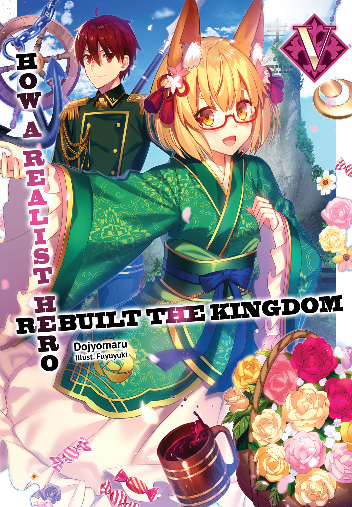
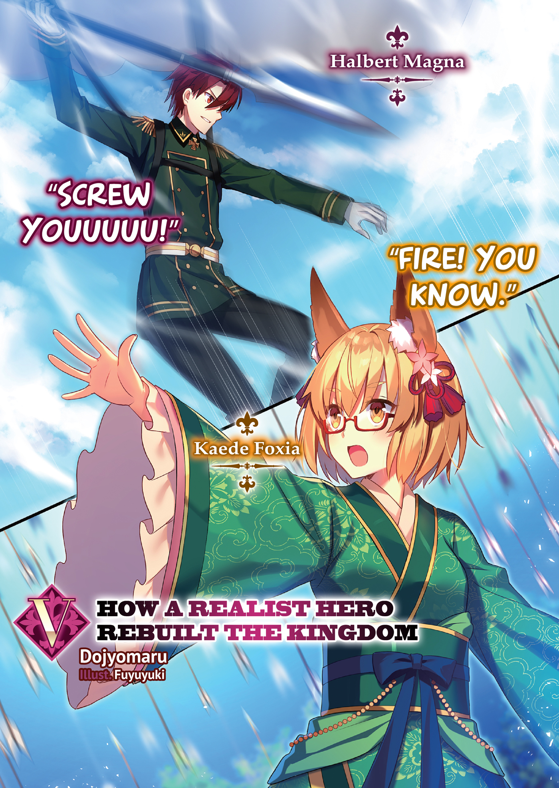
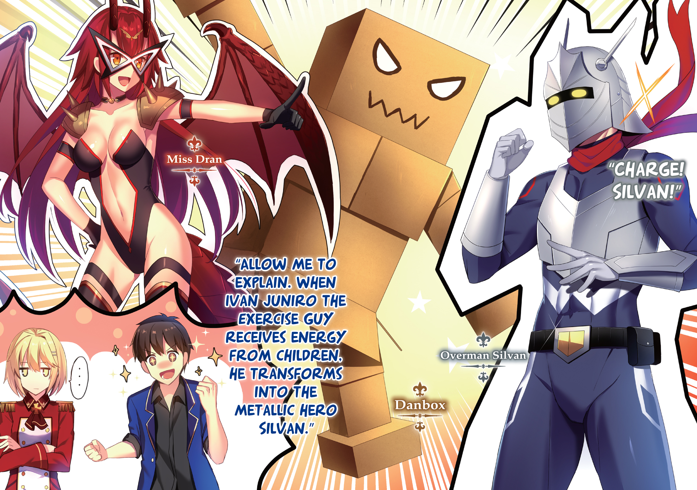
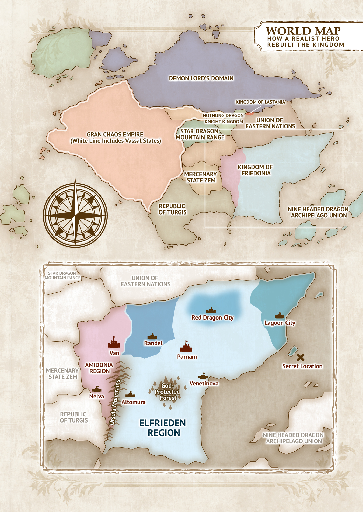
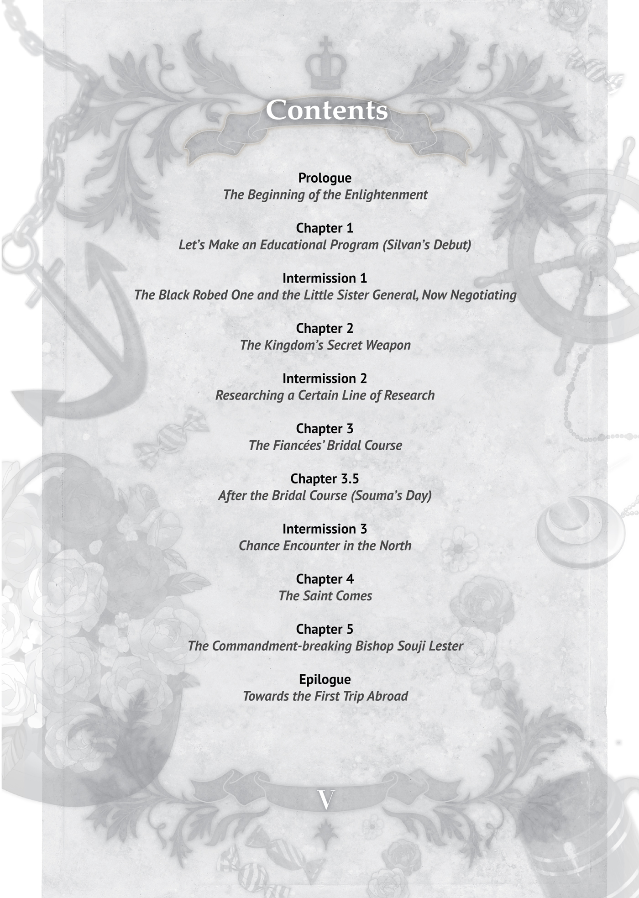
Prologue: The Beginning of the Enlightenment
1st day, 1st month, 1,547th year, Continental Calendar
This was the first time that New Year’s Day had come since the Elfrieden Kingdom had absorbed the Principality of Amidonia and become the United Kingdom of Elfrieden and Amidonia, or the Kingdom of Friedonia for short.
In the royal capital, Parnam, and the former capital of the Principality, Van, as well as any other city that had a receiver for the Jewel Voice Broadcast set up in its plaza, there were still a large number of people gathered there. After all, today the young king would be using the Jewel Voice Broadcast to issue a New Year’s greeting to the people. The people had gathered in order to hear it.
It wasn’t that Souma was doing anything to force the people to listen. But every time he used the Jewel Voice Broadcast, he had kicked off an event to gather personnel; or taught them about new foods as a countermeasure against the food crisis; or started up a music program... It was all so random, and the people were interested to see whether he might have something entertaining planned again. Also, when people gathered like this, the merchant stalls would come out to make a profit, and when the stalls were out more people would gather to see what all the fuss was... That feedback loop had gotten started, which was why even though Souma had only announced he would be making a New Year’s address, there were still so many people gathered.
One mother and her child were talking while they waited for the broadcast.
“Is His Majesty going to do something again?”
“Yes, darling. I wonder what it will be.”
The receiver mounted on the fountain began to project Souma’s image.
Behind him were his fiancées Princess Liscia and Princess Roroa, the latter being the former Sovereign Princess of Amidonia, whose betrothal to Souma had been announced at the same time as the annexation of her country.
Liscia and Roroa both wore flawless smiles, waving for the people. The princesses of two nations that had once been enemies were on the same screen, smiling. This reassured the people of Elfrieden and Amidonia about their newly united kingdom.
Eventually, the image of Souma began to speak. “To my beloved people in both our united kingdoms of Elfrieden and Amidonia, I wish you a happy new year.”
Souma, Liscia, and Roroa all bowed their heads in unison.
There was some murmuring about how the king had just bowed his head at the start of the new year, but when his face rose once more, Souma was wearing a teasing smile. “This is a traditional New Year’s greeting in the world I came from. ‘You’ve done a lot to help me in the past year. I hope I can count on you again in this one.’ That is the sort of feeling it’s meant to express.”
While the people of the kingdom were still taken aback, Souma pivoted into the main topic.
“Now, I hear that in the Amidonia Region, it was customary for your ruler to announce the national policy for the coming year. Roroa suggested I do the same, so... What the heck, I’ll give it a shot. For now, the nation’s goal for this year will be...”
A wave of tension rushed through the crowd listening to the broadcast in the Amidonia Region.
The people formerly of the Principality of Amidonia were all recalling Gaius VIII’s face when he’d made his proclamations each new year. With a stern expression, he would swear revenge on Elfrieden, then set their goal as the reclamation of their stolen lands.
For the Amidonians, the announcement of policies on the first day of the new year had always been done in order to lift up their fighting spirits. They could hardly be blamed for tensing in anticipation that there might be a war with some other country again.
Just where was this country headed? Were they going to invade some other place? To bring down the Empire and claim hegemony over the continent? Or to strike out against the Demon Lord’s Domain, and thus liberate the northern lands...?
The listening gulped in anticipation, and at last Souma spoke.
“I think I’m gonna go with ‘To make a better country.’”
A hush fell over the crowd.
That’s way too vague! Everyone in the audience had that same thought. It seemed Souma had expected they would, because he laughed.
“I think that may be a little too vague, but it’s very important. First, there’s the matter of how to define a ‘good country.’ It may actually be easier to start by thinking about what a ‘bad country’ is like.”
Souma made a fist with one hand, raising one finger after another as he explained.
“First, a country where people go hungry. Second, a country where people freeze. You could rephrase those two as a country where people suffer in poverty, maybe. People starve or freeze to death because they can’t buy food, and they’re unable to acquire a place to live or clothes to wear. I think it goes without saying that a country where either of those is allowed to happen is a bad one. In a country where people starve or freeze to death, there’s no way to bind the hearts of its people together.”
These were words that the people of both Elfrieden and Amidonia could agree with. Both of them had experience with food shortages. The people on the Amidonian side had felt it particularly keenly. They had averted their eyes from the problem because of their hatred for Elfrieden, but now that they had recovered thanks to the support they’d received from the kingdom, they felt a strong desire to never go back to the way things had been the year before.
“Third, a country with poor public order,” Souma continued. “For instance, even if a country has no lack of food and warmth, if there are thieves, bandits, and pirates running rampant, it’s probably not a place you’d want to live. That said, those sorts of lowlifes are generally born from the same cause I mentioned earlier: poverty. In the world I came from, there was a saying: ‘Only once we are clothed and fed can we afford to be polite.’ When it takes all you have just to stay alive, you lose the space in your heart that it takes to care for others.
“Fourth, a country that spends all its time at war. Even if they win every battle, a war is a burden on the national treasury, and people die in it. It’s even worse when you lose. If you earn the enmity of another country, there will be terrorism, and that leads to a worsening of public order. It robs you all of the things that are most important to you.
“Fifth, a country that, in contrast to the one in my fourth example, can’t protect itself. If the country neglects its ability to defend itself because the people don’t want to fight, other countries will take advantage. The result will be the same as for the fourth country. It would be even worse in our current times, since the Demon Lord’s Domain presents an unpredictable threat.”
While he said this, Souma extended his now-fully-opened hand towards the people.
“Even with that rough outline, I think you can see all five of these are bad countries. What, then, is a good country? Is it the opposite of these bad countries?”
Souma turned over his hand so that the back of it was facing them, then bent down his fingers as he spoke.
“An independent country where the people don’t starve, where they don’t shiver from the cold, where public order is maintained, where there aren’t excessive invasions of other countries, and where we will be all right even if another country or the Demon Lord’s Domain comes to attack us. I think that would probably be a ‘good country,’ and that’s a goal this country should work towards.”
Souma held his hand, which had been balled into a fist once more, out for the people to see.
“Even if these things, taken individually, each seem obvious, it’s quite difficult to accomplish all of them at once. Especially in this day and age, with the appearance of the Demon Lord’s Domain throwing everything into chaos. These are hard times to do the things that ought to be done. It will take many times more power to accomplish than it would in peacetime. In fact, it will take so much power that I feel like conquering the entire continent would be relatively simple in comparison.”
Here Souma paused, taking a deep breath.
“...So, all of that said, there’s something I would very much like you, the people of this country, to do.”
The crowd gulped again.
To gain the power he’d spoken of, what did he want them to do?
The first thing that came to mind was raising taxes. If taxation was heavier, the country’s income would rise, and they could spend more on the military. It might not be the wrong move, depending on the situation, but it would make life harder for the people.
The second thing that came to mind was conscription. This country already had professional soldiers, but the people were fearing that even civilians would have to undergo basic training for conscripts.
They were thinking that the “power” Souma had spoken of was “military power.” However, this was a mistake.
Souma said, “My people, I call on you to study!”
◇ ◇ ◇
“My people, I call on you to study!” I shouted inside the castle’s Jewel Voice Room. “Let me present you with a metaphor. Imagine two people are about to fight with swords. In most cases, the stronger one will win, or the one with the better sword. Now, when two equally strong individuals fight with equally good swords, is the result simply down to luck?
“Nay, I say to you. The one who knows the sword better will win. Even if their levels of strength were the same, and their weapons identical, if a cook and a blacksmith fought with swords, I’m fairly sure the blacksmith would win. A blacksmith sees swords every day as part of their work, and would be well acquainted with their length and their reach.”
I tapped a finger on my temple.
“If you know more than other people, that, in and of itself, can be a weapon. A great general can fight a hundred battles and win them all because he knows war; knows his own forces; and he even knows the forces of his enemy. He avoids unwinnable battles, only choosing to fight the ones he can win. The reason a mediocre general will lose at the critical juncture is because he doesn’t know war, and he doesn’t know his own forces or that of his enemy. He fights needlessly for repeated victories and losses, unable to focus on only the most important ones.
“There was a strategist in the world I came from who said ‘Know thyself, know thy enemy, and you need not fear the result of a hundred battles,’ but... this is something that applies outside the domain of war, too.
“If they both deal in the same goods, but Merchant A prospers while Merchant B does not, it’s because Merchant A knows more about how to do business.
“Though they might use the same base materials, the reason a great craftsman’s works are many levels above an average craftsman’s is because he has a deep knowledge of the properties of those materials.
“Though you both grow the same thing, the produce that comes out of your neighbor’s field tastes better than what comes out of your own because the farmer next door has know-how about the proper way to raise that crop.
“Though you both cook the same thing, the reason a chef’s dish tastes better than your own is because a chef knows the good and bad traits of each ingredient, and has a deep knowledge of the ways to prepare them.
“The reason the superior hunter comes back with a kill every time he goes out is because he has a deep knowledge of the terrain, as well as the traits of the animals he hunts.
“In the world of entertainment, a famous actor is able to inspire emotion in people with each of his performances because he has a deep knowledge of people’s hearts.
“It’s the same for kings and nobles, too. The kings who have been called great were those who had a deep knowledge of how to rule a country well without facing resistance from their people. I, myself, still have a long way to go, but I am working hard to learn.”
I paused.
Yukichi Fukuzawa had said in An Encouragement of Learning, “The heavens do not create men who are above other men, nor do they create men that are beneath other men.” So why was it that, in the real world, there was such a gap between the rich and the poor?
He’d suggested that it was a question of learning. Those without learning could only do manual labor, thus their position in society would lower. Those with learning could do more difficult jobs, thus they would become more important.
I had thought it was a bit of an extreme argument, but as I’d read on, I’d found there were parts of it I could agree with.
I continued.
“The way to gain a deep knowledge of things is to learn about them. Learn from those with superior knowledge and skills. If you have knowledge and skills that are superior to those of others, then you should be the one to teach them. Those who ask to be taught must pay their respects to those who teach; and those who teach must show compassion to those who seek to learn from them. By learning from one another like this, we can give birth to even greater skills. I am confident that, no matter what your occupation, doing this will allow you to live a more prosperous life than you do now.”
Silently, I repeated: Those who ask to be taught must pay their respects to those who teach, and those who teach must show compassion to those who seek to learn from them... I had inserted that line to address the rights of both parties. As a statesman, I had to be careful that the ones doing the teaching weren’t doing so at a complete loss to themselves. Still, even if I tried to explain that to the people right now, they wouldn’t understand, so I had no desire to go in-depth about it.
“I want to raise the average standard of living for the people who live in this country,” I said. “That’s because doing so will increase this country’s ‘power.’ If you all become more wealthy, tax revenues will go up. With higher tax revenues, I should be able to divert some funds towards military equipment and the nurturing of new industries. The whole country will become prosperous and strong.
“To that end, I want you, the people, to study. I’d like you to start with reading and writing. If all you can do is read and write, that will let you communicate with people at a distance. After that, I want you to learn arithmetic. If you can do that, it vastly expands the range of subjects you can learn.”
I gave the signal, and Liscia came out from behind me and held up a piece of paper with the kanji for “Writing” written on it.
I pointed to that symbol and continued.
“I want every adult in this country to be able to read, write, and do arithmetic. We are currently working to open up education centers called training facilities in every major city, as well as simpler schools in each town. This ‘Writing’ mark will show which training facilities and schools have been approved by the state. During the day, they will only offer lessons for children, but at night, adults will be able to learn there as well. If you have the strength left to participate after work, I’d like you to come in and learn, even if it’s only a little bit at a time. By the way, this ‘Writing’ mark indicates that you can learn to read, write, and do arithmetic for free at the places that display it. We don’t intend to stop anyone from setting up their own private schools, so keep that in mind.”
I paused for a moment to catch my breath. Because I hadn’t been pacing myself as I’d emphatically tried to explain things, I was starting to get dizzy. But I couldn’t stop just yet. I hadn’t told them everything.
“...Also, I would like to address all of you who already can read, write, and do arithmetic. Please, don’t be satisfied with just that. Because we still know nothing.”
When I gave the signal, this time Roroa came forward, opening up a map of this world.
I pointed to it.
“As you are already aware, the Demon Lord’s Domain has appeared in the north of this continent. However, I must note, we know nothing about the Demon Lord’s Domain. There’s apparently a Demon Lord... or so people say, but no one has ever actually seen him. What is the Demon Lord’s Domain, anyway? There are monsters in the Demon Lord’s Domain, but there are also monsters in the dungeons. What’s the difference between the two? Is there one? How are the Demon Lord, the demons, and the monsters in the domain connected? Is it a hierarchical relationship? Or are they hostile to one another? ...We don’t know anything.
“Launching an invasion without that knowledge caused a great tragedy once in the past. If people had understood the difference in power, they wouldn’t have launched a reckless war and gotten so many people killed, I’m sure.”
I gestured for Liscia and Roroa to go back to standing behind me, then continued.
“This isn’t only true of the Demon Lord’s Domain. There are far too many things about this world that we don’t know. Magic is a good example. It’s part of our everyday lives, yet we know nothing about it. For starters, what is magic? Why can everyone use it seemingly naturally? There was no magic in the world I came from, so that’s a mystery to me. How can you produce fire out of thin air? Because there’s magicium? Well, what’s magicium, then? Is it a gas, a liquid, a solid? The three-eyed race can see bacteria and microorganisms that other races can’t see without a microscope, but even they can’t see any of this so-called magicium. How can we prove it exists?!”
I put emphasis into my words.
“As you can see, this world is full of mysteries. Don’t stop thinking just because those mysteries have always been there! Don’t believe things just because traditional stories say so! Don’t be led astray by those who hold a lot of influence! Don’t run away saying it’s the work of God, beyond human understanding! Don’t say that it must be the fault of demons! Doubt everything; study, let your opinion collide with those of others, and find the truth! Because a heart that seeks the truth is the mark of a sentient being!”
Finally, I wrapped up my speech.
“That is what I have set as our national policy. Thank you for listening.”
With those as my last words, the first Jewel Voice Broadcast of the new year came to an end.
Once I was certain that we were no longer broadcasting, I slumped down on the spot. “Whew, that was exhausting...”
“Good work,” Liscia said. “I think you came across pretty well, you know?”
“Sure did,” Roroa agreed. “You were actin’ like a real king. I’m fallin’ in love with ya all over again, darlin’!”
They might say that, but I was at my wit’s end. I had gotten used to hosting various programs, but putting on a kingly speech in front of the people still made me tense. In times of crisis, I didn’t have the luxury of thinking about it, so I could make speeches then, but it was exhausting having to wear my king persona in peacetime, too.
“Ugh, I’ve worked up a nasty sweat,” I said. “Sorry, could you get me a cup of water?”
“All right,” Liscia nodded. “Roroa, could you?”
“Aye, aye, sir.” Roroa gave a salute and then went to fetch the tray with a water jug and cups that had been left in the corner of the room. When I took a cup, Liscia poured some water for me.
Once I had finished gulping down the whole cup, I finally felt a little more relaxed. “Whew... That brought me back to life.”
“Hee hee,” Liscia laughed. “Do you think the people will understand the importance of reading, writing, and arithmetic now, maybe?” She was still holding the jug of water.
“Ha ha, it won’t be that simple,” I said. “Studying can be boring and tedious, after all. Just a little bit of encouragement like that isn’t going to keep them at it for long.”
“You mean making speeches about it isn’t going to help much?”
“If all I’m doing is talking at them, yeah,” I nodded. “But there are ways.”
“Ways?” she repeated.
“There are ways to have fun while learning naturally.”
A sudden knock came from the door. When I said “Come in,” Juna and Aisha, who was carrying some sort of large box, entered.
“We have come at your behest, Your Majesty,” Juna said formally.
“Also, the Jewel Voice Broadcast Production Department asked us to bring all of this to you, Your Majesty.”
When Aisha laid the box that looked as tall as she was down on the floor, there was a rattling from inside it.
Roroa looked at the box with curiosity. “Hey, darlin’, what’s in the box? It was rattlin’.”
“Oh, it’s probably the ‘equipment’ I asked them for.”
“Equipment? Are you going to wear it, Souma?” Liscia asked, a question mark floating over her head.
I didn’t go out onto the battlefield, both for practical reasons and because of my position, so when they’d heard the word “equipment” come out my mouth, everyone, not just Liscia, had looked at me dubiously.
I grinned back at them. “It’s not for me. Well, just you wait and see.”
“...When you have that look on your face, Souma, I just know you’re about to do something crazy.” Liscia looked at me with exasperation, and my other fiancées nodded in agreement.
“...You don’t have any faith in me, huh?” I asked.
“I may not have faith in you, but I do trust you,” Liscia said.
“Hm? What’s the difference?”
“Based on past experience, I know you’re going to make us all run around like crazy, so I have no faith in you on that account. But it feels like it will work out in the end, despite the headache, so I do trust you.”
“““I agree!””” The others all nodded and agreed with Liscia with straight faces.
Ha ha ha, they all understand me so well... Sigh...
Chapter 1: Let’s Make an Educational Program (Silvan’s Debut)
10th day, 1st month, 1,547th year, Continental Calendar — Royal Capital Parnam
It was a day when the festive mood of the New Year was beginning to settle down.
The fountain plaza in Parnam where the Jewel Voice Broadcast could be watched was still packed with people. That new king was apparently going to be broadcasting yet another new program, so the people had gathered to see it. At this point, it was a familiar sight in pretty much any city where the Jewel Voice Broadcast could be watched. The people would gather every time a new program was planned like this; the merchants would come with their carts, and it would turn into a festival-like atmosphere.
Dece, Juno, and their adventuring party were there in that festive fountain plaza.
“Wow, it’s as crowded as ever,” Juno commented. “That’s the capital for you.”
That was the opinion the baby-faced, slender, female thief let slip out as she was overwhelmed by all the people passing by. With the protection quest they had taken from the guild complete, the party had decided to come see the Jewel Voice Broadcast, since they were already in the area anyway.
The brawny brawler Augus was dragging the affable young priest Febral around from stall to stall, so the only ones here were Juno, the hot-blooded and handsome swordsman Dece, and the quiet, shapely mage Julia.
“These broadcast programs have already become one of the famous sights of this country, after all,” Dece told her. “The music programs are the best, you know. The loreleis are cute, and when I consider the possibility of not being able to hear their voices anymore, even though I’m an adventurer, I don’t feel like I want to go to other countries any— Ow!”
Dece had been rambling on about the topic, but Julia pinched his upper arm with a smile.
Seeing that her leader just didn’t understand the female heart, Juno shrugged her shoulders with dismay. She started thinking that maybe she should be considerate and disappear off somewhere for their sake... but then it happened.
The broadcast seemed to have started, and the people were all looking towards the fountain, but what was displayed there was... some sort of roly-poly creature? All the people of the kingdom were taken aback by this, but Juno had the loudest reaction of all.
“Huh?! What’s Mister Musashibo doing on there?!”
Yes. What was there to hide? The one appearing on screen was not a snowman, or a kagami mochi, it was Little Musashibo. Little Musashibo turned to the screen and waved his arms around.
“Hey, everyone. I’m Little Musashibo. Nice to meet you.”
“““He talked?!”””
Hearing Little Musashibo’s adorable, child-like voice, Juno, Dece, and Julia all cried out in surprise at the same time. Little Musashibo, who had never said a word no matter how much trouble they’d gotten into on a quest, was now onscreen and talking. You couldn’t blame them for their surprise.
“That voice... it sounds like a child’s, or a woman’s. Was the person inside him female all along?!” Dece cried out in shock, but Juno immediately denied it.
“Nah, I’ve seen his hand once before, and he was just a normal guy, you know?”
“But that’s a girlish voice, isn’t it?”
“It’s a kigurumi suit, so why can’t it just be a different person inside?” Julia suggested, in a relaxed tone.
Dece and Juno gulped, seeing the logic behind the comment. ““...Y-Yeah, of course that’s it.””
They had forgotten because of how human its gestures were, but the person in question was a kigurumi suit. It was possible the suit had just been loaned out by the castle.
With no idea of the confusion it was causing for Juno and the others, the Little Musashibo on the broadcast declared in a loud voice, “Okay, Together With Big Sis is starting now.”
◇ ◇ ◇
At the same time — Parnam Castle’s Great Hall
Right now, Little Musashibo was dancing to an easygoing melody right in front of our eyes. Liscia, who was standing beside me and watching this from a spot that wouldn’t appear on the broadcast, stood there with her mouth hanging open, a blank expression on her face. There was an awkward silence between us.
“Um... Could you maybe say something?” I asked hesitantly.
“I don’t even know where to start... No, I mean, what is that even supposed to be?”
“Little Musashibo.”
“Yeah. That, I know. That’s not what I meant. Why is it talking?”
“Well, because there’s a person inside it, of course,” I said. “Pamille Carol is providing the voice.”
“Pamille’s inside that thing?!”
Yes, as a matter of fact, she was. We’d had no equipment for recording, so we couldn’t add the voice in post-processing, which meant the voice had to come from inside Little Musashibo. I was controlling his movements, so it wasn’t too heavy for Pamille, but she had still complained it was hot and stuffy inside there.
“You have that kigurumi suit registered as an adventurer, don’t you?” Liscia demanded. “Is it okay having it appear on the Jewel Voice Broadcast? Wouldn’t it be bad if people found out it was connected to the royal family?”
Ohhh, yeah, if Juno and the others were watching, that might turn into a bit of a headache.
“Well, it’s a kigurumi suit, after all,” I said. “‘We saw this kigurumi in town and thought it was cute, so the castle asked for a copy, and now we’re using it as a character in our program.’ ...Wouldn’t a story like that work?”
“Even if it does...” she muttered. “And wait, what is this program even supposed to be about?”
“What, you ask? It’s an educational program.”
“Educational?”
“Oh, look, the main program’s about to begin,” I said, pointing.
◇ ◇ ◇
The easygoing song ended, and the new scene to be broadcast was set on a stage.
Up on the stage there was a backdrop of trees, grass, and stumps to show that it was a forest. In the middle of that sparse forest, Little Musashibo was drawing something on the ground with chalk. Looking closer, it was apparently numbers.
“Um... 1+1 is 2, 2+2 is 4... Hrm, this arithmetic stuff is hard.”
Little Musashibo twisted his head around in confusion. The gesture was very childish.
An older girl with blue hair wearing a boyish outfit including a hat and overalls passed by. When the blue haired girl noticed Little Musashibo, she called out to him in a cheerful voice.
“Hey, what’s wrong, Little Musashibo? Why the troubled look on your (expressionless) face?”
Little Musashibo looked up, walking over to the girl with slow, easy footsteps. “Hello, Big Sister Juna.”
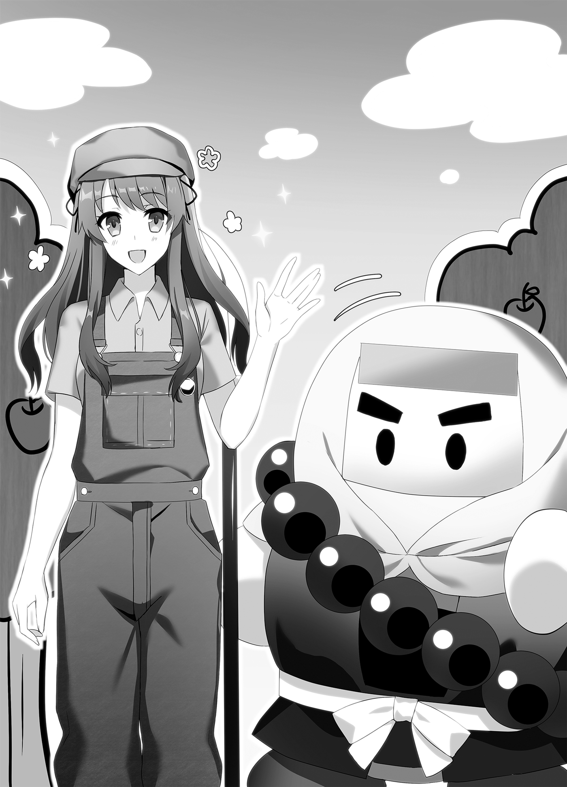
At that point, the adult viewers noticed what was up. The big sister character was the famous Prima Lorelei, Juna Doma.
Because Juna was mostly known for being so beautiful that even the girls wanted her, they hadn’t made the connection with her in this boyish outfit. Her tone of voice was more direct, in keeping with the outfit. While this version of Juna had lost the mature sexiness that made her seem older than she actually was, it brought out a cuteness that was more like what you’d expect of a girl her age.
Little Musashibo turned to “Big Sister Juna” for help. “Big Sister Juna, arithmetic is hard and I don’t know what to do about it. I look at books, but there are just numbers and symbols, and it’s not interesting at all.”
There were a large number of viewers who nodded in agreement.
It had been nine days earlier that Souma had encouraged the people to learn to read, write, and do arithmetic, but those who lived a lifestyle where they didn’t need to do calculations had apparently thought, “Okay, reading and writing, maybe, but what good is learning to do calculations for anyone who isn’t a merchant?”
However, Juna giggled and gave a playful wink to Little Musashibo who was voicing those viewers’ opinions for them. “Oh my, don’t you know that math can be fun?”
“What? Really?” Little Musashibo asked doubtfully.
“It’s true,” she said with great confidence.
A fun, cheery melody began to play again from seemingly nowhere in particular. Juna began singing along with it.
The song was “Fun Arithmetic.” It was from Minna no Uta, or Songs for Everyone, in the world Souma came from. This song, which was sung by Seiji Tanaka, presented addition; subtraction; the fact that when you have a group of ten it moves up to a new digit; and the fact that any number, no matter how large, disappears when multiplied by zero; all in a comical fashion.
Juna and Little Musashibo sang this song, dancing happily in a circle together.
When they finished, Little Musashibo excitedly clapped his hands. “I feel like arithmetic just got fun. If I study, will it be even more fun?”
“Of course,” Juna assured him. “If you study hard, you’ll be able to do even more amazing things.”
Then Juna sang a song for Little Musashibo about all the things he’d be able to do if he studied his arithmetic. It had a fun melody and playful lyrics, but if you were listening closely, it expressed a number of mathematical phenomena. It was exactly the sort of song that belonged on an educational program.
The children who were watching the broadcast innocently imitated Juna and Little Musashibo, singing the lyrics to themselves and dancing. The adults, on the other hand, considered the meaning of the lyrics, nodding along with interest as they figured it out.
In among them there was just one person, Juno, who was thinking about something entirely different.
Did he just lend them his kigurumi suit? No... That can’t be it. Juno was closely scrutinizing Little Musashibo’s movements. The way he moves, it’s just like Mr. Little Musashibo. But the voice I heard was a cute girl’s voice. The hand I saw that time was a man’s hand. There’s a different person inside, but he’s moving the same... What does it mean?
As she pondered deeply, something occurred to Juno.
Now that I think about it, wasn’t there that one time I saw Mr. Little Musashibo delivering a letter to the guild? After the receptionist saw it, she told us there was a banquet being held at the castle. In other words, that letter was from the castle. This broadcast is put together by the castle, too, from what I hear. Maybe Mr. Little Musashibo is connected to the castle somehow?
Juno stared hard in the direction of Parnam Castle which was where the broadcast was coming from.
...I’m curious. I want to look into it, but... I can’t exactly go sneaking into the castle. If they caught me, I’m sure I’d be punished. Hmm, isn’t there any way I can look into it?
While Juno was thinking about all of this, the program continued. When Little Musashibo and Juna’s short theater segment came to an end, the broadcast video moved to another place.
This time it wasn’t a stage but what looked like a great hall. There were around ten three-to-five-year-old children there. Owing to their young age, they weren’t coordinated at all, and they would sit down, run around, lie down, and generally move about freely. These were the children of the castle’s workers who had been left at the daycare center.
Souma had thought the audience for an educational program should be made up of children, so, with the permission of their parents (though, with the king asking them a favor, they could hardly decline...), he had arranged for them to appear. Also, in with the children there was a young girl who looked to be around sixteen years old.
“Hey, isn’t that Princess Roroa?” one astute viewer pointed out.
That girl was indeed Roroa, the former Princess of Amidonia. Roroa was wearing a boyish outfit like Juna’s, and said in a cheerful voice, “Look, everybooody. Your singin’ big sister is gonna come out and plaaaay. One, two, aaaand...!”
“““Big Sister Juna!””” the children called.
With Roroa giving them the signal, the children all called her name together. When they did...
“Helloooo.” Juna appeared again, waving her hands. She stood next to Roroa and said, “Now, everyone, it’s time for a song.”
Then she began to clap her hands.
◇ ◇ ◇
Meanwhile, back where we were recording in the castle, Liscia was crying out in surprise.
“Roroa?! What is that girl doing?!”
“When I told Roroa we would be making an educational program, she said, ‘Sounds fascinatin’! Darlin’, I wanna be on it, too!’” I said. “She forced me to do it. I had no other options, so I decided to let her be on the show as Juna’s assistant.”
“Can you really go around deciding roles on a whim like that?” Liscia asked skeptically.
“...I have a soft spot where crying children or the sponsors are concerned, you know. Besides, this program is being brought to you by The Silver Deer, which Sebastian is the public face of; but Roroa runs it behind the scenes, after all.”
Right now, our country was providing funding for multiple businesses and for research on a variety of topics. We were heavily focused on foodstuffs, medicine, and the military because those were things that would have an effect on the lives of the people. Thanks to that, the national treasury was always on the verge of collapse.
Eventually, as the population grew, the increase in taxes would make back our money on the investment, but we couldn’t count on it to happen right away.
With that in mind, the finance minister, Colbert, kept a tight hold of the country’s purse strings, and he wasn’t about to allocate funds for some new program that had no record of success. That’s why I had asked Roroa’s company to fund it. Because of that, I was now left with no choice but to listen to Roroa, the investor, when she asked me for something.
When Liscia heard the details, she sighed. “It’s always about money, huh. It’s a hard life.”
“You said it.”
...Though I’m sure Roroa set up her own company with this exact sort of situation in mind.
The truth of the matter was, if Roroa hadn’t invested, I wouldn’t have been able to do this broadcast. Besides, if I didn’t let her have a little of what she wanted, I was probably going to be hit with divine retribution someday.
I looked over to the hall where Juna and Roroa were singing “Musunde Hiraite” with the children.
The children watched Roroa’s exaggerated movements and then imitated her. When I saw them bouncing around, moving their arms and legs, it put a smile on my face. While my heart was being warmed by their angelic behavior, Liscia asked me a question.
“I understand why you want to make an educational program, but why are there so many songs?”
“Don’t you have songs from your childhood that have stuck with you for a strangely long time?” I asked.
“Like lullabies?”
“Yeah, exactly. Songs and melodies get stuck in your head, and it’s easy for people to end up singing or humming them on their own. That’s why it’s more memorable if you use songs in education than if you just taught the material normally, and it’ll spread farther, too.”
For instance, before they taught us “Irohanihoheto” in school, I’d already learned it from Minna no Uta’s “Iroha Matsuri.” Also, I feel like a major part of the reason I could remember the ordering of the Chinese zodiac without getting it confused was because I’d learned a song called “Eto wa Merry-go-Round.” If I still remembered those songs even now that I was an adult, Minna no Uta really was incredible.
Liscia said, “I see...” with a grunt of admiration. “Honestly, I think this was really well thought out.”
“Hm... Well, thinking is my job, after all.”
“It’s not as easy as you make it sound. Thinking about the people and coming up with policies to benefit them.” Liscia was looking at me approvingly... I averted my eyes. “Wait, why did you look away?”
“Well... If you were to ask if it’s really for the people, I’d have to admit a bit of my own self-interest came into it, too...”
“Really? How?” Liscia stared hard at me.
...Well, there’s no helping it, I thought. I guess I’ll fess up.
“We’re holding the wedding ceremony as I formally inherit the throne, right?” I asked.
“Y-Yes, I suppose we are.”
Liscia’s cheeks flushed red when I said the word wedding. It had been just the other night, on New Year’s Eve, that I had proposed to Liscia and she had accepted, and it was still a little embarrassing to think about it. It was adorable when she did that, but... let’s move the story along.
“So, at the wedding, I want to reveal all of my queens, with no discrimination between who’s a primary and who’s a secondary.”
Because secondary queens, whose children would lack the right of succession, had originally been the kings’ concubines, they were seen as lower than the primary queens. As a result, even now that they were treated as queens, there were many cases where they would not be given a big wedding ceremony in front of the people. There had even been cases when secondary queens had felt inferior to the primaries, and so had declined to attend on that basis. They must have feared it would be a seed of later troubles.
I wanted to change that custom.
“Roroa said she was fine with being a secondary queen, but since we are going to be ruling over the Amidonia Region, I want to make her my third primary queen,” I said. “That would make Juna the only one who can’t participate in the ceremony, right? I was thinking, if possible, I’d like everyone to be there together.”
“You’re right. I think that would be for the best.” Liscia nodded and agreed without hesitation. “Aisha and Juna were with us during the hard times, and we got through them together. They feel like war buddies to me. Oh, I don’t mean to leave Roroa out. I think she can be a nuisance sometimes, but the way she’ll play around with me like a little sister is cute. It’s just that Aisha and Juna are special. It doesn’t matter who’s a primary and who’s a secondary; I don’t want anyone to feel neglected.”
“I see... I’m relieved.”
It was a good thing the first primary queen, Liscia, was so tolerant. Liscia and the others got along well, so I hadn’t been worried, but... even so, it was a relief to hear Liscia herself say all of that. Honestly, these wonderful girls were all better than I deserved.
Liscia tilted her head to the side. “But does that have anything to do with this broadcast?”
“Yeah,” I said. “For now, my betrothal to Juna is secret, but that’s going to become untenable as the ceremony gets closer, right?”
“Well, of course. The wedding will be broadcast nationwide.”
“Yep. So, there needs to be an announcement made at some point... I was thinking, when that happens, between the lorelei Juna and the Juna who sings songs with children, which would the people be less upset about... you know...”
Liscia narrowed her eyes and gave me a hard look. “Don’t tell me you planned this program just for that. Did you?”
“Oh, no. The plan itself was meant from the beginning to help educate the people,” I said, trying not to make eye contact. “It’s just, well... I let my own selfish interests get involved a bit, too, you could say...”
Liscia let out a sigh. “You’re hopeless. Do you really have to worry that much about how the people see you?”
“No, no, it’s a pretty critical issue, you know?!”
After all, Juna had become such a national idol that we had gotten petitions from the Congress of the People saying, “Have her on the Jewel Voice Broadcast more often.” If I just announced our engagement the way things were, there seriously might be riots. That was why, in order to keep them under control, I was planning to gradually shift Juna from idol work to children’s songs.
When I told Juna that, as much as it pained me to do it, she said, “If I can sing at your side, sire, I don’t care what position it is in,” and smiled for me.
Judging by the fact she had then immediately recommended a new lorelei, Komari Corda, who could carry on her current style, Juna was enthusiastic about the idea.
And, as we were discussing that, the part where they sang with the children had come to an end.
“All right, everyone, well done,” Juna said.
“And did all of ya out there watchin’ us manage to sing along, too?” Roroa asked.
Juna and Roroa were closing out the segment.
“What’s scheduled after this?” Liscia asked quietly.
“Next up is exercise time. It’s a program to get everyone’s bodies moving.”
“Exercise? Since so far you’ve only been using family members... Is Aisha doing it?”
“No. I’ve brought on a proper expert for the exercise segment.”
“An expert?” Liscia was tilting her head to the side in confusion.
Roroa in the hall took the lead again. “Okay, it’s time for exercisin’. We’re all gonna call the exercise guy together. One, two, aaaand...!”
“““Exercise guuuuuy!””” the children all shouted together at Roroa’s prompting.
“Hahhhh!” A man jumped down from the balcony on the second floor. The man landed stylishly in front of the children, flashed his bright white teeth, then turned towards the screen and gave the viewers a thumbs-up.
The young human man was tall, standing at around 185 centimeters. He had a muscular physique that was apparent even with all of his clothes on. His face, taken as a whole, would have been considered handsome, but his thick, upturned eyebrows, his sharp eyes, and his shining white teeth... Each of the individual parts had a lot of “character.”
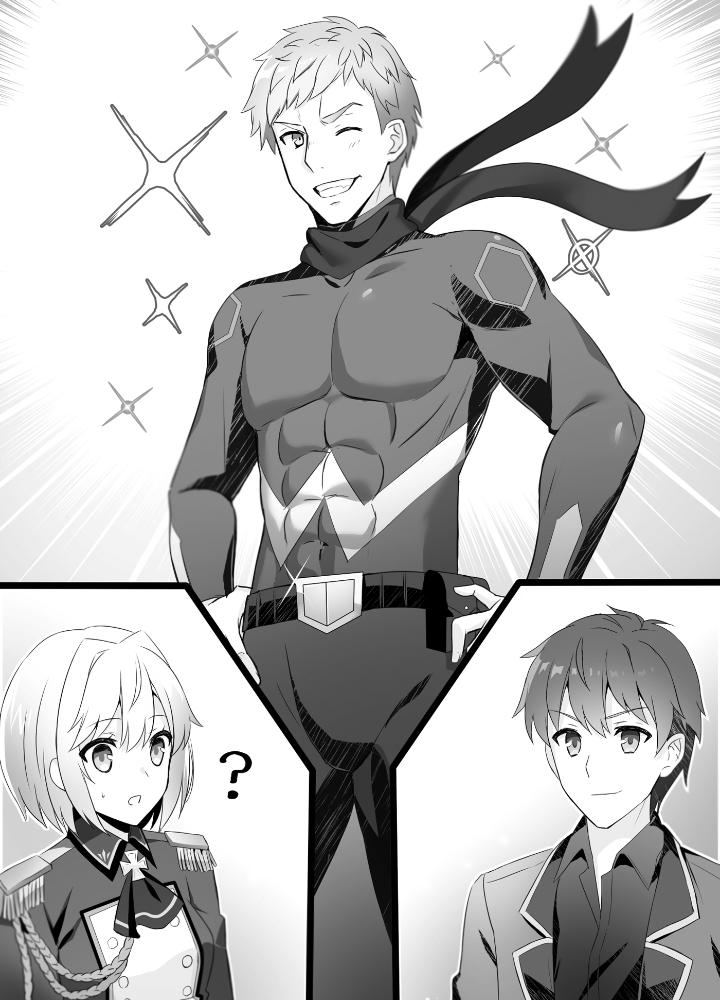
The young man put a hand on his hip, then turned to the children and said, “Sorry for the wait, children! Now, move your bodies with me!”
He was a young man who spoke passionate words with a passionate smile.
Liscia watched the young man, her mouth agape, and whispered, “...Who is that?”
◇ ◇ ◇
Earlier, in the middle of the 12th month, 1,546th year, Continental Calendar.
On that especially cold day...
“We’ve changed the way we produce grain in our territory. It’s greatly increased our food self-sufficiency rate,” the man told me. “Thanks to your transportation network, sire, my domain is more prosperous than ever.”
“Oh, ho,” I said. “I see...”
I was standing next to a burly, middle-aged man and smiling along as he rambled on endlessly. The man’s name was Moltov Juniro. He was the head of one of the ten most influential noble houses in the country, the House of Juniro. Today I had been invited to a banquet they were hosting.
These days, I was being invited to a banquet held by some influential noble or other nearly every day. It seemed that in this country, in the middle and towards the end of the twelfth month, the nobles would invite guests they were close to and hold a banquet. There they would thank them for their interactions throughout the year, and express their hope to remain just as close in the next one.
Well, basically, it was an end-of-year party.
In addition, it seemed that the number and level of the guests they could attract was used as a barometer of the noble’s power and influence. That was why, at this time of year, the nobles invited as many people as they could, especially those of high stature.
Now, if you asked who the person of highest stature in this country was, that would have to be me, the guy who was currently holding on to the throne. Naturally, even if they wanted to, no ordinary noble could invite the king without having any special ties to him. I wasn’t overly fond of these banquets myself, after all. Normally, even if I received an invitation, I turned it down because I was busy.
So if I still had to attend someone’s banquet, that meant they were no ordinary noble. While they might not be on the level of Excel, there were still powerful nobles in this country. It was difficult to turn down invitations from those sorts of people. It’s a superior’s duty to socialize with those who serve under them.
Because I’d turned down so many of them, Hakuya had told me, “Please, at least attend the year end banquets.” Because of that, for the past few days in a row, I had been forced to attend the powerful nobles’ banquets.
While getting even more dressed up than usual for the banquet (It was a very noble-y outfit. Even my sleeves had frills.), I would groan, “Ugh, what a pain,” or, “I don’t wanna go,” or, “This is such a hassle,” and Liscia, who was helping me get changed, would reproach me for it.
“This is your duty as king,” she would say. “As your fiancées, we’ll be there, too, so shape up, would you?”
Like she’d said, Liscia and my other partners were in attendance, too. Even so, they didn’t have it as bad as I did. My fiancées, Juna excluded, were taking turns and each accompanying me one at a time. I, on the other hand, was being forced to attend every single time.
“As you can see, my domain is in excellent shape...” Moltov was droning.
“...”
If you asked what I didn’t like about banquets, it was having to play along with my host’s “hospitality” which consisted of them going on at length about this or that. Even if the food looked luxurious, I didn’t have any time for eating or drinking. What was more, the nobles all tended to talk about the same things.
First was boasting about how they managed their domain. That was no doubt largely because I had added the management of their domains into their performance evaluations. Most nobles tried to show there were no issues in their governance, and the more capable ones took the chance to express exactly how wonderful their managerial skills were.
The evaluations were done by inspectors dispatched for that express purpose, and they would get proper input from the people living in the domain. That made trying to convince me at a banquet all but meaningless, but it was human nature to want to take every chance they could get. If they thought the king was keeping a close eye on them, and it led to an improvement in their people’s lives, that was a good thing. Still, I got sick of having to hear similar accounts at every banquet.
“Sire, allow me to go get a drink for you,” Aisha, my partner for the day, offered in a small voice. The silver dress she’d also worn for the music program she’d helped me host in Amidonia looked good on her now. She must have sensed my exhaustion and was trying to be considerate.
I had just been feeling a bit parched, so I asked her to please do so, and Aisha silently left.
The moment Aisha departed, there was a sudden change in the talkative Moltov’s demeanor.
“...By the way, sire.”
His eyes were sharp, like a snake that had found its prey.
In that instant, I realized I had just screwed up. I’d been through this pattern a number of times already. When the king’s partner left his side, they saw that as their moment of opportunity.
“Would you mind if we talked somewhere else for a little while?”
“...Aisha isn’t back yet, you realize,” I said.
“It won’t take long. I’m sure the two of you will be able to meet back up in no time.”
Having said that, Moltov took my hand and half-dragged me away from there.
Yeah... This was definitely that pattern.
I don’t like this... Moltov may think this is his big chance, but I feel like I’m on pins and needles here...
While I was thinking that, as I had anticipated, there was a single young lady waiting for me when we arrived at our destination. She was somewhere around sixteen years old. She was clearly a lovely young lady of good upbringing.
“Allow me to introduce you, sire. This is my daughter, Siena.”
“Greetings, Your Majesty. I am Siena Juniro,” she said, curtsying.
...I knew it. They saw this as their opportunity to introduce me to young ladies they were related to.
In every era, blood ties to the royal house had been a source of pride for the nobility. If she became my queen, their house would be secure, and she might even give birth to an heir. On top of that, because my betrothal to Juna hadn’t been announced yet, as far as they were concerned, I only had three fiancées. That number was, with the exception of special cases like my predecessor, King Albert (he’d married into the queen’s family), considered low. Because of that, every noble was desperate to sell me on their daughters.
In the mere half year since I had been entrusted with the throne, I had annexed Amidonia and had a lot of other big, showy achievements, so people had big hopes for me. There were always a large number of marriage offers coming in to the castle, and my chamberlain, Marx, was always busy dealing with them.
“It pains me to always refuse them, so could you at least meet some of them?” Marx had asked me with pleading eyes, but it’d sounded like a pain, so I had taken a pass on that.
Even so, I still ended up having to deal with nobles who approached me like this, intent on not missing their chance.
Of course, the nobles weren’t brazen enough to bring these sort of talks up when one of my fiancées was right there, but whether it was Liscia or Roroa or Aisha, they were always guaranteed to create an opening to do it. My opinion of the nobles’ skill in that went right past exasperation and entered into the realm of admiration instead.
Not having much other choice, I greeted the girl. “It’s nice to meet you, Madam Siena. I am Souma Kazuya.”
“I have heard your great name before, sire,” she said. “I had heard you were a great sovereign, blessed with both bravery and wisdom, but I am relieved to see, meeting you like this, that you also seem like a kind person.”
“The rumors about me haven’t just been exaggerated, they’ve sprouted limbs and taken on a life of their own.”
“My, you make them sound adorable.” Siena wore a quiet smile. She seemed like a simple girl. These types were always the hardest to deal with.
It was easy to brush off someone who was blatantly just trying to marry into money and status, but I couldn’t be so cruel to a pure, innocent girl. I mean, it was hard to tell if she was even aware this was an attempt at matchmaking. Well, regardless of how she herself felt about it, her father was definitely trying to marry her into money and status.
Moltov took me a short distance from Siena and spoke. “What do you think of my Siena?”
“...She seems like a very pure and simple young lady,” I said. “Very cute.”
“Oh, I see! If she pleases you, would you consider taking her as your wife?”
“No, I already have three (four, actually) fiancées...”
“Whatever are you saying? You’re still young, sire. You should increase the number of wives you have. For the royal house’s sake. If you’re reluctant out of a sense of duty to Princess Liscia, then I wouldn’t mind her being a secondary queen...”
Talking as fast as a machine gun, Moltov tried to push things along. Just when I was thinking, Ugh, seriously, what a pain. Aisha, can you hurry up and get back already? it happened.
“Hahh, ha, ha, ha! Hahh, ha, ha, ha!”
That passionate laughter suddenly echoed through the hall.
“Ivan?! That idiot!” Moltov, who only a moment before had the face of a pleasant old man offering his daughter to me, now had a sour look on his face as he glared up through the open ceiling at the second floor of the banquet hall.
I followed his gaze to find someone standing on the balcony’s railing.
He was a man in his mid-twenties, tall and muscular. With his thick eyebrows, sharp eyes, and shining white teeth, he had a strangely distinctive face. He was a passionate young man, one who would not soon leave the memories of anyone who saw him.
...No, seriously, who was this guy?
The man shouted and leapt down from the balcony. The moment he did...
Ba-bam!
There was a big explosion right behind the young man. The flames rose up, and there was a roaring blast that shook my stomach. For a moment, I thought he was a terrorist and was about to panic, but for some reason, the other guests around him just looked at the young man with wry smiles.
Huh? What? What am I supposed to make of this?
“Your Majesty!” Aisha finally found me and rushed to my side. “Sire, this could be an attack! Please, stay behind me!”
“...No, there’s something weird about it.”
“Huh? What do you mean, ‘something weird’?”
I looked around, but no one seemed all that flustered. The majority of them were just looking at the young man with wry or mocking smiles. On closer inspection, despite how much fire there had been, the area where the blast had gone off behind the young man wasn’t even mildly scorched.
“Oh my, silly brother.”
When I turned back, Siena was looking on with a troubled look.
“‘Brother’?” I repeated.
“Yes, sire. That would be my elder brother, Ivan Juniro.”
“Um... It looked like there was an explosion to me,” I said.
“That is my brother’s ability. It makes for a gaudy display of fire and noise, but it is something like an illusion. There is no real force behind it. Hee hee. Isn’t he cool?”
“Er... Uh, sure...”
If she was able to write that off as just “cool”... in some ways, this girl might be pretty impressive.
I see, I thought. The people invited here were those who had regular dealings with the House of Juniro. Naturally, they must be aware of the family’s strange son. That was why, even when there had been an explosion, they had only reacted with wry smiles.
Moltov shouted in anger. “Ivan! How can you act so rude in front of His Majesty?!”
“Shut your face, old man!” Ivan struck a pose, and this time there was a flash of lightning behind him. “You greedy old man, trying to take advantage of Siena’s innocence to push her into a marriage! Even if the heavens allow it, I, her brother, shall not!”
When he declared that, there was a fire in Ivan’s eyes. Literally; fire was shooting out of his eyes.
...I dunno what to say. I was starting to have a bit of fun. Moltov, on the other hand, was furious.
“To marry the king is the greatest honor a woman born into a noble house can hope to achieve for herself! What’s wrong with a father wanting his daughter to find happiness?!”
“Siena can decide her own happiness! It’s not something for you to decide for her!” Ivan shouted.
“Shut up! You’re all show, just like your ability!”
“You have the same ability, old man! It’s in our blood!”
Their eyes met and sparks flew. Dark clouds formed between them and lightning struck right in the middle. I’m not speaking in metaphor; these things actually happened. And yet, there was no damage done. It was entertaining to watch, as long as you weren’t involved.
I turned to Siena and asked her, “Hey, uh... Shouldn’t we stop them?”
“They do this all the time,” she replied with a grin.
“Oh, okay then...”
Even during our little exchange, the two of them kept heating up.
“Today is the day I finally beat some sense into you!” Moltov shouted.
“That’s my line! Bring it, old man!”
“Chowahhhhhhhhhhhhh!”
“Dahhhhhhhhhhhhhhhh!”
As the two approached each other, a bunch of arms and legs appeared between them, punching and kicking and blocking. It was like someone had made a live-action adaptation of Dra**on Ball, and that got me pretty excited. For a while, I watched them enthusiastically, thinking, Yeah, give me more! But then...
“Nearly all of those limbs are illusions,” Aisha said. “It’s just their real bodies in the middle, beating the crap out of each other.”
I went silent. When Aisha, who had seen through it with the kinetic vision of a warrior, told me that, it kind of killed the fun.
Five minutes later, Moltov and Ivan collapsed, both of them falling face-up on their backs at nearly the same time.
“Urgh... Not bad, old man.”
“Hmph. I’m not so far over the hill that I’d let you beat me just yet.”
Okay, it was showy and all, but all they had been doing was whaling on each other, so if they were going to pull that “rivals who’ve communicated through their fists” routine on me, I wasn’t sure how to react... Well, not like it mattered.
Anyway, I walked over to Moltov, who was collapsed on the ground. “Moltov.”
“Wh-Why, sire! We’ve made a miserable display of ourselves! I beg your forgiveness!” Moltov hurriedly got up and apologized humbly, but I waved a hand and told him not to worry about it.
“I didn’t mind. It made for an entertaining sideshow. On that note, there’s something I’d like to talk to you about...”
“Wh-Whatever might that be?”
“Forget Siena. Would you be willing to give Ivan there to me for the good of the country?”
““...Come again?”” Moltov and Ivan both blinked in surprise at my request.
◇ ◇ ◇
“...And, well, that’s how I hired our exercise guy, Ivan Juniro,” I finished.
“You’ve picked up another weirdo, I see...” Liscia looked at me with exasperation.
Yep, that was her usual response.
Out in the hall, Ivan Juniro the exercise guy gave the children a thumbs-up, flashing his pearly white teeth as he said, “A healthy mind resides in a healthy body. Come, children! Train with me, so you grow up strong, kind, and hardy!”
Though Ivan said that, the children had conflicting responses. There were kids who were all gung-ho about it; kids who were intimidated by his excessive passion and driven to tears; kids who got scared and clung to Juna... and, overwhelmingly the most common response, there were kids whose little brains couldn’t process the man who had just appeared in front of them and stood there staring blankly at him.
When she saw the state of affairs in the hall, Liscia asked me, worriedly, “Hold on, Souma, is that going to be okay?”
“Umm... He’s a bit stiff, I guess? Maybe Ivan’s feeling tense?”
“This is supposed to be exercise time, right?” Liscia asked. “They can’t do it like that, can they?”
True enough, it wasn’t looking like the kids would exercise for us.
In the exercise part of the educational kids shows I was basing this on, there were kids who would run and roll around, attack the exercise guy, and generally do whatever they wanted. But, “I think it’ll be fine,” I said at last. “There’s a trick to it, after all.”
“A trick?”
“Heheheh... Hahaha... Bwahahaha!”
In a woman’s voice, a three-stage laugh echoed through the hall.
“Who’s there?!” Ivan looked around.
When he did, the children shouted, “There!” “Up there!” and pointed upwards. There was someone standing on the second floor where Ivan had been earlier.
“Make the children strong, kind, and hardy, you say?” the woman called. “How risible! We, the Black Group who are bent on world domination, will never allow it!”
Those lines that reeked of expository dialogue were spoken by a woman wearing a mask that covered the top half of her face, a swimsuit-like outfit with a cape that was open in the center to expose her cleavage, and end-of-the-century style spiked shoulder pads. She had two horns sprouting from her temples, dragon-like wings on her back, and a whip-like tail growing out of her backside.
Ivan turned to the woman and shouted, “Just who are you?!”
“I am the evil female commander of the Black Group, Miss Dran,” the woman announced.
Liscia, who was watching at my side, stared blankly for a moment, but she soon came to her senses, turned to me, and asked, “That’s... Carla, right?”
“No. She’s the evil female commander, Miss Dran.”
“Huh...?”
“That’s the evil female commander, Miss Dran, got it?” I said.
“Oh, okay then... Yeah, you know I’m not just going to accept it like that!”
Even as Liscia throttled me, the story was moving along out in the hall.
Miss Dran spread her wings to intimidate Ivan. “If you make the children get stronger, it could get in the way of the Black Group’s plan to conquer the world. I will detain you before that happens, Ivan Juniro!”
With the highly revealing outfit, she was probably so embarrassed that desperation had taken over. There was a real, heated passion in Miss Dran’s performance.
Every time Miss Dran did one of her over-the-top actions, certain parts of her would jiggle. The video quality of the Jewel Voice Broadcast wasn’t all that good, so I didn’t think the viewers would notice, but... honestly, I wasn’t sure where to look. I mean, Liscia was right there, glaring at me.
“Don’t you think Miss Dran’s costume is a little too risque?” she demanded.
“Serina had full control over the design,” I defended. “I should mention, I did tell her to restrain herself because this is supposed to be a kids’ show, but... because I had asked her to help with producing the costume, it was hard to reject it.”
“I knew it...” Liscia sighed. “If anything, wouldn’t Serina herself have made a better evil female commander?”
“Could you say that to her face?”
“Not a chance!”
“I know, right?”
While we were talking about that, Ivan thrust a finger in Miss Dran’s general direction. “World domination?! I will never let you get away with it!”
“Hmph, you’re spirited, but what can you really do? Have at him, my minions!”
When Miss Dran gave the order, a gaggle of men dressed all in black appeared and surrounded Ivan. The key point was to have them keep a slight distance from the children, so as not to make it seem too dangerous.
Ivan fell into a fighting stance, shouting, “Bring it on!”
With that as their cue, the men in black took turns attacking Ivan. Ivan fought them all one-on-one.
Biff, bash, bam!
There was an exaggerated sound effect every time he hit one of the minions. When hit, the minions would flip through the air, or spin to the ground and collapse. It looked impressive, but the sounds came from Ivan’s ability, and them being blown away was all an act, so there was no damage being done.
Incidentally, the children were split half-and-half into those who were scared, and those whose eyes were shining with excitement as they watched Ivan fight. The sounds were pretty loud, after all. There was something to be said for not making the effects too showy.
The children who were frightened naturally huddled with Juna and Roroa, who told them, “Don’t worry, It’s going to be okay,” and, “That guy’s gonna beat ’em up, so ya don’t have to worry,” in order to calm them down.
Eventually, Ivan finished defeating all of the minions.
However, Miss Dran kept her self-assured smile. “Heh heh heh. You’re not bad, Ivan Juniro. Well, what will you do about this, then? Come forth, paper box monster, Danbox!”
“Danbooooox! ...That’s me.” With those words, a monster that looked like a person made out of cardboard boxes appeared.
While it had slanted eyes made out of paper on its face... on the whole, it looked kind of lame. Its silhouette totally made it look like it was constructed out of Le** blocks, and there was a scratching sound every time its joints moved.
Liscia looked coldly at Danbox. “Isn’t that monster a little low quality compared to the rest?”
“We had passion,” I said. “What we lacked was time and budget.”
“It really is a harsh world, huh...”
I couldn’t make a full-sized kigurumi suit by myself. If I was going to order it from somewhere, that would take time. That was why, this time, I had ended up okaying that totally slapdash monster. It was a reminder of how hard things must have been for the people who made the enemy monsters in the early tokusatsu shows.
Still, while it might have looked kind of bland, Danbox was strong. When it attacked Ivan, it lifted the 180 centimeter tall, 90 kilogram man as easily as a surfer picking up a surfboard. Then, like a wrestler showing off their strength, Danbox spun in place, maintaining its pose as it did.
That ridiculous strength that defied its appearance dumbfounded Liscia. “That’s some incredible monster strength. Oh! Could it be, the person inside is...”
“Yep. It’s Aisha.”
“What’re you making your future second primary queen do...?” she groaned.
“It’s a bit late to say that when Juna and Roroa are both already in the program. You want in, too, Liscia? If you act now, the role of Ivan’s sidekick is still open.”
“Not. A. Chance.”
At that point, Ivan began to struggle. “Darn you, let me go!”
“I am Danboooox.”
“Gwah!”
Perhaps Ivan’s words had gotten through to the monster, because Danbox nodded and threw him hard towards a wall that had been prepared for just that purpose. When he slammed into it, Ivan punched through the wall.
By the way, it was made of light materials to make it easy for him to go through, so he was only a little hurt. However, Ivan acted as if he were grievously injured, groaning in pain.
“Urgh, what a powerful monster...”
“Daaaan, bo, bo, box! That’s me.” Danbox laughed (?) triumphantly.
Ivan pulled himself out of the wall, stumbling, then turned to face the children and shouted. “If this keeps up, we’re going to lose. All of you good children, lend me your power!”
Roroa and Juna explained to the kids what he meant.
“All right, everyone,” Roroa said. “Go and spin the glowin’ sticks we gave ya. Shout, ‘You can do it!’”
“Let’s all send Big Brother Ivan our power,” Juna told them. “One, two...”
“““You can do it!”””
At those two’s prompting, the children started using the glowing sticks that were about the size of a piece of chalk to draw circles.
We’d handed out those sticks before the program started. They glowed faintly because lightmoss, which was used in the city’s streetlights because it absorbed light and then released it in the darkness, had been kneaded into them.
Ivan continued to act like he was in pain as he turned to the children and shouted, “It’s not enough! Not yet! Do it louder, I’m counting on you!”
It always gets kids fired up when an adult says they’re counting on them.
This time, when they cheered him on, they were louder and more serious than the last. “““You can do iiiiit!”””
“More! Even louder!”
“““You can do iiiiiiiiiiiiiit!”””
The children shouted until their throats were almost raw, and in the next moment...
“All right! I’ve definitely received the kids’ energy!”
Ivan’s body was enveloped in a flash of light. Then, Ivan’s voice echoed from inside the light.
“Transform!”
When it did, a set of metallic armor, bracers, and a modified sallet helm with a full-face visor came flying from out of nowhere. Ivan stood still with his arms and legs spread wide as the pieces “automatically” put themselves on him. That cool transformation scene made the children cheer.
Meanwhile, at that time, I was behind the stage using my Living Poltergeists ability to manipulate the metallic equipment. Yes, I controlled Ivan’s equipment with my ability to make it look like he was automatically being equipped with it. Because, at this range, I could do that even if they weren’t dolls.
Liscia was watching me with the who-knows-how-many-th look of exasperation I had seen from her today. “That’s a horrible waste of your ability.”
“Hey, a trick is a trick, even if it’s just a party trick,” I said. “Now, time to get going.”
“Hey, wait, Souma?!”
Once I had confirmed that Ivan’s gear was fully equipped, I moved next to the Jewel Voice Broadcast’s jewel, making sure I didn’t appear on the broadcast as I did. Meanwhile, in the hall, the flash of light subsided, and the hero dressed in metallic equipment appeared. Ivan struck the transformation complete pose, and shouted.
“Charge! Silvan!”
Once he had given his name, I spoke into the jewel so that only my voice would appear in the broadcast. “Allow me to explain. When Ivan Juniro the Exercise Guy receives energy from children, he transforms into the metallic hero Silvan.” I clenched my fist as I explained with gusto.
It was a genre standard to have narration explain after the hero’s transformation. I wasn’t going to do the thing where they go back and look at the transformation process scene again, though.
With my role finished, I went back to Liscia’s side. She looked horribly exhausted.
“I don’t know, it’s starting to feel stupid to say anything...”
“Tokusatsu is very much a ‘Don’t think, feel,’ sort of thing,” I explained. “If you don’t think about it too deeply, just go with the flow, there’s nothing more fun to watch.”
“...I’ll do that.”
Now then, turning the story back to the hall, the transformed Silvan was strong.
Danbox had been toying with him earlier, but now he showered the monster with a flurry of punches and kicks, keeping it on the defensive the whole time.
Strong. You’re strong, Silvan, everyone had to be thinking. The children were all worked up, too.
“Da, dan... box...” Eventually, Danbox stumbled and took a knee.
Now was his chance!
“Eat this, Danbox! Ultimate Thunderclap Kick!”
When Silvan unleashed a flying kick, lightning raced along the tip of his foot. That lightning-infused kick stabbed into Danbox.
I know I keep saying this, but the lightning was a product of his ability. It was, in effect, just a flying kick, so it didn’t hurt Aisha, the person inside Danbox, at all.
However, Danbox stumbled backwards a few steps.
Leaving behind a cry of, “Da... Danboooooooox! That’s me!” it exploded scattering parts in all directions.
Of course, all that really happened was that it hid while Ivan’s ability generated the explosion effect.
With Danbox defeated, Miss Dran, the evil female commander who hadn’t had much to do while she was watching the two of them fight, stamped her feet in indignation as if she had just remembered what she was supposed to be doing.
“Curse you, Silvan! I’ll let you off lightly this time! When I come back, you’d better be ready!”
With those parting words, she turned and ran off the set to a spot where the viewers couldn’t see her.
Once he had watched her go, Silvan took off just his full-face helmet and thrust his fist out in the direction Miss Dran had gone. “You and your evil organization who are plotting to take over the world, the Black Group! If you’re going to come, then come! I will crush your ambitions time and again!”
Ivan declared his resolve and then turned back to the children. Then, with a smile that seemed a little suffocatingly passionate, he shouted, “Okay, everyone! Let’s train with Silvan Energy Exercises so we won’t lose to the bad guys! Stand a little ways away from each other so you don’t bump into your friends!”
Moments later, a cheerful tune started to play in the hall, and Juna and Roroa came in at just the right moment to split the children up. Then Juna began singing along with the music.
If you want to grow up strong, do your Silvan Energy Exercises. ♪
“Now, let’s start by exercising our upper bodies,” Silvan called. “Everyone imitate a shoujou!”
Eek, eek, eek, ook. Eek, eek, eek, ook.
We are shoujous. Eek, eek, eek, ook.
When Ivan moved in time with the music, the children imitated him.
This exercise routine involved imitating the various animals of this world while Juna sang comical lyrics. Their lyrics were aimed at children, but the exercises themselves were based on the radio calisthenics that most Japanese people would be familiar with (the shoujou imitation was a lateral bending exercise), so they should be a logical workout.
“You do a lot of ridiculous stuff... But this takes the cake,” Liscia suddenly muttered as she watched the exercises. “This is an educational program, right? What’s the meaning behind the short drama earlier and this exercise?”
Not long ago, I bet she would have asked, “Is there some meaning in it?” instead. But now, Liscia had asked, “What is the meaning?” It was a only a few words’ difference, but there was a subtle difference of nuance.
In the first, there was an assumption that there was probably no meaning to it. In the latter, there was a confidence that there must be some meaning and that she wanted to know what it was. I could feel her trust in that subtle change, and that made me a little happier.
“Of course there’s a meaning,” I said. “If we draw in their attention with the short drama, more people will watch. The exercises are good for the children’s health and development. I’m actively trying to spread them. But, more than anything, what I want to spread is the word ‘hero.’”
“The word ‘hero’?”
That was just when, out in the hall, the interlude part of Silvan’s Energy Exercises began.
Ivan turned to the kids and spoke to them. “You’re all doing great! Now then, there’s something I wanted to tell you. To become a truly strong person, you need more than just power. If you forget to be kind, too, then you’re just a brute!”
Then he turned towards the Jewel Voice Broadcast jewel, which is to say towards the viewers, and spoke.
“The truth is, I’d like to be friends with the Black Group, too. If we could talk things over, we might not need to resort to our fists. That’s why, no matter who you’re up against, never give up on trying to understand them. What do you do if they’re still unreasonable and violent, you ask? That’s right! To make sure you can protect those close to you, do your Silvan Energy Exercises!”
The interlude ended at the perfect time, and Ivan began exercising along with the song again.
When she heard Ivan’s words, after closing her eyes for a moment, Liscia said, “‘Being strong isn’t enough. Don’t forget to be kind, too. Never give up on understanding one another’... This is what you wanted to get across.”
She whispered the words again, as if reflecting upon them.
I nodded silently. “When you’re little, the words adults say to you have a strange way of sticking with you, right? Especially if they’re coming from a hero, those words will remain in some corner of your heart even when you grow up. As a bonus, when we say these things to the children, we can count on their caretakers hearing them, too.”
Then I dropped the lighthearted, joking attitude and adopted a more serious tone.
“There’s a lull right now, but eventually every country will have to face the Demon Lord’s Domain. These words are something I’m laying down now to prevent that from turning into an utter quagmire that won’t end until one side or the other is exterminated. Between Tomoe’s ability and the information we’ve exchanged with the Empire, we’ve learned that we can’t lump everyone in the Demon Lord’s Domain together. If possible, before there’s any fighting, I’d like to hold talks with those that seem amenable to them, like the kobolds who spared the mystic wolves.”
“Right...”
“I feel like, when that time comes, the number of adults in this country who are strong, kind, and willing to not give up on understanding the other side will decide this country’s fate,” I said. “If most of them can only think ‘Exterminate the demons,’ we’re headed straight for total war. The more people there are who think ‘There must be demons who can understand us,’ the more of other paths we’ll be able to see.”
When I said that, Liscia laughed a little, then poked me in the shoulder. “I’m satisfied with the explanation, but... isn’t this all a bit idealistic for you?”
“It’s a kids’ show, okay? I want the kids to have ideals. Wouldn’t you? I mean, when kids are strangely realistic about things, that’s just unbearable to see.”
“...I suppose you’re right.”
“Besides, it’s an adult’s job to look at reality so that the children can continue to talk about ideals.”
It was the job of a king, too. While searching for a brighter future, I had to prepare for the possibility that a dark future might come, too. In order to remain kind, strength was an absolute necessity. I needed to raise the strength of the nation, expand our arsenal, and set things up so that we could endure a total war if it came to that. To create a nation that was like a great tree with its roots firmly in the ground, one that wouldn’t shake even when the storm came.
While I was thinking about that, it looked like the exercises had finished. Ivan said, “Well done!” and patted a nearby kid on the head. The host, Juna, took over from there.
“How did you like the program we just brought to you, Singing With Big Sis? This time, we are shooting inside the castle, but we’re thinking about doing live broadcasts from theaters around the country in future, too. When we do, we’ll be looking for children to sing and exercise with us, so all you mommies and daddies out there, bring your kids to come play with us! Now, until next time, everyone together now...”
When Juna gave the signal, the children, Roroa, Ivan, and Little Musashibo, who’d subtly snuck back in for the ending, all faced the camera and waved.
“““Bye, bye!”””
With everyone’s voices, this world’s first educational broadcast came to a close.
“It’s so hot... Just let me die...” Pamille moaned.
“Good work out there, Pamille,” Juna told her.
Pamille, who had been inside Little Musashibo, was now groggy from the heat. The kigurumi suit must have been pretty hot inside. Juna was there fanning her.
Next to Pamille was Carla, holding her knees and sobbing in the fetal position.
“Having to be broadcast in that getup... I’m so embarrassed I could die.”
It seemed that having that super skimpy Miss Dran outfit broadcast had left her in a state of shock.
...Yeah, I could kind of sympathize. Serina could be such a complete and total sadist.
“Whose fault was this?” she burst out. “Yours, master?”
“You’re turning on me?! That costume was Serina’s decision, okay?!”
“Ahahaha...” she laughed in a strange voice. “Well, you know, they say a superior is responsible for decisions their subordinates make, don’t theeeey?”
Carla had eyes like some sort of yandere character. I was worried I might get taken out with a squish, or a crunch, or a stab, stab! (I was scared to even describe what I was imagining, so I tried using onomatopoeia instead.)
“Calm down, Carla!” I shouted. “If you kill me, you’ll die, too!”
“I’m so embarrassed I could just die... I’ll take you with me...”
Oh, crap, I thought. That look in her eyes, she’s kind of serious.
“Aisha, help!” I yelled.
“Madam Carla! We’re in the castle, in the castle!” Aisha shouted.
“Don’t stop me, Madam Aisha!” Carla screamed. “If I don’t kill him, I can’t die myself!”
While Aisha was holding her in a pinion, I made a hasty retreat.
Why was I catching all the flak for Serina’s sadistic tendencies? Well, it was just Carla venting her hopeless embarrassment as anger, no doubt.
...Probably.
Now, to get straight to the point, Together With Big Sis was a hit.
Especially with the adults.
I know I’d made it with children as the target audience, but for some reason their parents, guardians, and even adults with no children at all were even more passionate about it.
For the women, it was Little Musashibo’s adorableness, and the slightly-too-passionate-but-still-hot Ivan’s appeal.
For the men, it was the coolness of the first tokusatsu hero they’d ever seen, paired with the sexy villainess played by Carla.
Well, even in Japan, there were sometimes mothers who got even more hooked on a program than their children because they were watching it for the hot actors. It was probably something like that.
That being the case, in the Kingdom of Friedonia, on days when Together With Big Sis was on, rather than children begging their parents to go see it, you would often see parents begging their children.
W-Well, either way, kids were seeing the program, so it was all good, but I got a cold look from Liscia when she found out the situation.
“‘It’s an adult’s job to look at reality,’ he says.”
“W-Well, hey, what’s wrong with adults having dreams?” I stammered.
Liscia stared at me silently.
“...No, seriously, how did it turn out like this anyway?” I muttered.
I felt like the bizarreness level of Friedonia had gone up just a little.
Intermission 1: The Black Robed One and the Little Sister General, Now Negotiating
—One day in the 2nd month, 1547th year, Continental Calendar
On this day, the pride of the Kingdom of Friedonia, the Black-robed Prime Minister, AKA Hakuya Kwonmin, was holding a meeting with the Gran Chaos Empire’s Little Sister Princess and commander of the great armies, Jeanne Euphoria, over the Jewel Voice Broadcast using simple receivers. In negotiations between the Kingdom and Empire, any matters deemed not important enough for King Souma and Empress Maria to hold direct meetings over were generally handled by these two.
Today, the meeting began with an apology from Jeanne.
“Sir Hakuya, first, allow me to apologize for the delay in selecting the Empire’s ambassador to Friedonia.” She went on, “There is no one who seems especially fit for the post, you see. If we’re looking for someone trustworthy enough that we can reveal our secret pact to them, yet able to see the Kingdom as an equal partner in the alliance, it’s just not easy...”
“The general opinion is that our country is not fit to be called your equal, you’re saying?” Hakuya asked.
“If I’ve offended you, I apologize.”
“Not at all. It’s a matter of fact that there is a clear difference in strength between our country and the Empire, after all.”
“It goes without saying, both my sister and I are relying on the kingdom, Sir Souma, and yourself.” Jeanne smiled.
Hakuya gave a forced laugh. “I think that is clearly overestimating us.”
“Is it really? When it comes to our vassals... I think they’ve been prejudiced by coming from a country that’s swelled to be too large. Far too many of them have confused landmass with the power and dignity of a country.”
“Did you consider that they might not be entirely wrong?” Hakuya asked.
The more land a country had, the greater its population. Increases in land and population could be tied directly to gains in production capacity. The country’s production capacity was directly linked to its military prowess.
But Jeanne shook her head. “It’s far from correct. Do you think Sir Souma would say such a thing?”
“...He wouldn’t, no. The thing His Majesty seeks most is ‘people.’” With a slightly pensive look on his face, Hakuya continued. “Before, when I asked His Majesty ‘What led you to make gathering personnel your first priority?’, he told me this: ‘The people are your moat, your stone walls, and your castle.’”
“‘The people are your moat, your stone walls, and your castle’... I see. It’s a good saying.” Jeanne gave an approving grunt.
Hakuya said, “Well, it’s not something His Majesty came up with himself. They were apparently the words of a military strategist in the world he came from.” He was spilling the beans about the source, but in his heart he could understand why Jeanne had grunted like she did.
Souma had also said this: “That was said by someone who actually existed in my world, a daimyou... That’s a word that means someone who was a capable military strategist and a feudal lord, just so you know. At around that time, the political thinker Machiavelli was saying the same sort of thing in a land far to the west. That in times of peace, it’s better to tear down walls, that is.
“Walls are only useful in peacetime when the people rise against you. If you rely on walls and rule with cruelty, the people will turn on you, and they will invite foreign powers into your land. So a prince is safer not to build walls but to win the people to his side instead, apparently. It’s interesting that there were people in the East and West saying roughly the same thing at the same time in history.”
Souma had laughed, but his words left a strong impression on Hakuya. It was very much the sort of thing that Souma, who took lessons from history to inform his policies, would say. Because Souma had learned from the words of the ancients, he had gathered a diverse group with many “gifts,” and that included Hakuya.
Jeanne nodded. “My sister said something similar, too. ‘The people are the foundation of the country.’”
“It seems we both serve good masters.”
“Though, in my case, she’s also a relative... I do think she’s a good master, though. Even if she can be a bit unreliable at times.”
When he saw the wry smile on Jeanne’s face, Hakuya recalled his own master who normally focused on efficiency, but never threw away his compassion for those close to him. He sometimes thought it inefficient, and it could be frustrating to deal with at times, but he strangely did not find himself wanting to make him abandon that compassion.
“I more or less feel the same way...” Hakuya said. “It’s our job to support them when that happens.”
“You’re right about that. Now, let’s get down to business.”
The negotiations started.
Jeanne began. “Now... I believe we were to discuss trading our wheat for your seasonings—soy sauce, miso, and the like. We have no issue with that. My sister is quite fond of that seasoning you call ‘soy sauce.’ It goes really well with fish dishes.”
“It goes well with meat dishes, too,” Hakuya said. “Let me teach you some simple recipes.”
“I’d be grateful for that. Now, you want wheat in exchange, but I was led to believe that your food crisis had been resolved, hadn’t it?”
“That is correct, but we still have some uncertainties about our surplus. We want to import food in case this year’s harvest is poor.”
“I understand. ...By the way, we would like to make those seasonings ourselves eventually. Could I ask you to dispatch some tradespeople?”
“The mystic wolves still have a monopoly on sales within the country, so... it would depend on what compensation you were offering,” Hakuya said.
“I can understand that. How about the method for mixing a special compost that increases crop productivity?”
“I believe that would do. I think I will run that by His Majesty and get permission.”
“Next... Following the example of the Kingdom’s Jewel Voice Broadcast, we tried producing programs here in the Empire, too.”
“Hmm... How did that work out for you?”
“The singing programs and such were mostly well-received, but I never would have thought the most popular one would be a program that follows what my sister did during the day. I have no idea what’s supposed to be interesting about that...”
“Well, they do call her a saint, after all,” said Hakuya. “I’m sure Madam Maria must be loved as much as the Prima Lorelei is in our nation.”
“For all that her personal life is a mess, she does have a pretty face, at least,” Jeanne conceded. “I’ll give my sister that.”
“I don’t know if it’s only her face... but her sister Madam Jeanne is beautiful, too, after all.”
“...I would never have expected such flattery to come from your mouth, Sir Hakuya.”
“Hm? I don’t flatter people at the negotiating table, you know,” Hakuya said.
“Ohh...”
“Hm?”
—Ten minutes later.
“Um, about Sir Souma. Is he, perhaps, already developing some interesting technology of the sort we would never imagine?”
“...Now, I wonder about that,” Hakuya said.
“Hee hee. We can pay a considerable sum, so could you perhaps release even a small part of the details to us?”
“Well... if you would reveal to us how the Empire’s main force, the griffon squadrons, raise and train their mounts, as well as give us a number of breeding pairs, I could consider it.”
“Ohh, that’s not happening,” Jeanne said with a broad smile.
“In that case, please give up,” Hakuya responded with a grin.
““Hee hee hee.””
From there on, the negotiations went smoothly, keeping that relaxed (?) atmosphere.
Normally, negotiations were carried out with stubborn haggling, each side digging in their heels to get the most beneficial deal for their own country. However, Hakuya and Jeanne were both sharp, and they both knew where the point of compromise lay from the beginning, so it was just a matter of trading ideas until they arrived at that point. Because of that, thirty minutes after negotiations began, the vast majority of matters were already settled.
With the negotiations finished...
“Whew,” Jeanne let out a sigh. “When I negotiate with you, things always go so smoothly. Though it does mean I can’t let my guard down for a moment... I wish the hardheaded folks around here could learn a thing or two from your example.”
“I agree, but... it’s really a matter of who I’m talking to. If you didn’t have the ability to spot points of compromise, and weren’t such a trustworthy and reliable partner, it wouldn’t go like this.”
“That’s very true... Well, shall we put on some tea?”
“Sounds like a plan.”
They each stood up, beginning to prepare tea for themselves.
For these two very busy people, their meetings were scheduled to be an hour long and no longer. However, because their negotiations went so smoothly, they almost never used up all of the time allotted. So, at some point, it had become their custom to enjoy tea together, talk about recent happenings, and gripe about their respective masters.
Though it was being done over a simple receiver, the two of them very much enjoyed this time together.
Jeanne had a sip of tea and took a moment to relax. “Whew... About the ambassador thing, I wish I could have gone myself. If I had, I could have seen you in person without the screen between us, and we could have had wine instead of tea...”
“I don’t hold my alcohol that well,” Hakuya replied with a wry smile. “Though it’s not like I can’t drink at all...”
“Oh, now that’s a surprise.”
“The alcohol goes to my head quickly,” he explained. “Once I’ve had two glasses, I’m out like a light in no time.”
“Hee hee. If I had to, I could always nurse you when you did?”
“I’d feel pathetic, as a man, so I’d rather you not have to do that.”
“Ahaha... Haha...” Jeanne’s smile gradually shrank. “Well... I say that, but it’s not like I can leave the Empire. I have my duties; and besides, without me here, my sister would truly be all alone.”
“...How can she be alone?” Hakuya asked. “Surely there are more capable people in the Empire than there are stars in the sky.”
“That’s not how I meant it. There’s a difference between retainers and family.”
Jeanne lowered her eyes, the discussion clearly paining her.
“My sister is working her hardest to carry the empire our father left to her. She has many retainers who swear loyalty to her. However, they can offer my sister no comfort. Normally, that would be the duty of us, her family, but I’m busy with my duties, and our youngest sister is an eccentric... Well, let’s just say I can’t count on her to do much in that regard. I think I ought to find her a husband that will marry into our family; but the throne casts a long shadow, and only men of ambition will approach her. Even if a man of no ambition were to try to approach my sister, the ambitious ones would simply get in his way, I’m sure...”
Hakuya was silent.
The empress’ solitude. When he heard that, Hakuya thought of his own master. Of Souma, who, when he wasn’t preoccupied with politics, spent his time surrounded by his four fiancées and his honorary little sister, not caring one whit about keeping up a dignified appearance.
When Hakuya saw him acting so unregal, many times he had complained “Your vassals are looking. I know this is your private time, but please, get it together a little more,” but perhaps it was important for Souma to have that time. To keep himself from falling into solitude.
When that thought occurred to him, Hakuya smiled a little.
“Hm? What is it, Sir Hakuya?”
When Jeanne asked him that suspiciously, Hakuya gave a big shake of his head and responded. “No... I was just thinking that, surprisingly, it may take just one feeling to fill in that solitude.”
After that, their pleasant time together continued for a little while longer.
Chapter 2: The Kingdom’s Secret Weapon
The middle of the 2nd month, 1,547th year, Continental Calendar
“Ohh! Why Your Majesty, welcome and thank you for gracing us with your presence.”
When I passed through the door into the Jewel Voice Broadcast studio that we had set up in the castle, a well-built middle-aged nobleman welcomed me with an exaggerated flourish.
This was Moltov Juniro, the father of Ivan Juniro, who played Silvan, the Kingdom of Friedonia’s first tokusatsu hero.
“Hey, Moltov,” I said. “How are things going on the program?”
“Sire, we’ve been doing our best to follow the example you set.”
The truth was, the other day, partly because his son’s Silvan had become so popular, I had decided to go all the way and appoint Moltov as the director of broadcast program production. I’d done that because I wanted to be able to keep the programs in production even when I was busy.
Moltov, like his son Ivan, had an ability that made it so there was no need for special effects, so I’d decided that would make him a good pick for the position.
Moltov stroked his beard and said, “Well, this program-making business is deeper than you might think. There are things the people want to see, things that they don’t want to see, things that we want them to see, things that we don’t want them to see... It’s quite difficult to strike a proper balance.”
Moltov groaned in consternation.
I was relieved to see him taking his job so seriously. “Do you want to quit?”
“No! I appreciate the challenge!” Moltov responded with a lively smile.
Somehow, I felt that that was a better look for him than when he was trying to foist his daughter Siena off on me.
On that subject, Siena, who was now appearing alongside her brother Ivan as a supporting heroine (something similar to **ckle in St**nger), had said with a gentle smile, “I believe my father has found his purpose in life. There are a limited number of ways to rise in stature as a noble. You can distinguish yourself in the military or administration, or you can become a maternal relative of the Royal House. Those have always been the only ways, so he had been wholeheartedly pursuing them. However, Your Majesty, you taught my father something: the joy of creating a broadcast program to entertain the people. Thank you so much.”
Sigh... She was such a good daughter, I almost had to doubt she was actually a blood relative of that boisterous father and son.
Anyway, let’s get back on topic.
Like Siena had said, Moltov was enthusiastically working on creating broadcast programs.
I extended my hand to him. “I have great expectations, Moltov. If you keep developing your craft, I’m sure eventually I’ll be leaving a jewel in your care.”
“My word! You’d give me a jewel?!”
“Yeah. I’d want you to use it not for public broadcasts, but to open your own broadcasting station.”
In other words, making him a private broadcaster. If all we had was a public broadcaster, there were limits to the number of programs that could be produced, after all. In order to make such a thing happen, there would need to be further advances in technology, and the appropriate laws would need to be put in place, so it couldn’t happen right away. Still, it was best to start preparing for five, ten years from now.
Moltov gave a jolly laugh. “You’ll be giving me my own independent station, huh! The dreams are endless!”
“Yeah. So, work hard for it.”
“Leave it to me!” Moltov thumped his chest proudly. “By the way, sire, what were you doing here today?”
“Oh, yeah, that’s right. I think Juna was supposed to be around here somewhere...”
“If you mean Ms. Juna Doma, she is currently shooting the educational program.” Moltov pointed towards the studio.
It just so happened, Juna was currently in the middle of a live broadcast for the educational program. The song she was currently singing and dancing to was a children’s song from the other world with a slightly Asian style. The way Juna looked as she danced with the strings wrapped around her sleeves fluttering was just like a celestial maiden. It made me want to pray, “Close the pathway through the clouds.”
Eventually the broadcast came to an end. Juna noticed me and rushed over, still in her stage outfit. “What’s going on, Your Majesty? I didn’t think you were planning to come here today, were you?”
“Well, no, I wasn’t, but... I had a favor I wanted to ask of you.”
“Of me?” Juna asked.
I nodded. “For about three days, starting tomorrow, I’m going to be away from the castle to meet with someone. I’d like to have you escort me.”
“I don’t mind, but... you’re leaving the capital unattended for three whole days?” Juna tilted her head to the side, looking slightly perplexed. “With all due respect, won’t the government’s work be impeded by your absence?”
“Oh, that should be fine. That thing I had Genia developing is complete now.”
“What... am I supposed to say...?” Juna was at a loss for words.
I had waited for Juna to get changed, then we’d gone to the office. Now she was looking at the thing I had been talking about.
Yeah... I could understand.
I had put in an order with Ludwin’s fiancée and self-proclaimed “overscientist,” Genia Maxwell, to have her develop a certain thing for me.
My ability, Living Poltergeists, could imbue objects with a part of my consciousness; could make them float; and could allow me to see them from an overhead view; but it was only effective within a range of a hundred meters or so. If I had a pen doing paperwork in the governmental affairs office, I had to stay within a one hundred meter radius of it at all times. Because of that, during the time just after the handover of the throne when things had been really busy, I’d never left the capital for more than a day unless there was a crisis.
Also, as you already know, this ability’s effective range could be ignored if the target was a doll; but, unfortunately, dolls weren’t able to write very well. It was easy to write when I was controlling the pen directly, but for some reason, it was unusually hard to do it when I had a doll holding the pen. It was like using a remote control to operate a robot arm that was holding a pen. It took an awful lot of focus, and what I wrote still ended up looking like chicken scratch.
I couldn’t have messy writing on important documents. There were a lot of documents where it could cause major problems if they were misread.
In the end, even though dolls negated the range limitation of my ability, that hadn’t changed the situation which was keeping me from leaving the castle for an extended period of time. I’d known that if I’d had a machine that could write letters, I could do my work from a distance, and that would let me leave the castle without worries.
That was around when I’d discovered the highly capable Genia.
She had used dragon bones as a basic frame, combining them with various mechanical and organic parts to create the mechanical dragon, Mechadra. I’d figured, Maybe she could create a doll that moves like a human hand.
With that thought in mind, I’d made the order, and just the other day, Factory Arm #1 (named by yours truly) had been completed.
From the side, it looked like an arm had bizarrely sprouted from an L-shaped platform. In simple terms, it was like a prosthetic arm or a manipulator. However, it was strangely realistic and human-like in a way that was creepy and off-putting. That much was evident from Juna’s reaction to seeing the thing.
Oh, Genia, why did you have to make it so realistic?
Well, I’d experimented with using Living Poltergeists to control Factory Arm #1. The artificial arm moved smoothly, grasping the pen and writing letters on a piece of paper.
...It was twice as creepy in motion. So this was the “uncanny valley,” huh?
“When the bureaucrats see this thing doing work, they’re always scared stiff,” I said. “Oh, and when the maids bring tea, they often scream and faint.”
“I completely understand how they feel.” Even Juna’s smile was twitching a little as she said that. It did look like something out of a horror story, after all.
“In any event, now that I can have Factory Arm #1 do work for me, I’m able to travel outside the capital,” I said. “I’m already having a number of them made.”
“Having a whole bunch of them moving... I don’t even want to imagine what that looks like,” Juna said sounding apologetic, but I agreed with her.
The arm dolls, in an empty room, writing endlessly. Even imagining it was grinding away at my SAN stat.
Juna shook her head, trying to put the image out of her mind so she could get things back on track. “But, sire, why do you want to have me with you as your partner? Wouldn’t the princess, Aisha, or Roroa do just as well?”
“Hmm... Considering who I’m dealing with this time, I want you to lend me your strength,” I said. “I think for the others... they’d be no match for her.”
“Her? Who are you talking about?”
“National Defense Force Commander Excel Walter.”
“...I see. Grandmother, huh? That’s why you want me.”
Juna seemed satisfied with that explanation. However, she soon cocked her head to the side quizzically.
“But, sire, Grandmother has been your ally all along, hasn’t she? When you say they’d be no match for her, is there some reason you would be taking a stance against her?”
When I saw the worried look on Juna’s face, I said, “Oh, that’s not it,” and shook my head. “The reason we’re leaving the capital for three days is to survey the progress on a project I’ve had Excel working on; but aside from that... I’ve heard that Marx recently made contact with Excel.”
“The chamberlain? Now why would he do that...? Was it for something important?”
“Oh, no, nothing that important. He didn’t seem to be making any secret of it. He was just getting her advice on some things, but... it’s what he was getting advice about that worries me...”
“...And what do you think he was getting advice about?”
“It seems... it had something to do with a ‘sexual instructor’ for me.”
The moment I said that, Juna winced a little.
Sexual instructors were a custom of the upper classes in this country. (The knights, the nobility, and higher.) When a man came of age, an “experienced woman” would be dispatched. To ensure that he wouldn’t embarrass himself when he took a wife, she would teach him, well... “bedroom etiquette,” and other such things.
It was standard for those lessons to be taught at a desk like a health and physical education class, but there were some houses that included “hands-on learning.”
I scratched my head awkwardly. “I’m turning twenty this year, and I’ve got beauties like Liscia, Aisha, and you by my side. I guess they thought that, as a healthy young man, if they just left us alone, I’d lay my hands on at least one of you eventually, so it never came up before. But because I’ve taken so long, Marx has gotten impatient, and he’s been saying that maybe some education is needed. It seems Hakuya agreed with him on that.”
“I see... So that’s what it was.” Juna nodded, her expression still twitching.
This country’s Royal House was on the verge of extinction due to the succession crisis that had broken out upon the death of the king before the last one, so Marx was always badgering me to “hurry and produce an heir.” While the wedding had yet to take place, I was already betrothed to Liscia and the others, so it apparently didn’t count as premarital sexual relations in his mind. That was how bad the shortage of royals in this country was.
“And so, the two of them turned to Excel, who’s five hundred years old and has a bounty of experience when it comes to romantic affairs,” I went on. “‘We don’t have a good woman for the job in mind,’ they said. When they did...”
“...I have a bad feeling about this.”
“...Excel raised her hand and volunteered herself.”
“The nerve!” Juna shouted, something she rarely did.
It seemed that, when she imagined her betrothed (even if that was still a secret) possibly having relations with her grandmother, she couldn’t maintain her composure. She showed a mixture of panic and anger.
She can make expressions like that, too... That’s kind of refreshing, I thought.
Incidentally, when Marx had come to her for advice, Excel had said, “Oh my, in that case, why don’t I teach him for you? I have a decent amount of experience in that field, after all. If you’d like, I can even handle the practical lessons personally, you know? I come from a long-lived race, so it’s not that likely that I would get pregnant. Hee hee,” with a laugh that made it hard to tell just how serious she was.
According to Marx, giving the lie to her mid-twenties appearance, her eyes had had the glint of a snake that had found its prey.
...I suppose she wasn’t from the sea serpent race for nothing.
When I told Juna that, she pressed a finger to her temple, looking worried. “I’ve heard about this from Aunt Accela.” That was Excel’s daughter and Carla’s mother. “When she was still a young girl, Grandmother would tempt the men who fell in love with my aunt and tease them.”
“Wow... That’s pretty awful...”
“No, she only did it with the ones my aunt had no feelings for herself. It was to make them give up on having an illicit affair with her daughter, but... my mother once told me, with an exhausted look on her face, ‘I never wanted to have to see classmates who had tried to woo my mother and been shot down.’”
Well, no, I don’t imagine she would have. Thinking about it, Castor had initially approached Excel, hadn’t he? Had she been cold to him because he’d gone after her first? It was definitely true that she was a breathtaking beauty. If I hadn’t built up a resistance to that by being around Liscia and the others, I might have been at risk of falling for her myself.
“So, now that you know what’s up, I’d like to ask you to accompany me,” I said. “Can I count on you for that?”
“...I understand. I will do my utmost to protect you, sire.” Juna saluted me, her face filled with resolution.
Protect me from what? ...Yeah, the answer to that went without saying.
Juna looked to me as if she wanted to say something, but she was having a hard time saying whatever it was and she looked away. I wondered what it could be, so I waited for her. Juna seemed to resolve herself, then opened her mouth and said, “Um... About the issue you’re having, well... Wouldn’t it be solved if you just laid your hands on one of us? It could be the princess, or Aisha, or Roroa, or even... um... me...”
When she said that with her face looking down and her eyes upturned, it hit me hard, but I gulped and restrained myself. If Marx had his say, this might be exactly the problem.
“I’m... uh... not ready to be a father yet,” I said. “Listen, I love all of you, of course, and I’m definitely interested in doing that sort of stuff with you, but... when they tell me I absolutely have to make a baby, I’m hesitant. With me as I am now, with this country as it is now, I question if I can make all of you, and the children to be born, happy.”
“I see...” Juna looked a little disappointed, but she quickly covered it with a gentle smile. “That’s very much like you, sire. I can feel how much you care for all of us.”
“Of course I do!”
“In that case, I will be looking forward to it when you’re ready.”
Juna’s smile was so wonderful that I hugged her tight. She seemed surprised, but she didn’t resist.
She was soft and smelled good.
I wasn’t ready yet, but... I could do this much, at least, I figured.
◇ ◇ ◇
A few days later — Lagoon City
Lagoon City was the central city of the Walter Duchy.
It was located in the northeast of Friedonia, and as the name would lead you to assume, it was a city built in a lagoon. Because of the high heat and humidity, it was built much like Venice in Italy, and there were canals running everywhere in the city.
When I looked at this city, it reminded me of a certain iyashikei manga I had read a long time ago, but unfortunately there were no cute girls acting as gondoliers here. Instead, I could see burly men loading and unloading cargo from little boats all over the place.
It was winter now, so the men were bundled up tight; but if this had been summer, they’d probably have all been practically naked. (Like, wearing nothing but a loincloth.) Even the thought of it was suffocating.
I was there, watching the scenery of Lagoon City from inside a carriage with Juna.
“Were you born here, Juna?” I asked.
“No, I was born a little further to the northwest, in a small port town near the border with the Union of Eastern States. It’s not as lively as it is here, but we do catch lots of delicious fish there, you know?”
“Oh, yeah? I’d like to go there someday.”
“Yes, I hope you will.”
While we were having that pleasant chat, the carriage arrived at Excel’s manor.
At Lagoon City, the Navy’s stronghold, there was a base, but there was no castle. That was because they didn’t anticipate the city being besieged by a land-based force. It reflected the fact that the Navy was able to show its fullest power at sea, and if this land were ever invaded by a foreign enemy, they would simply board the ships and eliminate the enemy, city and all, with coastal bombardments.
The sea serpent race loved this land more than anyone, and if they couldn’t have it, no one could. They were pretty yandere when it came to their feelings for this land.
When we rode onto the grounds in our carriage, I saw that Excel was standing in front of the manor, awaiting our arrival. Her blue hair shone in the sun, her beautiful face peering out from behind it.
Like always, Excel was so beautiful, you could tell even from a distance. You could really tell she was Juna’s grandmother. (Though there were few people whom the word “grandmother” would have suited less.) The blue outfit she was wearing that was like a kimono crossed with a dress looked good on her.
When I looked over, Juna had a grim look on her face.
“Juna? What’s wrong?” I asked.
“That kimono...”
“The kimono?”
“It’s Grandmother’s favorite. It seems... caution may indeed be warranted.”
“Um... Technically, my only goal here is to survey a military facility...”
When I said that, alarmed, Juna wrapped her arm around mine, holding it tight, then looked at me with a serious expression. “Sire, when you are in front of a sea snake, you never show an opening to strike. If you do...”
“If I do?”
“You’ll be gobbled up.”
“...”
...I didn’t know exactly what that was supposed to mean, but I made a mental note to be careful.
◇ ◇ ◇
When we disembarked from the carriage, Excel met us with a smile.
“It’s been too long, Your Majesty. Welcome to Lagoon City.”
I knew what Juna had said, but for now, she didn’t seem any different from usual. I tried not to make my wariness evident, responding in a friendly tone. “We haven’t seen each other since I appointed you as Supreme Commander of the National Defense Force, right? I’m glad to see you’re in good health.”
“Hee hee! Oh, sire, you do love pushing off major duties onto this old lady.” (She seemed to be fine with calling herself that.) “But thank you. I hope you’ve been well, Juna.”
“It’s good to see again, Sea Princess.” Next to me, Juna gave a graceful bow.
Excel had been called “Sea Princess” in the former Navy. It was probably similar to addressing her as “ma’am” for them.
But Excel shook her head. “Juna, you’ve been discharged from the Navy. You will be marrying His Majesty, even if it is as a secondary queen. The only positions we have relative to one another now are the ones we have as family.”
“Sea... No, I understand. Grandmother.”
Yeah. This was a good scene, one that brought across their bonds as family... or so I thought.
“Hee hee hee. So, Juna, that means you and I are equals now.”
...What was that? Had I imagined that she’d stressed the word “equals” there?
Also, when she heard the word “equals,” I thought I noticed a vein rise on Juna’s temple. “...Hee hee hee. Whatever do you mean by that, Grandmother?”
“You see, the key to not getting tired with a life that goes on for too long is to always take an interest in someone or other.”
“Is it now?” Juna asked. “By the way, do you have an interest in His Highness?”
“He’s the first hero we’ve had since the first king, after all. I find him fascinating.”
Excel was smiling. But I sensed a strange pressure behind that smile. Juna was responding with a similar smile of her own.
...What was this atmosphere? I really wanted to get out of there.
“A-Anyway, do you mind if we go inside?” I suggested. “There’s no need to stand out here, surely.”
“Hee hee! I’m sorry about that,” said Excel. “Please, come right this way.”
In any case, with the formalities (?) out of the way, we were led into the building.
Inside it was like a classy Western-style manor. The furniture on display wasn’t excessively gaudy, instead melting into the relaxed atmosphere. Even I, who was by no means artistic, could appreciate Excel’s good aesthetic sense.
Eventually we were led to a room bearing a plate that identified it as the parlor.
There was already one person in the parlor, standing at attention.
That tall man, who was wearing the uniform of a non-commissioned officer in the Friedonia National Naval Defense Force, had bat-like wings and a lizard-like tail. The man saluted me, then began preparing tea.
Even once we had seated ourselves and he’d finished distributing tea to everyone, that man continued to stand behind Excel, waiting for orders.
I massaged my temples. “If he’s just going to stand there, it’s going to bother me too much not to think about it.”
“I did tell him he could just act like normal,” Excel said with a wry smile.
The man standing behind her was Castor. He had formerly been one of the three dukes and the General of the Air Force. He was also Carla’s father.
Having been held responsible for defying his king and stripped of his post, he had been forced to retire and leave the family headship to his young son Carl, while he himself had been put in Excel’s custody.
Incidentally, the one acting as Carl’s aide was, at the man’s own request, the former steward of the House of Vargas and current General of the National Air Defense Force, Tolman.
Anyway, from what Excel had told me, she was working Castor hard as a rank and file soldier of the National Naval Defense Force.
Perhaps becoming a defeated general had stripped him of his stubborn pride and made him more meek. Or perhaps he was simply making a show of acting only as a rank and file soldier of the National Naval Defense Force out of stubbornness.
If he met them on the streets, he bowed even to those who had been ranked far beneath him until just recently, and when it was his day on cleaning duty, he cleaned all of the toilets on the ship.
I thought this about Carla, too, but the members of his bloodline tended to be far too loyal to the positions they found themselves in.
“...This is an order,” I said. “Sit down, Castor.”
“Yes, sir! Pardon me, sir!” Castor finally took a seat.
Good grief.
“Also, it kind of creeps me out, so drop the excessive formality,” I added. “Unless we’re in public or there are other subordinates around, I want you to talk normally when it’s on a personal basis. That’s an order, too.”
“Yes, sir... But...”
“Castor, does a non-commissioned officer defy his king’s orders?” Excel demanded.
“...Understood.” Castor reluctantly acquiesced.
Whew... Now we can finally have a relaxed talk, I thought.
“Anyway, it’s been a while, Castor,” I said. “How’s life in the Navy treating you?”
“Quite well, sir. I have already grown accustomed... I’ve gotten used to the smell of the sea. Also, um...”
“Hm? What’s up?”
“How is Carla doing?” He seemed concerned for his daughter who was now my slave. Well, he was her father, after all.
“Relax. Carla is... Uhh, she’s getting along fine.”
“What was that pause?! What was that ‘Uhh’ for?!”
“No, I’m sure she’s doing great and all, it’s just...”
If I recalled, back in the castle right now, Carla would be...
◇ ◇ ◇
Meanwhile, in the studio back in Parnam Castle...
“Bwahahahaha! Silvan, today I end you! Get him, Wheel Monster Dialgon!”
“Dialgoooon!” (Moltov had taken over playing the monsters from Aisha.)
“Curse you, Miss Dran and Dialgon! I will protect peace in this country!”
◇ ◇ ◇
“...Yep. She’s (probably) doing fine. Physically, she’s the very picture of health. I know she’s a slave belonging to the Royal House, but I haven’t laid my hands on her or anything like that.”
Now, as for her being mentally fine, I wasn’t so sure. I mean, Serina was always toying with her...
“You haven’t done anything to her... When I hear that, I’m actually more worried.”
“Hm? Why does that make you look so depressed?” I asked.
“Because if you had laid your hands on her, I’d think that would make Carla safer.” Castor let out a little sigh. “I’ve heard from Duchess Excel. You’re the kind of man who values his family, and you’d do anything to protect them. In the time since I was left here, I’ve come to hear rumors of what you do, and... I hold the same opinion. That’s why I figure that if Carla became pregnant and you recognized her as family, nothing could make her safer.”
Not so that he could become a relative of the Royal House, but so that his daughter would be safe. It made me think about how complicated a father’s feelings were.
But...
“I have zero intention of taking Carla as my queen.”
He was silent.
“Still, Liscia would be upset if anything happened to Carla,” I said. “I’d rather not have to see Liscia sad. I can guarantee you I won’t do anything too bad to her.”
“You won’t...? I’m relieved to hear that. Please, I ask that you take good care of my daughter.” Castor bowed his head deeply.
I’m sure he took on that more formal tone at the very end because it was a sincere, heartfelt request. With the way Excel had been treating him, maybe it had helped him to grow somewhat as a human being. (Well, as a dragonewt, actually.)
I looked over to Excel. “So, Excel, do you think we can use this guy?”
“Hee hee! I’ve prepared him well. As you would expect from a man who once led armies, he learns quickly. The way things are going... I’d say it’s possible.”
“I see... Well, let’s go then.”
Having finished that exchange which only the two of us understood, Excel and I rose to our feet. When they saw us suddenly stand up, Juna and Castor’s eyes went wide.
“Um, sire? Where are we going?” Juna asked me with a blank look.
I smiled wryly. “Did you forget already? Our plan for the day is to survey a military facility, remember?”
“Oh, now that you mention it... That’s right.” Juna’s cheeks flushed red with embarrassment.
Her mind must have been preoccupied with staying on guard against Excel. When she was embarrassed, she actually acted her age. It was really cute. I wished I could just watch her forever, but I had king things that needed to actually get done.
“Now then, first order of business...” I turned to Castor, who looked like he had no clue what was going on. “For now, let’s put a blindfold on Castor.”
◇ ◇ ◇
With Castor blindfolded, we got onto a wyvern’s gondola, then traveled an hour or so, including the time transferring over to a ship midway.
When we finally reached our destination, I said to Castor, “Okay, you may now take off the blindfold.”
“...Why do you sound so high-handed?” Castor grumbled.
Even as he grumbled about it, Castor took off his blindfold. When he did, he found himself in the middle of the woods.
The only ones there were Juna, Castor, Excel and me, and the only thing in sight was a bunch of trees.
“What are we doing in a place like this?” Castor seemed dubious, but then he suddenly seemed to realize something and furrowed his brow. He asked me, “Is this... an island or something?”
“Oh...? Why would you think that?”
“I can smell salt water in all directions. We’re near the sea, right? We did get on a boat in the middle of the trip, after all.”
“...Perceptive,” I said.
Even though he had been blindfolded the whole time, he had managed to immediately figure out that we were surrounded by the sea. That was impressive. I could see Excel had trained him well.
That’s when I noticed that Juna was dumbfounded by what she was seeing.
“What’s the matter?” I asked.
“Oh, no... It’s just, on the way here, I’ve seen a lot of incredible things...” Juna said, a little embarrassed, realizing I’d caught her with her guard down.
Ohh... Come to think of it, I never had told Juna about this place, did I? I had been leaving it totally in Excel’s hands, after all.
Seeing Juna like that, Castor looked even more suspicious. “Just what is this place supposed to be?”
“Hm? Well, to put it in the simplest terms I can... It’s our secret weapon, and a testing ground for a type of troops, maybe?”
“Secret weapon?” Castor repeated.
“It’s faster to just show you. Come this way.” I started walking and led the way for everyone.
When we had walked a little ways, we came to a clearing. It was a meadow covered in short grass.
There was nothing high up, so the blue sky spread out over our heads. When I looked up to the sky, there were wyvern knights flying in formation.
I pointed up to those wyvern knights. “Castor, what do you think when you see that?”
“They’re very... fast, huh...” Castor said, narrowing his eyes as if it were bright. “Too fast, if anything. That’s not a speed wyverns can fly at. Are they using magic or something?”
“Well, when it comes to magic... you could say they’re using it, in a way, yes. But, if they used magic to create a tailwind, do you think they could still fly in formation like that?”
“...No, not possible. If they were accelerating themselves with magic, they’d be less synchronized.”
Like Castor was saying, people had varying skill levels when it came to magic. Even if they used magic of the same type, the power, range, and cost depended on the person. That was why, even if we gathered a bunch of people with the same ability to manipulate wind, they probably wouldn’t be able to fly in neat formations like that while accelerating with magic. So that speed didn’t come from magic, it came from technology.
“I want you to look at the back of their saddles,” I said.
“They’ve got something attached there,” Castor noted, looking where I’d told him. “Is it those rings?”
If you looked closely, yes, on the back of the wyvern knights’ saddles there were two rings; one on the left, and one on the right.
I answered him while still looking up at the sky, “What you see there on the back of their saddles is a miniaturized, light-weight version of the Little Susumu Mark V.” (The Maxwellian Propulsion Device.) “When equipped with those, wyverns can fly faster and with a greater cruising range than ever before.”
◇ ◇ ◇
It had happened on the day when Ludwin took me to see Genia’s dungeon laboratory.
They’d shown me Genia’s inventions like the Little Susumu Mark V and Mechadra, and while I’d still had some concerns (especially about what I was going to do with Mechadra) on my way home, I had been confident that I’d found the key to bringing a revolution to this country. That was when a certain idea had occurred to me.
“...Hey, Genia. Can this Little Susumu Mark V be mass-produced? Also, could you make it smaller and lighter?”
“Hm...” Genia answered after thinking for a little while. “It’s really an issue of whether I can secure a source for a certain special metal, but if that can be taken care of, mass production is possible. Now, as for miniaturization and making it lighter, you do realize the output will scale down with that, right?”
Metal, huh? This had been before we’d absorbed Amidonia, so getting that metal would have been difficult in light of the poverty of mineral resources in the kingdom...
Genia tilted her head to the side quizzically and asked, “What were you going to use them for?”
“Well, they suck in air and blow it back out, right? In that case, I was thinking we could fix them to the wyverns’ bellies, or maybe the back of their saddles.”
“Oh?! I see! I hadn’t thought of using it like that!”
There were three types of creature used in a manner similar to airplanes in this world: wyverns, which were in wide usage; griffons, which only the Empire had succeeded in breeding; and the dragons of the Star Dragon Mountain Range. If I were to assign them a grade of S, A, B, or C to their flight speed, turning, and cruising range, it would look like this:
[Wyvern] Flight Speed: B, Turning Ability: C, Cruising Range: A
[Griffon] Flight Speed: A, Turning Ability: S, Cruising Range: C
[Dragon] Flight Speed: S, Turning Ability: A, Cruising Range: S
...Well, more or less.
If you look at these stats, you can see that wyverns are like bombers, able to fly long distance but not strong in a fight; and griffons are like fighters, not able to fly long distances, but strong in a fight. The dragons were strong in all categories, but they were far less numerous than the other two, and they were sentient, so they couldn’t really be controlled. There was apparently a country up north that had a contract with the dragons, but they were an exception among exceptions.
In other words, though I wanted to avoid this at all costs, if we went to war with the Empire, our wyvern cavalry would be no match for the Empire’s griffon cavalry.
However, if we could make a miniaturized, light-weight version of Genia’s propulsion device and attach it to them, what then? Wouldn’t it raise everything except for their turning ability? If we could make it:
[Wyvern (With Propeller)] Flight Speed: B (S), Turning Ability: C (C-), Cruising Range: A (S+)
Then, even if they couldn’t fight griffon cavalry in close combat, they might be able to compete using a hit-and-run style of fighting. That was what I was thinking.
That said, I hadn’t been able to secure a source of that special metal, so the idea had had to go on hold for a time. However, with Roroa foisting Amidonia on me later, things had changed.
Though Amidonia’s food self-sufficiency rate was low, it produced a wealth of valuable mineral resources outside of just iron. That happened to include the special metal.
With a stable supply of the necessary metal, I had once again asked Genia to develop a miniaturized version of the Little Susumu Mark V that the wyverns could be equipped with.
◇ ◇ ◇
“And so, she developed the Little Susumu Mark V Light,” I concluded.
The massive Little Susumu Mark V had been made smaller, lighter, and able to be installed on the back of a wyvern’s saddle. The reason there were two rings was that, with only one, it pulled in riders who got in front of it. In order to prevent that, the rings were positioned to the left and right. Incidentally, when they weren’t in use (when the rider wanted to focus on tight turns, or the wyvern was flapping its wings itself), they could be closed like clam shells. In contrast, when the device was in use (for high-speed, long-range flights), the wyvern could keep its wings fixed in the open position, focusing only on creating lift.
With the invention of the Little Susumu Mark V Light, our country’s wyverns were, as I had hoped, able to outmatch the Empire’s griffon squadrons on everything except turning speed.
When he heard that explanation, the former General of the Air Force, Castor, was deeply impressed. “It’s an incredible invention, yes, but... couldn’t you have done something about that name?”
That was the one thing that disappointed him. I could relate.
“I did at least register it as the Lightweight Maxwellian Propulsion Device,” I said.
“Yeah, I think that’s better.”
That was when I noticed Juna had a gloomy look on her face.
“Hey, what’s wrong, Juna?” I asked.
“Um... are you planning to fight the Empire, sire?” Juna asked worriedly.
Oh... Having heard my explanation, maybe she would think that, huh. It was true, I was using the Empire as my imaginary enemy when developing weapons. You should always prepare for an enemy stronger than yourself, after all. But...
“For as long as Empress Maria of the Gran Chaos Empire stays true to her ideals and stands strong, I don’t think we’ll have a problem,” I said. “I have no intention of fighting against the Empire as it exists now, either.”
“...You don’t?”
“Nope. But... no one knows what the future holds. There’s no guarantee the Empire will stick to its current policies, and it’s possible that another major power other than the Empire may someday rise up to face us. I don’t want to take a naïve view of things, and then be left scrambling when that time comes. That’s why, at all times, I need to assume the worst possible scenario.”
For that, doing things that were like tearing down a stone bridge and replacing it using the newest techniques was just about right. Machiavelli said a prince must always be prepared for changes of fortune, after all.
“You’re assuming the worst possible scenario... I see,” Juna said, and then said no more on the subject.
I was sure she was still feeling uneasy, but in the end, she trusted me. Liscia and Aisha could be the same way sometimes. Roroa was the only one who wouldn’t feel uneasy, and would actually help fuel me.
Honestly... they were all too good for me.
Castor asked, “Earlier, you said this was a testing ground for secret weapons and types of troops, right? I understand the weapon part, but what’s this about a secret type of troop?”
“If you want to know that, we’re going to need to walk a little further,” I answered.
I started to walk, leading the group to our next stop. While we progressed through the open field, the grass suddenly stopped, and the bare ground was exposed. That spot where red clay had been laid down was like sports ground. However, there were no bases for baseball, or goals for soccer. The only things there were two tents to ward off the sunlight, and one anti-air repeating bolt thrower.
Inside the tent, the fox-eared mage who was now Ludwin’s second-in-command, Kaede Foxia, was deep in conversation with a bunch of people who looked like researchers and engineers.
When we approached, Kaede noticed us, too.
“Why, Your Majesty, and Duchess Excel, too. Welcome,” Kaede said and greeted us with a smile.
“Long time no see,” I answered. “Have you guys been doing well?”
“Yes. Hal and I are both doing well, you know. Oh? Is the princess not with you today?”
“Yeah... This lady here is my partner for today,” I said to her in a whisper, putting my hand on Juna’s lower back and giving her a little push.
Juna took a step forward, then gave Kaede a slight bow of her head. “It’s nice to meet you. I am Juna Doma, formerly of the Navy.”
“Oh, my! You’re the Prima Lorelei, aren’t you?! I’m a fan, you know! Please, let me shake your hand!” Kaede held Juna’s hand with both of her own and shook it up and down. “I never would have known you were in the Navy... Huh? Didn’t His Majesty just say you were his partner...?”
Kaede blinked rapidly, then looked at me.
I had said she was my partner, thinking it would be okay for Kaede to know we were engaged, but it was a little embarrassing having to explain it in my own words. When I looked, Juna had turned a little red, too.
“Um, er, well... That’s how it is,” I said at last.
“...I get it,” Kaede said. “So that’s how it is, huh?”
Looking at both our faces, Kaede, clever girl that she was, connected the dots immediately.
Lowering her voice a little, she asked, “Since it hasn’t been announced yet, I assume this is still a secret, right?”
“I’m glad you pick up on these things quickly,” I whispered back. “Juna’s incredibly popular, after all.”
“Well, that’s true. I think riots might break out if you announced it now, you know.” Kaede was wholly serious.
Well, I knew that, which was why I was trying to shift Juna’s popularity away from that of an idol and into a singer for small children.
“Setting that aside, I’d like to show Excel and the others the new type of troops,” I said.
“I see. In that case, we were just about to carry out a drill, you know.”
With that said, Kaede started giving orders to the nearby engineers. She had them draw a double circle in the middle of the clay field using chalk. Kaede then used her earth-type magic (gravity manipulation) to move the anti-air repeating bolt thrower to the center of that circle. When Kaede finished setting up the anti-air repeating bolt thrower, she came back to where we were.
“Whew! That’s everything set up and ready to go, you know.”
“...Just what’re you about to start here?” Castor asked, and I pointed up into the sky in response.
“If you look up, I think it will quickly become apparent,” I explained.
“Up?”
In the sky we looked up to, there was another formation of wyverns flying by. Up to that point in the description, it was the same as what he had seen before, but this time, the wyverns were carrying something in their hind feet. (Wyverns, unlike dragons, and like birds, had wings instead of front legs.) When the formation of wyverns passed over our heads, they dropped whatever those things were in unison.
Those countless things that had been cast out were falling towards us in a straight line.
The closer they got to the ground, the more their shape gradually became apparent.
They were people. Countless people were falling. What was more, we could tell they were all carrying weapons.
Then, just faintly, we heard their screams.
“Wahhhhhhhhhh!”
Halbert was there, mixed in with the screaming, falling people.
“H-Hey! They just threw away a bunch of people!” Castor shouted, sounding panicked.
If you didn’t know what was up, that was the natural response, I guess.
“It’s okay,” I said. “Just watch.”
At nearly the exact moment I said that, round parachutes sprouted from the backs of all the falling people. Suddenly, their speed of descent dropped. The parachutes blossomed in the sky like white flowers, almost like we were watching fireworks from a distance. Though, if they vanished like fireworks, Hal and the others would be upside down.
Castor looked at the squad of parachuters, dumbfounded. “What exactly... are those?”
“The equipment, you mean? Or the type of troop?” I asked.
“Both.”
“The equipment is called a parachute. When spread, it kills their speed of descent, allowing for a safe landing. I went to the development team and said, ‘Hey, this is a thing that exists,’ and I had them make them for me. Now, as for the type of troop... They’re wyvern paratroopers. I call them dratroopers.”
“Dratroopers?” Castor asked.
“They’re a type of troop that drop from the sky like that to surprise the enemy, throw the enemy’s rear line into chaos, and take enemy positions. Normally, they’re a type of troop you would need airplanes to create, but we do have wyverns here in this world, after all. I decided the groundwork had already been laid to develop them, so I organized it.”
When I’d been thinking about whether I could recreate the types of troops that existed in my former world here, paratroopers had been the first to come to mind. In Germany they were called the Fallschirmjäger, and they had been in use since World War II. Their primary missions were, as I’d explained, ambushes, causing chaos, and seizing positions. Many of them were buff, macho guys, and Japan’s 1st Airborne Brigade had stories about them that would make you think they came out of some manga. (Example: Tearing two-millimeter-thick wire with their bare hands.)
The initial paratroopers of my old world had their equipment dropped in separate containers, so if they came down in a different place from the container, they had to fight with nothing but handguns.
But this was a world of sword and sorcery, so if ours could bring just one specialized weapon with them, they could still put up a good fight. For Hal, if he had just one spear, he’d probably single-handedly cause utter chaos in the enemy camp. From that perspective, they were a good match for this world.
Castor looked at me quizzically. “They’re dratroopers, even though they’re jumping of wyverns?”
“H-Hey, where’s the problem? Besides, dratrooper sounds cooler than wyvetrooper anyway.”
“...I guess it does.”
Yeah, coolness was important. They didn’t necessarily have to jump off dragons.
“That aside... I had another objective in organizing a unit of dratroopers,” I added.
“Hm? There’s still something more?”
“Watch and you’ll see. Okay, Kaede, do it.”
“Yes, sir.”
When I gave the signal, Kaede raised her right hand. Then, “Now... Fire! You know.”
When Kaede brought down her hand, the anti-air repeating bolt thrower in the center of the double circle fired all its bolts at once. The bolts with their range and accuracy enhanced by magic hurtled towards Hal and the others. For the record, the bolts tips were made with materials that wouldn’t injure them even if they did hit, but when they were flying that fast, they were going to hurt pretty bad.
“Screw youuuuu!”
Hal let out an almost incomprehensible war cry as he knocked down the incoming arrows with the spear he was holding. The others cut them down with swords, blocked them with over-sized shields, deflected them with bucklers, or found other ways to defend themselves from the hail of projectiles.
Eventually, as he got close to the ground, Hal wreathed his spear in fire... or not. He just threw it straight at the anti-air repeating bolt thrower.
Thunk!
The spear stabbed through the anti-air repeating bolt thrower. If Hal had wreathed his spear in flames, it would have pierced through the anti-air repeating bolt thrower and set it ablaze, silencing it entirely. In other words... the drop was a success.
“Cease fire! You know.”
On Kaede’s signal, the anti-air repeating bolt thrower stopped. Hal and his fellow dratroopers landed in the double circle one after another.
While watching them out of the corner of my eye, I explained for Castor, “This is the other use for them. They’re anti-air repeating bolt thrower killers.”
The anti-air repeating bolt thrower had been developed to counteract the considerable air power provided by wyvern cavalry, griffon squadrons, and dragon knights. The repeating bolt thrower had its range and tracing ability greatly raised by magic, making it the natural enemy of flying units like wyvern knights. Because of those, attackers couldn’t use their air power to suddenly bombard a city. If they wanted to bombard the city with their air power, they first needed to destroy these anti-air repeating bolt throwers which would be on the castle walls.
Thanks to that, they’d have to launch a siege using a land-based force like the Army. Only once the Army took the walls or destroyed the anti-air repeating bolt throwers on them by using siege weaponry, their forces in the air could carry out bombing operations on the city.
That said, if the city was being bombarded, the defenders had already lost. It was apparently common sense for them to surrender the moment aerial bombardment became possible. That was why, in siege battles, the Air Force’s job was really just to take down the other side’s Air Force so that they couldn’t attack the Army.
That had gotten me thinking. If there were a simpler way of attacking the anti-air repeating bolt throwers, the Air Force could be deployed sooner, and that might allow for the speedy resolution of the battle.
“So, what I formulated as my response to that was the dratroopers,” I explained. “Because, as you saw watching Hal, the elites can apparently cut down the arrows that come flying at them. The dratroopers are a special unit that cut their way through a storm of arrows to land where the anti-air repeating bolt throwers are and neutralize them.”
“Hahh... Hahh... Y-You make it sound so easy...” Hal came over and joined us, panting and looking exhausted.
It must have been a hard training session. Even though it was still only the second month of the year, he was drenched with sweat. He cut off his parachute, and maybe he felt hot, because he stripped down to nothing but a tank top on his top half.
Hal took a canteen of water from Kaede as he complained. “Honestly, you drop me from the sky again, and again, and again.”
“I’ll just remind you, there are safety precautions in place,” I said. “If you go into the danger zone without your parachute opening, the wyvern knights are supposed to retrieve you.”
“That’s not the problem,” Hal said. “It’s damn scary being thrown out into the sky. The wind roars as it races past your ears. I don’t know how many times I’ve thought I was going to die.”
“Ohh. Yeah... I don’t ever want to do it myself.”
“I’m not doing it because I want to, either!” he shouted.
While I was bantering with Hal, Castor raised a question he’d had.
“In order to drop dratroopers, don’t you need to break the enemy’s air power first? If the wyvern cavalry are carrying dratroopers, they can’t fight that well, can they?”
Hmm... That was the former General of the Air Force for you. He’d caught on to a good point.
“That’s why we’ve strengthened the wyverns’ abilities with the Little Susumu Mark V Light,” I said. “This is an innovation that affects both the dratroopers, who belong to the Army, and the wyvern cavalry, who belong to the Air Force, at the same time. We don’t have a system for mass production in place yet, so we have to prioritize where they’ll be deployed.”
“I see... It’s an upgrade you can carry out precisely because you unified everyone under the National Defense Force,” Castor said with a groan of admiration. He looked up into the sky where the wyvern cavalry were flying in formation, and muttered sadly, “Wyverns that fly faster than griffons and farther than dragons, huh. I wish I could ride on one. I’ve never felt more frustrated about being transferred to the Navy than I do right now...”
“...Castor?” I asked.
“Ha ha... It’s just the howling of a beaten dog. Pay me no mind.”
“...Is it?” I asked.
A beaten dog... huh?
True, I had won and Castor had lost. Now we were standing next to each other staring up into the sky. It was a strange feeling.
Excel watched our exchange with a wry smile.
“Now, let’s check out down below next,” I said.
After parting with Hal and Kaede, we had returned to the open plain we had walked across earlier. I was pointing towards a small, rocky mountain that was large enough to be seen from where we were.
“That rocky mountain over there is probably closest. Let’s go there.”
I lead the way. When we reached the foot of that rocky mountain, the wyvern knights were landing, having just finished their training. In the foothills of that rocky mountain, there was the opening to a cave large enough that a rhinoceros could easily pass through. The wyverns were going inside.
Seeing that, Castor asked me, “Is that where the wyvern stables are?”
“Oh, hey. You figured it out.”
“Normally, wyverns build their nests in rocky caves like that one,” he explained. “We built similar facilities in Red Dragon City. Compared to ordinary stables, the wyverns can relax more easily in a place like this.”
Ah, that made sense. He would be an expert on the topic.
“That’s right,” I said. “That cave is connected to the level beneath this one. Down on that level there are about one hundred or so small rooms that branch off to the side of the main cave. We have the wyverns living in them. There are twenty or so of them here at the moment, though.”
“One hundred?!” he yelped. “That’s one-tenth of all the wyverns we had at our command when I was commander! Do you need that many deployed here on this island?! Is this a front line base or something?!”
“Well, there’s a lot that goes into my reasoning for it,” I said.
While I was reassuring Castor, we entered the cave. It stank like a farm inside. (Or maybe a zoo.) We were doing our best to ventilate the place, but there was no helping this.
“So... the place down below that you wanted to show me, is it the wyvern’s roosts?” Castor asked, frowning. Maybe all the secrecy was starting to irritate him.
“No, it’s even further down,” I told him. “Come on, through here.”
In front of us there was a man-made door that was clearly out of place in the cave. There were cranks on either side of it, and there was a guard standing at attention next to each crank. Beyond the door there was a small, square room.
“Um, sire... It looks like an awfully small room?” Juna commented, a question mark floating over her head.
Oh, right. This was a first for Juna, too, huh. It was going to be fun seeing her reaction.
“Okay, people,” I said. “All aboard.”
“Aboard? Is this some sort of vehicle?”
“Don’t worry about it.” I turned to the soldiers on each side. “Okay, to the lower level, please.”
They saluted. ““Yes, sir! As you command!””
When everyone was inside the little room, the soldiers spoke into a communication tube. “Traveling from middle level to lower level.” Then, after the responses of “Upper level, roger,” and “Lower level, roger,” came, they began spinning the cranks beside the door. When they did, the little room began to slowly descend.
“Eek!” Juna shrieked.
The drop was slight, but it came suddenly, and Juna lost her balance, leaning against my chest for support. When I caught her, I felt the closeness of her soft body, and the scent of her hair tickled my nose. It was kind of nice for me.
“I-I’m sorry, sire,” Juna said, blushing.
“Hey, I’m not complaining,” I said. “You okay?”
“Y-Yes. ...Is this little room going down below?”
“Yeah,” I said. “You saw the cranks by the door, right? By turning them, they’re able to raise or lower this room.”
That’s right. This box-like room was an extremely simple manual elevator. The designer was Genia Maxwell.
I (not being so good at the sciences) didn’t understand the system that well myself, but there was a pulley with a counterweight on the opposite side of the elevator, and that somehow let them raise and lower the elevator with no more power than it took to pedal a bike.
The truth was, it had originally been designed to be installed in Genia’s dungeon laboratory. When she’d thought about it, though, even if the hassle of going up and down the stairs was removed, Genia wasn’t going to want to go outside any more often, so the plan had been scrapped.
The team I’d sent to organize Genia’s blueprints (they’d been stored so haphazardly, I’d dispatched a cleaning team—led by Ludwin, of course) had found the plans, so we’d tried setting one up here as a test. It was manually operated, not that fast, and required a lift attendant to be on hand at all times, but if they worked in one-hour shifts, it wasn’t that tiring for them.
There were currently only three stops, “Cave Entrance,” “Lowest Level,” and “Top Level,” so the one elevator only took six soldiers to operate.
Honestly, it only needed one person to operate it (two, if they were working in shifts), but the soldiers had said that, when there were requests from multiple levels, it caused confusion, so we had ended up with a six-person system in which the soldiers announced what they were doing before turning the cranks.
There were a number of elevators installed here. (Though this one here in the cave was the only one with three levels.) I intended to have them installed at the castle, too, sometime in the near future. The palace was a big place, and it was a lot of work going up and down the stairs all the time, after all...
When I gave her that explanation, Juna let out a sexy sigh for some reason. “I feel like I can understand why the princess has an exhausted look on her face sometimes.”
“Why are you bringing up Liscia now?” I queried.
“I understand this is a wonderful machine, but when you pop things that are beyond my understanding on me one after another, it’s hard to keep up.”
“Do you really need to think about it so deeply?” I asked. “I’m sure the guys here only think ‘Hey, what a convenient new thing to have.’”
“That won’t do.” Juna was still leaning against my chest, and she gave me a soft smile. “Even if it’s exhausting... we want to understand you.”
“...That’s kind of embarrassing,” I admitted.
While we were talking, we arrived at the lowest level. The elevator doors opened into a wide, open space with a high ceiling.
There were a large number of machines, bizarre pieces of experimental apparatus, and “something” that appeared to be currently under construction. It was like the scene I had witnessed before in Genia’s dungeon laboratory.
If there was one difference, it was in the number of people. Here and there, there were people wearing the white lab coats that made them look like researchers, as well as construction workers traveling to and fro.
I explained this place to the three visitors with me. “This is where the military research and development department is based now. That piece of wyvern flight equipment, the Little Susumu Mark V Light, is being developed here, too.”
“You’re making them on an island? I would think it would be an inconvenient place to set up a workshop...” Castor presented the issue he was seeing. He was right, of course, but there was a reason for it.
“When it comes to military technology, we have to be worried about information leaking to other countries,” I explained. “In a place like this, surrounded by the sea, we’re able to put limits on who comes in, and what is taken out. That’s convenient. Well, it’s gotten cramped here, though, so I’m thinking we’ll eventually move to a larger place.”
Walking a bit further, a little glass room came into sight. Inside, the researchers were doing an operating test of the Little Susumu Mark V Light.
Technically, the glass was reinforced glass (not in terms of the materials used— It was glass that had been reinforced with magic), so if something terrible were to happen, like the equipment were to explode, or a researcher were to be sucked in and blown out, it wouldn’t have an effect on anything outside the room. Still, that wasn’t going to prevent damage and casualties inside of the room, so I hoped the researchers would be careful in their work.
“This is both an arsenal and a research institute,” I said. “That said, most of what they’re doing right now is testing Genia Maxwell’s inventions.”
The overscientist and inventor, Genia, was a stereotypical genius. Once she built one of her creations, that was enough to satisfy her. She apparently didn’t do much further research on the subject or refine it after that. She would rather devote the time and energy to making something else she wanted to create.
“That’s... a terrible waste,” Excel said, tilting her head to the side.
Yeah, I felt the same way. We had managed to use her Little Susumu Mark V to create the lightweight version, after all. But...
“I think that’s the most efficient way for Genia to work. It’s only natural that people have their own strengths and weaknesses. There are genius-types like Genia who have crazy ideas and pop them one after another, but there are also artisan-types like the researchers here who focus on studying one thing and achieve results that way. I want to praise both types equally.”
“Hee hee,” Excel giggled. “I think that’s an admirable way of thinking, sire.”
When I was given such an unreserved compliment by an important vassal who, contrary to her mid-twenties appearance, had supported this country for close to five hundred years, it tickled me a bit.
“Well, it’s not like we’ll see worthwhile results from all of it,” I admitted.
“Hm? Why do you say that?” she asked.
“To explain... Uh, was it over here, maybe?”
“Why do you sound so uncertain?”
“I’ve seen the blueprints for this place, but it’s my first time actually coming here, too,” I said. “It was easy to see where everything was on the upper level, so that was one thing, but the inside is kind of a convoluted mess.”
Following my vague memory of the blueprints, we soon came to our destination. It was a shooting range surrounded by walls and nets. There were bows leaned up against the wall, and for some reason, there were two suits of leather armor set up as targets. The range was only about ten meters deep.
“You even have a shooting range?” Castor asked. “But with the targets so close, it won’t be much use for training,” He picked up one of the bows that was leaning against the wall.
“That would be because it’s not for training, you see,” I said. “If they want to train, they can do it in the field on the upper level.”
“I guess that makes sense...”
“Rather, this place is for testing bows and arrows, or testing the durability of armor.” Explaining that, I handed Castor an arrow. “Castor. How are you with a bow?”
“Don’t make fun of me. I may not be one anymore, but a general must be familiar with all of the martial arts.”
“Good, then,” I said. “Just try taking an ordinary shot at the armor on your right.”
“I just have to hit it, right? Fine.”
Castor readied his bow, drew back the string... and released. With a twang, the arrow flew straight towards the armor, stabbing into the leather suit. However, only the arrow’s head stabbed into it, and it didn’t pierce through.
Castor cocked his head to the side questioningly. “That leather armor... Have they done something to it?”
“Yeah,” I said. “There’s a thin iron plate behind it. Okay, next. This time, fire like you would in combat, infusing the arrow with magic.”
“...Okay.”
Castor fired again. There was no visual difference in what he did, but this time the arrow pierced the leather armor. It was thanks to the magic he had put into it, no doubt. This demonstrated that, if it were enchanted with an element, an arrow could pass through a suit of armor with metal in it.
“Okay, next, shoot the suit on your left using another magic arrow,” I said.
“Roger.”
Castor fired again. When he did, there was a clang and the arrow bounced off. The leather armor was unscratched.
“That is a suit of the Empire’s Magic Armor Corps’ armor... or a pale imitation of it,” I said.
“Pale imitation?”
“We don’t have the technology to fully replicate it, I hear. But this suit of armor is reinforced with defensive magic, too. You saw it negate the magic, and the arrow was repelled, right? Well, these arrows were one of our failed attempts to come up with a way to counteract a suit of armor like this one.” I handed Castor an arrow with a black head.
“What is this arrow?” he asked.
“I call it an anti-magic arrow. The head is made with curse ore.”
“Curse ore?!” Castor looked closely at the arrowhead.
Curse ore was an ore that absorbed magical energy. You may remember that Genia used this ore as a power source for her Little Susumu Mark V. Because you couldn’t use magic when it was nearby (or rather, the energy from magic was absorbed), and magic was seen as the blessing of the gods or spirits in this world, it was called a cursed ore.
“We learned that curse ore doesn’t negate magic, it only works to absorb its energy,” I explained. “In that case, I thought maybe it could absorb the magic power placed in a piece of equipment using enchantment magic. So, we tested it, and... I was right.”
“That’s incredible, isn’t it?!” Castor said excitedly. “If that’s true, we don’t have anything to worry about from the Magic Armor Corps!”
But I shook my head. “Didn’t I already tell you? It was a failed attempt. Curse ore absorbs more than just the enemy’s magic. We can’t enchant things with elemental magic, or reinforce our arrows either.”
“Ah! So that means...”
“Try it for yourself and see.”
“Uh, sure.” Castor let one of the anti-magic arrows loose. When he did, the anti-magic arrow scratched the surface of the magically enchanted armor a little, but the arrow head shattered into little pieces when it hit.
While Castor and the others were still taken aback, I shrugged my shoulders. “It’s like we’re back to where we started, hitting an ordinary suit of armor with an ordinary arrow. Curse ore is pretty brittle, so it’s not useful as an arrowhead on its own. And if we melt it down and put it inside an iron arrowhead, the decreased amount of curse ore weakens the effect. Meanwhile, if we increase the amount, the arrowhead gets too large, and it’s no longer functional as an arrow at all. To be blunt, we’ve hit a dead end.”
“...That’s why it’s a failure, huh.”
“That’s right.”
Still, even if there had been almost nothing gained from the attempt, it wasn’t a complete wash. We had put a slight dent in that enchanted armor. That suit of armor that was covered in fragments of curse ore had lost its enchantment. If it were hit with a bullet, or something else that had a high level of penetrating force even without magic, it would be possible to penetrate that armor.
Yes, when developing the anti-magic arrow, I had been thinking about introducing the gun, which hadn’t been developed in this world because it didn’t provide much of an advantage.
When I’d learned of the existence of curse ore, I’d thought it might be possible to shoot through the Magic Armor Corps. However, the result had been as I’d shown.
An ordinary bullet would be deflected by the enchantment. If we tried to use curse ore in the bullet, it would become too brittle to be usable. Besides, though it was common to strike curse ore in the kingdom, it had many uses, like the Little Susumu, so we didn’t have such a surplus that we could afford to waste it.
Furthermore, when used in a bullet, the curse ore could cause problems later. If land became littered with bullets that had missed their mark, it would make it impossible to use magic there for a while. In this world where magic was a part of people’s daily lives, that would make the land unlivable.
While it wasn’t as lethal, in terms of remaining after the war and negatively impacting the lives of civilians, curse ore was as bad as cluster bombs or depleted uranium bullets. That was why it was necessary to be cautious in how we used it, and to continue with the research.
“...So, like that, they spend their days here with repeated successes and failures,” I concluded. “And even though it’s with only one step at a time, they’re marching us towards a new era.”
“...You’re covering a pretty broad range of things here, huh,” Castor remarked, looking half-impressed and half-exasperated.
“Well, though some of our research will be fruitless, I have to take every measure I can as king,” I said.
“As king... That’s right. You’ve really become a king now...” Castor murmured.
“Well, yeah. Now then, shall we go up now?”
“There’s still more?”
Having seen so much, Castor was looking a little fed up with it all, so I told him, “The next one is the main event for today.”
“Up, you said? What, are we climbing the mountain now?”
I tut-tutted and waggled a finger at Castor. (Was that too old-fashioned?) “Even further ‘up’ than that.”
Returning to the surface, we got aboard a wyvern gondola.
The gondola rose, leaving the surface further and further behind.
Not being blindfolded this time, Castor gave me a suspicious look, as if to say, “What are you showing me now?” But once we rose in altitude and he was able to see what was below us, he cried out in shock.
“Wha?! What is this?!”
Beneath us was a single, massive ship floating in the middle of the open sea. The surface of the ship had soil packed on it, and there was a rocky mountain, forest, grassy plain, red clay field, and more. From above, it looked like nothing other than a lone islet in the distant seas. But beneath the ground, it was a hunk of metal. Looking closely, the rocky mountain was where the ship’s bridge would be.
That’s right. Up until now, we hadn’t been on an “island” at all. We had been on that ship.
“Wyverns fear the sea,” I told Castor, who seemed at a loss for words at the incredible sight. “That’s because wyverns, lacking the flight range of dragons, can’t cross the sea, right? To be more precise, wyverns hate being so far out to sea that they can’t see land. That’s why it’s been common sense that you can’t employ wyverns in naval battles, right?”
“R-Right...” Castor nodded.
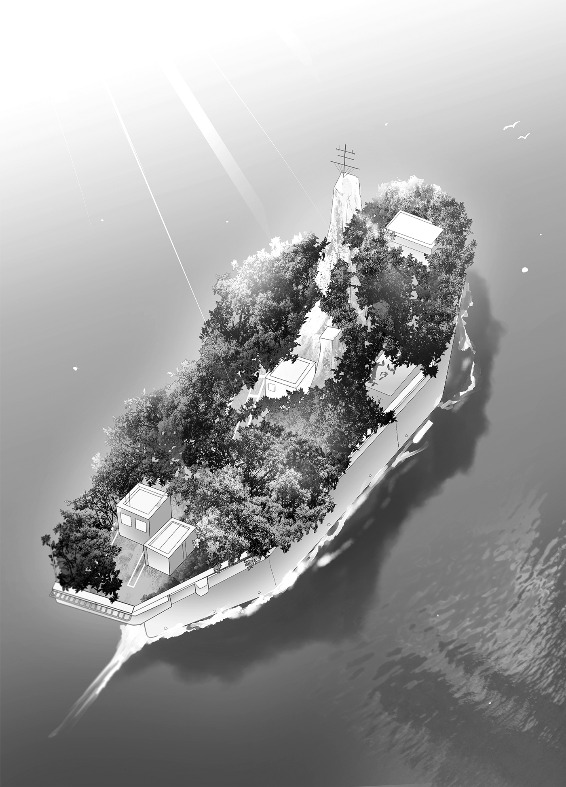
Because dragons could fly continuously across incredible distances, they could cross the sea in a single flight, and that meant they had no reason to be afraid of it. However, wyverns, with their lesser flight range, would run out of strength halfway if they tried to cross the sea. Because of that, they feared going out far enough to lose sight of land. This held true for the Empire’s griffon squadrons, too, which had an even shorter flight range than the wyverns did. (In fact, they were even afraid of rivers if they couldn’t see the other side, so they had it worse.)
“Huh?!” Castor cried. “Now that you mention it, the wyverns were flying in formation earlier, weren’t they?! No, even the wyvern carrying this gondola seems perfectly fine out here in the middle of the sea!”
Finally, Castor was beginning to grasp the situation. However, the more he figured it out, the wider his eyes opened in surprise. His lips were trembling.
“You... What the hell have you created here...?”
“A vessel which carries air power across the sea, and also acts as a base for it,” I said. “In my world, a ship like this was called an aircraft carrier, or just a carrier.”
That’s right. That island-shaped ship was analogous to a carrier, with wyvern knights as an analogue to fighter planes. When I’d seen this world had wyverns and steel ships, I had wondered if maybe I could combine the two to create a carrier. When I’d first started planning it out, the first issue that had been pointed out to me was the wyverns’ fear of the sea.
“So that was when I had an idea,” I explained, “to try and trick the wyverns out of being afraid of the sea.”
I’d gotten the hint I needed from the first of the Thirty-Six Stratagems from my world: “Deceive the emperor to cross the ocean.” It’s about making your strategy look like nothing out of the ordinary, then acting while your enemy’s guard is down. The stratagem had been based on an event when, in order to get the Emperor of Tang, who feared the sea, aboard a boat, his retainers had piled dirt on top of it to make it look like the land. I’d thought that maybe I could use the same trick on wyverns.
First, I’d created a giant ship, then packed soil on top of it. Though a portion was left as dirt, most was covered with grass or trees to create plains and forests. The bridge had been covered in Roman concrete and painted to disguise it as a rocky mountain. Then, in order to lower the wyverns’ stress levels, their stables and everything below deck had been made to look like the inside of a cave.
Basically, I was trying to make the wyverns recognize this carrier as an “island.”
The issue had been how I was going to find the propulsion to move my island-type carrier, but that had been solved thanks to Genia’s Little Susumu Mark V. They weren’t visible from the air, but there were four Little Susumu Mark Vs attached to the sides of this island-type carrier below the waterline. The reason the distribution of the Light model wasn’t further along was because I had prioritized the production of these larger ones.
Now, as for this island-type carrier that we had built, it was still incomplete. It had taken a long time to get the wyverns used to the carrier. Our first priorities had been to give it the bare minimum features required of a ship, make the outside look island-y, and focus on making it seaworthy. In terms of propulsion, the plan was actually to have double the number of Little Susumu Mark Vs (with the current number, it could only go at a crawl), and the area currently being used as a military research and development lab was eventually going to be used for equipment storage and the crew’s quarters. (They were currently camping out in tents on the deck.)
Castor, who had been staring at the half-finished cruiser in a daze, turned to me, his eyes filled with disbelief. “But this thing is massive... Just how long have you been building it for?”
“Hm? If you mean when I started gathering funds and materials, I did that right after taking the throne, you know?”
“Whaa?! Before you fought me and Amidonia?!”
“It was part of my plan to enrich the country and strengthen the military,” I said. “As a trump card against the Empire.”
With my arms crossed, I leaned back in the gondola’s sofa.
“I didn’t know what the Empire was thinking back then, after all. I was working on a plan that would give me a trump card when we had to oppose them. Up against the more powerful and more populous Empire, we wouldn’t stand a chance in a land-based arms race. I thought the path to survival might lie in expanding our air or sea power, where technology plays a much bigger role. Well... at that stage, I was just allocating the funds and materials. Construction only began in earnest after the end of the war with Amidonia.”
Besides, because I had been moving ahead with the new city project at the same time, I hadn’t been able to gather quite enough funds or resources for the project. If Roroa and Colbert hadn’t joined us, giving me a source of funding, and if I hadn’t been able to secure a source of resources by annexing Amidonia, construction might have started even later.
Still, once construction began, ship construction in this world went fast. Actually, I’d felt this way when rolling out the transportation network and building the new city, too but construction in this world went unusually fast.
Because they had magic here, there was no need for large pieces of construction equipment. For instance, if you try to build something large on Earth, you first need to build the cranes and such that will be used in building it. At worst, there were even times you might need equipment to build the equipment you needed to build the equipment... and so on.
However, because there were earth mages who could manipulate gravity in this world, that equipment wasn’t necessary here. Also, an experienced fire mage could handle casting metal and welding in no time. In this world with its strange balance of things that could and couldn’t be done, it felt like it actually took more time to secure the funds and materials than anything else.
I got up and stood in front of Castor, who was still taken aback by everything.
“Well, this is what I’ve been doing as king, Castor,” I said, looking him straight in the eye. “You rebelled against me because you thought I was a usurper. It seems your doubts had already been cleared up by Liscia and Excel’s attempts to dissuade you from doing so, but in the end, you still chose to oppose me, prepared to martyr yourself for your friendship with Georg Carmine. Then you lost and were placed in Excel’s custody.”
Castor lowered his eyes. “You don’t need to tell me that now. I lost... That’s all there is to it.”
“That’s not what I’m trying to say,” I said. “Right now, I’m showing you my power as king of this country.”
“You mean that carrier?” Castor asked.
But I shook my head. “No. The carrier itself isn’t my power. If there is one thing I can take pride in as king, it’s gathering gifted comrades, preparing a place for their talents to shine, and creating a country that could build that carrier. When you see what I’m capable of, does it not seem fitting that you should serve under me?”
Castor shook his head with a wry smile. “You’ve got me beaten completely. I can see clearly now... why King Albert left the country to you. But I’m not fit to serve you.”
“Can I take that to mean you recognize me as the king of this country?” I asked.
“Hm? Yeah, I recognize you. You’re one hell of a king.”
He’d recognized me as king. Now that I had dragged those words out of Castor, I was finally certain of it. I didn’t sense any of the arrogance Castor had had before. In his defeat, and with some polishing by Excel, he had grown as a person. Considering that... I could trust him with it.
I placed a hand on Castor’s shoulder, looking him straight in the eye as I said, “Castor, this carrier is an extremely unique weapon. Though it is a ship attached to the Navy, it carries the troops of the Air Force. In order to run it efficiently, it requires not just knowledge of handling a ship and fighting at sea, but the knowledge and experience to command the Air Force. I want to leave this ship under the command of someone with those skills.”
Castor’s eyes opened wide. “Huh?! No... You can’t mean...”
It looked like he’d figured out where I was going with this. He was a man who had been the former General of the Air Force, yet now he had trained under Excel to learn how to control a naval force.
I grinned as I asked him, “I’m sure you’ve kept studying, even now that you’re in the Navy, right?”
“...Yes, sir! Excel has beaten it all into me!”
Castor rose from his seat, then knelt, putting his hands together in front of him and bowing his head. I placed the captain’s hat I had brought with me on Castor’s bowed head. Because Castor had horns, it had been specially made with holes for them.
“Good,” I approved. “Now, then... Castor who has no family name! I appoint you as the first captain of this aircraft carrier!”
“Yes, sir! I humbly accept, my lord!”
My lord... huh. It was a bit embarrassing to be called that, but it was a sign that Castor had truly accepted me as his lord, so I was more than happy to take it.
While I was thinking about that, Excel, who had quietly watched over the proceedings up until that point, spoke up. “Hee hee, I’m glad. That’s one burden off of my shoulders.” Then she smiled.
I had already told her I wanted to make Castor the captain of this carrier before she’d begun teaching him.
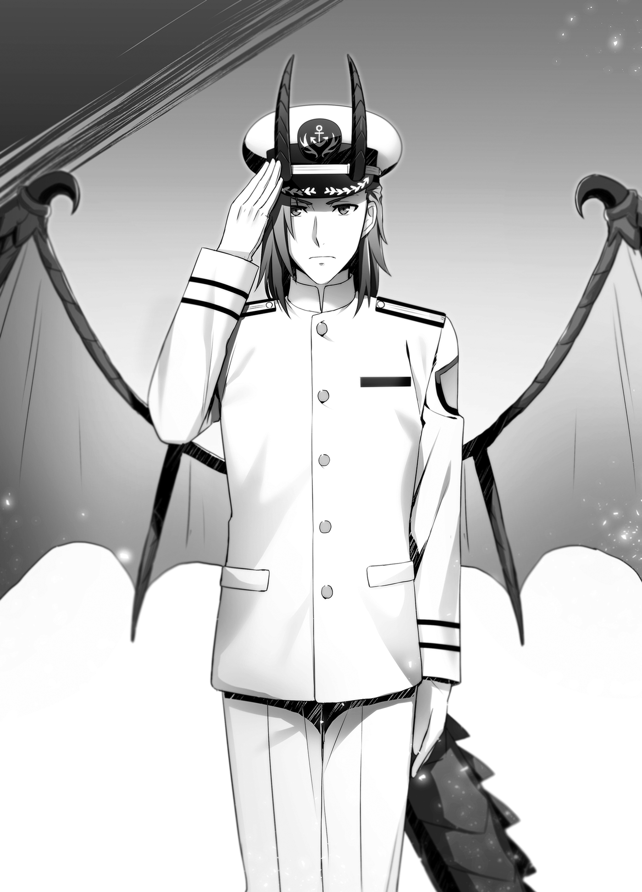
“By the way, sire,” Excel continued. “I do think that carrier is a wonderful ship, but it wouldn’t do to simply go on calling it ‘the carrier’ forever. Why don’t you give it a name now?”
“Hm? Oh... You have a point,” I said. “What would be a good name for it?”
“Let’s see... I think the name of a place, or of the king who built it, would be the most common options. How does Aircraft Carrier Souma sound to you? When you build more of them, they would belong to the Souma-class.”
“Absolutely not.”
I didn’t want that. If I put my own name on the ship that would be the center of our navy, it’d make me seem conceited, and I didn’t want that. Besides, if it had my name, they were going to say things like, “Souma, departing!” and “Souma, withdrawing from the line of battle!” and “The Souma has been sunk!” right?
...There was no way I wanted that. I needed to propose an alternate name.
“Oh, hey, I know,” I said. “Why not give it the name of a carrier from my world?”
“From Your Majesty’s world?”
I nodded. If I had to give it a name, why not use one that existed in my world? Let it be one that had never folded in the face of adversity, and that had never given up fighting. It was going to be carrying wyverns, so this was the perfect name.
I looked down at the island-type carrier beneath us and declared, “I hereby name that carrier the Hiryuu!”
Having finished appointing Castor as captain of the Hiryuu, my work was done, and we returned to Lagoon City in the Walter Duchy. Because the sun was already setting when we arrived, we decided we would spend the night at Excel’s mansion.
At least partly because it was a coastal city, we had a dinner that made ample use of seafood, and then Juna, Excel, Castor and myself chatted over tea in the parlor.
In the middle of that relaxed atmosphere, Excel suddenly put down her teacup and asked, “Now that I think of it, sire, you have no plans after this, do you?”
It was so sudden, Juna cocked her head to the side and looked at her quizzically. “Grandmother?”
I was puzzled, too. What could she want, all of a sudden?
“Yeah...” I said. “When I get back to the castle, I’m sure there’ll be work for me, but I haven’t brought anything with me.”
“I see. You have time right now, then?” The moment she said that, there was an unsettling glint in Excel’s eye.
I shuddered, feeling a chill run down my spine. I got goosebumps, my every instinct warning me. I sensed... danger? I almost jumped up from the sofa despite myself, when...
Thump!
“Juna?!”
Juna, who was sitting next to me, fell to the side. She was slumped over the arm of the sofa, already asleep.
Even asleep, she sure is charming... Wait, I didn’t have time to think that! I looked over to Excel, who was smiling, a tiny bottle in hand.
“No need to worry. I’m just having her take a little nap.”
“Sleeping drugs?! You drugged your own granddaughter?!”
“It seemed like she would get in the way if she was awake, after all.” Excel put a hand to her own cheek and let out a sigh.
No, no, no, no! She was giving me that, “Oh, goodness, she’s such a handful,” look, but what she’d just done to Juna was pretty nasty!
“I couldn’t help it,” Excel said. “I received a request from the chamberlain to give you some lessons.”
“From Marx?! You can’t mean...”
“What you might call ‘sexual education,’” she smiled. “As an older woman, he wanted me to teach you some things, sire.”
“You’re more than just ‘older’!”
“Oh my, how rude. My body is still full of youth, you know.”
“Not your heart, though!” I shouted.
Excel rose from her seat, slowly closing in on me. “Creating an heir is a serious matter for the country. Especially considering the shortage of royals. Even though your betrothals are essentially already being seen as a marriage, and even though those around you have been encouraging you to hurry up and produce an heir, you’ve yet to lay a hand on the princess, or Juna, or Aisha. It’s little wonder the chamberlain is so worried.”
“N-No... I was hoping to wait until I was a little more ready... you know.”
“That leaves us worried,” Excel said. “It might be forgiven as a youthful indiscretion now, but once you are formally man and wife, if you are awkward and inept when you get down to ‘business,’ it could have an effect on your relationship. That sort of discord between a royal couple can lead to future strife within the house.”
Excel sat down on the back of the sofa, wrapping her arm around my neck. What was this?! I was like a deer caught in headlights, unable to move!
“That’s why the chamberlain asked an experienced woman like myself to give you some direction. Now, sire, let’s move to the bedroom. Until dawn comes, I will be giving you thorough lessons on how to handle a woman. First, let’s start with some classroom lectures.”
Lectures?! I was going to be taking health and physical education classes at my age?! I’d graduated from high school... Wait, I guess they didn’t go into quite that much detail in health and physical education classes.
“Wait, hold on! You just said ‘first,’ didn’t you?!” I shouted.
“Hee hee! In any field of study, it’s best to learn through experience, don’t you think? If you want to, I wouldn’t mind keeping it a secret from Juna and the others, you know? We can consider it a one night indiscretion, and I’ll give you some hands-on training.”
I don’t want it, okay?! I cried out in my mind.
Excel smiled, putting her hands on my shoulders and leaning in close to peer at my face. Yeah, she was definitely having fun seeing my reaction.
I turned to Castor, who was sitting there drinking tea as if nothing was happening, for help. “Castor! You recognized me as your lord, right? Your lord is in a tight spot! Help me, would you!”
“...I did indeed swear loyalty to you, my lord,” Castor set down his tea and said with an all-too-serious look on his face. “However, I would like nothing more than to see the lord I’ve devoted myself to leave behind descendants who will prosper. I cannot get in Duchess Excel’s way. I can only bite back tears as I ignore my lord’s request for aid.”
“You say that, but you just don’t want to get caught up in this!” I shouted.
He pretty blatantly averted his eyes.
I hit the nail on the head, didn’t I, you jerk?!
“Now, sire, shall we be going?” Excel took a firm hold of the back of my neck, then began dragging me towards the door of the parlor.
I was bracing myself to run for it, but I couldn’t even put up the slightest resistance. Even factoring in my own weakness, her strength was incredible. Where did that slim body of hers have that kind of strength?
“No, wait, please, Excel, come on,” I begged.
“Yes, yes. You can just leave everything to this big girl here. I’ll teach you real good.”
“No, I mean... Okay, I’ll take your lessons! Just the lessons! None of that hands-on stuff, okay?!” I screamed.
“...Good grief, I suppose it can’t be helped. But if you find yourself wanting to get physical with me, do tell, okay?”
“As if I would!”
In the end, I was subjected to Excel’s lengthy lectures.
Having to take health and physical education classes from Excel, who looked so much like Juna, was so embarrassing that I thought I might die.
Intermission 2: Researching a Certain Line of Research
The research institute in the former slums of Parnam, the royal capital of the Kingdom of Friedonia.
Ginger’s Training Facility, which had been opened with King Souma’s sponsorship as one means of securing talented personnel and making it so that slavery became a thing that existed in name only, now had a great many subjects which could be studied at it.
With more land being given to the facility, it had come to be called Ginger’s Vocational School. While retaining the elementary school, they had also established schools dedicated to various specialized subjects. If a field of study achieved results here, there would be schools dedicated to it established in other cities.
There were already a number of fields of study that had gone independent, and specialized schools for them were being built in other cities; but the schools of farming and medicine were still here. This was because the appropriate teachers were here: the Minister of Agriculture and Forestry, Poncho Panacotta, as well as doctors like Hilde Norg and Brad Joker. It also showed that Souma, who knew that, historically, the production of food and knowledge of medicine were directly linked to the maintenance and growth of the population, placed great importance on those fields.
Now, there were two man-and-woman pairs facing one another across the threshold at Ginger’s Vocational School’s main gate. The first pair consisted of a rotund man who was almost thirty years old, and an intellectual beauty who was elegant in everything including her appearance. The other pair consisted of a young man whose face was so gentle in appearance that he might be mistaken for a girl, and a beautiful raccoon girl who had an unyielding look in her eyes that left a lasting impression.
The strange thing was, the woman in each of these pairs was wearing a classical maid uniform with a long skirt.
The two who were about to enter the school grounds were the Minister of Forestry and Agriculture Poncho Panacotta, and Serina, the head maid of Parnam Castle who was also the personal attendant of Princess Liscia.
The two who were greeting them at the threshold were Ginger Camille, the principal of Ginger’s Vocational School, and Sandria, who served him as his secretary and maid.
Poncho and Ginger smiled and shook hands.
“Greetings, and thank you for coming, Sir Poncho.”
“S-Sir Ginger, it does my heart good to see that you are in such good health, yes.”
“Um... There’s no need to be so formal, you know? You’re older than me, and a minister, too.”
Poncho stuttered, “I-It’s a habit of mine. I just can’t seem to shake it, yes.”
“He is a timid man, you see. Please, give up on him,” Serina chimed in as Poncho was awkwardly trying to explain himself. “Honestly... Considering that he’s saved so many of this country’s people with his knowledge, I wish he would have gained at least a little more self-confidence.”
“Um, and you are?” Ginger asked.
“Pardon the lateness of my introduction. I am Serina, the head maid at the royal castle.” She gave an elegant bow.
“Th-Thank you kindly for that. I am Ginger, the principal of this school.”
When Serina bowed her head to him, Ginger panicked.
Seeing his reaction, Serina chuckled. “Now, Lord Ginger, you needn’t be so formal when addressing a mere maid like myself.”
“Th-That’s not...”
“My master has a weakness for attractive older ladies, you see,” Sandria chimed in.
Ginger was bewildered by what she said. “San?! What are you saying so suddenly?!”
“Nothing that is not a fact, I assure you. When you are in the presence of Lady Hilde, you are always so tense... Oh, pardon me, I hadn’t introduced myself yet.” Sandria lifted up the hem of her apron dress and curtsied. “Greetings. I am Lord Ginger’s secretary, maid, and pet slave, Sandria.”
“Hey, you’re making me sound way too bad! I only tasked you with being my secretary; you started doing the maid work on your own! Also, what do you mean, pet slave?!” Ginger protested, but Sandria pretended not to hear him, bowing deeply to Poncho.
“You must be Lord Poncho. I hear about you from time to time. It’s thanks to you that my fellow slaves didn’t starve when things were at their worst. On behalf of everyone, I would like to thank you.”
“N-No! You don’t need to do that, yes!” Poncho panicked when Sandria bowed to him.
Serina watched him with a slightly chilly look in her eyes. “Sir Poncho, even if she is one of those ‘underage girls’ you so like, please, don’t lose your head over a little praise.”
“I-I wish you wouldn’t go putting any weird labels on me, yes!”
“Oh? Is it not the truth, though? I know these things, you realize?” Serina smiled, but her eyes were not smiling. “Earlier, there was that dish you developed with His Majesty, the ‘toasted sandwich.’ You only served the dish to Lady Tomoe, did you not? Without bothering to invite me.”
“Is that why you’ve seemed so upset lately?!”
If one were to ask who was the biggest glutton in all of Parnam Castle, that would be Aisha, of course; but Serina would have to be the runner-up. But there was a slight difference in the nature of their gluttony.
Unlike Aisha, who would eat anything (especially sweets), the more of it the better... Serina didn’t demand quantity, but she had developed a taste for the junk food and B-grade cuisine that Souma and Poncho created.
Souma and Poncho had put together a lot of different dishes. To be precise, they were recreating dishes that had existed in Souma’s former world. Of those dishes, it was things like spaghetti and yakisoba buns, the sort of things you wouldn’t see in a fancy restaurant, that had captured Serina’s heart.
The thing was, Serina came from a distinguished family that had turned out many maids and butlers who went on to serve the royal family. Because of that, they had worked to instill cultured tastes in her from a young age, to ensure she would be presentable and wouldn’t embarrass herself in front of royalty. They’d paid close attention to her diet, and she had always been expected to eat good food, and to use the proper etiquette. Of course, that meant she’d never been allowed to just go out and buy food from a cart and eat it there. For Serina, having grown up in a house like that, Souma and Poncho’s dishes had made quite an impact on her.
There’s a staple food on top of another staple food!
When Serina had first came into contact with a spaghetti bun, that first bite had destroyed all established notions she had about food. How could such a vulgar dish be so delicious?
Ever since, Serina had made a habit of following Poncho around. That was because if she was at his side, she was treated to delicious samples. The dishes Poncho made were the one thing other than cute girls that caught Serina’s interest. Which was why, when she was unable to try them, she held a grudge.
Sensing her displeasure, Poncho hurriedly tried to explain himself. “I-It was still just an experimental dish, so there weren’t enough of them...”
“Knowing you are unused to going out in front of people, under the orders of His Majesty and the princess, I have worked with diligence and sincerity to assist you,” Serina said coldly. “Yet, you did not allow me to sample the dish. Could it be because I am already a grown woman?”
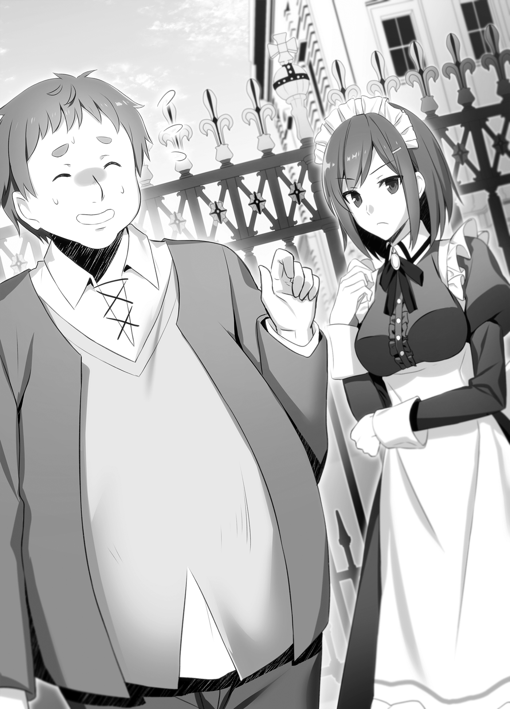
“When we get back! When we get back, I promise I’ll make one for you, yes!” Poncho hurriedly said.
The somewhat sad expression disappeared from Serina’s face.
“That’s a promise,” she said, looking perfectly fine.
It had apparently all been an act to get him to agree to it. Poncho’s shoulders slumped.
Ginger wasn’t sure how to react as he watched this exchange, but Sandria was nodding along.
“I can see your relationship has a lot in common with ours.”
“Oh? But my master is Princess Liscia,” Serina said.
“I didn’t mean it in that way...”
When Serina tilted her head to the side quizzically, Sandria just smiled, not sure what to say. That exchange left question marks floating over the two men’s heads.
With the formalities out of the way, Ginger took Sandria, Poncho, and Serina to a place outside of Ginger’s Vocational School. There was a building for studying farming techniques at Ginger’s Vocational School, and they mostly focused on the study of crops, compost, and selective breeding. However, there were no fields on the school grounds to demonstrate their results. The former slums were near the city walls, so the fields had been planted on the opposite side. The research building and fields were separated by the city wall, but in terms of distance they were close, and it was easy to get from one to the other.
Once they passed through the gate, Ginger led Poncho and company to the fields owned by his vocational school. When they finished greeting the guards who watched the fields, the four arrived in front of two particular fields. Neither field had anything planted in it, but one looked like ordinary black soil, while the other was dry and cracked.
With these fields in front of him, Ginger asked, “You’ve come here today in regards to that line of research, right, Sir Poncho?”
“Yes,” Poncho nodded. “Both His Majesty and I have great hopes for that line of research, after all.”
Ginger shook his head apologetically. “...Let me say this up front. We were unable to achieve the sort of results you’re hoping for.”
The field of research Souma and Poncho had great hopes for was research on one of the “failed experiments” of the overscientist, Genia Maxwell.
Back when the former king had ruled the country, Genia had developed arrowheads with seeds inside them with the hope that the sites of battles would be covered with greenery. With the effect of the light elemental magic the arrows were imbued with, the seeds grew at an alarming speed, and it’d been a massive failure that had resulted in half of her research building nearly being engulfed by plants. The result was that Genia had been transferred to the Forbidden Army, and her research suspended.
However, after the throne had changed hands, Souma had seen a practical use for her research and ordered Genia to resume it. He wasn’t so interested in the arrowhead part; but with plants that grew so fast that they could engulf a building, he could make the desert bloom, and he’d had hopes that it would lead to an increase in the food production rate. However, Genia the genius had already lost all interest in the subject, so Souma had ended up ordering the School of Agricultural Technology at Ginger’s Vocational School to do it instead of her.
But... Ginger explained that they hadn’t been able to produce results.
“We were certainly able to make fast-growing plants. Those plants had two special qualities: growth and proliferation. We were able to eliminate just the proliferation, which meant that the area would no longer be engulfed in green.”
“You were able to control them? Isn’t that a success, then?” Poncho asked, seemingly mystified: but Ginger shook his head with a wry smile.
“We were carrying out this research in the hopes of increasing food production and making the deserts bloom, but... from the results of our research, we learned this won’t be of any help with either of those things. Genia’s spell only speeds up the growth of plants. Sir Poncho, do you know what is needed for plants to grow?”
Poncho thought for a moment, then replied, “Fertile soil and water... as well as sunlight, yes.”
Ginger nodded. “Yes. Of those, the sun is no problem. With some work, the water issue can be managed well enough, too. The problem was fertile soil. Though we’ve accelerated the plants’ growth, the quantity of water and nutrients they require from the soil hasn’t changed. Madam Genia must have known that, too, because her spell included a function for sucking water and nutrients out of the soil.”
With that said, Ginger pointed to the dried and cracked field. “This is what the field looks like after we harvested our fast-growing wheat.”
“...It’s almost like a sandy desert, yes.”
“No matter how much we can accelerate the plants’ growth, fertilizing the soil takes a lot of time,” said Ginger. “As a result, the plants suck all the nutrients and water out of the soil, leaving it dry and cracked like this. Nothing will grow in soil that’s ended up like this.”
“Is there no way to provide a steady supply of nutrients to the soil?” Poncho asked.
“I doubt it. Water, maybe. But continuously supplying fertilizer at a rate that matches their growth just isn’t realistic. I mean, we have a limited supply of fertilizer, anyway. If we exhaust it to raise growth speed, we may not see any growth in productivity at all.”
“Well... That’s no good,” Poncho said.
If the plants that grew were allowed to rot, they would return their nutrients to the soil, but they couldn’t do that with crops that were meant to be eaten. They couldn’t possibly have people return all of the excrement from what they’d eaten to the field, after all.
“That’s why we determined it was a poor fit for growing food,” Ginger said. “Now, as for making the desert bloom, there isn’t the water there to begin with, so it’s impossible. Even if we were to install aqueducts, the speed at which the plants grow would present another bottleneck. They’re just as fast to rot, you see.”
“We can’t always get our way, I suppose, yes...” Poncho slumped his shoulders. With the high hopes he’d had for this research, he couldn’t help but be disappointed that there had been zero payoff for it.
But Ginger shook his head again. “No, it’s not like we have absolutely nothing to show for all our work. Look at the field next to it.”
“...I’m not seeing anything other than soil in it, though?”
“Yes. The only thing here is ordinary soil. We’ve made it into ordinary soil.” Ginger bent down and scooped up some of the soft soil in his hands. “This soil was brought from a dungeon inhabited by many undead monsters. Naturally, when we first brought it here, it was contaminated by the miasma that undead monsters release.”
“D-Did you say miasma?!” Poncho cried out despite himself, his voice unsteady.
Just by existing, undead monsters like skull dragons and zombies gave off a miasma that was harmful to living creatures. Miasma caused disease to spread and things to rot, making it impossible for living creatures to live in that area. What was more, it would get into the soil and stay there for a long time. Because of that, lands where a skull dragon had gone on a rampage or where a horde of zombies had appeared would become unproductive lands where crops wouldn’t grow for a long time.
However, Ginger had picked up a handful of that soil, which should have been dangerous, without any hesitation.
Poncho looked carefully at that soil. “Is this soil... safe?”
“Yes. The miasma is completely gone from it now.”
“How did you do it, yes?”
“It was an applied use of those fast-growing plants we were talking about earlier. There are flowers that bloom only in dungeons with a lot of undead-type monsters.”
Having said that much, Ginger had Sandria go and fetch a single flower. That flower was reddish-purple with greenish-black spots; colors that screamed it was poisonous. It wasn’t the sort of flower you’d want to receive on a celebratory occasion, not even by accident.
“The adventurers who go dungeon crawling call these miasma flowers. They say that if these flowers are growing somewhere, it’s proof that undead-type monsters are active there. That’s why, when they find these flowers in a dungeon, they know to take precautions against miasma.”
“Hm, so there are flowers like that out there,” Poncho said. “I never knew.”
Poncho knew a lot about edible plants. He also knew a lot about plants that were similar to edible ones, but that weren’t edible themselves. That was because Poncho’s knowledge was rooted in his appetite.
That was why, when it came to plants like this one, which was and looked blatantly inedible, he had no interest in them, and wasn’t that well informed about them.
Ginger chuckled. “These miasma flowers, like their name might suggest to you, are nourished by the miasma. That’s why they grow in clusters in dungeons where there are undead monsters. If we use Genia’s spell to accelerate plant growth on these miasma flowers and plant them in contaminated soil...”
“Oh?! I get it! They quickly suck all of the miasma out of the ground!” Poncho clapped his hands.
If the growth-accelerating spell was used on regular plants, they rapidly sucked the nutrients out of the soil. However, the miasma flowers only sucked out miasma.
Ginger nodded. “So we only have to harvest them when they finish growing and dispose of them in an incinerator. They’ve already used up the miasma for their growth, so when we burn them, all that’s left behind is ash. If we do two rounds of that, it goes back to being this sort of ordinary soil.”
“Th-That’s an incredible discovery! With this, we can curb the effect that undead monsters have on our fields and crops, yes!” Poncho reacted excitedly.
Not only had the research he’d had such high hopes for not been in vain, there was even a useful application for it! Then a thought occurred to Poncho.
Come to think of it... When he recruited me, His Majesty said something, yes. That “we will decide if something’s useful or not.” He may have meant to say that there aren’t many things in this world that are completely useless. Like how even I, a person whose only talent is for eating... was able to help this country somewhat...
Poncho was able to feel a little more confident in himself.
While Poncho and Ginger were having a lively conversation like that, Serina and Sandria looked on in exasperation from a short distance away. The two men didn’t so much as glance in their direction, having fun exchanging opinions about research. The two maids had no doubt they’d ceased to exist in the men’s minds.
While looking at her master, Sandria asked, “...Do you suppose all gentlemen are like this?”
“You might be right about that,” Serina said. “I’ve often seen the princess watching His Majesty anxiously like this. I feel like when His Majesty is applying himself to the work of governing, she must find it both reassuring and frustrating to watch him.”
“How is it for you, Serina?”
“Me?”
“Do you feel anxious and impatient right now?”
“Hm? My mistress is the princess,” Serina said without batting an eye. “It’s true that I am close to Sir Poncho, but I would never feel anxious and impatient because I saw him talking to someone.”
Sandria thought about it for a moment and then asked, “...Then, how would you feel if Lord Ginger were a woman? If it were a woman that Lord Poncho was having such a good time talking to right now, would you still not feel the least bit anxious about it?”
Having asked that, she stared hard at Serina.
In response to the question, Serina looked at Poncho and Ginger. What if, right now, Poncho were talking to a woman instead...?
Having pondered the question for a while, Serina finally opened her mouth to answer. “No matter who he was talking to, I don’t think I would think anything of it.”
“...You’re sure?”
“Yes. ...However, if Sir Poncho were to let that person do all of his taste-testing... well... I wouldn’t like that. Even if it were someone like a member of his family, or his wife, a person it was perfectly natural for him to be doing his cooking with... I might still be upset by it. Now, that is odd. I wonder, why would I feel that way?”
Judging by her expression, it seemed even Serina didn’t understand her own feelings. Sandria was a little surprised, but she didn’t ask anything more.
Even Serina herself wasn’t sure if her words just now had come solely from her gluttony. She placed her hand over her chest, which was filled with pent-up emotions.
When I get back to the castle, I will have to have him make me the toasted sandwich he promised. That will help dispel this hazy feeling, I’m sure.
Those were Serina’s thoughts.
Chapter 3: The Fiancées’ Bridal Course
One day in the 3rd month, 1,547th year, Continental Calendar
Hello, I’m the candidate to become Souma’s first primary queen, Liscia Elfrieden.
On this day with the end of winter drawing near, and the coming spring beginning to make itself felt, all of Souma’s fiancées were gathered in a certain room in Parnam Castle. I, Liscia was one of them. The rest were Aisha the kochiji, Juna the lorelei, and Roroa, the former princess of Amidonia.
There was no sign of Souma here, and even the maids who were always waiting in the corner of the room had been asked to leave today. On top of that... this room was weird. There was a blackboard, desks, and four desks and chairs. The desks were lined up in a row, making it look almost like one of the classrooms at the Officers’ Academy.
“Hey, Big Sister Cia?” Roroa asked. “What’d we all get called in here for today?”
“I couldn’t tell you,” I said. “If anyone here would know...”
I looked over at Juna. However, Juna only looked down and shook her head.
“I’m sorry. Lately, even I’m not sure what goes through that lady’s head.”
“If Madam Juna doesn’t know, then the rest of us don’t stand a chance of figuring it out.” Aisha rested her hands on the back of a chair, tilting her head to the side in puzzlement.
It was a fair assessment. That lady was completely unpredictable. Just what was she thinking this time?
Then the door to the room opened, and the one who had gathered us here arrived.
“I see everyone’s here.”
It was the blue-haired sea serpent beauty, Excel Walter.
In addition to being the commander-in-chief of the National Defense Force, she was a beautiful woman who looked to be around twenty-five. With her blue tresses, from which tiny horns sprouted, trailing behind her as she walked, she had always been a picturesque beauty. But this time, she was carrying something in her hands, too: two bundles that were as thick as dictionaries. One was wrapped in white, the other in black.
Excel left the bundles on the lectern, then pulled out and donned a pair of spectacles and a square academic cap. “Now then, let’s have you all take your seats.”
“U-Um... Grandmother?” Juna hesitantly raised her hand and asked.
“What is it?”
“Um... I thought you had good vision?”
“Oh, these spectacles? They’re just ordinary glass, not corrective lenses.”
“Then why are you wearing them?”
“It gets me in the mood.”
Her mood?! That was the issue?! Wait, what was she about to start?!
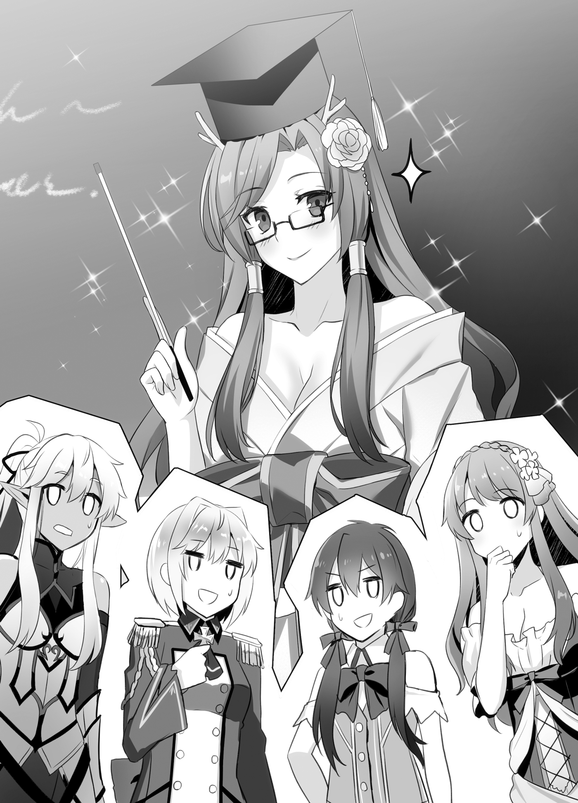
In the end, we were each ushered into our seats by Excel with no clue what was going on. From Excel’s perspective at the lectern, going from left to right, we were seated Aisha, Roroa, me, and Juna.
Excel started to write something on the blackboard. When I read it, it said:
“First Lecture — Bridal Training Course”
Yeah, I wasn’t even sure where to start.
For one thing, by “first,” did she mean there were going to be several of these gatherings?! What was a bridal training lecture even supposed to be?! Then Excel tapped lightly on the lectern.
“Now, all of you will be becoming Souma’s brides this year.”
““““...””””
We all got very quiet. We were ready for it, of course, and we even wanted it now, but having someone else point that fact out to us still felt a little embarrassing.
Excel told us, “Though some of you will be primaries and some of you secondaries, the fundamental nature of things will be the same for all of you. There is a husband and a wife, they build a household, eventually children are born, and they become a family. If the family is harmonious, then they will be happy; if it is not, they will become unhappy. The problem is that if there is discord in the royal family, that leads directly to discord within the kingdom. Princess Liscia.”
“Y-Yes!” I responded and stood up without meaning to. It was just like being back in officers’ school.
Excel gave me a serious look and asked, “Princess Liscia, you have no relatives outside of your father and mother, yes?”
“Uh... Yes. That’s what I’ve been told.”
“Why is that?”
“When my mother’s father... that is to say, the king before the last one died, there was a succession crisis, and nearly every member of the royal family but my mother was wiped out.”
“Yes. That was a painful time,” Excel said with a truly pained look on her face. “The three dukes and I distanced ourselves from that conflict. If our military forces had gotten involved, it would have turned into a civil war, after all. We were all desperate to keep our forces in check. Instead, there were bitter struggles within the royal house that set even the closest relatives against one another.”
“Um... was the problem in that conflict ultimately about who would take the throne?” Aisha raised her hand and asked.
Excel shook her head. “We think that was only a secondary factor. The first and foremost cause must have been the former king’s policy of rapid expansion.”
“His expansionism?” Aisha asked.
“Yes. In the time of the king before the last one, our country launched a number of foreign wars that greatly expanded our territory. Meanwhile, the expanded territory sowed the seeds of conflict within the country. The occupier and the occupied; the conquerors and the conquered; the killers and the relatives of those killed... It gave birth to a lot of confrontational relationships like that. There were interventions by other countries that had lost land, too.”
“...Well, my old man had it out for you all pretty bad,” Roroa, the former Princess of Amidonia, said with a shrug.
It was a bit of a relief that she said that like it had nothing to do with her. The Principality of Amidonia had used corrupt nobles to interfere in our affairs a number of times. What they’d done had caused a lot of trouble for me, but it was really just reaping what we had sown.
I was grateful that Roroa, as an Amidonian princess, was taking the stance that it didn’t matter to her. If Roroa, who looked up to me as her “big sister,” ended up resenting me because of a dispute between our countries... I’d be sad about that.
Excel nodded and continued. “Those seeds of discord need to be slowly removed, but the rapid expansion didn’t allow for that.”
Eventually, the old king had died, and the lingering seeds of discord had germinated into the succession crisis. If the people they hated supported one royal, people would back another opposing horse in the race. That was how the dispute over the succession had turned into a proxy war for all of the discord in the kingdom.
“That was why it turned into such a quagmire.” Excel sighed sadly then looked straight at us. “Fortunately, His Majesty Souma’s reign is not so dangerous as that of that predecessor of his. The reason that the country is unshaken even after absorbing Amidonia is that he has worked diligently to create a solid enough base to prevent that. He is not as glamorous as the first king, but rated on the stability of his reign alone, he is the best king this country has ever had. That’s why, even once His Majesty Souma is no longer on the throne, there won’t be an ugly succession war like that one.”
That was Excel’s appraisal of Souma’s reign. Yeah. I agreed with her.
I might think the way he reigned was too roundabout at times, but he was carefully and cautiously moving this country forward. If you considered that he’d been summoned as a hero, I didn’t think there’d ever been such a plain and ordinary hero before. Even so, Souma made me feel secure. Though he himself was weak, he made me feel like I was being protected by something big.
Excel banged on the blackboard. “That said, we mustn’t get complacent! It must never be forgotten that if there are cracks between king and queen, or even between queen and queen, there will be those who appear to take advantage of them. For the sake of the country, you must build a harmonious relationship between husband and wife, and a harmonious household. To help you do that, I will have you take my ‘Bridal Training Course.’”
I could more or less accept what she was forcefully saying. But what was this “Bridal Training Course” that she kept on leading up to?
“Um... why are you the one lecturing us anyway, Duchess Walter?” I asked.
Excel giggled and gave me a confident smile. “I don’t look it, but I’ve been alive for five hundred years. I’ve fallen for my share of gentlemen in that time, but death has always been the only thing that could separate us. I’ve always made sure to have at least one child with each of them, too.”
That was... Okay, yeah, that might be kind of amazing. Now that she mentioned it, Excel only looked like she was in her mid-twenties, but she was a woman who had experienced childbirth. She even had granddaughters like Juna, after all.
Excel puffed up her ample bosom with pride. “I will teach all of you how, as queens... no, as women... to stay with the man you love until death do you part. How you should act as a wife; the way gentlemen think; and everything from how to support your husband, to ways to perform your nightly ‘duties’ in the bedroom in a way that makes your marital relations go more smoothly.”
N-Nightly duties...
The moment we heard those words come up, we all gave pretty blatant reactions. We all must have imagined times we’d be in that sort of situation with Souma.
Roroa was blushing with a wry smile, while Juna’s cheeks turned pink and she covered her mouth with her hand, her eyes wandering. Aisha, meanwhile, had a goofy, happy look on her face, so it was obvious what she was thinking about.
...I could feel my own cheeks burning, too.
When she saw our reactions, Excel coughed politely. “I believe I will have you all start learning about such things now. I already have His Majesty Souma taking individual lessons with me, after all.”
The moment she said that, Juna looked as shocked as I felt.
Some weeks ago, Souma had taken Juna with him and left the royal capital. That was when Excel had drugged Juna, and when she was alone with Souma, she had... well... she had given him some lessons on what men and women get up to at night. I was the only one Juna had told about that. I’d been keeping it a secret from Aisha and Roroa. That was because if they found out, they were bound to cause a scene.
Juna had asked me, as the one who had been with Souma the longest, to subtly ask him what had happened during the time they were together.
“Um, princess...” Juna leaned in and whispered in my ear so that Aisha and Roroa couldn’t hear. “So... what did His Majesty say about that time?”
“The thing is, Souma says he doesn’t remember it,” I whispered back.
“He doesn’t remember?”
“Yeah. He remembers taking lectures about, um... h-how babies are made, but everything after that is a blur.”
When I had asked him about that day, Souma had tilted his head to the side and said:
“I remember everything about the super embarrassing lecture she gave me, but... I don’t remember a thing after that. No, it’s not so much that I don’t remember, but that my mind is refusing to let me recall it, maybe? ...Honestly, what did happen then? I know I was embarrassed by the lessons, and I was feeling really parched... Excel gave me a drink and... It’s no good, I can’t remember anything after that.... No, I feel like it’s best that I don’t remember.”
Souma had tried to squeeze out what he could remember of it, but in the end, he’d seemed to come up empty. It didn’t feel like he was hiding something from me or trying to dodge the issue, though. He seemed like he had truly lost his memory, or sealed it away.
Just what in the world happened to Souma after his classroom lesson? I wondered about that...
“Now, in marriage, as in war, intel is key,” Excel lectured. “Once you know what your partner thinks of you, how they look at you, you can begin to get a feel for how you should act. If you can catch them off guard, and show them a gap between their impression of you and how you act in a way that isn’t displeasing, that can help keep things from getting boring. Know your partner, know what they look at, and your marriage will never be in danger.”
Aisha raised her hand. “You are right, I do wonder what His Majesty thinks of me. But His Majesty is not here, and if we called him, do you think he would be willing to come?”
Excel gave her a wicked grin. I... had a bad feeling about that.
“Have no worries. I have this right here.”
When she said that, Excel unwrapped the white bundle. Inside were a number of white notebooks. Excel gave one of them to each of us.
The cover of mine said “Top Secret” and “Not to be Taken Outside.” This was beyond suspicious...
“Um, Duchess Walter, just what are these notebooks...?” I asked hesitantly.
Excel flipped through her own notebook and said, “Hee hee. About the white notebooks I just gave you, you see... Why, they have what His Majesty Souma thinks about each of you written in them!”
““““Wha?!”””” Everyone looked down at their notebooks in unison.
In this notebook?! No, but... How?
Excel explained it with a strangely glossy and gleaming smile. “These notebooks contain the things I heard from His Majesty during his ‘private lesson.’ When we finished with the classroom lecture, his majesty said he was feeling parched, so I gave him some juice mixed with tequeur. When I asked him all sorts of questions after that, he was very eloquent.”
So that was it! Juna and I looked at one another, despite ourselves.
Tequeur was a very strong alcohol. It had a light flavor, and would go completely unnoticed mixed in with a glass of juice. Souma must have drunk a lot without realizing it, then been thoroughly interrogated by Excel about his feelings for each of us. The embarrassment of it all must have caused him to suppress the memory of it.
While I was thinking about that, I looked at the notebook in front of me. If Excel was telling the truth, that meant this note contained the secret feelings Souma normally kept hidden away deep inside his heart.
Oh... When I think about it, my heart suddenly starts racing...
I wanted to know, but maybe also kind of didn’t... but I did want to know, after all. I mean, I cared enough about Souma that I’d want to know what he thought about us.
While I was thinking about that, Excel, unconcerned with our hesitation, opened her book and continued.
“Now, as I said earlier, the secret to a harmonious marital relationship is to know your partner, and to know how they see you. Let’s look at how His Majesty Souma looks at each of you. First... Roroa.”
“Meowhat?!” Roroa reacted like a startled cat.
“First we will begin with his appraisal of Roroa.”
“Wh-Why me?! Shouldn’t you be doin’ the head fiancée, Big Sister Liscia, first?”
“There isn’t any particular reason for it,” Excel said. “I simply thought we would start with the person who first met His Majesty the most recently.”
“Well, sure, I’m the newcomer here, but... Well, it beats goin’ last, I guess.” Roroa seemed to have reluctantly accepted it.
...Huh? I was going last, then? Urgh... That meant the tension would last longer or me, and I didn’t like that...
Excel pushed her spectacles up, then looked down at her notebook. “Now then, this is His Majesty Souma’s appraisal of Roroa.”
“Wh-What’s this? I’m gettin’ weirdly tense.”
“Ahem... According to His Majesty, ‘I like how Roroa’s so bright and friendly. It’s amazing how she manages to get in close with whoever she’s talking to. She can be a bit black-hearted, but that’s just one of her charms. It makes me happy seeing her treat Liscia like her big sister. Besides, Roroa’s financial sense is out of this world. To be completely honest, the kingdom’s economy couldn’t run like it does now without Roroa and Colbert. I’m grateful to have her with me, and to have her as my fiancée.’”
“O-Oh...” Roroa put her head down on the desk. She was covering her bright red cheeks with her hands. “This... This is pretty darned embarrassin’,” Roroa said, writhing a little.
Yeah, I was a little embarrassed just hearing it. Souma wasn’t the type to come out and say this stuff to us straight, so when he came out with his unvarnished feelings and said things like, “I love you,” or, “I’m grateful to have you at my side,” it really made an impact. Now that it had come to this, I was suddenly very interested in what he thought about me.
While we were agonizing over what was to come, Excel continued reading with an expression like it was no big deal. “Furthermore, when I asked His Majesty ‘Do you have anything on your mind when it comes to Roroa?’, his answer was ‘I know it was a war, but it still bothers me that I killed her father.’”
“Wha?!” Roroa stopped writing in embarrassment and immediately snapped back to her senses.
“‘It was a kill-or-be-killed situation, but I’m still her father’s killer. Roroa says they weren’t close, but what if that isn’t how she really feels, and she actually doesn’t want to marry me... There are times I worry about that,’ he said.”
“I-Is he stupid?!” Roroa shouted.
I felt like I’d had ice cold water dumped over my head, too. Oh, right... I realized. If these were Souma’s true feelings, it would include the insecurities he didn’t normally show us. To think he’d felt that way about Roroa... I’d never have noticed.
Roroa got up and stomped her feet in indignation. “Darlin’, you dummy! I’ve already considered all of that! I’m with ya because I wanted to be, so why’re you thinkin’ about that stuff?!”
“Roroa!” I stood up, and gave Roroa a hug. She ceased stamping her feet with tears in her eyes.
I could also understand why Souma would feel guilty when it came to Roroa. It was because Roroa was important to him. Still, even with that said, it was wrong for him not to take her affection for him at face value.
Roroa sobbed and rubbed her face against my chest. “Ohh... Big Sister Ciaaaa.”
“I know. We’ll have to tell Souma off later.”
Aisha and Juna nodded. It might have been something he’d done unconsciously, but he was going to have to pay for making our “little sister” cry.
After waiting for Roroa to settle down, Excel spoke to her. “The reason His Majesty thinks about that is because he loves you and you’re important to him. You understand that, right?”
“...Yeah,” Roroa said. “That’s why, though it’s frustratin’ that my feelin’s ain’t gettin’ through to him, I was a little happy that Darlin’ cares so much about li’l old me.”
“If you understand that, then you’ll be fine,” Excel said to Roroa with a smile.
It had been a bit tumultuous, but now Roroa’s turn was done. Next, Excel called her granddaughter’s name.
“Juna. His Majesty’s appraisal of you is ‘She’s pretty, she’s beautiful, and that about sums it up. I don’t mean just her looks, or her voice—I mean her heart, too. I feel like, of all my companions, she’s the one who is always taking a step back to look at the larger picture. She’s truly the ideal woman. I wonder sometimes if it’s okay for me to have her as my fiancée, but I wouldn’t want to let anyone else have her. I’m trying to do my best to be a man who is good enough to be her husband, but it’s frustrating that I can’t quite manage it.’”
“So that’s how His Majesty feels...” Juna was wearing a slight, but happy, smile. Well, of course, any girl would after hearing “I wouldn’t want to let anyone else have her”... you know?
Excel kept on reading. “So, when I asked him ‘Do you have anything on your mind when it comes to Juna?’, his response was ‘Juna is too mature and not good at letting others indulge her, so when she occasionally lets me spoil her, as a younger guy, I feel really special.’”
“...Excuse me, but I was under the impression that His Majesty and I are the same age?” Juna broke in.
Now that she mentioned it, I had heard that Juna was supposed to be turning twenty this year, just like Souma.
“This is something His Majesty realized later, but in his world, a year is apparently 365 days,” said Excel. “The days in our world are 384 days, so with the gap between the two, you would be a year older in Souma’s world.”
The gap between the two worlds’ years was 19 days. 365 divided by 19... In about 19 years, it would add up to a full year’s difference.
This fact sent Juna into a rare panic. “I-I was older than His Majesty Souma? Excuse me, what did His Majesty have to say about that? He’s not against having an older woman, is he?”
I didn’t think Souma would ever reject Juna just because she was older than him, but she probably couldn’t help but be worried. By the way, when she mentioned the possibility of him not wanting an older woman, Aisha looked like she’d just been hit by a stray bullet. You could never tell how old someone from the long-lived races was by their appearance, after all. We hadn’t been told how old she was right now, either.
Excel gave Juna a big grin. “Don’t you worry. This is what His Majesty Souma said: ‘In my world, there was a proverb: “Find a woman one year your senior, even if you have to wear metal sandals to do it.” Juna is a woman worth wearing metal sandals that won’t wear out, and searching the entire world to find. There’s no problem with it at all.’”
“...I’m glad.” Juna looked deeply relieved.
Next, it was Aisha’s turn.
“His Majesty’s appraisal of Aisha was...”
“Um? Why did you suddenly pause there?” Aisha burst out.
“Well... ‘She’s like a pet.’”
“Say what?!”
“““Oh...”””
“Whaa?! Why do you all look satisfied with that answer?!” Aisha shouted.
No, I mean... You know? When Aisha was with Souma, she was like a pet dog, catching prey for her master and then going, “Praise me, praise me” as she wagged her tail, after all.
“According to His Majesty Souma, ‘Aisha is a strong, noble, and beautiful warrior. It would be fair to call her this kingdom’s greatest warrior. It’s reassuring to have her at my side... or it should be, but I feel like I just can’t leave her alone sometimes. It’s supposed to be her job to protect me, but I end up wanting to protect her... Well, when there was that disaster in the God-Protected Forest, I did see how emotionally fragile she could be, after all.’ To my question of ‘Is there anything on your mind about her?’, he responded ‘That I hope we can sit at the same dinner table forever, I guess.’”
“Uwahhh! I’ve failed as a bodyguard!” Aisha wailed. “But still, when he says ‘I can’t leave her alone’ and ‘I want to protect her,’ it made me feel a little happy, stupid meeee!”
While Aisha laid her head down on the desk, stuck between feeling happy and pathetic, Roroa patted her gently on the back. It looked like Aisha was in shock, but as for me... I felt a little jealous of her, maybe? If she was like a pet, it meant he cherished her just that much, and I wanted him to say he wanted to protect me, too.
Wait! Have I always been this prone to jealousy?
Hearing Souma praise his other fiancées, I caught myself feeling envious of them, and it shocked me a bit. This was a feeling I couldn’t let myself embrace, wasn’t it? I was the candidate to become Souma’s first primary queen. More than anyone else here, I had to respect the harmony between my fellow queens. I felt the hand I was holding my collar with clench tighter.
At last, my turn came.
“Finally, Princess Liscia... For this one, I should start with his response to my question ‘Don’t you have anything on your mind when it comes to Princess Liscia?’ I suppose.’”
“Huh...?”
Why were we starting with the “Do you have anything on your mind?” question for me? I wanted to find out what Souma thought of me, just like everyone else had. While I was thinking that, Excel shook her head silently with a smile.
“There’s no need for that. I think his appraisal of you is summed up quite succinctly in his answer to this question. This is what His Majesty said: ‘Nothing.’”
Nothing? He didn’t have anything on his mind when it came to me? No fair... He’d had something for everyone else, hadn’t he? And yet... when it came to me, it was “Nothing”...
Why...?
“Princess!” Excel barked.
I’d nearly gotten lost in my thoughts, but Excel’s voice snapped me back to attention.
“Oh! Sorry.”
“Listen until I’m finished, please. His Majesty continued on to say this: ‘I told her the most important thing on that snowy day. I don’t have anything more to say than that.’ Now, as for what he said on that snowy day... I refrained from asking him in detail, but I think you must have some idea what he meant, right?”
It came back to me. Of all the days I had spent with Souma, there was one day in which I vividly remembered that it was snowing. It had been the 31st day, 12th month, and 1,546th year of the Continental Calendar. Last year’s New Year’s Eve.
“The truth is, this is something... I really ought to have told you before Aisha, before Juna, and before Roroa...”
That night, on the terrace of the governmental affairs office, Souma had said it.
“Liscia... I love you. Please, marry me.”
Souma had proposed to me in the snow that had just begun to fall. He had already told me the most important thing, and there was nothing else left to think about. That was what Souma said.
I see... I had already received them, hadn’t I? The feelings that Souma held dearest. The moment I thought that, there was a warmth in my chest. Then...
Slap, slap, slap, slap... Roroa, Aisha, and Juna all started slapping me on the back.
“Ow...! Hey, stop it! That hurts!” I shouted.
“““...”””
“I dunno,” Roroa said. “It feels mighty unfair that only Big Sister Cia gets it.”
“Ohh... Something special just for the two of you, I’m so jealoooouuuus,” Aisha moaned.
“Oh! Dear, how shameful of me...” Juna said.
When I looked at the jealous Roroa and Aisha, and Juna who was blushing in embarrassment about what she had just done, I broke into a smile.
Yeah... That was right. Everyone could feel jealous, or that things weren’t fair. The fact that I was candidate to be the first primary queen had nothing to do with it. It was a feeling I had just because of how much I cared for a person. That being the case...
“...Hey, Roroa, I’m jealous of the rest of you, too, you know?” I said.
“Hm? Are ya?” she asked.
“Yeah. I wanted to be told ‘I like this about her,’ or ‘I don’t want to let anyone else have her,’ or ‘I want to protect her.’”
“Hmm. Well, maybe that’s just how it goes.”
That was why I had to accept it, not deny it. Because I realized this feeling was important.
With all of our appraisals over and done with, Excel clapped her hands together.
“Now, you all understand what Souma thinks of you. From here, I think we’ll go into some more practical knowledge of how to improve your marital relations.”
“‘Practical knowledge’?” I echoed without thinking, for which Excel gave me an incredibly nice smile.
“Didn’t I tell you at the very beginning? In this lecture, I teach you how you should act as a wife, the way gentlemen think, and everything from how to support your husband to how to perform your nightly duties in the bedroom in a way that makes your marital relations go more smoothly. I’ll be ever so very thorough teaching you about that.”
““““...”””” We all fell into dead silence.
Right. Now that she’d mentioned it, she had said that was what this course was about.
“Um, Grandmother? Setting the other parts aside, well... D-do we absolutely have to take your lectures on our nightly, um, ‘d-duties’?” Juna asked.
“L-Like Juna said,” Aisha added. “It’s just too embarrassing...”
“I’m a little interested, y’know?” Roroa put in.
“R-Roroa!” I shouted.
“Huh? You ain’t interested, Big Sister Cia?”
“That’s... Maybe a little, but...”
While we were acting reluctant, Excel gave us a look that seemed to say, “I’ve already planned around you feeling that way,” and she patted the remaining black bundle confidently.
“Oh my? You’re sure you want to pass up this opportunity? If you take my lectures to the end, you’ll receive one of these in commemoration.”
As she said that, Excel unwrapped the black bundle, and inside there were notebooks just like before. However, these books were thin, and their covers were black. Their covers carried the even more dangerous sounding, “Documents Contain Top Secret Classified Information,” and “Dispose of by Incineration After Reading.”
They were being treated like forbidden books, but Excel opened one up and began flipping through it as if to show it off to us.
“This black notebook contains the [censored] that His Majesty Souma wants you to do for him, or that he wants to do for you, and the situations involved.”
““““Huh...? Whaaaaaa?!””””
The look in everyone’s eyes changed.
[Censored]? Wait, seriously?! I thought.
“I heard all of this after plying him with even more tequeur, so I’m sure of it,” Excel said. “In short, these notebooks contain the naked truth about his desire for the four of you that His Majesty Souma normally keeps under control and hidden away.”
So this was it!
Juna and I looked at each other once again. Little wonder he had suppressed the memory. If he’d remembered blabbing about all of this embarrassing stuff, I was sure he’d never be able to look any of us in the eye again.
Everyone looked intently at the black notebooks. Excel made a show of flipping through one of them so that only she could see.
“My, how interesting. It seems he wants to do different things with each of you. With Roroa... Hoho. With Aisha... I see, so that’s how he likes it, huh. With Juna... Oh, my, to be so young again. And with the princess... Hee hee.”
Hee hee, what?! What exactly was written in there?!
Though Excel was beautiful as she gave us a sidelong glance with a seductive smile, she also looked like a demon lord. I dunno... I had to feel sorry for Souma after all this.
“Um... Duchess Walter? I think those notebooks are going a bit far...” I hesitated.
“Oh, you don’t want them, then? In that case, they’ll have to be burned like it says on the cover...”
““““We want them!”””” the four of us shouted in unison.
Excel nodded with satisfaction.
...Sorry, Souma. But I’m sure this is for the good of the kingdom. While making excuses to my absent husband-to-be, I gave in.
“Now, let’s begin the lecture,” Excel said with satisfaction.
This was how the first lecture of Excel’s Bridal Training Course began.
The course content, naturally, made us feel embarrassed sometimes, but Souma’s fiancées took the lessons seriously. That included me, too.
Well, of course, I wanted that black notebook... I felt it was necessary for building a stable household and a stable country.
So that we could all live happily ever after.
◇ ◇ ◇
Now, about these black notebooks: it is said that, in later days, the candidates to become queens would ask Excel to produce them regularly. At first, they would incinerate them when they finished reading them, but eventually they started to store them somewhere safe, thinking they could be useful again in the future.
In later years, an historical scholar who discovered a box containing several of these booklets attempted to announce their contents at an historical conference, but he stopped just before the announcement claiming the discovered documents were “forgeries.” There were reports that a group of suspicious men had made contact with him a few days prior, but the truth of those rumors remains in the darkness.
Chapter 3.5: After the Bridal Course (Souma’s Day)
Lately, Liscia and the others had been acting weird. Liscia, Aisha, Juna, and Roroa... All of them had been acting a bit off.
If you were to ask me to put into words what exactly was off about it, I’d have had a hard time answering; but for some reason they turned pink whenever we met, turning and immediately walking off in the opposite direction as if they were embarrassed. It wasn’t like they were deliberately ignoring me, but it was a bit depressing to have them avoid me like that.
...Did I do something to offend them? I thought about that, but nothing came to mind.
Lately, we’d had nothing but peaceful days, and I didn’t think I’d done anything that would make them feel uneasy. I worried I might have done something unintentionally, so I decided to broach the issue with the four of them directly. When I did...
“I-It’s not your fault, Souma. Don’t worry,” Liscia assured me.
“Um... You could say I am embarrassed to look you in the eye, sire, or something like that,” Aisha said.
“I’m sorry,” Juna told me. “It’s absolutely an issue on our side. You don’t need to worry about it at all.”
“Well, let’s just say it’s a secret between us gals, and leave it at that, ’kay?” Roroa added.
...Those were the responses I got. Honestly, it didn’t make any sense.
Oh, right. And speaking of weird, there were other things about what they were doing and saying that was a little off.
The first happened in the morning, when I was sitting across from Roroa on a sofa in the governmental affairs office and we were having a budget meeting. When we finished talking about state industries, the conversation moved on to my personal businesses that Roroa’s company would be sponsoring. It was mainly about production on the tokusatsu program.
“So, about Overman Silvan, do you think you could raise the budget a little more?” I asked. “We can’t use the same monsters every time, and if we are going to reuse them, we need a little more variety...”
“...Uh-huh...”
Hm? Was she just nodding along? That was when I noticed that Roroa was staring at me, her mind clearly somewhere else.
“Roroa?”
“Huh?! Oh, yeah, I’m listenin’, I’m listenin’.”
...She was apparently not listening. What had her staring off into space like that?
“Is something on your mind?” I asked. “If there’s anything I can do to help, I will.”
“Nah, that’s not it, but... Sure. Let’s see if ya can play along.” Roroa moved over next to me, close enough that our shoulders were touching.
Hm... Does she want me to dote on her? I started to think.
Then Roroa looked me straight in the eye and said, “Hey... Big Brother Souma?”
“Whuh?!”
When she called me that with upturned eyes, my head shot back in surprise. Wh-What was this, out of nowhere?!
“Seriously, what’s going on, Roroa?!” I cried.
I was worried she’d come down with a fever or something, so I tried putting a hand on her forehead, but she didn’t seem especially feverish or anything.
Roroa started kicking her legs and swinging her arms around in frustration. “Aww... That’s not the reaction I was expectin’. You were sayin’ it made you happy the way I treat Big Sister Cia like a sister. So, I figured, you like li’l sisters, don’t ya?”
“Little sisters?” I asked, baffled. “What are you even talking about?”
And what did she mean, I’d said that? I had no recollection of saying that... Huh, no, wait, maybe I did. What was this weird feeling?
“Hmph! I don’t care anymore!” Roroa pouted and looked the other way.
I didn’t really get how, but I seemed to have upset her.
Hm, what should I do... I wondered, then plopped a hand down on Roroa’s head.
“You’re my precious fiancée, so I don’t want you turning into a little sister on me.”
“...Y’sure?” Roroa still had her head turned away from me, but she peeked back my way as she asked that.
I gave her a big nod to reassure her, then patted her on the head. “Of course. The way you were playing ‘little sister’ was cute, but I’d rather have you as my wife instead. Just having you by my side always cheers me up, after all.”
When I told her straight-up how I felt about her, Roroa’s face turned bright red. I must have embarrassed her. When I saw her reaction, I felt embarrassed, too.
“So, please, stop calling me Big Brother,” I said. “If you don’t...”
“Wh-What if I don’t?”
“It’d be like I was deliberately having my own fiancée call me ‘Big Brother,’” I said teasingly. “That’d feel kind of depraved.”
Roroa burst out laughing. “Ha ha! Maybe you’re right. Yeah, no more callin’ you Big Brother. I didn’t get the reaction I was hopin’ for, but I don’t feel bad ’bout how this went, either.”
When she said that, Roroa hugged my arm. It looked like she was in a better mood now.
Well, I did mean it when I said she was cute as a little sister, though...
When the adorable Roroa had called me Big Brother with upturned eyes, my heart had skipped a beat, after all. But I don’t want to go developing any weird fetishes, so I was really glad she’d stopped.
The next weird thing that happened was in the afternoon. It was around two o’clock, after I’d had a slightly late lunch.
I had been working since morning, so I was taking a short break at the kotatsu table in my room. Aisha, who would normally have stood by the door to guard me, came in to sit across from me at the kotatsu.
When I looked at Aisha’s face... I had no words. Aisha, for some reason, was wearing a pair of cat ears.
...What the meow was going on here?
Aisha had turned into a cat-eared dark elf, something that made absolutely no sense to me.
While I was still unable to find the words for this bizarre turn of events, Aisha made fists with her two hands and held them up like a beckoning cat. “M-Meow...”
She’s meowing?!
She had totally just let out a meow. No, seriously, what on Earth was going on here?
Apparently unable to bear the silence, Aisha covered her face with her hands. “Oh... This really is embarrassing.”
“You say that after doing it on your own?! What were you trying to accomplish?!” I shouted.
“What, you ask? I wanted you to adore me, Your Majesty,” Aisha said. “Like you would a pet.”
“Like a pet?! Not a person?!”
“I wanted to borrow the princess’s choker to wear in place of a collar, but she refused because it was an important gift from you, sire. Removing a slave collar would have been hard, so...”
“You’re trying to turn me into some kind of sexual deviant?!”
I’m not into making women wear collars! I exclaimed silently. ...Yeah, I don’t think I am, at least.
While I was worrying about myself, Aisha tearfully said, “Ohh... I had heard you thought of me like a pet, so I was hoping to at least have you fawn over me like one.”
“I... do think that, yes, but could you at least let me fawn over you as a human?!” I cried.
“...How might I get you to fawn over me?”
When Aisha looked at me with those pleading eyes, my brain started firing on all cylinders as I tried to find an answer for her. If I didn’t give her a plan here, Aisha was going to get dispirited again. I looked around and spotted the accessory case where I kept nail clippers and other daily necessities.
I know!
“How about I clean your ears?” I asked.
“Please do,” she responded instantly.
I got an ear cleaner out, and had Aisha sit next to me.
“Y’know, looking at those long ears of yours, I’ve always wanted to try cleaning them at least once,” I said.
“U-Um, sire? That’s nice, but... when you clean someone’s ears, is it not normal to have them rest their head in your lap?” she asked hesitantly.
“The earwax can fall in towards your eardrum if you do it that way, so my grandma always said not to. The right way to do it is from right beside the person, like this.”
“I-Is that right?” Aisha asked, then whispered, “Oh, I had my hopes up, too.”
I brushed Aisha’s hair back behind her pointed ears and pushed the ear cleaner inside.
“Eek!” Aisha’s body shuddered.
“It’s dangerous to move, you know,” I told her. “Stay put.”
“Y-Yesh... Ahhh!” While I was digging around inside, Aisha suddenly started squirming. “Ah...! Oh... Hahh...”
For some reason, she was moaning in an incredibly sweet voice. I started to feel like I was doing something naughty to her.
“D-Don’t let out weird moans,” I said.
“B-But... I’m sensitive there... Ahhhhh!”
I cleaned out her opposite ear while listening to her sweet sighs, and then the ear cleaning was finished. By the end, Aisha’s face had completely melted, but she seemed satisfied, so that was good.
...Maybe I’ll do this for her again sometime, I thought.
By the way, Aisha’s voice had been heard outside while we were doing that, so one of the maids who passed by at the time started a rumor that, “His Majesty and Madam Aisha were [censored] in his room.” When he heard, Chamberlain Marx declared, “At last, we’ll have an heir,” and danced for joy.
On the other hand, when Liscia, Juna, and Roroa heard the rumor, they told me off, saying, “Hey, that’s not the right order!” (If I was going to start laying my hands on them, Liscia, as candidate to be my first primary queen, should have been first.)
Thankfully, Aisha had explained the situation, so I was spared their wrath, but it was an incident that showed me if I neglected any of my future queens, the others would get angry, too.
Naturally, I had no intention of mistreating any of them, but... it was something to keep firmly in mind.
Evening.
Having done paperwork in the morning and afternoon, I invited Liscia who had been helping me to finally come take a break with me, and we were enjoying afternoon tea.
Every day was a battle with my heavy responsibilities as king, so just being able to relax with Liscia and have aimless conversations like this was fun.
During our conversation, something weird came up, just like with my earlier encounters with Roroa and Aisha today. After we finished talking about everything that came to mind, Liscia nodded as if she was satisfied about something.
“I see... Those two are putting it to use right away, huh.”
“Putting what to use?” I asked.
“Oh, nothing. Just talking to myself.” Liscia played it off with a vague smile.
No, really... what was it?
Liscia chuckled. “But I’ll bet you didn’t mind their attempts to get your attention, huh?”
“Well... No, I didn’t,” I said. “I mean, they were both cute.”
When I honestly admitted it, Liscia brought a finger to her lips with a look on her face like she was pondering something. She murmured something under her breath that I couldn’t make out. “(They’ve got it easy, having actual hints to go on. I got told he had nothing particular on his mind for me. I was happy about that, but it makes it hard to decide how to get his attention.)”
“Hm? Did you say something?” I asked.
Liscia shook her head, saying, “It’s nothing, really,” then clapped her hands as if she had just thought of something. “I know. Hey, Souma. Is there anything you’d like me to do for you?”
“What’s this, all of a sudden?” I asked.
“Don’t worry about it,” she said. “Come on, give me a heart-racing scenario like the one you had with the other two.”
Hm, a scenario I want to play through with Liscia... I tried thinking of one... but it was harder to come up with than you’d think. Liscia was like a super-mainstream orthodox-style heroine, so adding any unnecessary bells and whistles to give her extra character felt redundant. That being the case, rather than do something to change Liscia herself, maybe we could do something with the relationship between us.
“Hey, Liscia, we got betrothed without knowing much of anything about each other, right?” I said. “On top of that, it wasn’t something we decided on for ourselves, it was something Sir Albert just decided on his own.”
“Well... Yeah, it was.”
“I’m not sore about it anymore, and I’m even grateful to him for bringing the two of us together, but... what do you think it’d have been like if we’d known each other all along? If we’d been childhood friends, like Hal and Kaede.”
Liscia got a look on her face like she was pondering the idea. “Hm... I wouldn’t have gotten confused and thought Souma was your first name, maybe? I might be calling you Kazuya.”
“Yeah, maybe,” I nodded. “We’d have a lot of shared memories from when we were kids, too.”
So we decided to try holding a conversation as if we were childhood friends.
“‘Come to think of it, Kazuya, you’ve always been hiding away in your room, sewing like a girl,’” Liscia roleplayed. “‘If you don’t get out in the sun more, your body’s going to start growing mold, you know?’”
“‘Well, you’re as tomboyish as ever, too,’” I told her. “‘Elisha’s worried she’ll never find a husband willing to take you.’”
“‘Well, that’s just fine with me. When the time comes, I was planning to have you take me as your wife anyway.’”
“‘Don’t make it sound like you’re marrying me because you have no other choice. When you were little, you were always saying, “When I grow up, I’m going to marry Kazuya,” weren’t you?’”
“‘Th-That was so long ago, I’ve forgotten it!’”
“‘You were more honest with yourself, and cute back then.’”
“‘What do you mean, “back then”?! Ugh, Kazuya, you dummy!’”
“‘...’”
“‘...’”
Wow, this is super embarrassing! we both thought.
Not even a minute into our little act, Liscia and I were both red in the face.
“Oh geez, my face is burning up,” I admitted. “Do you think childhood friends actually talk like this?”
“I’m so embarrassed I could die,” Liscia said. “I think our current relationship suits us better.”
While we were both fanning our burning cheeks...
“No, Master,” Carla interrupted. “I think I’m the one who was most embarrassed, being forced to watch that, you know?”
Carla, who turned out to have been watching this whole exchange, said that with an awkward look on her face, making us writhe in shame even more badly.
Then came that night.
When the broadcast ended for the nightly song program, Juna and I had our post-show meeting and then headed to the Ishizuka Cafeteria in the castle.
This place was open until late at night, so when we missed meals because of meetings, the two of us often came here to eat and get drinks together. We had our own private room here, so we could drink without worrying about the prying eyes of my retainers.
Of course, when it was earlier in the day, we sometimes came in a group with all my other fiancées, but on those occasions, there was no drinking. Roroa would want to drink if the rest of us did, after all. Though technically a 16-year-old with adult supervision (or an 18-year-old on their own) could drink in this world, no good came from starting to drink at an early age. That was why we’d decided, at a family meeting about the future, to not let Roroa drink, and to not drink in front of her. That being the case, about the only time I drank was on nights when work ran late like this.
“Well then, cheers,” I said.
“Cheers, sire,” Juna agreed.
In our private room, Juna and I toasted with wooden mugs filled with wine. When I poured wine into my body that was exhausted mentally and physically from work, I was finally able to get the sense that my day’s work was over. I know, I was thinking like a salaryman, but the work I was doing really was intensely difficult, so you could hardly blame me.
“Your singing voice was as lovely as it always is, Juna,” I said.
“Hee hee! I’m honored by the compliment, sire.”
While drinking our wine and snacking on a salad of spaghetti, vegetable, and fried octopus dressed with mayonnaise, we talked about our days. I was having such a good time.
However, when I mentioned how Roroa, Aisha, and Liscia had acted today, Juna narrowed her eyes slightly. It didn’t break her smile, but I felt like I saw a moment of panic there. While I looked at her, wondering what was up, Juna suddenly got up.
“Let me come sit beside you,” she said, and came over next to me.
This was just like with Roroa. Was Juna going to start calling me “Big Brother” now, too?
Juna knocked back her wine and chugged it all down, then leaned in and rested her head on my shoulder.
Huh? What was going on here?
“Um... are you drunk?” I ventured.
“Yes. A little,” she said. “I’m sorry, but could you let me stay like this a while?”
“Of course.”
“Thank you.”
For a while, we both stayed silent. With neither of us saying a thing to the other, we just snuggled and drank. Even though that was all we were doing, it was strangely dizzying. With her face so close to mine, the smell of Juna’s hair tickled my nostrils, and I felt like I was getting intoxicated by something other than the alcohol.
Then, without looking at me, Juna said, “Am I... doing a good job of letting you indulge me?”
“Huh?”
“I know I’m bad at letting others indulge me,” she said. “I want to respond to the expectations placed on me the best that I can, and it makes me happy when that pleases everyone. But I want to have you indulge me, too, sire. Because I admire you, I want to accept it when you indulge me.”
Maybe she really was drunk, because Juna looked a little out of it. Juna was so capable at everything she did, but when it came to this sort of stuff, maybe she was a little clumsy.
“Please, let me indulge you,” I said. “I’ll do my best to make it easy for you to let me.”
Then I patted her head, and Juna gave me a satisfied smile.
And so, the day came to an end. There was a lot that happened, but on the whole it was a good day.
Intermission 3: Chance Encounter in the North
The Union of Eastern Nations, situated to the north of Friedonia, was an aggregation of small to medium-sized states.
This land had once been flooded with many small and medium-sized states, sometimes allying with, and at other times warring with, one another. It had been a disunited land. However, when the Demon Lord’s Domain had appeared over a decade ago and the threat it had posed began bearing down on them, the states had united to form the Union of Eastern Nations.
Each country within the Union ruled itself, but each country was also called upon to contribute soldiers commensurate to its national strength. In the case of small states, they were to contribute a tenth of their soldiers; and in the case of medium-sized states, three-tenths. With the soldiers they contributed, a force that transcended the borders between nations, the United Forces of the Eastern States (or the United Forces), was formed. If another country or the Demon Lord’s Domain tried to invade one of the countries of the Union, the United Forces would be dispatched to combat them.
In the northwestern edge of the Union, bordering both the Demon Lord’s Domain and the Nothung Dragon Knight Kingdom, was the Kingdom of Lastania.
That country was a small monarchy with a total population of around twenty thousand. It was a country so small that it felt like it might blow away in the wind, and it was situated next to both the Nothung Dragon Knight Kingdom and the Demon Lord’s Domain, so the people must have been trembling in fear, waiting for the fires of war that could come at any moment. Or so you might be thinking. However, the actual situation was slightly different.
It was true, they did have some uncertainties when it came to the Demon Lord’s Domain, but bordering on the Dragon Knight Kingdom was actually reassuring to them. Though Lastania belonged to the Union of Eastern Nations, they had a long-running alliance with the Dragon Knight Kingdom. Having formed contracts with the dragons of the Star Dragon Mountain Range, and possessing powerful dragon knights, the Nothung Dragon Knight Kingdom was a powerhouse that could stand up to the Gran Chaos Empire in a purely defensive war. However, they didn’t use that power to try to expand their borders. That had to do with their contract with the Star Dragon Mountain Range.
The dragons will become the knights’ partners, racing across the battlefield with them.
The knights will welcome the dragons as their partners, and help them to produce offspring.
However, if the knights use the dragons’ power to satisfy their own greed, this contract will be rendered null and void.
This was the contract between Nothung and the Star Dragon Mountain Range.
In other words, in exchange for borrowing the dragon’s power, they would take the dragons as their wives and have children with them. This contract was made possible by the fact that the dragons of the Star Dragon Mountain Range were able to take on human form. Also, if they used the dragons’ power for their own selfish desires and tried to invade some other country, the contract would be torn up and the Dragon Knight Kingdom would lose its ties to the Star Dragon Mountain Range. For that reason, the Dragon Knight Kingdom was a country with a policy of non-aggressive defense. This country didn’t involve itself in the Empire’s invasion of the Demon Lord’s Domain, either.
Having an ally nearby was one ingredient contributing to the Kingdom of Lastania’s peace of mind. Even if the Demon Lord’s Domain attacked, their territory was small, so the dragon knights would defend them while defending themselves.
That may have been why, in the Kingdom of Lastania, the king and many of the people had carefree personalities.
This was preferable to sharing a border with an ambitious neighbor, so the Dragon Knight Kingdom welcomed this. From the Union of Eastern Nations’ perspective, Lastania was functioning as a diplomatic window to the Dragon Knight Kingdom, so they allowed it.
Now, in the royal manor in Lasta, the central city of the Kingdom of Lastania, there was a man prostrating himself before King Lastania.
By the way, the royal manor was where the king of this country lived. There were no large castles in a small country like this one, so the king lived in an impressive residence called the royal manor inside the walls of the city.
The one kneeling inside the audience chamber of the royal manor was a swarthy man who looked to be around thirty. His face was painted, and he looked somewhat like a Native American.
“You... say you wish to join my army?” the kindly King Lastania addressed him from the throne.
The man responded, still prostrating himself before the king. “Yes, sir. I am Jirukoma. I have come leading the warriors of the northern people.”
“Sir Jirukoma, please, raise your head.”
When Jirukoma looked up, he could see that King Lastania had a kindly face. The similarly kindly queen who stood beside him, and the slender, charming princess were both smiling.
King Lastania looked on Jirukoma with gentle eyes. “I will welcome you. This is a small country. We have few soldiers here. So few that the people will be forced to take up arms themselves in the event of an invasion. Men of the north are renowned for their bravery. Even if it is only until you can return to your own countries, we would be most glad to have your assistance.”
“Yes, sir,” Jirukoma said, bowing his head again. “If you will let us stay in your land, I intend to repay you by fighting on your behalf as we await the day when we can return to our homelands.”
That day, Jirukoma, who had left his position as chief of the refugees in the Kingdom of Friedonia to his sister Komain, had arrived in the Kingdom of Lastania leading those refugees who were hardliners that had an especially strong sense of loyalty to their former countries. Responding to the Kingdom of Lastania’s call for troops, they had come here to await the day when they could return to their homelands.
King Lastania rose and walked over to Jirukoma’s side, placing a hand on his shoulder. “Yes. This is a country with nothing to offer, but until the day your wish comes true, I would be happy if you could see it as your second home. I will introduce you to the man who will be your commanding officer tomorrow. You may rest for today.”
“Yes, sir.” Jirukoma prostrated himself.
From Jirukoma’s perspective, King Lastania did not give him the sense of stability that Souma had, but he found him to be kind and magnanimous. At the very least, he didn’t seem like the type of person who would abuse the refugees, or work them to death.
Relieved by that fact, Jirukoma concluded his audience with King Lastania.
His audience with the king complete, Jirukoma was walking through the halls of the royal manor when he saw someone standing next to a pillar. The person, who wore a white hood pulled low over their eyes, was leaning against the pillar with their arms crossed. Even with the hood, and despite his slender build, it was apparent he was a man.
When Jirukoma tried to walk past the man, the man spoke.
“Would you be the one who led the refugees here?”
Jirukoma furrowed his brow. “I would... Can I help you?”
The king had seemed like a kindly man, but perhaps his retainers were not. Had one of those retainers who was not so keen on the refugees joining their ranks come to put him in his place? While Jirukoma was thinking about that, the man, perhaps sensing Jirukoma’s wariness, dropped the interrogatory tone.
“Oh, forgive me. It’s simply that I wanted to ask something. I have heard that your people came from Elfrieden... or is it Friedonia now? Is that correct?”
“...Yes,” Jirukoma said. “That’s right.”
The man seemed candid, and so Jirukoma answered him honestly. It seemed the man had some concerns regarding the Kingdom of Friedonia.
Just who was he? While Jirukoma was getting suspicious of him, the hooded man let out a laugh that seemed to be half self-mocking.
“Still, you’re an odd one yourself. That country, the Kingdom of Friedonia... Loathe as I am to admit it, they’re stable now, aren’t they? You were fortunate enough to escape there, yet now you come all the way back to a small country on the front lines to enlist. I can’t understand it.”
“...You don’t speak like a man of this country,” Jirukoma said.
“I’m a visiting general,” the man told him. “I can speak my mind because I’m not from here.”
Even though Jirukoma thought he’d been caught by an unpleasant person, the man answered his question.
“It’s true, King Souma offered us a path where, in exchange for giving up on our return home for a time, we could become people of the Kingdom of Friedonia,” Jirukoma said. “However, not all of the refugees could accept that policy. There were those who absolutely couldn’t give up on returning home. If those people had remained in the kingdom, they would have gotten in the way of those trying to gain peace by becoming citizens of the kingdom. That is why I’m leading them to return north.”
“I struggle to see why you would abandon a guarantee of peace, but... in that case, why did you choose this country?” the man asked. “This is a small country. If you were to ask if the pay is good, I can’t say it is. Besides, gentle as King Lastania may be, he lacks ambition. He’s a mediocre man who reminds me of the former King of Elfrieden. Even if you wait in this country, the day when you can attack the Demon Lord’s Domain will never come.”
“No country has the power to invade the Demon Lord’s Domain,” Jirukoma returned. “No matter where we went, we would only be kept as disposable defenders. Knowing that, we chose the place closest to our homeland.”
“Homeland... Your homelands, huh.” When he heard the word, the man in the hood crossed his arms and groaned. “Is that... something worth abandoning peace to fight for?”
“Hm? What are you asking?” Jirukoma asked. “Surely you must have a homeland, do you not?”
“I did, yes... No, I still do, in a way... but I am a man who was cast aside by his homeland...” the man said dispassionately.
There was no hint of sadness there, but Jirukoma could sense some bewilderment and hesitation. Then the man started muttering to himself, as if deep in thought.
“I know that we fought for the people. Yet, why...? Why did the will of the people turn away from us? No, was that not it? Was our war not the will of the people? But we were pursuing the aims of our homeland. No... Maybe those aims themselves were wrong? What did the people truly want? What was it they truly desired from my father and I? Is it because I didn’t understand that we... that I, was defeated...?”
Jirukoma had no idea what he was talking about, but he could see that the man was engaged in a process of self-interrogation to try to find some answer. “You seem awfully shaken. Do you have that little confidence in yourself?”
“...Confidence? Mine was shattered long ago,” the man said with a self-mocking laugh. “There was a time when I was brimming with confidence. However, when I was forced from my homeland, that confidence was shattered to little pieces. The things I thought I did for my country did nothing for my country, and I was betrayed by those I loved and thought loved me back. At the time, I resented my betrayers... and my homeland. However, as I questioned myself over and over, I found I no longer knew. Were the things I had believed to be right truly right? As I thought about that, I found I could no longer believe in myself. What is a country? What is a sovereign? Is the sovereign not the will of the state? What are the people? What is their will? Are the people and their will two different things? Why was there a disconnect between the throne and the will of the people?”
Watching the man repeatedly question himself, Jirukoma felt like he was a seeker. One who had lost his way, and continued to seek the path. However, from the words he spoke, he could tell he was not seeking just any path. This man who had to think of “kings” and “the people”... Perhaps he had once been of high standing.
“Who... are you?” Jirukoma asked.
The man pulled back his hood. “I am Julius Amidonia. Though that family name holds no meaning now. I am the fool of a man who was defeated by King Souma of Friedonia and had his country stolen from him by his little sister.”
Chapter 4: The Saint Comes
In the middle of the third month, 1,547th Year, Continental Calendar — Royal Capital Parnam
As the sun set and the curtain of night fell, three shadowy figures raced through the royal capital. The shadows seemed to avoid the light, proceeding down back streets not lit with lightmoss streetlamps. They could be seen turning and looking back again, and again, and again, as if they were being pursued by something. Then...
“Guh!”
““Urkh!””
One of the shadows tripped and fell. There was a kukri knife (a dagger with a curved blade) sticking out of his back.
Our pursuers are nearly upon us! Instantaneously realizing that it was dangerous to stay clumped together, the other two shadows split off left and right, going in different directions.
The presences following them all went after the one who had fled to the left. Though the one who went right felt sorry for his comrade, it relieved him that he would likely be able to get away. However...
“...?!”
The shadow came to a halt. There was a large man who gave off an imposing aura blocking his way.
The man’s appearance was bizarre and unsettling. He wore black-painted armor over his large, muscular body, and a mask based off of a sword tiger over his face. He was like some sort of monster.
“The Black Tiger of Parnam...” the shadow whispered despite himself. Lately, he had been the subject of rumors among the grass.
The grass said that there was a black tiger in the Kingdom of Friedonia, and no member of the grass who had seen him had returned alive. Now, you might wonder how anyone knew such a person existed if those who saw him never returned, but the tiger had handily cut down the grass while not laying a hand on a certain merchant who happened to see him do it. Based on the vague statements of that merchant combined with a member of the grass disappearing at exactly the time he said, rumors spread that there was such a being in the royal capital.
They also said this:
If a spy encountered the Black Tiger of Parnam, they should drop everything and flee. He wasn’t an enemy who could be bested in combat. Those rumors also always closed out with, “...well, if you can get away, that is.”
When the shadow met the rumored Black Tiger, he became certain that those rumors were the truth. He was just standing there, but the shadow could find no openings to strike. He had a posture almost like that of an old warrior who had defended the front lines for decades.
“Surrender,” the Black Tiger said. “My master is merciful. If you do not resist, I guarantee you will not be harmed.”
Perhaps because of his mask, the Black Tiger spoke with a muffled voice. He did not say this out of consideration for his enemy. It was pure formality; he was delivering an ultimatum.
However, the shadow he was pursuing smiled.
“Curse you, you *******,” the shadow said. “We do not beg for our lives.”
With that said, the shadow drew the two short swords at his hips and lunged at the Black Tiger.
The two swords closed in on the Black Tiger. However, the Black Tiger calmly drew the odachi hanging from his hip, and split the man clean in two with a diagonal slash. When he did...
“?!”
The moment after, the bisected man’s body was enveloped in flames. He must have intended from the beginning to die to silence himself, and to incinerate his body to eliminate the evidence.
Disgusted, the Black Tiger shook the blood from his tachi and returned it to its sheathe. There was a time when the Black Tiger would have thought it was a splendid display of loyalty. Now, however, he could no longer see it that way. If there was to be any meaning in dying for loyalty, it had to come from a master who would mourn your death. To die for a master who used and then cast aside his followers like this was to die in vain.
When he returned from his thoughts, the Black Tiger... Kagetora was surrounded by men in black masks. These were the elites who served directly under Souma, protecting Friedonia from the shadows: the clandestine operations unit, the Black Cats.
“Master Kagetora,” a Black Cat said.
“...What of the rest?” he asked.
“The same as this one.”
“I see...”
Kagetora thought for a moment, then gave an order to his Black Cats. “Handle the cleanup. I will report this to his majesty.”
“““Yes, sir!”””
Once Kagetora had watched the Black Cats scatter, he recalled the words the shadow had spoken.
“Curse you, you infidel.”
The shadow had spoken that last word under his breath, and Kagetora had only barely been able to hear it.
Infidel, huh. This... could be troublesome, Kagetora thought as he melded into the darkness.
◇ ◇ ◇
Half an hour later — Governmental Affairs Office in Parnam Castle
It was a night in March, when the weather had started to warm considerably.
Today, like most days, I had Liscia helping as I did my paperwork. Something happened just as we were saying it was around dinnertime, so we ought to call it a day.
The glass door to the terrace flew open. When I turned in surprise, there was Kagetora, his black metallic armor stained with blood. It was a good thing we were the only ones in the room. If one of the maids who occasionally came in had seen this, she’d probably have fainted. No doubt he’d been aiming for a time when no one else would be here.
“Blood?!” Liscia tried to wipe the blood away with a cloth she had handy, but Kagetora held up a hand for her to stop.
“It’s not mine. Nothing for you to be concerned about, my princess.”
“Oh... I see.”
“Also... the odachi that Your Majesty presented me with has an incredible cutting edge.” Kagetora placed a hand on the odachi that he wore at his hip, then bowed his head to me.
Oh yeah. I had given the odachi we’d developed while researching Nine-Headed Dragon katanas to Kagetora, hadn’t I? I’d created it for improved sharpness and range of slashing attacks, but its length had ended up working against it. Unless a person was tall, they would have trouble using it well. (It was hard to draw it from its sheath, among other issues.) For someone as tall as Kagetora, I’d figured that would be no issue, so I’d given it to him. It was good to hear it was serving him well.
“Well, as long as you’re okay, that’s good enough for me,” I said, half in exasperation.
I heard a slight chuckle from beneath his mask.
“...What? Did I say something strange?” I asked.
He chuckled again. “I was just thinking I’ve been blessed with a good master.”
“Hm? Are you being sarcastic with me?”
“No, I meant that sincerely.”
Maybe it had touched on something he was thinking about, because Kagetora sounded pleased when he said that. I wasn’t entirely satisfied, but... Well, it wasn’t important right now. There was no way that the head of the elite clandestine operations unit, the Black Cats, was here to engage me in idle banter.
“So, do you have something to report?” I asked.
“Yes, sir. The grass has grown more active of late.”
The grass... Spies, huh. In other words, there were spies from another nation operating in the castle town.
“Is it the Gran Chaos Empire?” I asked.
“If it were the Empire, we wouldn’t have such trouble with them. We have some ‘connections’ with them, and we would come to terms before we came to killing one another.”
“Connections...? You make deals with them?”
“We frequently trade intelligence about other countries.”
“I suppose the darkness has its own rules...”
This was an area where I was best to keep my mouth shut and let him do his thing.
“So, these spies we have running around, what country are they from?” I asked.
“They’ve destroyed the evidence, so we have no proof, but... most likely, the Orthodox Papal State.”
“...The Orthodox Papal State of Lunaria, huh,” I muttered.
The Orthodox Papal State of Lunaria. It was a theocracy ruled by the Lunarian Orthodox pope. The most recent thing I’d heard about them was that they’d incited their believers in Amidonia to revolt, then tried to intervene.
“But we’re not openly hostile to the Orthodox Papal State, are we?” I asked.
“Spies do not exist solely to be dispatched to hostile countries. Even if it’s a country you want to establish friendly ties with, spies might be dispatched to gather intelligence and lay the groundwork for negotiations.”
“Hm... Well, if they’re becoming more active, that means...”
“It is likely that they may make some move in the near future.”
“That’s troublesome...”
I recalled some things that Roroa had said when I’d first met her.
“Because that country hates the Star Dragon Mountain Range and the Gran Chaos Empire, that’s why.”
“In Lunarian Orthodoxy, the pope is the only one who can recognize someone as a saint. In fact, there’s a woman in Lunarian Orthodoxy who’s called a saint. That’s why the Orthodox Papal State of Lunaria sees Madam Maria as an unforgivable villain who’s misrepresentin’ herself as one.”
“That’s why, now that Elfrieden’s grown bigger by absorbin’ Amidonia, the Orthodox Papal State won’t be leavin’ you alone. Somewhere, somehow, they’ll try to make contact. Could be they’ll offer you some made up title like ‘Holy King’ and try to drag you into their conflict with the Empire.”
If it was like Roroa said... this was going to be another hassle.
And some days later, a request for an audience came from the Orthodox Papal State of Lunaria’s saint.
◇ ◇ ◇
“...And that’s how I ended up agreeing to holding an audience with the saint of the Orthodox Papal State of Lunaria,” I finished.
“I see...”
I was in the Jewel Voice Room in Parnam Castle. For some reason, the face of Saint Maria Euphoria of the Gran Chaos Empire that was projected in the simple receiver there bore a look of anxiety. Though the Empire was the mightiest of all mankind’s nations, the maneuverings of the Orthodox Papal State of Lunaria must have concerned her.
It had been one week earlier that I’d received the request for an audience, and yesterday, I’d received word that the Orthodox Papal State’s saint had entered the country. Tomorrow, I was set to hold an audience with her.
When this situation had arisen, I’d immediately used Hakuya and her younger sister Jeanne as my intermediaries to arrange for urgent talks with Maria. There was no way the Lunarian Orthodox saint was coming just for idle chit-chat.
I didn’t know what the Papal State’s intentions were yet, but whether or not it was good for my own country, it certainly wouldn’t be good for the Empire, which the Orthodox Papal State was hostile to. That was why I’d wanted to notify Maria in advance, to strengthen the cooperation between us in our secret alliance. I wouldn’t want her to find out later that I’d met the saint, and to become unduly suspicious as a result.
I asked Maria, “Does even the great Saint of the Empire have trouble with the other saint?”
“...Please, don’t call me a saint, Great King Friedonia.”
“Urkh...”
She’d hit me with the perfect comeback. Yeah, being held up as some sort of paragon when it wasn’t something I’d ever aspired to be was nothing more than a nuisance. ...I mean, I wasn’t a squid, and I wasn’t Dedede.
While I was thinking about that, Maria let out an alluring sigh. “I’ve never met the Saint of the Orthodox Papal State, so I can’t say much about her, but... When the people of my country just started calling me something on their own, it seems unfair for her to complain to me about it.”
“Didn’t the Orthodox Papal State try to find out how you felt about it?” I asked. “If I were with the Orthodox Papal State, and you had become famous as a saint, wouldn’t it be faster to name you as an official saint rather than try to push my own candidate?”
“Oh... Now that you mention it, there was talk of maybe doing that. I refused, though,” Maria said indifferently.
“You refused?” I asked, startled.
“Let me answer that with a question of my own. Would you have accepted?”
“Yeah, I’d definitely refuse.”
“I know, right?” Maria smiled softly, but with a slight sadness. “What would they have me do as a saint? Who would I be giving orders to, and about what? The Orthodox Papal State always finds some just cause, and then they send people off to war while saying it’s defending the weak. I don’t want to carry a banner for people like that.”
In those words, I could see the determination of a woman who carried the weight of a superpower on her shoulders.
“I may be an empress, but I’m still just a human being,” Maria said. “Instead of being worshiped as a saint, I want to remain a person, and to be loved as a person.”
To remain a person, and to be loved as a person... huh. Telling her that I agreed with her, I carved those words deep into my heart.
◇ ◇ ◇
Let me go into some more detail about the Orthodox Papal State of Lunaria.
The headquarters of Lunarian Orthodoxy was a theocracy ruled by the Lunarian Orthodox Pope, and it had a history that stretched back about as long as Elfrieden’s. It was said that, in the time when the continent was in chaos, the first King of Elfrieden, who was also a hero, had succeeded in building a country by uniting various different races. Meanwhile, the Orthodox Papal State of Lunaria made it through the nation-building process by uniting people with the power of religion. Their teachings, such as offering salvation to the weak, were based on their experience from that time.
It seems that Lunarian Orthodoxy had originally been the religion regarding a race called lunarians, the people of the moon.
Now, about these moon people: It was said that they weren’t native to this continent, and they actually came here from outside. I don’t know if the “outside” in this case was from an island like the Nine-Headed Dragon Archipelago, or from another world like mine, but the legends said they had come from the moon floating up in the sky, and so that was where their name had come from.
The object of the lunarians’ worship was the moon that was said to be their homeland, which they prayed to as the moon god Lunaria. Because Lunaria was shining in the sky, it was forbidden to construct idols of her. Furthermore, in the inner sanctuary of the central church in the capital of the Orthodox Papal State, there was something called the Lunalith, the lunar inscriptions, on which the divine revelations of the moon were carved.
At first, only lunarians had belonged to the faith, but it had spread to other races and peoples who’d leaned on it for support in chaotic times, and the number of adherents had grown. After that, there had been factional strife within the religion, as well as conflicts between orthodox and heretical interpretations. By the time Lunarian Orthodoxy had settled into its current form, it had stood next to Mother Dragon worship as one of the two most popular religions on the continent.
Their doctrines included salvation of the weak and mutual aid.
Those doctrines being as simple as Let’s all help one another in times of need likely helped them to gain new believers. The adherents did as their teachings encouraged and raised money for those less fortunate, providing food to the poor among other operations.
I’m sure you can understand from seeing this, but Lunarian Orthodoxy and the believers themselves were harmless. However, when it came in the form of the Orthodox Papal State, things suddenly started to smell fishy. From what I had heard, they used their believers in every country to influence politics, or they incited them into rebellion.
Let me stress again, there were also harmless believers who were pure in their devotion to helping the weak. I couldn’t clamp down on those together with the troublemakers, and religion is the sort of thing that burns all the hotter when you try to stamp it out anyway. No matter how much military power a country had, if their soldiers were followers of Lunarian Orthodoxy, the moment they became hostile to the Orthodox Papal State, public order would start to degrade.
As you can see, power tied to religion makes for a dangerous combination.
End of the 3rd month, 1,547th year, Continental Calendar
On this day, the Orthodox Papal State of Lunaria’s saint appeared before me.
I see, I thought, looking at her. Yeah, she certainly is a saint, all right...
Now, you might be thinking I ought to have more to say, but there was no word more suited than “saint” to describe that girl. That was just how much she embodied her title.
She was around eighteen, give or take a year. She had regular features and moistly sensual eyes. Her hair was silver, tied back in two tails. Her beauty was such that Aisha, who was standing next to me, let out a sigh of admiration. Clad in a habit, she truly looked the part of a holy woman.
Right now, there were very few people in the audience chamber in Parnam Castle. That was because the Orthodox Papal State had requested the audience be held with as few people present as possible. The saint from the Orthodox Papal State would be attending the audience with me alone.
I was seated on the throne with Liscia, the candidate to become my first primary queen, on my left; and on my right was Aisha, my bodyguard and the candidate to become my second primary queen; while Prime Minister Hakuya stood in the middle between the saint and me. If this woman turned out to be an assassin in the guise of a saint, I had Aisha here, so I would probably be fine.
Well... from what I could see of the beautiful young girl standing on the carpet a few steps below me, that wasn’t going to be a worry. If I hadn’t built up my resistance by being around Liscia and the others all the time, just looking her in the eye might have been enough to make me fall head over heels for her.
...Hm? I thought. But... what was it?
I thought her appearance was highly attractive, but for some reason I wasn’t interested in her at all. Not only that, when I looked at her, something felt off. I thought she was a charming girl, but... something was bothering me about her.
Even as I grappled with that off feeling, I worked to address her with as calm of a tone as I could manage.
“Welcome, saint of the Orthodox Papal State of Lunaria. I am the king, Souma Kazuya.”
When I did, the Lunarian Orthodox saint gave me a polite bow. “It is a pleasure to meet you, Great King Friedonia. I am the humble Mary Valenti. I am here today as emissary of the Orthodox Papal State of Lunaria. In place of our pope, I thank you from the bottom of my heart for granting our request for an audience, even though it was so sudden.”
Mary... Even her name was reminiscent of Maria’s. The way she spoke was polite, too.
I had expected her to be more high-handed, ordering me to believe in their god, so I was a little underwhelmed. Well... I guess when they’re dealing with the king of a nation, they can’t afford to be too overbearing on the first meeting.
When Mary raised her face, she looked me in the eye and said, “Word of your exploits has reached us in the Orthodox Papal State of Lunaria as well. Having been summoned as a hero, in a mere year, you got Elfrieden back on its feet, destroyed the Principality of Amidonia, and incorporated its territory into your own. Truly, a heroic feat.”
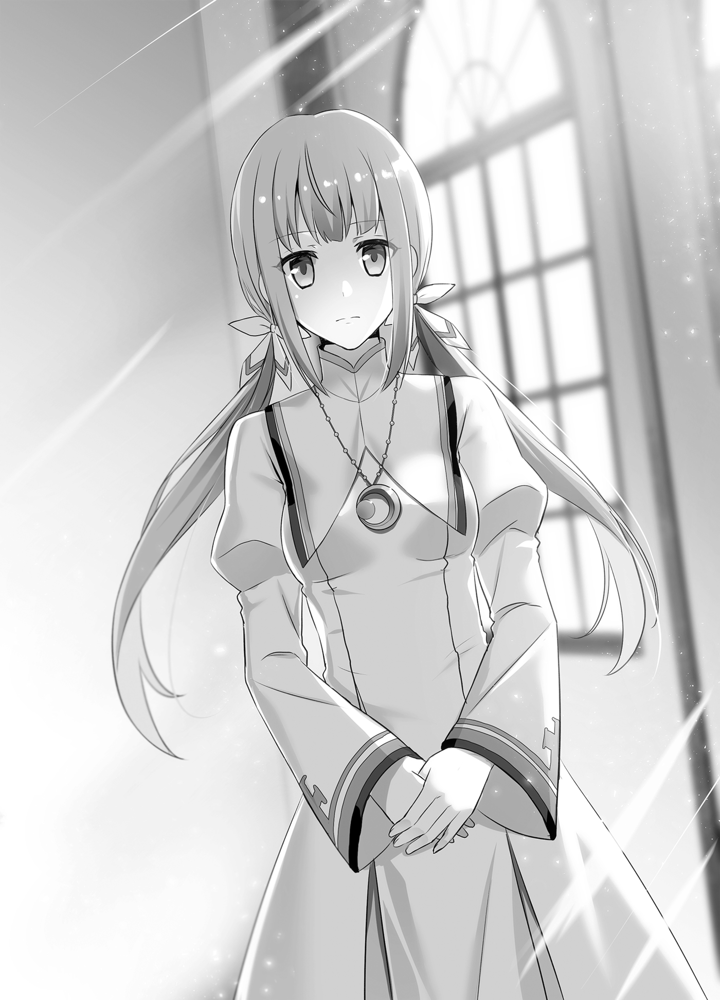
“...You give me too much credit,” I said. “I haven’t done anything heroic. I was only able to rebuild the country because I was blessed with good subordinates; and though I drove off Amidonia, the annexation was just something that happened as part of the flow of events afterwards.”
“The flow of things is a fate beyond human knowledge,” Mary said. “Surely you must have been under divine protection, sire.”
Divine protection, huh... That was the sort of opinion I would expect from a religious person. Not that I bought into it.
“Nah, that flow was created by one person in particular,” I said. “I’m not the one you should praise, but the Sovereign Princess of Amidonia, who made the decision of a lifetime.”
“Roroa Amidonia, you mean. Though still young, she took on two countries and found the path to the greatest benefit for her people. I admire her as a fellow woman.”
I was pretty sure Roroa had hated her country, though.
When Roroa’s elder brother Julius had been Sovereign Prince of Amidonia, the Orthodox Papal State had incited their followers in the country into a rebellion. That rebellion had been put down by Julius, but Roroa was angry that her people’s blood had been shed as a result.
Honestly, I had wanted Roroa to be here, as the candidate to become my third primary queen and the one who shouldered this country’s finances; but in consideration of her enmity towards the Orthodox Papal State, I had decided to have her wait in the governmental affairs office with Juna and everyone else. Roroa wasn’t the type to let it show, but I didn’t want to make her hold her emotions back.
But... just how serious was this girl when she said that?
Her tone of voice was plain, and I couldn’t detect any particular emotion in it. She didn’t seem to be plotting anything, either.
If she could speak like this while knowing what her country had done, she was a great actor, but it was entirely possible that she had lived a sheltered life and knew nothing of her country’s actions.
...No, if it had been either of those two, she would have shown more emotion. She was entirely too quiet.
If it were the former, she would probably have appealed more to her sincerity in an attempt to deceive me. If it were the latter, she should have been more enthusiastic about being here to do the right thing. However, Mary’s attitude seemed to say she was here to do something perfectly normal.
That might have been how a country’s emissary was supposed to act, but in her case, I felt like she took it to an extreme. I could feel that off feeling I’d had before growing in my chest.
In order to keep that feeling from showing on my face, I asked her straight out. “Well then, Madam Mary, what business are you here on today?”
“Oh, that’s right,” Mary said, and bowed her head meekly. “I did come here today with a request for you, Your Majesty.”
“A request?” I asked, having a bad feeling about where this was going; and Mary answered me with a smile that didn’t let me sense any ill intent.
“We would like you to adopt Lunarian Orthodoxy as the state religion of the Kingdom of Friedonia.”
A state religion...
State religions. They were a concept that had by and large been abandoned in the developed countries of Earth. I think countries used to use state resources for the defense and worship of a particular faith. They turned religious festivals into state functions, if I recall.
...Whatever the case, as long as we were a multiracial state, it wasn’t a realistic proposal.
“Madam Mary, do you understand what it is you’re requesting of me?” I asked. “If a multiracial country like ours were to give one religion preferential treatment, it would end up splitting the state. Are you asking me to make that sort of foolish mistake?”
I took a somewhat stronger tone as I said that. I did it to indicate that I was irritated with what she had said. I might not always seem like it, but I had gained enough authority that people called me a great king. If I hadn’t been such a big deal, getting mad over such a little thing would probably have worked against me. However, her expression didn’t change in the slightest.
“We aren’t asking you to give us preferential treatment. We would appreciate it if you would, but for now, just adopting us as your state religion is enough. In Lunarian Orthodoxy, we preach tolerance for others. That applies to other religions, too. We don’t drive out followers of other faiths or demand they convert.”
Then Mary raised her palm towards the ceiling.
“The moon in the sky changes with the seasons, and her face changes depending on the day and place from which you see her. Furthermore, the patterns of the moon look like an animal to some, and a person to others. Faith is the same way. Even if our views differ, we all still worship God. What we see as Lady Lunaria, those of other faiths simply see as something else.”
I was silent.
That was an awfully poetic opinion. If she was speaking her true feelings, then that certainly was tolerant, but... I just didn’t think the way her country acted was in line with that.
“But you don’t recognize Mother Dragon worship, now do you?” I asked.
“God is in the sky, and in our hearts,” said Mary. “If you worship something that exists, it’s purely out of fear for that thing. What is Mother Dragon going to do for her worshipers? Is it not true that the Star Dragon Mountain Range has no relations with any country other than the Nothung Dragon Knight Kingdom?”
“It’s natural for fear of something greater than yourself to develop into religious faith,” I said. “Isn’t Mother Dragon a symbol of nature itself, beyond the realm of human knowledge?”
“It’s a difference in the way we think,” Mary explained indifferently. “We think of faith as the bond that arises from God thinking of mankind, and mankind thinking of God. To us, Mother Dragon worship looks like an illicit love for Mother Dragon. We cannot recognize that as a legitimate faith. Of course, we understand that there are people who think that way.”
She wasn’t saying anything especially out of the ordinary, I supposed. If anything, she came off as logical. If these were her personal views, I almost wanted to talk with her at length about it some time. But there were some premises she was wrong about.
“This seems like a good opportunity, so I’d like to hear your opinion on something,” I said.
“What might that be?”
“I hear that spies from some other country have been sending spies to the royal capital recently...”
“To this country, you mean? It seems awfully stable, so it’s a surprise to hear that.” Mary said that without her expression changing in the slightest, of course. There had been no fluctuation in her emotions this entire time.
When it went this far, I had to start thinking she might not actually know anything about the Orthodox Papal State’s dark side.
“When one of my subordinates dispatched one of those spies, I’m told that the spy said ‘Curse you, you infidel.’ They must have been a follower of some religion. You also believe in God, so perhaps you understand what the spy’s words meant, Madam Mary?”
“I am not that spy, so I couldn’t tell you, but...” Mary seemed to think for a moment, then replied without getting particularly worked up about it. “They probably saw their own life as a trial given to them by God. Those who would oppose them were unbelievers. In short, that was how they judged your subordinate to be an infidel.”
“So, basically, it wouldn’t matter if he was a follower of another religion or not?”
“From what you’ve told me, that was the sense I got. I apologize for my self-centered view.”
“...No, it was educational,” I said.
What was it? I felt I had less and less of a feel for her. I couldn’t sense anything like a motive behind Mary’s words. She gave serious answers to my questions.
...In that case, was this a negotiation?
In negotiations, both sides had goals, and the two sides bounced ideas off one another until they reconciled their differences. That was why they concealed information that was to their disadvantage, in order to lead the discussion in a direction that was advantageous to them. I couldn’t sense any sort of attempt to lead the conversation whatsoever in the way she was speaking and acting.
“...Let’s get back on topic,” I said at last. “You wanted to make Lunarian Orthodoxy our state religion, right?”
“Yes.”
“So, what merit is there for our country in doing that? Also, if you say you’re tolerant of other religions, it shouldn’t matter who is worshiping what. Why is Lunarian Orthodoxy seeking to become our state religion?”
“I will answer your first question,” Mary told me. “If you make Lunarian Orthodoxy your state religion, we are prepared to recognize Your Great Highness as a saint. You are already a king, so you would become a holy king. In addition, I will most likely be dispatched by the Orthodox Papal State to serve as your personal bishop. I will serve you as I would God.”
With that said, Mary bowed her head.
It was going more or less how Roroa had said it would. I’d never expected that the saint herself would come to serve me, though.
“The way you say that, it’s almost like you’re coming to marry me,” I commented.
“If Your Holy Majesty wishes, you may do with my body whatever you might please. I will offer my body and heart to you as I do in service to God.”
“I haven’t said I’m going to accept this holy king thing yet.”
“Forgive my presumption.” Mary bowed her head once more. She didn’t look like she felt guilty at all... or rather, the look on her face made me think she didn’t even realize she had done something wrong.
When I mentioned the marriage thing, Aisha jumped a little, but Liscia didn’t seem surprised in the least. All she did was stare at Mary with a serious look on her face. How did Mary look in Liscia’s eyes?
“And?” I asked. “If I become a holy king and have a saint dispatched to me, what merit are you saying that will give this country?”
“This country has grown to a scale where it is comparable to the Gran Chaos Empire. That is a product of your virtue, no doubt. If you gain the influence of Lunarian Orthodoxy as well, this country will have gained a degree of power that outstrips that of the Empire.”
“There’s another bold claim,” I said. “But the Empire still has more territory and more power than us, you know?”
Well, there were areas where our technology was ahead of theirs, but I wasn’t going to let that slip.
Mary silently shook her head. “Four in ten of the people living in the Empire are followers of Lunarian Orthodoxy. Those numbers are the result of Mother Dragon worship being unable to gain much of a foothold because the Empire fought the Star Dragon Mountain Range during the period in which they were expanding. In other words, close to half the population are followers of Lunarian Orthodoxy. If this country were to get into a conflict with them, with our influence it would be possible to break up the Empire.”
“You say some pretty scary things as if they’re nothing,” I said. “We have no intention of getting into any conflicts with the Empire.”
“It was merely a hypothetical. In short, I am telling you that you can gain the power to rival the Empire; the power to be the strongest among mankind’s nations.”
...Yeah. Well, looking at the relationship between the princes of Middle Ages Europe and the Roman Catholic Church, it wasn’t unthinkable. With the power of the ruler and the church combined, they would rule the country and drive out foreign enemies. It was an easy way of handling things. But that was only if you turned a blind eye to the power struggle between the ruler and church that would occur afterwards.
Right now, we were trying to move forward into a new era. I didn’t want to go imitating something people had done in olden times. “If I may say a word,” Hakuya, who had been silently watching things unfold up until now, spoke up. “I’m sorry to do this to Madam Saint, but I would like to speak with His Majesty for a short while.”
“Please do.”
With the saint’s permission, Hakuya walked up close to me. Then, leaning in and bringing his mouth to my ear as I sat on the throne, he whispered to me, “You seem out of sorts, sire.”
“Yeah...” I whispered back. “For some reason, I can’t get into the right mindset. I feel like there’s something weirdly off about her.”
“In regards to that, I think we need to think of her as separate from them,” he whispered.
“We do?”
Hakuya nodded. “I’ve been observing all this time, and I believe she’s been exhibiting a lack of emotion.”
“Yeah, I noticed that, too.”
“I’m sure that the Orthodox Papal State had some reason for sending her here, but perhaps Madam Mary herself has no idea what that is? Could she have come here as just a saint, only to communicate the will of the upper echelons of the Orthodox Papal State, like a sort of messenger kui?”
“Huh?! She’s just a messenger, then?”
Mary wasn’t a negotiator, then?! That made a lot of sense... It had never felt like I was negotiating while I was talking with her.
I’d assumed she’d been given model questions and told what to answer if I asked certain things, and she had been negotiating with me based on that. That would explain why, when I’d given her questions they wouldn’t expect, like about that spy’s mindset, she’d given me frank and honest answers.
Either that, or it was possible she had been told to answer questions like that honestly. Even if her negotiation partner tried to extract vital information from her, if she hadn’t been told anything, she would just honestly answer, “I don’t know,” after all.
This wasn’t even a negotiation anymore. It was like having a text reader read out my e-mail for me.
I glanced over to Mary. When she noticed my gaze, she cocked her head to the side a little with no expression.
...I see, I realized. In a way, she is like a Diva.
In my world, there was an anthropomorphized text reading program called a Divaloid. It had gotten famous because you could use the synthesized female voice to read passages, or to sing songs, and it had caused a big boom, especially on video sharing sites. They’d added illustrations of a cute girl to it, and she’d even held live concerts as a virtual idol.
When I was talking to Mary, I felt like I was talking to one of those.
“Hakuya... How do you think we should negotiate from here on?” I whispered.
“I believe it would be good to ask for an answer to your second question from earlier,” he whispered back. “However, what you should weigh is not her own reaction, but the intentions of the Orthodox Papal State.”
“...Got it.”
Once Hakuya was back in his earlier position, I spoke to Mary.
“Sorry for the wait. By the way, I never did get an answer to my second question from earlier. Why is Lunarian Orthodoxy seeking to become our state religion?”
“For the sake of all mankind,” Mary said without hesitation. “The north of the continent has now become the Demon Lord’s Domain. Though its expansion has stopped for the time being, for as long as the Demon Lord’s Domain exists, mankind will never have peace. In order to attain peace, it will be necessary to invade the Demon Lord’s Domain and exterminate the root of the problem. However, the demons of the Domain are powerful, and it is impossible for any one country to face them alone. All of the nations of mankind must cooperate.”
It stood out as a hard-line position, but... that was understandable, I suppose.
Mary continued, “That is why we want you to become a holy king. With your power and our authority combined, it will be possible to unite all of the different nations, I’m sure. If you request their cooperation after you have unified the other countries, even that empire will follow your commands. Two out of five of their citizens follow Lunarian Orthodoxy, so they won’t be able to afford to ignore you. In that way, all of mankind will be united, and we will invade the Demon Lord’s Domain. Then, with the Demon Lord who is the root of all evil slain, we will liberate the north of the continent.”
Mary spoke all that without hesitation. It sounded like she was talking about the Crusades. In order to reclaim our lost land, we would be uniting countries through the power of religion. And so, they wanted me to become a holy king and wave the flag for that cause.
But... I’m sure that’s just the public face of it.
Only once I saw the people behind Mary would I be able to get the full picture of what their intentions were. Mary probably honestly believed this was to retake the north, but the people behind her probably thought differently.
The bit about uniting the nations of mankind caught my attention. There was already a system in this world trying to unite all of mankind: the one that Maria was leading, the Mankind Declaration. It was a flawed treaty, but, for the moment, it seemed to be serving its function.
For the Orthodox Papal State, they couldn’t be happy about a situation where Maria, who was (from their perspective) a “false” saint, was the leader of that pact and winning respect for it. The more Maria did to distinguish herself, the weaker the influence of their own saint would be, after all. A theocracy ruled through its religious authority. In other words, the loss of authority was a matter of life and death for the state.
That was why the Orthodox Papal State probably wanted to set up another body for international cooperation separate from the Mankind Declaration. They needed to create a new system where they could assert their authority. And they had picked me to do it.
I looked over at Hakuya. When Hakuya noticed me looking, he closed his eyes and nodded once, then shook his head. He’d likely reached the same conclusion I had.
In light of that, he was hinting to me that, “We shouldn’t accept this offer.”
...Well, of course not. That being the case, there was something I should ask.
“By the way, what will happen if I refuse to adopt you as our state religion?”
“It would be disappointing, but we would have no choice but to accept,” said Mary. “We can’t force you into accepting.”
They were backing down surprisingly easy. I thought they’d say something like, If you don’t accept our demands, we’ll have all of our followers in your country riot, or something like that.
While I was thinking that, Mary continued, “However, I suspect,” her expression still not changing. “I suspect that we would end up waiting.”
“Waiting?” I asked.
“Yes. We could only wait until either you have a change of heart, or a new candidate to become the holy king appears.”
I inhaled sharply in surprise.
Urkh... So that was how they’re going to play it, huh. Basically, if any country started to get stronger, or a ruler began to become famous, she was saying, “We’ll take this exact same offer right to them.” If they did, her earlier comment that “Two in five of the Empire’s citizens are followers, so if we feel like it, we can split their country” would be something that might happen to our country, too.
Mary might not have intended it that way herself, but it was one heck of a threat.
This is... I shouldn’t decide on this right here and now.
I didn’t want to accept it, but if I was going to refuse, I needed to tell them that only after carefully considering the countermeasures available to me. At the very least, I wanted to have a lengthy discussion with Hakuya about it.
I rose from my seat and said to Mary, “I understand your request, Madam Mary. However, I cannot give an immediate answer due to the gravity of the request. I would like time to think it over. We will continue this discussion at a later date.”
“But of course,” she said. “I will be praying that you make a good decision.”
Mary meekly took her leave. The negotiations hadn’t been concluded, but she didn’t look disappointed at all to me.
I looked closely at Mary’s face. I had been looking at it the entire time we had been negotiating, but it felt to me like her expression had hardly ever changed. She was like a doll.
A doll... Artificial...?!
That was when I realized it. What exactly it was that felt “off” about her.
◇ ◇ ◇
By the time my meeting with Mary came to an end, it was already late at night.
When we returned to the governmental affairs office, Roroa and Juna greeted us there. I spotted Carla with the maids standing by in the center of the room, too.
“Welcome back, darlin’... Wait, what’s wrong?!” Roroa cried.
“Um, is something the matter, Your Majesty?” Juna ventured.
The two had been smiling at first, but once they saw my face they instantly took on looks of concern.
Ha ha... Was the look on my face right now that bad? It might well have been.
Juna touched her fingers, soft and cold like little white fish, to my forehead. “You don’t seem to have a fever, but... are you not feeling well? Would you like to take a little rest?”
“Hey, Big Sister Cia! What happened to darlin’?!” Roroa burst out, rounding on Liscia.
“Don’t ask me! I don’t know!”
I said, “Oh... It’s okay, I’m fine,” weakly brushing Juna’s hand away, then sat down at the governmental affairs office’s desk. Then: “Sorry. Liscia, Aisha, Juna, Roroa... could you come over here?” Then: The four of them looked to each other, and slowly came over to me. When they got close enough, I spread my arms wide and gave all four of them one big hug.
“Eek?!” Liscia yelped.
“My word!” cried Aisha.
“Oof...” said Juna.
“Wait! Darlin’?!” Roroa shouted.
They all let out weird little cries of surprise, but I ignored that and hugged them tight.
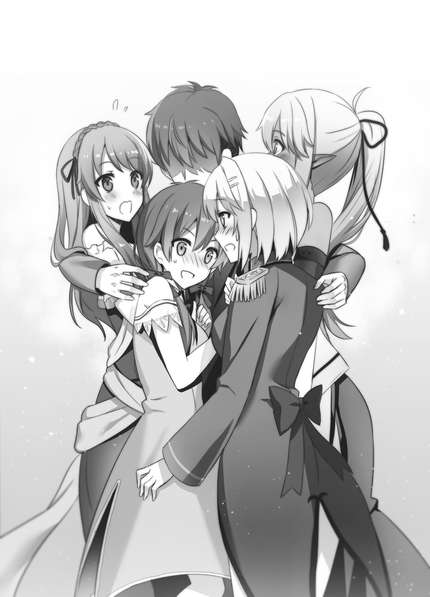
For anyone watching from the side, it might have just looked like we were forming a scrum; and it wouldn’t have been very sexy, but I could feel the warmth from all four of them. That let me finally calm myself. Once I had gotten a good full minute of that, I released them.
Liscia fixed her now-slightly-messy clothes and asked me, looking a little angry as she did, “Geez... You’re going to give us some explanation for what that was all about, right?”
The concern for me that I could hear hidden behind the anger in her voice made me a little happy.
“Yeah, I’ll fill you in.”
“Souma, you got like that towards the end of the meeting, right? What exactly happened?” Liscia asked.
“The whole time, there was something about that girl, Mary, that felt... off to me,” I said.
“Something that felt off? Nothing she did seemed suspicious to me, though.” Aisha cocked her head to the side in confusion.
I shook my head. “It’s a little different from what you’re thinking. The first time I saw Mary, I thought she was incredibly beautiful. But... at the same time, I felt she was strange somehow.”
“Strange? Whaddaya mean, strange?” Roroa asked.
“I should have found her attractive, and yet I couldn’t see her that way. That’s how it felt.”
“Hm... She seemed like a cute girl to me, though,” Hakuya said.
Yeah... Probably no other person would have noticed it. I’d noticed because of who I was, and because of that, I’d been able to discern the truth behind it.
“I didn’t notice it myself at first, either,” I said. “But the moment I thought she was doll-like in her lack of emotion... or artificial, to take it a bit further... I realized what it was that had felt off to me the whole time. She... looked like them.”
“Looked like them? Who?”
When she asked me that, I put my hand down on Liscia’s shoulder. “Like you, Liscia.”
“Huh?! Like me?!”
“Yeah. And like Aisha, and like Roroa, too.”
“Huh? Did she?”
“Like me, too?”
Aisha and Roroa looked at each other after hearing what I said. I looked over to Hakuya.
“Hakuya, if you were to describe Mary’s face for those of us who weren’t there, how would you express it?”
“Well, let me see... she had regular features, silver hair, and it was tied back in two tails...?!” Hakuya seemed to have picked up on it, and his eyes went wide.
I nodded. “Here’s how I’d describe her. Her regular features were like Liscia’s. Her silver hair was like what Aisha has as a dark elf, and her hairstyle was like Roroa’s. In other words, Mary’s face was like a composite of Liscia, Aisha, and Roroa’s faces.”
“O-Our faces?!” Liscia yelped.
Yeah. The reason I hadn’t been attracted to her, despite her being so young and beautiful, was because of the disconnect with my expectations. If one day, out of nowhere, Aisha had suddenly gained human facial features, that would surprise me, and if Liscia or Roroa’s hair had turned silver, it would be only natural for me to think something felt off.
Aisha raised her hand and said, “Wait, hold on. If she has a mix of all of your fiancées’ features, what part of her do you suppose would have come from Juna? From what I saw, her figure was average, too.”
“See, that’s it,” I said. “From what I saw, Mary has practically nothing in common with Juna. If I had to give you something, I’d say those sensual eyes of hers were similar, but that’s a little weak as far as traits go. That’s got to have been a coincidence. Also... can one of you tell me what the difference is between Juna and Liscia, Aisha, and Roroa?”
“I’m the only one who’s a secondary queen candidate,” said Juna. “Besides, I’m also... the only one whose engagement to you hasn’t been announced yet!” Juna clapped her hands as she figured it out.
I nodded. “My engagement to the other three has been announced already, but we haven’t been able to announce Juna’s yet because of her work as a lorelei. In other words, it’s not known that she’s my fiancée. So, when we think about how Mary, who has the defining characteristics of all my fiancées except Juna, was sent here, combined with the fact that the Orthodox Papal State’s spies have been growing more active in the castle town, we can infer that the spies were collecting intel on what my fiancées looked like. They did this in order to create a woman I would like, or at least not find unpleasant, and send her to me as a saint.”
“Souma, that’s...” Liscia began.
“Yeah... When I said ‘The way you say that, it’s almost like you’re coming to marry me,’ do you remember what Mary said in response?”
“If Your Holy Majesty wishes, you may do with my body whatever you might please. I will offer my body and heart to you as I do in service to God.” Mary had said that without hesitation.
A girl tailored to my tastes had been sent to me, and that girl had said, “You may do with my body whatever you might please,” and, “I will offer my body and heart to you.” Then, as if asking for compensation, they had tried to push their own demands through. In other words...
“For the Orthodox Papal State, the saint is a honey trap laid for state-level actors,” I said.
“What they’re doing is the same as the nobles trying to sell their daughters to you...” Liscia said, sounding exasperated.
Honestly, for a country ruled by men of the cloth, they came up with some vulgar ideas. It looked like, as a country, the Orthodox Papal State was a very human enterprise.
“Once I figured out what felt off about her... I asked Mary about how she was selected to be a saint,” I said. “When I did, she kindly gave me a thorough explanation.”
I was told that the saint had been chosen from among the nuns of the central church by the divine revelations contained in the Lunalith. Most of those nuns had originally been orphans, and there were nearly fifty of them. Most likely, the goal was to keep a diverse stock of potential saints for any rulers they wanted to seduce.
The nuns were trained at the central church, and raised learning the doctrines of the faith in a place cut off from the secular world so that they would become obedient believers. Then, if they reached a certain age without being chosen as saints, they were sent out to churches in each region as bishops.
“That’s... terrible,” Aisha said with open revulsion. “Then they really are like dolls. It’s as if they have no will of their own.”
“Now, now, Big Sister Ai,” Roroa interjected, “it doesn’t sound like that bad of a deal to me.”
Aisha was critical of the system, but Roroa seemed to be of a different opinion.
“No matter what country ya go to, there ain’t nothin’ harder to run than proper orphanages,” said Roroa. “If they don’t get educated by the time they’re old enough to work, they’ll just end up bein’ used for cheap labor. It’s rare to find places like ours that teach readin’, writin’, and arithmetic. For girls who come up out of the orphanages... often, sellin’ themselves is the only thing they can do. If they’re bein’ lifted up from that situation, given food, clothing, and shelter in the church, don’t ya think that’s fortunate for them?”
“But they’re being raised so they can be given as offerings to foreign rulers, you realize?” Aisha shot back.
“I’m not sayin’ I like it. But usin’ girls to form bonds is somethin’ every house, noble, knightly, or greater, does. I mean... in a way, I used myself politically like that, too.”
“Oh...”
When Roroa pointed that out to her, Aisha was at a loss for words. It was true, when Roroa had arranged her own marriage in order to protect her people, you could say she had been making use of her position as a woman.
“Sorry...” Aisha apologized.
Roroa simply said, “Think nothin’ of it,” and waved her hand. “Besides, I’ve never heard of there bein’ multiple saints. In other words, for all o’ the nuns other than this Mary girl, it won’t be happenin’ to them. Even for the saint, sure, callin’ her an offerin’ makes it sound bad, but if a lord does lay his hands on ’er, she’s set to marry into money. I married for political reasons, and I’m plenty happy now, so it’s up for her to decide whether or not she’s happy with it in the end.”
Roroa said that firmly. She really... was a strong girl.
“I agree with Roroa’s opinion,” I said. “I don’t like their methods, but it’s not a system we need to say anything about. I mean, it’s another country’s issue, after all.”
“Well... why do you look so torn up, then?” Liscia asked, looking me straight in the eye.
I put a hand to my head. “What shocked me... was that Mary had accepted she was a saint, and was willing to go along with it knowing exactly what that meant.”
◇ ◇ ◇
As the meeting was ending, I asked Mary about one thing that was bothering me.
“Madam Mary, do you have no doubts about being treated as a saint? Suddenly being saddled with the dignity of your country, having to appear before a foreign king, and being expected to tell that king ‘I will offer my body and heart to you.’ It’s too great a burden for one person to bear. I would have thought a life like that would be too cruel for an ordinary young girl to take.”
Mary smiled and said, “By the will of Lady Lunaria, I was blessed with the great honor of becoming a saint. The saint is the face of the Orthodox Papal State. Having been granted this role, rather than live for my own feelings, I want to fulfill the duties I’ve been given. Because that is what is best for the country, and, in turn, for all people.”
“...You’d abandon your self for the sake of others?” I asked.
“It is my natural duty as one who has received a greater honor than most. I would think, as a king, you would understand that, wouldn’t you, sire?”
I was silent.
“Living the way others want you to,” she said. “I believe it is a wonderful way to live, and one I can be proud of. For the people who revere me as a saint, I intend to give myself fully to serving them.”
For the people who revered her as a saint... huh.
She must have believed with all her heart that living the way others wanted her to was a thing she could be proud of. When I saw Mary’s smile, the words of another saint flashed through my mind.
“I may be an empress, but I’m still just a human being. Instead of being worshiped as a saint, I want to remain a person, and to be loved as a person.”
For one, being a saint was something to pride herself on, and she chose to act like a saint.
For the other, she rejected being a saint, and insisted on being a person.
”I would think, as a king, you would understand that, wouldn’t you, sire?” Mary had asked.
Which path will I choose...?
◇ ◇ ◇
“There was a time... when I thought the same way Mary does,” I said to my assembled companions, as if I were confessing my sins at church. “You remember, right, Carla? What happened during the battle with the forces of the principality?”
“That time, you mean...?” Carla, who had been standing by in the corner of the room, said in a whisper.
I was referring to the time during the war with Gaius VIII and the corrupt nobles when, in order to protect my heart from the pressure bearing down on me, I had walled myself off and tried to focus solely on playing the role of king. If I hadn’t done that, I wouldn’t have been able to bear the weight of all the lives being lost on my orders.
“We’re people, so we suffer due to the size of our responsibilities,” I said. “We’re people, so we agonize over the decisions we’ve made. That time, when I was forced into a war I didn’t want, but that I had no choice but to fight, little by little, without realizing it, I began acting as a system called ‘the king’... like I was a machine. Because if I was a machine, I didn’t have to suffer, or to think and agonize over things.”
“Souma...” Liscia had a worried look on her face, but I gave her a wry smile and shook my head.
“When Carla asked me ‘Aren’t you afraid to die?’, I realized how warped it was for me to be ready to accept dying as king. Thanks to that, I was able to stop short of it. When I think how things would have turned out if Carla hadn’t pointed it out to me then... I shudder. I could well have ended up like Mary. When I think about that, it makes me feel bad.”
When I thought of what it would be like if a version of me that had become the system called a king had been here now standing in front of Liscia and the others... it scared me.
Could the me who had become able to accept everything because I was the king make Liscia and the others happy? ...No, he could not.
”I want to remain a person, and to be loved as a person.”
Yeah... That’s right, Madam Maria, I thought.
If I couldn’t notice Liscia and the others’ tears, if I couldn’t make Liscia and the others smile, even if it meant suffering under a heavy burden and agonizing over the decisions I made...
I didn’t want to become a mere system.
“Yeah. Me, too. I’d rather be a person.”
“Souma?” Liscia asked. “...Eek!”
I got down off of the desk, walked to Liscia’s side, and hugged her slender body tight. My sudden action left Aisha, Juna, and Roroa all dumbfounded.
“Whuh?!”
“Oh, dear me.”
“Whoa, Big Sister Cia, that’s no fair.”
With the three of them staring at us, Liscia turned a bright shade of red, her eyes darting about rapidly. “U-Um... Souma? Could I ask you to let go of me, maybe? This is a little embarrassing... Everyone is watching...”
Liscia said that, but I ignored her and kept hugging her. If she really didn’t like it, I knew Liscia was more than capable of pushing me away.
I held onto Liscia as I said to Hakuya, “I won’t become the holy king. I won’t let the Orthodox Papal State get their way, either. I do have a policy in mind that sidesteps the Orthodox Papal States’ scheme, but... it’s probably only good enough to stall for time. If we’re going to come up with a more fundamental solution to the problem, all the followers of Lunarian Orthodoxy in the country will be a problem. I do hope it can disempower them, or render them harmless...”
“Hold on, why are you talking about serious stuff while holding me like this?!” Liscia cried.
“Hm... In that case, let me handle the countermeasures for that,” Hakuya said. “I have some ideas of my own. I’ll be borrowing Kagetora and some members of the Black Cats for my purposes.”
“You, too, Hakuya! Why are you holding an ordinary conversation?!”
“Got it,” I said. “Let’s bounce ideas off each other and work on our plans tomorrow.”
“By your will.”
“Ignored?! I’m being ignored?!”
“Thanks, I’ll be counting on you. Now then...”
Scratching my cheek, I turned to Aisha, Juna, and Roroa.
“Sorry, but could you leave Liscia and me alone tonight?”
“““?!”””
The moment they understood what those words meant, Aisha, Juna, and Roroa’s eyes all bulged in surprise. And as for Liscia, who had been protesting for a while now...
“Uh... Uh...”
It seemed she couldn’t even form words properly, and she was just opening and closing her mouth like a goldfish. Liscia was usually so dignified, but when I thought, Hey, she makes faces like this, too, it was kind of funny.
“D-Darlin’, does that mean you two’re gonna...”
Roroa came back to her senses and tried to get some answers out of me, but Juna laid a hand on her shoulder and stopped her.
“Roroa.”
Then she said something to Roroa and Aisha in a whisper before turning and giving me a deep bow.
“Now then, Princess, Your Majesty, we will be taking our leave of you now.”
With that said, Juna quietly departed.
“Erm... Good night, Your Majesty, Princess,” said Aisha.
“Murgh... Big Sister Cia! Tell me how he did later, ’kay?”
Aisha and Roroa followed Juna out of the room.
“Well, until tomorrow, then,” said Hakuya. “Rest well.”
“I-I will be standing guard outside the room... Please, take it easy, Master...”
With Hakuya and Carla being the last to leave, Liscia and I were left alone in the room.
I picked up Liscia, who was frozen stiff.
Hey, she was pretty light. She did have a bit of muscle on her, but on the whole, she had a slender figure, so the weight difference between us made it easy for me to lift her up. When I sat her down on the simple bed that was sitting in the corner of the room like always, Liscia finally came back to her senses.
In the candlelight, we sat side by side on the bed, staring into one another’s eyes.
“U-Um, Souma? This means... what I think it does, right?” she asked with her face beet red.
My cheeks started to feel hot, too. “Uh... Yep. That was... kind of the intention...”
“O-Oh, I see...”
“...Can’t we?”
“No! It’s not that we can’t! I mean, I’ve been waiting for this...” Liscia hurriedly shook her head. Her words were trailing off and getting weaker, though. “B-B-But why now, all of a sudden? You held out on me so long.”
“Oh... Yeah, well... I was thinking I should wait until the kingdom’s more stable, until I was able to take responsibility for it, until we had gone through all the steps, but...”
Aw, geez, this was really embarrassing! I scratched the back of my head.
“But... When I saw Mary, and thought about how I want to be a person... I just couldn’t hold back any longer. I wanted... to act on a human impulse, and to have you accept me for it.”
“I-I see...”
That, and Maria’s words, “I want to remain a person, and to be loved as a person,” probably had an effect on me, too.
I wanted to be a person, and I wanted to love Liscia and the others as a person.
I wanted Liscia and the others to love me as a person.
I felt that way strongly, and I couldn’t hold back any more.
...Well, at a time like this, I wasn’t about to tell her that another woman’s words had that deep an effect on me, though.
“Um, but... having our first time in the governmental affairs office, it sure isn’t very sexy,” Liscia said, tripping over her words, as she folded her top which she had stripped off and set it aside so that it wouldn’t wrinkle.
I took off my shirt, too, and pulled Liscia who was now in nothing but her white underwear close to me.
Was I the one trembling, or was it her...? It might have been both of us. Neither of us were used to this, and we embraced each other awkwardly. We kissed once, and then...
“Well, do you want to take this somewhere else?” I whispered in Liscia’s ear.
When I did, Liscia grinned and silently shook her head. “No. Here is good. I mean, this is...”
...the place where you and I first met, after all.
◇ ◇ ◇
“Nngh... Hm?” I murmured.
When the light shone in through the window and woke me, Liscia’s face was right in front of mine.
We were sharing a single pillow, so it was pretty close. She was sleeping peacefully.
With each shallow breath Liscia took, her soft chest rose and fell under the covers. Just the sight of her like this left me with an indescribable mixture of glee, embarrassment, and love, and I reached out to touch her cheek.
When I did, “Murgh...” Liscia twisted as if something was tickling her and then slowly opened her eyes.
She was probably still half-dreaming. She didn’t seem to know where she was, and she started looking around restlessly. Then she noticed my face right next to her own.
“Oh... Souma. Morning...” she said with a grin. It was a smile as gentle as the morning light that was shining in.
Her reaction was unbearably cute, so I hugged her close and placed a kiss on her half-closed left eyelid. Still groggy from sleep, Liscia let out a ticklish laugh.
“Geez, Souma, what do you think you’re doing?”
“Hmm, I’d love to keeping looking at you like this, but... Sorry, Liscia, get up, please.”
“...Huh?” she asked.
As I gave her a gentle shake, this time Liscia’s eyes opened fully. The moment her eyes snapped open, Liscia’s face turned red so quickly, I could almost hear the comedic exploding sound effect as it did. Most likely, when she’d gotten a handle on the current situation, all of her embarrassment had flared up at once. Of course, that included enough for last night, too.
I softly patted Liscia on the head. “Good morning, Liscia.”
“M-Morning. Ohh... Don’t look at me so much.”
“Don’t look at you? I saw a whole lot last— Mmph!”
Liscia shoved a pillow in my face.
“That doesn’t make it any less embarrassing!” she cried.
Liscia hugged the blanket to herself and glared at me kind of resentfully.
Yep, she sure was cute. I almost wanted to jump her right there. But instead, I just pushed the pillow aside and stretched.
“Yeah... I don’t think I ever want to do it in the governmental affairs office again.”
“...Why not?” she asked.
“Because this is our workplace, so I’ll have to ask them to clean up after us right away. I want to flirt with you more, and it’s a pain having to get up.”
“I-I see...”
I got out of bed and slipped on the clothes I had been wearing yesterday. I hadn’t brought a change of clothes, so I would have to go back to my room to get one.
After quickly getting dressed, I asked Liscia, “So... are you feeling okay?”
“Y-Yeah... I do feel a little sluggish, though...”
“Okay. Let me be the one who asks the maids to clean up, then.”
“Yeah,” she said. “Could you do that for me?”
I planted a kiss on Liscia’s forehead and then left the governmental affairs office.
When I left through the door, I was met by a red-faced Carla, who was averting her eyes, and a gently-smiling Serina. I understood why Carla was there, since she had been standing guard, but why Serina?
Serina showed a slight, impassive smile and said, “You two had fun last night.”
Wow... That line, when someone actually says it to you in real life, it’s really frustrating.
“...You’re up early, Head Maid,” I said.
“I am the princess’ personal maid, after all.” With that answer, which I wasn’t sure qualified as one, Serina gave me an elegant bow.
I thought, Oh, yeah, she’s definitely having fun with this... but I knew if I said anything, there would be three times as many verbal daggers coming my way, so I stayed silent. It was better to let sleeping sadists lie. If you could turn a blind eye to her bad habit for bullying cute girls, she was extremely competent at her work.
“Serina, Carla... Take care of Liscia and the room for me,” I said.
“Understood,” Serina said. “Let’s get to it, Carla.”
“Y-Yes, ma’am!”
Serina and Carla bowed to me and then entered the room. A moment later, from inside...
“S-Serina?! I’m still naked here!” Liscia shouted.
“We need to clean up, so please, get out of bed already. If you don’t, I will have Carla carry you out of this room, bed and all.”
“Hold on, Carla! Don’t lift the bed!”
“...Sorry,” Carla said. “If I defy the head maid, I’ll be humiliated myself later...”
“Eeeek!”
...Well, I heard those voices and a lot of banging.
Okay, Liscia. Live strong, I thought.
“Now, then...” I slapped my own cheeks. It was time for a change of mindset. With my relationship with Liscia having grown deeper, I felt like I needed to be ever more determined.
In order to defend my beloved family, I was going to put one over on the theocracy.
“Well, off to scheme with Hakuya, I guess.”
I skipped off down the corridor.
◇ ◇ ◇
—Days later.
I had sent a message to Saint Mary who was staying at the Lunarian church in Parnam to inform her that I would be holding another meeting with her. Mary had responded that she would come to the castle at once.
And so, once again, Mary and I faced one another in Parnam Castle’s audience chamber. It was an audience with the same faces, and standing in the same places, as the last one. I hadn’t been able to focus during the previous one because something had felt off about Mary, but now that I knew the trick to it, I could look at her with a clear head.
Seeing her again after a few days, Mary was still beautiful, and still doll-like. I exchanged brief pleasantries with her, then decided to get straight down to business.
“Now then, regarding the matter of making Lunarian Orthodoxy our state religion...”
She waited silently.
“If you can accept two conditions, I don’t mind doing it.”
“Conditions...?” Mary tilted her head to the side questioningly.
I answered her in as light a tone as I could manage. “Oh, it’s nothing too difficult. The first is that you not make me the Holy King of Lunarian Orthodoxy. I don’t want you one-sidedly starting to call me that, either. I want a firm agreement on this point.”
“Why is that? If you became our holy king, you would stand above adherents of Lunarian Orthodoxy in every country, you know?” Mary looked perplexed.
I shook my head with a wry smile. “That’s because I’m not an adherent of Lunarian Orthodoxy myself. Even if someone like me was suddenly named holy king, I’m sure there would be resistance from the believers. I’m sorry, but I’ll have to decline the position.”
“Oh... I see.”
Though Mary acted disappointed, she meekly backed down on the point.
Of course, the reason I’d given her was just a front. I had no desire to be their holy king, or anything like that, and I couldn’t let us regress into a country where the church controlled education, either. My goal here was to prevent the Orthodox Papal State from naming me holy king and making me carry the flag in their conflict with the Empire.
“Now, as for the second condition... I’ll have Prime Minister Hakuya explain this one,” I said.
Hakuya brought a hand to his chest and bowed before taking one step forward. “Allow me to explain. The other condition we are presenting is that we want to invite a bishop from the Orthodox Papal State to come here and manage the believers of Lunarian Orthodoxy within the country.”
“Of course we can do that,” said Mary. “I had intended to come here myself.”
Hakuya replied, “Oh, we could never ask that of you,” and waved his hand. “We have no desire to impose on a saint. We have a specific individual we would like to invite here as our bishop.”
“You have someone you want to invite here? Who might that be?”
“Bishop Souji Lester.”
Mary was silent. The moment she heard the name, her brow furrowed just a little.
I only saw it for that one instant, but it was a look of revulsion. It was the first human reaction I had seen from doll-like Mary.
Mary asked Hakuya with a slightly stiff expression, “Sir Hakuya, are you... aware of what kind of man he is?”
“Yes. I have heard that he is very sharp.”
“No, he is just cunning,” said Mary. “I cannot say... that I would recommend him. He extorts large amounts of money from the believers, drinks heavily, toys with women, and engages in many other such indecent behaviors. Normally, as a man of the cloth, he would have sworn off such desires, but that man is mired in the secular and does as he pleases. His Holiness and the cardinals view his behavior as an issue. I, myself... also find him unlikable.”
It was a firm rejection. He was a man that even this doll-like girl would hate, it seemed. Now I was interested.
“How did a man like that become a bishop?” I asked.
Mary’s lips drew taut. There was a short pause before she opened them again to say, “This is... an embarrassing thing to talk about, but we in the priesthood are supported by the donations of the followers. There were cardinals who defended Bishop Souji because, regardless of his methods, he was able to bring in large donations...”
Ah... I was starting to see how it worked.
Most likely, this Souji was paying bribes to a number of the cardinals. Even if their saint wasn’t, the upper echelons of the church felt very human, and very rotten. That was why even if they wanted to remove him, they couldn’t.
“However,” Mary said to Hakuya, “there are now voices in the church saying that he should be expelled. I believe it is only a matter of time until he is excommunicated. Do you want to invite a man like that here?”
Even as she looked at him with clear opposition in her eyes, Hakuya never broke his quiet smile. “That sounds just perfect to me. If you mean to expel him, we will take custody of him here in our country. His Majesty is quite fond of gathering talented personnel, you see, and he has told me that if there is a bishop like that, he wants to meet him.”
I had no recollection of ever saying such a thing. I didn’t know a thing about this Souji, or even what his name was, after all. However, I had been told in advance that this Souji would be a key player in Hakuya’s plot, so I nodded as if it were true.
Mary looked at Hakuya with apparent displeasure. “If he is to come here as a bishop, that would place him at the head of all believers of Lunarian Orthodoxy in this country. I cannot see how he would be up to the task.”
“If he is insufficient, we can simply have another person come at a later date,” said Hakuya with a chillingly cold look in his eyes. “If he does not live up to our standards, I would not object to disposing of him personally.”
Wow... Hakuya sure had one villainous look on his face. He had a clever-looking face to begin with, so the cold smile fit him well. Honestly, he was pretty scary.
Mary was overwhelmed by his intensity for a moment, and then found herself unable to say any more. “...Very well. If, under any circumstance, he is unable to come, I will take his place.”
Hakuya inclined his head. “Yes, if that happens, please do.”
The two of them looked straight at one another, each trying to suss out the other’s motives. The doll and the villain stared one another down, and not only did sparks seem to fly, a chilling air descended on the whole room.
This air was off-putting for both Liscia and me, and Aisha, who wasn’t used to this sort of atmosphere, looked a little sick. Regardless, that was everything settled.
To summarize what had been decided here, it would come down to these three points:
The Kingdom of Friedonia would accept Lunarian Orthodoxy as its state religion.
The Orthodox Papal State of Lunaria would not name me holy king.
Souji Lester would be dispatched by the Orthodox Papal State as a bishop.
With the matter settled, Mary bid us farewell and departed. She hadn’t been able to make me into their holy king, but she had been able to get Lunarian Orthodoxy adopted as our state religion, so it was a decent result for her. I figured that with this, she ought to return to the Orthodox Papal State quietly.
I waited for the report that she had left the castle, and then I was finally able to feel a little less tense.
“Whew... Do you think that more or less handled it?” I asked.
“Most likely,” said Hakuya. “The saint believes that she has accomplished something, I’m sure.”
Then he laughed.
Just as planned... was what Hakuya’s laugh seemed to say.
I shrugged and told him, “Hakuya, you’ve still got your villain face on.”
“...Pardon me,” he said, and resumed his usual nonchalant expression.
I asked him, “So, have you made preparations for welcoming that bishop, Souji, or whatever his name was?”
“Yes. The Black Cats led by Sir Kagetora have already infiltrated the Orthodox Papal State. I am sure they have already accompanied Sir Souji to a place near the border. I assume that they will have brought him back to the royal capital within a few days.”
Looking at the intelligence-gathering ability he’d demonstrated by knowing about the bishop named Souji, as well as the preparedness he’d shown by taking steps to protect him, this was the sort of meticulous attention to detail that I had come to expect from our Black-robed Prime Minister.
“But did you really need to send the Black Cats to escort him?” I asked.
“From the saint’s reaction, it seems they are hesitant to dispatch someone who seems likely to embarrass their country as a bishop,” Hakuya said. “In order to secure our promise that we would recognize Lunarian Orthodoxy as our state religion, she accepted our conditions here, but once she returned home, there was the risk that she would renege on them for ‘some reason.’ For instance, we might be told that Souji was injured in an accident, and so they’d be sending someone else... or some other such story. That’s why I decided to have the Black Cats go and bring him back first.”
Injured in an accident... huh. In my mind’s eye, I could imagine the Orthodox Papal State doing it. There was no guarantee he wouldn’t “go missing” into a prison, or “die of a sudden illness” that was actually an assassination, either. If he had taken that much into account, I had to hand it to Hakuya.
“Honestly, I’m impressed you can scheme as much as you do,” I said teasingly.
Liscia, who was standing next to me, gave me a cold look. “You’re quite the schemer yourself, aren’t you, Souma? I mean, in a way, you’re deceiving that poor, innocent saint.”
“Don’t make me sound so bad,” I said. “I haven’t told her any lies.”
There had been no lie when I’d told her I would make Lunarian Orthodoxy our state religion.
“However, we might be working under different definitions of what a ‘state religion’ is,” I added.
“Honestly... It’s all in how you word things.” From the exasperated look Liscia gave me, I must have had a pretty villainous look on my face, too.
◇ ◇ ◇
A few more days after that...
The royal castle in the Kingdom of Friedonia announced that all faiths and religions were to be registered with the state, and that all religions that received recognition in this way would be considered state religions. In other words, the meaning of a state religion in the kingdom was changed to be the same as a religious corporation.
King Souma appeared on the Jewel Voice Broadcast for the first time in a while to address his people.
“In this country, up until now, every person, every family, and every race has worshiped whatever gods they pleased,” he announced. “In addition to the faiths with the most believers, those being Mother Dragon worship and Lunarian Orthodoxy, the dark elves worship the godbeast said to protect the God-Protected Forest, and there are those who worship sea and mountain gods, as well. We all come from different races and have grown up in different environments, so it’s very natural that things have turned out this way.”
The people who lived in inland cities, in mountain villages, and in seaside towns all nodded in agreement with his words. They lived in different places, so it was a given that the things they feared and the things they worshiped would be different.
The image of Souma continued speaking to the people of his country.
“This is a multi-racial state. In our country, the customs of many different groups have melted and mixed together, creating new forms of culture every day. I believe faith should be the same way. What this kingdom needs isn’t unity under one god. I think it’s the harmony that comes from recognizing the freedom of individuals to choose what they want to believe in. Just as you have beings in which you believe, so do others. I would like for all of you to accept that, and to please be tolerant. If you are, I am sure that others will be tolerant of your beliefs, as well.”
The people only half-believed what Souma said.
In this country where the media had not yet developed, they had limited knowledge of other religions. Basically, they had no idea what was taught in the churches of other faiths. That was why they were doubtful. Suspicion gave birth to ogres in dark places and turned dried pampas grass into ghosts.
Even if a group were simple mountain worshipers, those who were suspicious of them might think they were a secretive evil organization. Souma was well aware of that.
“What do we need in order to cultivate that tolerance?” Souma asked. “Mutual understanding. No matter how I tell you to be tolerant of other faiths, we can’t accept evil religions that do things like sacrifice virgins in order to summon devils. I won’t ask you to be tolerant of such religions. However, I’m sure it’s hard to tell if another person’s religion is good or evil from the outside.”
Here Souma paused, and stressed: “And that’s why we’re nationalizing religion.”
He continued, “I want the representatives of each faith-based organization to register their religion with the country. If you pass the examination, your religion will be recognized as a state religion, subject to further investigations once every few years.
“The examination process is simple. You need only pledge not to engage in illegal activities such as killing, robbing others of their possessions, or engaging in sexual violence in the name of your religion.
“Harming people is generally against the rules, too, but some religions out there might engage in self-harm. For questions about the specific details, such as whether giving someone a tattoo constitutes harm, please consult your local authorities. I’ve provided them with specific guidelines, such as accepting things when people ask for it on their own, but forbidding things when they are forced on people who don’t want them, so please follow their directions.
“If any religion can’t make this pledge, or refuses to register, they will be dealt with by the authorities, so please be aware of that. Our people would have trouble sleeping at night if people who follow such dangerous beliefs were allowed to live near them, I’m sure. I want you to understand this.”
With all of that said, Souma took a deep breath. Then he continued on, as if speaking to each of his people personally.
“Finally, I believe that faith is something that exists for the living, not the dead. In order not to drag our sadness with us, to live through the pains of our daily lives, and to live our lives as good people, we should have faith. I pray that no person will be harmed by that faith.”
I pray that no person will be harmed by that faith.
This was the thing that Souma most wanted to say.
Ever since the Demon Lord’s Domain had appeared, the people had had no end of things to worry about. In times like this, religion became more active as the people’s hearts relied on it for support, and when religion grew more active, conflicts between different religions and sects arose. The people’s support would turn into something that hurt them.
There might not have been many people in the kingdom who fully understood that. However, his words would stick in their ears.
As if trying to change the mood, Souma clapped his hands. “Well, that’s enough serious talk. Now that every religion that registers will be becoming a state religion, we have a little event planned. Roroa will explain.”
“Righty-o! Just you leave it to me!” Roroa exclaimed.
When Souma stepped aside, an adorable girl with her hair tied back in two tails came to stand beside him.
“Howdy-do, I’m the former Princess of Amidonia and Souma’s third fiancée, Roroa. How’s everyone in the Kingdom of Friedonia doin’ out there?”
Witnessing her inexhaustible supply of cheer, the people of Elfrieden were dumbfounded, while the people of Amidonia smiled wryly and said, “That’s just like our princess.” The serious atmosphere that had been building up until that point vanished as if it had all been a lie, and it had never been there to begin with. Even King Souma was stunned.
“...That’s the tone you’re doing this in, Roroa?” Souma asked.
“It’s fine, darlin’,” Roroa said confidently. “Since I’m on Juna’s Together With Big Sis, the people already know what kind of character I am.”
“I thought that casting choice was pretty forced, though...”
Souma slumped his exhausted shoulders. He seemed less like her fiancé and more like a big brother being run ragged by his little sister; but the people of the kingdom felt at ease watching them.
Then Roroa turned toward the screen, put her hands on her hips, and said, “Now, we’re gonna be makin’ all of the religions that register with us into state religions, but I’ve got a li’l request for ya all when you’re registerin’. If any of you have interestin’ festivals for your gods, be sure to tell us, would ya? In Darlin’s world, I hear that some religious events have been turned into national festivals, and believers and non-believers alike enjoy ’em together. Why don’t we have ourselves a real good time doin’ that in this country, too?”
Roroa threw her arms up and the people cheered. It seemed that even if they didn’t understand what she was saying, they had reacted to the word “festival.” They were excited that something fun was going to happen.
Incidentally, right after that, Roroa whispered, “Besides, if we make a festival of it, that’ll get the money movin’, and that’d just tickle me pink,” but her voice was low enough that it only made Souma who was beside her smile wryly.
Roroa winked at the screen. “Well, since I’m sure just talkin’ about it isn’t givin’ ya all a good sense of what I mean, I probably oughta give ya a concrete example. So, Old Man Souji, come over here and explain for the people.”
“Oh, come on, Little Miss Roroa, calling me an old man is a bit much...” The one who appeared saying that was a human man, about forty years old, with a muscular body. He spoke with a wry tone, rubbing his smooth head which was as tanned as the rest of his body. “I’m still a Lunarian Orthodox bishop, you know.”
Now that he mentioned it, the man was wearing the uniform (?) of a Lunarian Orthodox priest. That (?) is there because he wore it loosely... Too loosely in fact, and it had been modified to an almost scandalous degree. The long sleeves were cut short, and his pants and ceremonial robe only went down to just below the knees. When this fit and tanned man wore the outfit, it looked like a samue, an outfit that Japanese Zen Buddhist monks wore while engaged in simple physical work.
Roroa voiced an objection. “An old man’s an old man. Besides, I think it’s a bit much for you to be callin’ the soon-to-be third primary queen ‘little miss.’”
Those were fighting words, and the man responded in kind. “Don’t add in the octopus part! Now listen here, little missie, you’re going to be a married woman soon, so you’d better develop at least one kind of overflowing sexiness.”
“Wh-What was that?! Just you watch...” Roroa suddenly struck a pose and tried to moan erotically, but the man just chuckled.
The fact that he had laughed at the best sexy pose (?) she could manage sent Roroa into angry mode, and Souma had to hurriedly pin her arms behind her back.
“Let go of me, darlin’!” she shouted. “I can’t boil that octopus like this!”
“Calm down, Roroa. I thought you were cute,” Souma said and patted her on the head.
Roroa’s head spun to look at him. “...Ya mean it?”
“Sure, you were real cute.”
“Hm... Well, I’ll forgive him, then.”
That’s all it took?! thought the people watching. These people weren’t familiar with husband and wife manzai comedy routines, so they didn’t know exactly what they were being shown, but they were relieved that everything had been resolved peaceably.
Souma smiled wryly and said to the man in the customized priest’s uniform, “Now then, Sir Souji, if you could handle the rest of the explanation.”
“Understood, King Souma.”
With that said, the man took one step forward.
“Greetings to you, people of Friedonia. I am the bishop who has been sent by the Orthodox Papal State of Lunaria to organize the faithful in this country: Souji Lester.”
Chapter 5: The Commandment-Breaking Bishop, Souji Lester
Late in the 3rd month, 1,547th year, Continental Calendar — Holy Capital Yumuen
A member of the court of inquiry spoke up. “We’ve had enough of this, Bishop Lester.”
On this day, in Yumuen, the holy capital of the Orthodox Papal State, in the main church that was the center of the Orthodox faith, an inquiry was being held for a certain man.
The man who stood in the dark room surrounded by the members of the court of inquiry was Souji Lester. He was a bishop.
For those involved with Lunarian Orthodoxy, standing in front of the members of a court of inquiry was the same as being before a judge with the power to declare innocence or guilt. If he were excommunicated here, he would lose all of the protections and rights that this country provided to him. In this country, to cease being a member of the faith was to put yourself in a position where you could be killed and no one would complain.
However, despite being the one under judgment, Souji didn’t seem the least bit tense. In fact, he wore a bold smile, even seeming to enjoy his current situation. In response to his attitude, a member of the court of inquiry presented a complaint.
“Do you understand the graveness of your situation in being summoned here?” the member said in an intimidating tone.
However, Souji’s bold smile was unbroken. “Yes. This is a place to judge whether a member of the faith will be excommunicated or not. If they had done wrong, anyone would tremble in fear of this place. However, I have nothing to be ashamed of, and so I am at peace.” The man spoke politely, but his attitude seemed mocking.
“How dare you...” With a look on his face like he had bitten into something unpleasant, the member of the court looked through the documents he had in his hands. “Your misdeeds are unpardonable. Lady Lunaria said that ‘If those of the clergy do not live in honorable poverty, the believers will not listen to them.’ However, you seem to do the opposite.”
“What? Do I not look poor to you?” Souji said, spreading his priestly robes out for them to see. His robe was cut off at the sleeves and below the knee, making it look like a samue. “I wear these shoddy clothes and live in a dilapidated shack on the outskirts of the city. If that’s not living in honorable poverty, what is? If anything, all of you here are wearing finer clothes and living in better houses than I am, no?”
“...However, we’ve heard of you receiving substantial donations from the followers,” the member of the court of inquiry pressed.
Souji shrugged. “Surely I have no reason to refuse what is offered to me.”
“How dare you say that! What do you take the believers’ offerings for?”
“If I were using their donations to fatten myself, indeed, that would be a sin,” said Souji. “But just look at these abs. I’ve got a perfect six-pack.” Souji pulled off his top to show off his abs.
When he showed off his body, which it was hard to believe belonged to a clergyman, and started shadow boxing, the members of the court were struck dumb for a moment, but they quickly turned bright red and got angry with him.
“That’s not what we’re talking about!” one of the members shouted, slamming his hands down on the table, but Souji seemed completely unconcerned.
“I’ll bet. I mean, we’ve got a pretty fat cardinal, too.”
When Souji glared at them a little, the members of the court found themselves at a momentary loss for words.
In mentioning the fat cardinal, he’d most likely meant Cardinal Gold. His pudgy body was inexcusable for a clergyman. In fact, the court of inquiry were already aware that most of the donations Souji collected were going to Cardinal Gold. In other words, Souji was implying that they shouldn’t squeeze him, but the cardinal instead.
However, in Orthodoxy, the cardinals were next only to the pope in rank. He was out of the court’s reach. If they were going to censure him, it would take the pope himself or a unanimous decision by the rest of the cardinals to do it. The pope could also be removed by a unanimous decision of the cardinals, so neither wanted to set a precedent for their own removal. That was how Cardinal Gold continued to manage to hold on to his position, despite being unpopular.
The court of inquiry wanted to squeeze Souji, who was connected to Cardinal Gold, in order to push the pope into censuring the cardinal, but Souji was under the cardinal’s protection. If they tried to force an unreasonable judgment against Souji here, the members of the court could find themselves censured by Cardinal Gold for overstepping their authority. Because of that, there had always been zero chance of Souji being excommunicated over the issue of donations here. That was why his composure hadn’t failed him.
The court of inquiry decided to change tack. “Outside of that, we’ve received reports that you travel from pub to pub every night.”
“Is it a sin to drink? I thought wine was sacred.”
“There are still limits.”
“Well, sorry,” said Souji. “A lot of the folks who come to hear me preach are drunkards. They ask me to come to the bar, not the church, so it just works out that I end up drinking too much.”
Incidentally, when Souji performed his pub sermons, he did it at parties...
“Lady Lunaria once said ‘Live for today and be grateful for it.’ Cheers!”
...and all he did was quote some scripture as part of the toast. He was a big hit with the lazy believers because (they selfishly assumed that) it was just as virtuous for them to listen to him there as it would be for them to go to the church and listen to a priest’s boring sermons on the day of rest.
The court of inquiry seemed irritated, so they changed their angle of attack again. “That’s not all! I’ve heard you have a prostitute that frequently visits your house! Shouldn’t you be ashamed of that, as a member of the clergy?!”
“Oh my,” said Souji. “Do you mean to say that women are impure in some way? In that case, all of you here, where were you born into this world from? Surely you don’t mean to tell me you grew out of the fields? If you did, you could never eat vegetables, could you? You’d be eating your brothers and sisters.”
“Quit rambling on with your meaningless sophistry! The one we must truly love and respect is Lady Lunaria. That is why, even after going through the proper procedures to get married, the pious believers still feel a sense of guilt towards Lady Lunaria. It is inexcusable that you would be seeing a prostitute!”
The members of the court had completely snapped, but Souji cackled. “I don’t know about that. Our lady Lunaria said this: ‘Believers are to be honest with others.’ It’s only natural for us, as living beings, to want to embrace women. That’s because Lady Lunaria created us this way. Between those who, despite having taken the vows of marriage, hide their position in the clergy and sneak off to visit prostitutes, and I, who openly invite them to come visit me, I wonder which of us is being more honest!”
Souji declared it so proudly that the members of the court were at a loss for words. It was an empty argument if they stopped to think about it, but Souji said such stupid things with a seriousness that was so exasperating that the members of the court couldn’t say a word.
From there, Souji took advantage of the court’s silence to expound at length and with great passion on the beauty of the female form (especially their breasts). With the utter pointlessness of everything he had to say, he had already destroyed the atmosphere of the inquiry.
“...That’s enough,” one member of the court of inquiry snapped at last. “Be more careful of your actions in future.”
In the end, the court was dismissed without being able to do anything to Souji.
When he left the room, Souji was walking through the corridor humming to himself when he passed a young nun. She was an astoundingly beautiful girl with her silver hair tied back in two tails.
That outfit... It’s one of the young saints in training, huh? Souji thought as he looked at the girl.
He wasn’t looking at her in a particularly strange way. Souji was into voluptuous older girls, so the pretty girl in front of him didn’t arouse his appetite in the least, and he was only looking at her out of innocent curiosity.
However, the silver-haired girl, who was walking expressionlessly, as if she had almost no emotion, furrowed her brow slightly when she saw Souji. Then, as they passed each other, she turned her head away so she wouldn’t have to look at him and walked off at a brisker pace.
When he saw her do that, Souji scratched the back of his head and smiled wryly. “...Good grief. Looks like someone hates me, huh.”
This man, Souji. Despite his slovenly personality, he was strangely popular with men of all ages and old women. On the other hand, young girls hated him with a passion.
Well, I guess it’s too much to expect a young thing like her to appreciate this old man’s overflowing adult charm, Souji thought, making excuses for himself as he stroked his stubble-covered chin.
◇ ◇ ◇
Around two weeks after that...
That night, Souji was in a certain pleasure quarter in the holy capital Yumuen.
Yumuen could have been called the Mecca of Lunarian Orthodoxy, but for as long as there were people living there, there would be a pleasure quarter where they could drink alcohol and fool around with women. Though there were no clergymen visible in the pleasure quarter, they were probably just in plain clothes and blending in with the ordinary customers. There was probably only one clergyman bold enough to come here and fool around in his (already modified) priest’s uniform, and that was Souji.
The sole reason that most of the donations Souji collected went to Cardinal Gold was to protect this freewheeling lifestyle of his. Souji had no desire for large amounts of money himself. In order to live freely in this city of prudes, he needed a powerful backer.
As Souji was walking down the street, a drunk old man who was drinking in front of one of the shops called out to him.
“Hey there, delinquent bishop. How’s it hanging?”
Souji turned to the old man and waved. “Hey, Pops. Thanks for all the donations.”
“Well, it’s not like I have anyone else relying on me,” the old man said. “If the country’s gonna take it all when I die, I’d rather use it for my drinking buddy.”
“Ha ha ha,” Souji laughed. “Good for you. Let’s drink again sometime.”
He parted ways with the old man, and before he made it another ten steps, an old lady in fine clothing called out to him. “What, you still haven’t been fired yet? I don’t know why Lady Lunaria would go and make someone like you a bishop...”
“Hey, I thought I heard someone being nasty, but it’s just you, Granny,” Souji bantered back. “You’re still kicking? You sure Lady Lunaria isn’t trying to tell you not to stay away from her?”
“Hmph! If I die before you, you’re going to pray for me, right?” she shot back. “If an awful monk like you is the one saying my prayers, I’ll get lost on my way to the realm of the dead! I don’t want that!”
“Ha ha ha. Well, live as long as you can then, you old bag.”
They were saying horrible things to each other, but they were both so animated. It was the sort of conversation they could have because they knew one another so well.
Next, a woman in highly revealing clothes called out to him. “Sou, baby, you haven’t been coming out to play lately. The girls at the shop have missed you, you know?”
“Right, I’ll drop in next time I get the chance,” Souji promised.
“You say that, but I’ve been hearing rumors that you’ve found a special someone.”
“Heh, you think any woman’d come near me with this head of mine?” When he said that and slapped the top of his smooth, tanned head, everyone nearby erupted in laughter.
He was treated as a nuisance in the main church, but here in the pleasure quarter, Souji was a popular guy.
While walking through the pleasure quarter like that, Souji suddenly came to a halt. Then, turning around, he spoke in the direction of a dark alley.
“Why don’t you just come out and show yourself already? I’m not into having guys follow me around.”
When he did, a man who was posing as a pilgrim with his whole body covered by a dirt-covered hooded cape stepped out of the darkness. His face was covered by the hood, but the pointed nose of what looked to be a male beastman was visible from beneath it.
The man bowed to Souji without pulling back his hood. “My pardons for that. When did you notice?”
“You’ve been following me since I entered the pleasure quarter, haven’t you? I’m a former adventurer, and detecting enemies was one of my roles in the party. I’m sensitive to the presences of others.”
“What is a man like you doing as a bishop?” the hooded beastman asked.
“I messed up in a dungeon one time and got hurt badly. It was in this country, and while I was helping out the old bishop who took care of me... It just sort of happened naturally. I built a connection with the believers then, and I’ve kept it up ever since the old man passed away.”
“I see...” The hooded man nodded in satisfaction, then walked toward Souji. Then, putting a hand in his pocket, he tried to pull something out.
Souji readied himself, thinking it was a weapon, but he was less tense once he saw the proffered item. The man held an expensive bottle of wine.
“I would like to share a drink with you. Somewhere quiet, if possible.”
“...Hmm.”
The man didn’t seem to be an assassin sent by one of the higher-ups in the church who wanted to get rid of him, so Souji let his guard down. There weren’t many beastmen in this country. If he wasn’t an assassin hired by the church, this man likely came from another country. What business could a foreigner have with him?
Souji laughed. “Well, you wanna come back to my place, then?”
The hooded man said, “Yes, certainly.”
And so, the two of them walked through the marketplace at night together.
Souji lived in a ramshackle house on the edge of Yumuen.
When they entered the dark room with no one else in it, the hooded man’s nose twitched. “This smell is...”
“Does it stink?” Souji asked with a laugh as he lit the candles. “I’m a man living on my own, so sorry about that. Well, just try to put up with it.”
“No, I think the place is well kept.”
In fact, for someone of Souji’s lighthearted and open-minded personality, the room was meticulously clean. There was no trash left lying about, and no dust piled up in the corners, either. What caught the man’s attention more than that was...
“Is this smell... medicine?”
When the hooded man pointed it out, Souji stopped laughing. He stared at the man for a while, then, as if giving up, he shrugged. “You’ve got a good nose on you.”
“We beastmen do have quite sharp noses when compared with humans, yes.” The man pulled back his hood to reveal the face of a wolf. He bowed his head. “I am known as Inugami. It is a pleasure to make your acquaintance.”
Souji brought a hand to his chin and asked, “I don’t mind us becoming acquainted, but... is that your real name?”
“As you have inferred, the name is an alias.”
“Of course it is. If a guy’s gotta hide his identity to sneak into the country, there’s no way he could honestly give me his real name, now is there?”
Even as he said that, Souji was getting things ready so that they could drink. On a narrow table, he laid out two glasses, along with bread and cheese. The two men sat across from one another at the table, and started with an easygoing toast.
Souji poured the contents of the bottle he’d gotten from Inugami into the glasses, and sipping away at it a little at a time, he asked, “So, where are you from?”
“Elfrieden... though I suppose I should say the Kingdom of Friedonia now.”
“The place with a hero from another world as its king, huh?”
Serving as a bishop in a closed-off environment like the church tended to make one a little ignorant of happening in the outside world, but even Souji had heard rumors about the Hero King of Elfrieden. He had been ceded the throne immediately after he was summoned, then he’d pulled the Elfrieden Kingdom out of its gradual decline, eliminated threats to his rule by both internal and external actors, and now he had even annexed the Principality of Amidonia, turning his country into a powerhouse that could even stand up to the Empire.
Even just hearing this much, they seemed like the accomplishments of a man of many talents, but little was ever actually said about King Souma’s personal contribution to all of it. In other countries, all they heard about were the Silver Captain of the Royal Guard and the Red-haired Strike Force Captain from the military, the Black-robed Prime Minister and Lord Ishizuka the God of Food from the bureaucracy, and all the other people doing great things around him.
If they could have seen the Jewel Voice Broadcasts, things might have been different, but the only achievement of King Souma’s that was spoken of in other countries was his having the wisdom to hire these men. That was why Souji didn’t know how to judge the hero king.
“The country itself seems to be prospering, but what kind of guy is your king?” Souji asked.
“Well... I do not really understand him myself.”
“Oh, come on...”
“His martial abilities are no different from those of the common people,” said Inugami. “Even with training, he would only be at the level of a rank and file soldier. In terms of his ability to command, he leaves that to his subordinates, so I couldn’t say. He seems to have a good degree of ingenuity, but he uses it for creating new systems for the country, and to do other things that are not immediately noticeable.”
“He doesn’t sound that great to me,” Souji said.
Inugami grinned. “However, if I can say one thing about him, it would be that, without fail, those who underestimate His Majesty always seem to find themselves led by the nose into a nasty situation. Even the saint of Lunarian Orthodoxy was no exception.”
“A saint? Did one of the higher-ups do something?”
Inugami told Souji about what had just happened.
He mentioned that the Orthodox Papal State had offered the Kingdom of Friedonia a deal where they would name King Souma a “holy king” in exchange for making Lunarian Orthodoxy their state religion. Because of the danger of them inciting followers of Lunarian Orthodoxy in the country to rebel, the kingdom had found itself in a position where it would be difficult to refuse.
In response to this situation, King Souma had declined to be named holy king, and had chosen to recognize Lunarian Orthodoxy as a “state religion.” Then Souma had addressed all religions in the country, notifying them of his intention that “Every religion which registers and passes an investigation by the country will be recognized as a state religion,” thereby declaring that religions operating in the country would be under his management in the future.
Souji was a little taken aback at first, but he soon let out an enthusiastic laugh. “Ha ha ha, good for him! The higher-ups’ scheming sure went awry there!”
In a way, he was laughing off the way his compatriots had been beaten. Then, after draining the rest of his glass, he put it down on the table.
“Hmm... But will the higher-ups really stay quiet after that? Those guys’re persistent. Even if it’s bought you some time for now, they’ll come up with a new move soon enough, don’t you think?”
“Yes,” said Inugami. “That was something that His Majesty was also concerned about. That brings us to this.” He pulled a letter from his pocket and offered it to Souji. “That is a letter addressed to you from Prime Minister Hakuya.”
“To me?”
“If you read it, I believe you will understand why, but our prime minister wishes for you to come to the kingdom and become the bishop who manages the Orthodox believers there.”
“Me as the kingdom’s bishop...” When Souji skimmed through the letter, he found more or less the same thing that Inugami had said written out in polite wording. He finished reading the letter and put it down on the table. “That makes sense. In other words... by putting a corrupt person like me as your bishop, you want to sever the followers of Lunarian Orthodoxy in the kingdom from those in the Orthodox Papal State proper.”
When the Orthodox Papal State gave directions to their followers in other countries, they first went through the local bishop who represented the believers in that country. From there, that bishop would convey the homeland’s directions to the individual churches throughout the country. So, if the kingdom could fill that bishop’s seat with a person who was not-so-loyal to their homeland and the main church, one who could be easily won over to their side, it would be possible to shut out any directives from the homeland.
I see. They’ve thought this out well, Souji thought.
“Was this the king’s plan? Or the prime minister’s?” he asked.
“It was the prime minister’s plan to invite you, Sir Souji.”
“I see. They’re both crafty... No, they’re total fraudsters, aren’t they?”
Souji crossed his arms and thought about it.
It’s true, there’s probably no one out there who fits their criteria better than I do. I hear rumors Cardinal Gold will finally be getting expelled soon, too. If that greedy cardinal goes down, I just know the court of inquiry will take that as their cue to censure me. When that happens, it’ll be time to pay the piper. So it’s not a bad time for me to be getting out of the country... Still, though...
Souji had one concern. “What happens if I refuse?”
“I find this hard to say, but it would be unwise,” Inugami said. “We have already had the saint communicate our desire to take custody of you to the upper echelons of the Orthodox Papal State. I am sure those in charge here will have no desire to see you placed as the representative of Lunarian Orthodoxy for all who live in the kingdom, so...”
“...I’m in danger, then.” Souji sighed at Inugami’s observation. “Well, shoot. I never had a choice to begin with, did I?”
“I am sorry,” Inugami said. “However, if you will agree to it, we will escort you safely to the kingdom, ensuring you are not harmed in the slightest.”
“That’s not the problem...” Souji scratched hard at the back of his bald head. After thinking for a while, he looked Inugami straight in the eye as if he had made a decision, then asked him something. “I seem to recall you saying King Souma is crazy about collecting talented personnel, right?”
“I would have to take issue with you calling him crazy,” Inugami told him. “Is it not the natural duty of any ruler to search far and wide for excellent personnel to serve under them?”
“Ohhh, sorry if I offended you there. I didn’t mean to insult your king. It’s just... I wanted to check if King Souma will really hire excellent personnel. No matter who that person happens to be, if they have some gift, will he put it to good use?”
When Souji asked him this with a seriousness that seemed unlike him based on their interaction up until this point, Inugami thought about it as he answered.
“Well... this is only my personal view, but I do believe His Majesty makes his decisions based on whether the person does or does not have some gift. He is not fixated on race, age, gender, history, or physical appearance, and looks to draw talent from a wide range of people.”
“Really? Would that hold true even for someone declared a ‘witch’ by Lunarian Orthodoxy?”
“A witch?” Inugami repeated the ominous-sounding word with a questioning look.
The door suddenly flew open. When Inugami turned around, there stood a woman wearing a brightly colored cloth draped over her head.
Wearing plain clothes with a beautiful cloth draped over one’s head was the mark of a prostitute in this country. It had started with prostitutes covering their faces with cloth to prevent them from being seen as they entered a man’s home, but once vanity had been added into the mix, they’d begun wearing more vibrant pieces of cloth.
When the woman who came in noticed Inugami’s presence, she said, “You were in the middle of talking, I see. I apologize for my rudeness.”
She bowed her head, then went to leave at once.
Souji stopped her before she could go. “Hold on, Merula. You don’t need to worry about this guy. He’s fine.”
The woman stopped, then slowly turned. “...Is he really?”
“Yeah. If anything, he’s on the side of people fighting this country.”
The prostitute looked taken aback. “You’re supposed to be a bishop of this country, Souji...”
Why are you drinking with a man like that? the woman seemed to say as she slumped her shoulders. Then she walked over to the table and sat down in an empty chair. While Inugami was still confused, she took off her cloth. When she did...
“Wha?!” Inugami shouted.
From beneath the cloth appeared a beautiful twenty-something woman with white skin so pale as to be translucent, golden hair, and pointed ears.
Those pointed ears were the mark of an elf. In addition to them, there was another thing that stood out about her: Her eyes were ruby red.
“A high elf... No, it can’t be! Is she really one?” Inugami gasped.
Deep crimson eyes were characteristic of the high elves. Elves and dark elves had a dislike for contact with other races, but in multi-racial states like the Kingdom of Friedonia, there were individuals who lived mixed in with the other races. Some of those individuals even married members of other races and had children. Souma’s chamberlain Marx was a half-elf who’d been born to parents who were a light elf and a human.
However, high elves were even more extreme in their hatred for having contact with other races. Because of that, the high elves were only found in their own country, the Spirit Kingdom of Garlan, which was situated on two islands, one large and one small, to the northwest of the continent, and which other races were barred from entering.
The high elves also engaged in their own unique form of spirit worship, which made them the ones who had the least to do with a theocracy like the Orthodox Papal State of Lunaria.
That was exactly what made Inugami so shocked. He couldn’t believe that here, in a country that was the center of a different faith, he was seeing a high elf dressed in the guise of a prostitute.
When he saw Inugami at a loss for words, Souji smiled wryly and plopped his hand down on top of the high elf’s head. “Allow me to introduce her. This is Merula Merlin. As you’ve already noticed, she’s a high elf. I know she doesn’t look it, but she’s an old woman who’s lived twice as long as me, so be careful.”
“How rude,” said Merula indignantly. “For a high elf, being one hundred years old is the same as being just under twenty for a human, you know? In the Spirit Kingdom, if I told people I was a hundred years old, they wouldn’t treat me as anything more than a kid.”
She then began to converse naturally with Souji.
“Um... what sort of relationship do the two of you have?” the still-bewildered Inugami managed to squeeze in.
Merula and Souji looked at one another.
“What are we...? Housemates, maybe?” Merula asked.
“No, no, I’m the owner of the house,” said Souji. “I’m acting as your guardian here, okay?”
“Hold on! Who looks after whom here?! If I don’t clean up after you, you leave things everywhere!” Merula shouted.
“You’re just too sensitive about that stuff!”
The two of them launched into something like a fight between a middle-aged couple.
Inugami squeezed his temples, then sought an explanation. “Um, could I ask you to start from the beginning... and explain what a high elf like Madam Merula is doing here?”
“Hm? Oh, sorry, sorry.” When Souji calmed down, he crossed his arms and looked to Merula. “Do you mind if I explain?”
“Hm... Please do.”
And so, with Merula’s permission, Souji began to tell her story.
◇ ◇ ◇
Merula the high elf had been born around one hundred years ago in the country of the high elves, the Spirit Kingdom of Garlan. The Demon Lord’s Domain hadn’t appeared yet at the time, so the high elves had defended the two islands that made up their Spirit Kingdom of Garlan, one big and one small, and lived without contact with the other races.
Despite being one of those high elves who were exclusionary and had no interest in the outside world, Merula had been a bundle of curiosity. From a young age, she had taken an interest in anything that caught her eye, and gone around asking adults what things were. When she grew old enough to think for herself, and started to see that the adults would lie to cover it up when they didn’t know something, she started wanting to go and find the truth on her own. And so, she spent twenty years studying various things.
Around the time she became a fully-fledged researcher, she ran into a great mystery.
What were the spirits that the high elves worshiped?
The high elves thought of themselves as a race loved by the spirits. The proof of that, they said, was in the powerful magic that the high elves were able to use.
The high elves were all able to use powerful magics that only those called mages among the other races could, and they did it as if it were no big deal. This was proof that the spirits were always at the high elves’ sides, lending them their power... or so their reasoning went.
Merula had her doubts about their spirit worship.
It’s true, high elves can use powerful magic, she thought. But is that really because of spirits? How can we believe in things like spirits that we can’t see?
There were those who claimed they had seen spirits. However, their stories were all utter nonsense, on the level of, “I saw my dead grandparents standing at my bedside.”
Besides which, living in a country that forbade the entry of all but high elves, even if the high elves could use powerful magic, how could they say for certain that the spirits only bestowed their blessings on the high elves?
It might be possible that the spirits would give their blessing to members of other races. On the other hand, what if a high elf left the islands? If the spirits would always be at their side, even if they left the island, they ought to be able to use powerful magic.
Without ever testing that, the high elves just blindly believed that they were a people beloved by the spirits, and Merula couldn’t tolerate it. Her knowledge couldn’t be made complete on the islands alone. Only by going into the outside world and absorbing knowledge from a variety of sources could she begin to approach the truth.
Merula began to think that way, and on her fiftieth birthday, she left the islands. Changing the color of her eyes with magic, she took on the guise of a light elf adventurer, traveling from country to country and absorbing more knowledge. There were things she figured out as part of that process, too.
Once she left the Spirit Kingdom, the power of Merula’s magic dropped.
Whether it was because “high elves can only manifest their power in the Spirit Kingdom,” or it was because “having left the Spirit Kingdom, Merula lost the protection of the spirits,” she didn’t know. If her power came back when she returned to the Spirit Kingdom, she’d be able to demonstrate with a high probability that it was the former, but those who left the Spirit Kingdom were deemed to be traitors. If she returned, she would be killed without question, so she hadn’t been able to verify this.
Let’s get back on topic.
Merula continued her travels, and the Orthodox Papal State of Lunaria, which had a unique faith, like her own people, caught her attention.
The Spirit Kingdom worshiped spirits they couldn’t prove existed. So what about the Orthodox Papal State which worshiped the moon goddess Lunaria? Did this Lady Lunaria, and the Lunalith into which her prophecies were said to be carved, actually exist?
If she could figure out the relationship between the Orthodox Papal State, Lady Lunaria, and the Lunalith, maybe she could gain some understanding of the relationship between the Spirit Kingdom and spirit worship. With that thought in mind, Merula snuck into the main church of Lunarian Orthodoxy in order to see the Lunalith, which was said to definitely be there.
◇ ◇ ◇
“H-Hold on, please.” Inugami interrupted the story there. “You don’t mean to tell me that Madam Merula managed to sneak into the main church, do you? That place is famous for its tight security. It’s not a place an amateur could sneak into alone, right?”
“Well, you’re right, but...” Souji said, scratching the back of his head, and then put his hand down on top of Merula’s head. “Normally, it’d be tough, but... Merula has this special ability, you see.”
Souji rubbed his hand into Merula’s head and pushed it around, trying to convince her to do something.
Merula batted his hand away in annoyance, then whispered something. The very next instant, Merula vanished.
“Wha?!” Inugami cried.
She had been right there all this time, but now he couldn’t see any sign of her anywhere. However, Inugami’s sense of smell could detect Merula’s presence. He couldn’t see her, but she was most definitely still there.
As he watched Inugami look around restlessly, Souji laughed and put his hand where Merula had been just moments before. “I’m sure it looks like she’s gone, but Merula hasn’t moved from where she was. If I touch her, I can tell she’s definitely still... Guagh?!”
Souji suddenly fell out of his chair. Inugami tensed himself, wondering what was happening, when suddenly Merula reappeared with an angry look on her face and an outstretched fist. She must have punched him out of the chair.
“Don’t take advantage of the situation to try and grab my breasts, you sexual harasser!” Merula shouted down at the fallen Souji.
“Ow... Your breasts? I thought that was your side... Gwah!”
“Sorry for not being curvy enough!”
For saying something he shouldn’t have, Souji got stomped on, too.
Inugami was dumbfounded, but he still managed to ask, “Madam Merula can make herself disappear?”
“Yes. That’s right,” Merula confirmed. “I don’t really understand how it works myself, but I can make the colors of my body and clothing blend in with their surroundings. When I was in the Spirit Kingdom, I could make those around me vanish, too, but... now, just disappearing myself is the best I can manage.”
Souji came back to life and added, “She’s like a lizard, right?” teasingly, which earned him another kick. However, compared to the color mimicry of lizards, hers was perfect.
If Souma had been here, he might have pointed out that Merula’s ability was one that controlled the refraction of light, and that it produced perfect optical camouflage. But unfortunately, no one present could make that observation.
Souji got back into his chair and said, “Anyway,” trying to get back on topic. “Her ability let her infiltrate the main church and make it as far as the Lunalith.”
“Even if you can vanish, they should have been able to sense her presence and smell her,” Inugami said. “I’m impressed she made it all that way.”
“I’m sure it was partially luck, but it’s also a place that no one but His Holiness and the cardinals have access to,” Souji explained. “The security on the entrance is tight, but once you get in, it’s unlikely that you’ll be discovered. Merula snuck in as His Holiness and the cardinals were leaving. Mind you, because of her sneaking in, security’s been buffed up considerably.”
He stared at Merula pointedly, and she looked away awkwardly.
How could a single woman on her own do something so crazy? Inugami was taken aback. “You said security has been buffed up. Does that mean she was discovered?”
“Yeah,” Souji said. “She could deceive their eyes, but, of all the things she could have done, she had to go and touch the Lunalith. When she did, it seems she saw an oracle.”
◇ ◇ ◇
According to Merula’s account, the Lunalith had been in a vast room bereft of all signs of life.
The room was dimly lit, and in the center of this room with its high ceiling was occupied by what looked like a pitch black stone monument. It measured five or six meters high, two meters wide, and less than a meter deep.
Looking at it up close, Merula could tell that the stone monument was giving off a pale light.
So this is the Lunalith... she thought. It really exists.
This was the object of worship in Lunarian Orthodoxy, the one on which the oracles of Lunaria were said to be carved. Though she had anticipated it would, when she saw that it actually existed, Merula got excited. Immediately shifting into researcher mode, she began to observe and analyze the Lunalith.
Currently, though the subject is currently emitting light, no text has appeared, she thought. Yet, in Lunarian Orthodoxy, it is said that the oracles of the moon goddess Lunaria come down to them through the Lunalith.
When Merula was in research mode, her thoughts became as analytical as a researcher’s could be. Even the femininity vanished from her words in her head, and she started to put together her sentences like they were part of a research paper, with all excess removed.
Merula circled the Lunalith.
Hypothesis: The oracles of Lunaria are carved in the Lunalith, she thought. If this hypothesis is true, the oracles of Lunaria will be carved into the Lunalith in some manner. It is unclear whether the oracles are in written or pictorial form. If this hypothesis is false, the oracles will not be carved in the Lunalith. In this case, it could be conjectured that they have set up this phosphorescent object that seemed meaningful as the Lunalith, and that Lunarian Orthodoxy is using it to support their authority... but...
Having thought that far, Merula shook her head.
It can be conjectured that the possibility of that is low. The method is much too roundabout for it to be a way to build their authority. If they were going to enshrine a monument that does not actually receive oracles, it would be far simpler to claim it was some sort of tool used by Lunaria. In point of fact, there are many such examples of other religions doing just that.
Merula circled around to stand (probably) in front of the Lunalith.
Let’s test if the hypothesis is true. In this case, there are, broadly speaking, two patterns that it could be divided into:
Pattern 1: The oracles are handed down periodically, or at random intervals.
Pattern 2: The receiver of the oracles performs some operation in order to have them come down.
Merula looked at the object, her eyes fully calm as she thought about it.
In the case of Pattern 1, the pope or other such receivers cannot receive oracles at a time of their own choosing. In this case, they would strongly reflect the will of the moon goddess Lunaria.
In the case of Pattern 2, the pope and others can receive oracles at a time of their choosing. In this case, it can be conjectured that the moon goddess Lunaria is not a being that influences her believers at all times.
Then Merula slowly reached out towards the Lunalith.
The Lunalith is emitting light. This can be conjectured to mean that the Lunalith is in an active state. If, in some manner, I could receive an oracle, the possibility of Pattern 2 would be heightened. I guess that’s how it’d be, yeah.
Merula’s mind returned from the sea of thoughts, and she touched the Lunalith. A moment later...
“Ah!”
The Lunalith suddenly shone brighter, and a number of golden lines appeared on its black surface. Merula jumped back in surprise, but when she calmed down and took care to observe, she was able to see a regularity to their patterns. Merula conjectured that they were characters. Surely these patterns had to be the oracles said to be inscribed in the Lunalith.
Merula attempted to decipher the oracle, but not only were the characters not the ones in common use for official purposes across the continent, they were so different from any of the writing systems of any country Merula had encountered in her travels that she couldn’t read them.
Merula was a little disappointed, but she quickly changed gears.
No matter what, I got an oracle to come down. The next issue is whether the Lunarian Orthodox pope and his people can read this...
When Merula was thinking that, she suddenly heard footsteps from a number of people approaching. Those footsteps were rough, and she could tell they were running.
Oh, shoot... They noticed my infiltration because I touched the Lunalith?! Merula hurriedly used her ability to vanish and moved up against the wall.
Right after she did, six heavily armed men stormed into the room. These men, whose shields bore the emblem of Lunarian Orthodoxy, were members of the Orthodox Papal State’s elite unit, the Order of Holy Knights.
The man who seemed to be their leader looked around the room. “...I can still sense their presence here. They’re hiding somewhere! Two of you, cover the door! The rest of us will search the room!”
This is bad!
Their leader had detected Merula. On top of that, once the entrance was shut tight, it would only be a matter of time before she was caught.
Having come to that conclusion, Merula took off at a run. Before it closed, she managed to push one of the holy knights aside and get out through the door.
“Ah! They got away! Throw towards the exit!” the leader shouted.
“Yes, sir!”
Under the directions of the leader, one of the holy knights who had been watching the door pulled out the dagger stored in the back of his shield and threw it towards Merula.
“Guh...”
She was unable to dodge, partly because the corridor was so narrow, and so the holy knight’s dagger stabbed into Merula’s shoulder. The pain broke her concentration, causing Merula to turn visible.
When the holy knights saw her, they shouted out in surprise. “An elf?! Stop!”
“L-Like anyone would...” Merula made herself disappear with magic again and fled.
Because of her injury, she left a trail of blood, and though the chase dragged on for a long time, eventually she was able to shake her pursuers by diving into the small river that surrounded the main church.
However, because she got into the water while bleeding, she started to lose blood faster, and Merula lost consciousness as she drifted down the stream.
◇ ◇ ◇
“So, when I found her washed up downstream like some ragged piece of cloth, I picked her up and took her under my protection,” Souji finished. “I’ve been hiding her ever since.”
“...Murgh.” Merula was hitting Souji in the back. It seemed she wasn’t happy about it, but the truth was that he had saved her, so she couldn’t say anything.
Inugami tilted his head to the side. “You are supposed to be a Lunarian Orthodox bishop, are you not? I find it surprising that you decided to help her.”
“I just thought she was a random passed out person at the time, you see. I was surprised a few days after I saved her when there were likenesses of her posted up in town, and she was wanted as a ‘witch,’ though.”
“Yet you still didn’t turn her in to the church?”
“...Well, having already helped her, I couldn’t change my mind and turn her in so easily.” With that said, Souji took a sip from his glass. “I mean, they say she brought down an oracle with the Lunalith. In Lunarian Orthodoxy, we learn that only the pope and a select few can bring down oracles. If word that a heathen high elf was able to bring one down spread, it would be a massive blow to the church. They’d stop being so special, after all. The loss of the church’s authority would mean a reduction in centralizing force in this country. That was why they named Merula a witch and were so desperate to find her. In order to make her disappear.”
“I see...” Inugami said.
“...I’m grateful to Souji.” Though Merula had acted annoyed by him before, this time she spoke sincerely. “I’m grateful to him for protecting a fugitive like me, and for healing my wounds. Also, I can’t thank him enough for sheltering me when I had nowhere to go.”
“Oh, hey,” Souji put in. “You’re being awfully meek now.”
“It’s how I truly feel. I want to do something to repay you, too. That’s why, while you’re sheltering me here, I took it upon myself to do all the housework for you. But!” Merula rose from her seat, pointing a finger at Souji. “You are far too messy! If you would clean up after yourself a little better, you wouldn’t spend so much time searching for things!”
“You say that, but you’re not much better yourself.” Souji stood up, unyielding, and looked down at Merula as he spoke. “I let you look after the house for a bit, and the next thing I know, my wine cellar’s been turned into some wacky experiment site. I’m telling you, you can’t just remodel a house without the owner’s permission.”
“I’m a researcher, so it had to be done. I paid for the materials out of my own pocket, so what’s the problem?”
“You mean the money you got from making me sell off accessories that you said you’d brought with you from your homeland? It was really hard making sure those wouldn’t be traced back to us. Honestly.” Maybe Souji had just remembered all of the hassle involved, because he started scratching the back of his head.
Which of them was really the guardian here...? It was hard to tell the balance of power between this couple.
Souji said, “Honestly now...” and sat down in his seat with a bang. “As you can see, I can’t go to the kingdom until I figure out what I’m gonna do about her.”
“Huh, wait?! What’s this about going to the kingdom?!”
Inugami explained to Merula about how they wanted to invite Souji to become the Kingdom of Friedonia’s bishop as a countermeasure against the Orthodox Papal State.
Hearing that explanation, Merula thought for a moment, and then nodded as if she had come to a decision. She turned to Souji and said, “What a perfect opportunity. I want to go to the Kingdom of Friedonia, too.”
“Oh, come on, are you sure? You really want to decide on it that easily?”
“If you leave, I’ll have nowhere to stay in this country,” said Merula. “That being the case, I want to leave for the kingdom with you while I’m still safe. I’ve already investigated most of what I can in this country, so I’d say now isn’t a bad time to take my research to a new frontier.”
With that said, Merula looked him straight in the eye.
“What do you say, Mr. Inugami? Do you think the king you serve would take in a woman who’s wanted as a ‘witch’ by the Orthodox Papal State?”
If, by some chance, the Orthodox Papal State managed to discover she was in the kingdom, it might lead to thorny diplomatic issues. Merula was asking if he would accept her with full knowledge of that risk.
If she were turned over to the Orthodox Papal State later, her life would be forfeit. If she couldn’t get a promise that that wouldn’t happen, she couldn’t go to the kingdom.
Inugami understood how serious she was, so he carefully considered the question before answering. “...Well, let’s see. His Majesty is always saying ‘If they have a gift, I will put it to use.’ I am sure he would give a warm welcome to someone who has as broad a base of knowledge as you.”
This was Souma, the guy who could be said to be crazy for collecting talented personnel. Even if it meant some political risk, he wasn’t likely to hesitate in employing a person as well learned as Merula.
“Just to be sure, I will send you with a letter recommending you to the castle signed by Master Kagetora and myself,” finished Inugami.
“...That decides it,” said Merula. “Let’s go, Souji.
With Merula urging him onward, all Souji could do was smile wryly. “Honestly, there you go, deciding something this important for me...” Though Souji didn’t seem to mind it that much. “Well, even if I stay in this country, it’s a bit too stifling for a guy like me. I don’t have any choice, so I guess I’ll go impose on this king of yours.”
Even as he acted like he was being forced into it, he easily agreed to go to the Kingdom of Friedonia. Thus did the Kingdom add two new talented members to its staff.
Souji Lester, the Commandment-breaking Bishop of the Orthodox Papal State of Lunaria; and the high elf researcher, Merula Merlin. What impact might these two joining the kingdom have on its future?
No one could have known at this point, though perhaps the Lunalith did.
◇ ◇ ◇
Flashback finished. Let’s get back to the present.
Having joined the Kingdom in the way described, on this day, Bishop Souji Lester appeared before the People of Friedonia for the first time via the Jewel Voice Broadcast.
Souma had only just finished announcing that every religion that registered would be recognized as a state religion. With the bishop of a monotheistic religion like Lunarian Orthodoxy coming on directly after him, followers of all religions, including the Orthodoxy, were waiting with bated breath to see what he would say and do.
However, as if to say he didn’t care one whit about their anticipation, Souji briefly introduced himself and then began talking in an easygoing tone. “Now then... King Souma was saying he would recognize any religion that registers as a state religion, but, by some luck, our Lunarian Orthodoxy have been allowed to become a state religion ahead of the rest. It seems like Mother Dragon worship has been, too, and godbeast worship practiced by the dark elves of the God-Protected Forest was also registered by the second primary queen, Madam Aisha. For the rest of you people out there in the other religions and sects, you should hurry up and register yours quickly.”
The citizens were by and large bewildered by the easygoing way that Souji spoke. The believers of Lunarian Orthodoxy were especially surprised. That was because their bishop, the head of the believers in the Kingdom of Friedonia, was speaking in a way that recognized other religions.
Due to the nature of the kingdom as a multi-racial state, the vast majority of believers in the kingdom were moderates who abhorred causing friction with the other races. Even so, they still were hesitant to actively get involved with the followers of other religions. However, the way Souji was talking now removed that hesitation.
Ohh. I guess it’s fine for us to get along...
The believers had a look on their face as if they had been freed from something that had been possessing them.
Souji continued.
“Also, Young Miss Roroa was asking if we had any sort of religious events. I’m sure our believers all know this already, but it’s almost time for the Spring Announcement Festival.”
The Spring Announcement Festival was the biggest spring event for Lunarian Orthodoxy. It was a festival to celebrate the end of winter and the coming of the season when the flowers would bloom.
During this festival, the children of the believers would dress up as fairies and walk around with baskets of picked flowers giving them to the adults. In other words, the children became “envoys of spring.” Then the adults would give those envoys of spring candy in exchange for the flowers, and they would pray for a bountiful harvest that year.
And, well, it was a festival that felt basically like a spring version of Halloween.
“Now, about the Spring Announcement Festival... I have happy news,” said Souji. “Young Miss Roroa has agreed to recognize it as a national event. This may seem sudden, but it will be held next weekend. Towns and cities with Lunarian Orthodox churches should already have been notified. Everyone is free to participate. Whether they are a believer or not, every child will be receiving candy. We’d like for the adults who belong to other faiths to help out, too, if they can. If a child comes to you, take their flower and give them candy, that’s all. Simple, right? I think it’ll be a fun festival for adults, too, so please take an active part in it.”
The crowd erupted into applause at Souji’s words. It seemed that it sounded like fun to them.
In the time since Souma created broadcast programs, a tendency to enjoy these sorts of events had taken root in the people of the kingdom. When the day came, many of them would surely be there to enjoy the festival.
Souji said, “Thank you for listening,” stepped back, and Roroa stepped forward once again.
“This time we’re doin’ a Lunarian Orthodox festival, but if any of you out there involved with the other religions’ve got some interestin’ festival to share, just you let us know. We’re gonna give this country some color with events from all sorts of religions. I’m thinkin’ it’ll be wonderful. Let’s liven this country up, believers and non-believers alike!”
When Roroa raised her fist in the air, the people cheered.
“Now, let the preparations for the festival begin!”
◇ ◇ ◇
The last day of the 3rd month, 1,547th year, Continental Calendar — Day of the Spring Announcement Festival
On this day, I brought Aisha and Tomoe down to the castle town with me. The town was crowded with people there for the festival. I was wearing my usual outfit for when I went incognito, the traveler’s outfit from the Nine-headed Dragon Archipelago Union, but with the number of people there, maybe I needn’t have bothered with a disguise.
“I-I’ve come with spring blessings...” Tomoe stuttered. “Okay!”
In all that hustle and bustle, Tomoe, who was wearing a white mage’s robe with feathers sewn into it, was offering a flower to an old lady at a street stall.
The old lady smiled and said, “Oh, dearie me, what an adorable little fairy,” accepting Tomoe’s flower with a soft smile and giving her a bag full of candy.
Once she had accepted the candy, Tomoe bobbed her head up and down, thanking the lady before she rushed back in my direction with her little steps and showed me her candy bag.
“Big Brother, look what I got!”
“Yeah, I saw. Good for you.”
“Yeah!”
When I patted her on the head, Tomoe’s tail happily wagged back and forth. Seeing Tomoe like that, Aisha, who was disguised in a school uniform, had a silly grin on her face.
“Ohhh,” Aisha said. “Madam Tomoe is so adorable.”
“Here. You have some, too, Aisha,” Tomoe offered.
“Can I?! I love you, Madam Tomoe!”
“Eek!”
Aisha picked Tomoe up and rubbed their cheeks together. Like always, it felt like I could see an invisible tail wagging back and forth on Aisha’s rear, too.
...And hold on, what was she doing, letting an eleven-year-old tame her with food?
While I was watching Aisha with some exasperation...
“Hey, if it isn’t the king himself,” someone suddenly called out to me.
When I looked in the direction the voice came from, Souji was there, sitting in one of the patio seats in front of a bar and drinking wine. He had a wooden mug in hand, and already looked pretty plastered. Was this man drinking in broad daylight really a member of the clergy? There was what looked to be a woman sitting across from Souji, and this one was sipping away at her drink a little at a time.
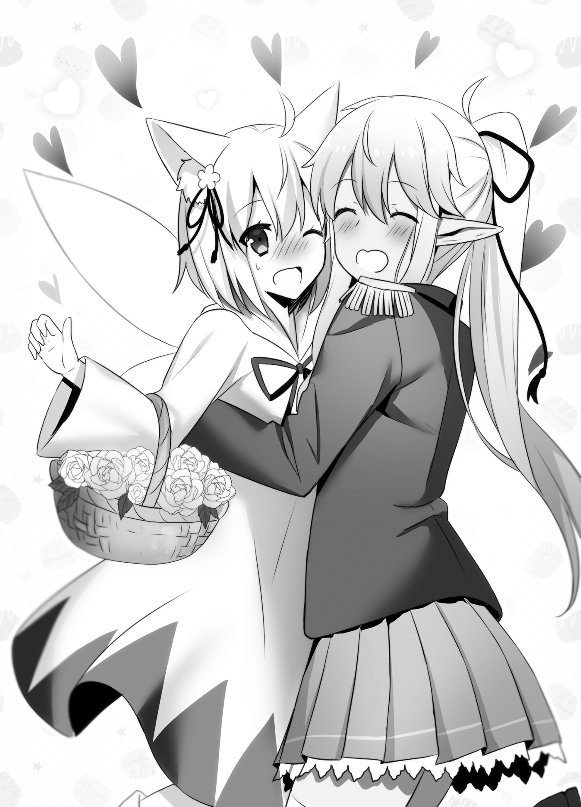
“...It’s still only noon, you realize, clergyman,” I said. “Is this Merula?”
“Hello, King Souma,” the hooded Merula waved to me cheerily.
It was Merula, right? It would be a problem if people found out she was a high elf, so she was probably trying to keep a low profile.
Souji knocked back his drink, and said with glazed eyes, “Whew... It sure is a festival. Don’t be such a stiff. Aren’t you out on the town with Aisha and Tomoe? You’ve got a beautiful flower on each arm, don’t you?”
“Well, yeah... Have to spend time with the family, you know.”
The reason I was heading out in secret today was to survey the castle town, but also to have a date with Aisha.
Though I had... um... developed my relationship with Liscia, I hadn’t laid a hand on any of my other fiancées yet. That was to prevent a troublesome birth order of the children, in order to prevent it developing into a succession issue. Especially with Roroa, who was in the dicey position of being the sovereign princess of a former enemy state; for her sake, and the sake of the child who would eventually be born, I couldn’t go laying a hand on her yet.
It probably wouldn’t be an issue if I laid a hand on my secondary queen, Juna, whose children wouldn’t have the right to inherit, or on Aisha, who was from a long-lived race and would have trouble conceiving to begin with, but they were holding back out of consideration for Roroa.
Honestly... they were all such lovely women.
Well, the result was that Liscia now had my other fiancées asking her to, “Hurry up with the heir already,” and she’d complained to me, “I swear, the pressure is making my stomach hurt.”
...I kind of felt bad for her.
Ahem... Anyway, even if I couldn’t lay my hands on them, it was important that I still do other things with Aisha and the others.
When I explained that to Souji, he said, “Hmm. Must be tough having to be a family man when you’re so young,” as if it was none of his problem, and then he knocked back his mug and polished off the rest of his wine as if rubbing it in my face. “Pwah!”
“Don’t you think you’ve had more than enough?” I asked.
“In Lunarian Orthodoxy, wine is sacred. In other words, by pouring this liquid into my body, I’m accumulating virtue.”
“That absolutely sounds like the excuse of a drunkard,” I informed him. “You really are irresponsible.”
“But it’s convenient for your people that I’m so irresponsible, right?” Souji grinned.
...Honestly, this octopus-headed old man.
I shrugged my shoulders. “Well, yeah. I mean, Hakuya’s plan is to use you to sever the believers from the homeland.”
“Well, you scratch my back, I scratch yours, Your Majesty. I’ll slack off with everything I’ve got.”
“I’m counting on you,” I said. “Now then, I should get back to Aisha and Tomoe.”
“Sure. May God’s protection and peace be upon you and your family.”
Hearing the delinquent bishop’s prayer behind me, which it was hard to know how serious he was about, I headed back to where Aisha and Tomoe were.
Epilogue: Towards the First Trip Abroad
1st day, 4th month, 1,547th year, Continental Calendar
It was the day after the Lunarian Orthodoxy’s Spring Announcement Festival was held.
The Spring Announcement Festival yesterday had been pretty lively, so the castle town would be busily cleaning up after it today. I was spending the day in the governmental affairs office, staring down a single piece of paper.
Liscia, who had just come into the room, looked suspiciously at me and asked, “Is something the matter, Souma?”
“Hmm? Oh, I was looking at this.” I showed Liscia the piece of paper I had been staring at.
The piece of paper had three characters, or symbols, something that I couldn’t make sense of, lined up on it. Starting from the left there was “an arrow-like triangle pointing to the left, combined with a square;” “two vertical lines and something made with a vertical line with five horizontal lines crossing it;” and “an umbrella-shaped symbol.”
Liscia looked sideways at the piece of paper I’d given her. “What’s this?”
“It’s apparently a portion of the Lunalith oracle that Merula saw.”
Merula Merlin had come along with Souji Lester, the bishop we’d invited as a countermeasure against the Lunarian Orthodoxy. Her research primarily focused on spirits and magic, and her long years of research had produced an incredible wealth of knowledge, so I had welcomed her with open arms.
Now Merula was at Genia the overscientist’s laboratory where there was all sorts of equipment available.
It seemed curse ore, which absorbed magic, was a very interesting subject of research for Merula. She and Genia were spending day after day together, engrossed in their research.
What sort of chemical reaction would the meeting of overscientist and magic researcher have on this country? I was kind of looking forward to it, and kind of worried...
Something had happened the first time I’d met Merula.
The oracle she’d said had appeared on the Lunalith came up in conversation, and when I asked her for details, Merula shook her head in disappointment.
“They call it an oracle, so I think what appeared was text; but it wasn’t in a writing system from any country in this world, so I couldn’t figure out what it said. If I’d had a little more time, I might have at least been able to figure out if they were phonographs or ideographs, but...”
It seemed she hadn’t had the time to properly commit it to memory. Her life had been in danger, so I could hardly blame her for that.
When I asked her if there was anything she remembered, no matter how minor, she’d said, “It really is just a small fraction, but I recall... it went like this...”
And then she’d written these three incomprehensible characters or symbols onto a piece of paper. Merula’s memories were vague, so these probably were exactly as she’d seen them.
In the end, the only thing we knew was that these sorts of incomprehensible characters or symbols had appeared as an oracle.
Liscia seemed to realize something and said, “Ah...! If the writing isn’t from this world, could it be from yours?”
“Yeah,” I said. “That was something I suspected, too, but I’ve got absolutely no idea what they are...”
I couldn’t claim familiarity with every writing system on Earth, obviously, but I could at least say that in more than a decade of living in Japan, I had no recollection of seeing this kind of writing (?) before. The one in the middle might look a bit like the kanji for “pray” or “samurai” if you looked at it the right way, but as for what the arrow-like one that came before it, and the umbrella-like one that came after it were... I had no idea.
I gave up and put the piece of paper away inside the governmental affairs office’s desk. “Well, even if I could read just three characters of it, it wouldn’t do me any good. I can’t neglect my duties just because I’m curious about it, after all. Let’s forget about it for now.”
And so, Liscia and I got started on my paperwork for the day, but... I had one of the consciousnesses I had split off thinking about it.
Events sometimes took place outside the Kingdom of Friedonia. If something bothered me, when it was a domestic matter, I could bring on new people, assign personnel to the issue, and assign a budget to get it investigated. I had my position as king, after all.
However, when it was in another country, I couldn’t investigate.
If it was something the relevant country had already investigated, it was possible I might acquire the information through diplomacy or espionage. However, if they hadn’t investigated it yet, I had no means of acquiring information about that matter. Because it was another country, I couldn’t dispatch a team to investigate, either.
What if, included in that information this country couldn’t get its hands on, there was something that could decide the fate of our own nation? What if we found out about it too late? Whenever I thought about that, I felt unable to sit still.
The world was not complete with just one country. Especially if I was staying inside the castle, it was only natural that there would be things I couldn’t find out that way. I still... had so much to learn about this world.
I need to learn more. Much more, about many different countries...
While swamped with government work, that was what I thought about.
◇ ◇ ◇
It was a mysterious space.
It was as if I were in an abyss where no light seemed to reach; or perhaps I had been thrown out into deep space, in a place where I was unable to tell up from down.
I was floating in the middle of that space.
I could breathe properly. But my thinking felt hazy somehow.
Oh... This is probably a dream. I’m in a dream world.
Sometimes while dreaming, I would realize it was a dream.
When I was sleeping at something like a kotatsu, where it was hard to fall fully asleep, I would realize it was a dream and think that I needed to wake up quickly, see a dream of waking up, realize I was dreaming again, dream of waking up... and it went on like that. That was close to how I felt right now.
While I was drifting along in that dozing state, a light suddenly appeared before me.
The light gradually grew larger, eventually reaching many tens of times my own size. The light that grew to a massive size eventually began to form into something. As it took form, the once strong light gradually weakened. And then...
What appeared before my eyes was one massive silver dragon.
Its sense of presence was overwhelming. It had curled horns like a goat. Claws and fangs that looked like they could rend steel. Powerful wings spread wide. Its body was covered with a smooth silver fur, and its blue eyes seemed gentle somehow. It was a dragon that was masculine, and yet felt motherly.
I had been told that wyverns and dragons were completely different before, but... now I could understand. This creature was so dazzlingly divine that it felt absurd to compare it to a wyvern.
“Could it be that you’re... Mother Dragon?” I asked.
It was a hunch. I had heard of this before. They said there were sentient dragons living in the Star Dragon Mountain Range, and they were ruled by a beautifully massive white dragon. The dragon before my eyes was so beautiful I would have described her as a silver dragon, not a white one, but she fit the image of Mother Dragon perfectly.
Mother Dragon neither confirmed nor denied, but her unswerving eyes that stared into mine told me the answer was “yes.”
Then Mother Dragon stretched that long neck of hers. Even just her head on its own was incredibly big, and if she had felt like it, she could easily have swallowed me whole right there. I panicked a little, but my body didn’t move, as if it was sewn in place.
Fortunately, Mother Dragon’s head didn’t open its mouth as it approached, and her large nose just came up close to my chase. Then she gently inhaled through her nostrils. We stayed like that for a short while, and then Mother Dragon slowly pulled her head away from me.
“You who have a familiar smell,” she spoke.
Huh?! I thought, shocked.
I heard a voice. It had the tone of a gentle elderly woman. Was this Mother Dragon’s voice, maybe? I thought that it might be, but she hadn’t opened her mouth.
“You who have a familiar smell.”
I’d heard it again. Yes, I definitely felt like it was coming from Mother Dragon’s direction.
“This... voice that seems to be speaking directly to my brain, is it yours?” I asked.
Mother Dragon looked as if she had nodded. “This is the only way we can talk when in dragon form.”
“That’s interesting...”
What a mysterious ability it was. I didn’t know if it was communication magic or perhaps telepathy, but, well, this was a dream, so anything worked, I guess. But still... having a conversation with Mother Dragon in my dream was like something out of an old fantasy movie.
“...Could it be that you’re showing me this dream?” I asked.
“No,” she spoke. “This is a dream, yet it is not a dream. By synchronizing our consciousnesses, I gave birth to a pseudo-dream, and thus was able to create a space for us to talk like this.”
Mother Dragon explained all that as if this were all very natural.
Synchronization of consciousness, pseudo-dreams... The scenery was like something out of a fantasy movie, but the vocabulary coming up was awfully systematic. It was almost like she was familiar with science fiction.
I had heard there were intelligent dragons in the Star Dragon Mountain Range, and I had assumed that intelligence was just enough that they could speak like humans, but maybe their intelligence far transcended that of the races of mankind. If that was the case, what an unfathomable country they were.
“...So, Madam Mother Dragon, why is it that you’ve arranged for us to meet this way?” I addressed her as I would a queen, doing my best to feign composure.
Even though I’d asked just to see what she’d say... I had some idea why she had contacted me.
It had to be the Mechadra, the thing which Genia had gone and made out of the bones we’d excavated. If the Star Dragon Mountain Range got angry at us, saying, Don’t play with the remains of our kind, our country would have no choice but to offer an earnest apology. Meeting a real dragon for the first time, I was able to reaffirm one thing for myself: We had to be sure we never made enemies of them.
It was said that the monster that a dragon’s remains could turn into, a skull dragon, was able to destroy an entire country, wasn’t it? That probably meant that dragons had that much potential to begin with. It helped me to understand why even at the height of their power, the Empire hadn’t been able to lay a hand or a foot on the Star Dragon Mountain Range. Or rather, it was reckless that they’d ever decided to pick a fight with beings like this in the first place.
While I was feeling a cold sweat running down my back, Mother Dragon seemed to be smiling slightly.
“I have nothing to say about that.”
“Huh?!” Did she read my mind?!
“I told you, this is a place created by the synchronization of your mind and my own. Even without speaking, you should be able to hear my voice.”
“...” ...So we can communicate just by thinking, is that it?
When I chose to think what I wanted to say, without putting it into words, Mother Dragon nodded.
Well, damn. We weren’t just having a heart-to-heart; what was in our heads was open to the other party.
There could be no fairer place to negotiate, but it meant that I couldn’t lie to her, either. No, maybe as great as Mother Dragon was, she was good enough to tell lies in her own heart? When I thought that, Mother Dragon shook her head.
“Even I cannot do that. No creature can lie in their heart.”
“Is that right?” I asked.
“Yes. Also, you don’t need to say things out loud, you know?”
“No... I find it a bit unsettling, so please let me speak out loud.”
This was a space where nothing could be hidden. I decided to ask her about it straight out.
“So, about the Mechadra... you were saying you had nothing to say about it?”
“I have no intention of telling you what you can and can’t do with remains when the soul has already departed, and, on a physical level, the bone had been replaced by stone.”
“...Even if they were the bones of one of your kind?”
“You people put the fossilized remains of your own ancestors on display, too,” she said. “I can’t say I have no reservations about it, but it is unavoidable. All living beings eventually die, and then rot away. Animals, plants, humans, and dragons alike, we all return to the soil in the end. In that case, are we to lament that as we tread the earth, we kick those who were once our brethren?”
I was surprised. Even though she was an object of worship, Mother Dragon spoke in realistic terms. Also, if her mention of returning to the soil was in reference to being broken down by microbes, I really couldn’t afford to underestimate the dragons’ knowledge.
“If it’s not about issues with the Mechadra, why have you set up this meeting?” I asked.
Mother Dragon narrowed her eyes a little. “You who have a familiar smell, King of Elfrieden and Amidonia, Sir Souma Kazuya. I would like for you to come visit the Star Dragon Mountain Range.”
“The Star Dragon Mountain Range?” I asked.
Mother Dragon nodded quietly. “In the near future, we will hold a ceremony for the young dragons of the Star Dragon Mountain Range to form ‘riding contracts’ with the knights of the Nothung Dragon Knight Kingdom. I would like for you to participate in that ceremony.”
“Huh?”
I was going to participate in the dragon knights’ ceremony? ...Wait, didn’t the Star Dragon Mountain Range have no diplomatic relations with anyone outside of the Nothung Dragon Knight Kingdom? When I tried to ask for more details, Mother Dragon’s body began to shine like when she had first appeared. It was so bright, I squinted my eyes.
Just before her form vanished, Mother Dragon left me with these words:
There is something I wish to entrust you with.
◇ ◇ ◇
When I opened my eyes, I was on a bed in a dark room.
I looked around with my mind still hazy. It was probably still night. It was dark, but the moonlight streaming in through the window allowed me to make out the inside of this neat and tidy Western-style room.
This is... Oh, right. I’m in Liscia’s room.
Last night... or rather, every night lately, unless I was especially busy with work... I’d gone to sleep and woken up in Liscia’s room. Of course... well... that was so we could do a lot of fooling around.
When I looked next to me, as expected, I found Liscia’s sleeping face. It was hectic the next morning if we did it in the governmental affairs office, and when it came to my room, half of it was my doll-making workshop, and the other half was where we spent time as a family, which made it awkward; so, as a result, we were using Liscia’s room every night.
“Nngh...” Liscia, who had been lying on her back next to me, asleep and naked, seemed to lift her head up, but then rolled onto her side. Then, slowly opening her eyes, she rubbed the sleep from them and looked at me. “Mmm... Souma?”
“Sorry. Did I wake you?”
“...No. It’s fine. What’s up?”
“Oh... I just had a kind of incredible dream...”
“A dream?”
That was when it happened.
Ohhhhhhhhhhhhhh...
Suddenly, there was a sound like that. It was a mysterious sound, almost like a siren, or perhaps the howling of some creature. We could hear it from a considerable distance, so it must have been at a very high volume, but it didn’t make our ears ring at all. It wasn’t going to wake those who were asleep, probably. I had never heard it myself before, but I imagined it was like the singing of whales.
I put on my shirt, and pulled on a pair of pants, then got out of bed and went over to stand by the window. When I did, I saw a large shadow in the sky flying away to the northwest.
“How unusual,” said Liscia. “That’s Mother Dragon on one of her sightseeing flights.”
Liscia stood next to me, naked except for the blanket wrapped around her.
“Sightseeing flights?” I asked.
“It’s my first time seeing it myself. On rare occasions, there are times when Mother Dragon flies around the continent. She doesn’t do anything in particular, but the Mother Dragon worshipers say that good fortune comes to those who see her out on her sightseeing flights.”
“Good fortune... huh.”
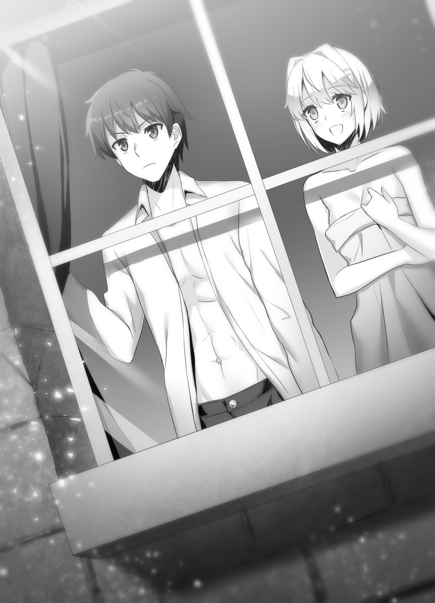
Liscia seemed to think it was a coincidence, but when I considered the dream I’d just had...
It was a dream, and yet not a dream... Is that it?
I had a premonition that something was about to happen again, and I let out a small sigh.
◇ ◇ ◇
The next day...
While I was still concerned by the events of last night, I was working like usual in the governmental affairs office when an exhausted Prime Minister Hakuya came in.
“What’s wrong?” I asked. “You look horribly tired.”
Hakuya walked over, and then said to me with a tormented look, “Your Majesty... Could I ask you to get away from the castle for a while?”
“...Come again?”
Get away from the castle? He was telling me to get out of the castle? I was kind of the king here, you know?
“You’re overthrowing me?” I asked. “Really, Hakuya, if you want the throne, it’s okay, I don’t mind letting you have it.”
“Don’t talk nonsense. I don’t want that thing.”
“‘That thing’? Now listen...”
“It’s fine. Just listen. Just recently, you announced the date of your wedding ceremony, right?”
When Hakuya asked me that, I nodded.
The other day, I’d announced that I, who was still just a caretaker who had not formally ascended the throne yet, would carry out the coronation ceremony which would make me the fourteenth king, along with my wedding ceremony with Liscia and the others, at the end of this year. I had decided to do it this way because handling the big events all at once would be easier on the national treasury.
However, Hakuya said it was causing a problem.
“The castle is now being flooded with proposals from nobles, as well as from the kings of medium-sized and small states in the Union of Eastern Nations, all of whom want to form marital ties with you, sire. They’re hoping to slide in now, before the marriage ceremony happens.”
“It’s a last minute rush of suitors, then?” I said. “Can’t you just refuse them?”
“We could, but... these are all houses whose position makes it hard to refuse when they say ‘Even if you are going to refuse, we would like to meet with you at least once before you do.’ Recently, the number of marriage proposals brought to the castle has been on a rising trend, and the section responsible for them is about ready to burst at the seams.”
“...There are that many people sending me marriage proposals?” I asked in trepidation.
“No, they aren’t just for you, sire. The single men at your side who are seen as having promising futures, every one of them, have been receiving a fairly large number of marriage proposals, too.”
So if they couldn’t marry into the royal family, they at least wanted to marry a retainer with a promising future. That was probably an easier challenge for them to clear than becoming a member of the royal family, after all. Honestly... if you were to say that this was all nobles ever did, it would be true, but... still, it was impressive that they could keep it up like this.
“Incidentally, the most popular of your retainers is Sir Poncho,” Hakuya said.
Poncho? Now there was a surprise.
“Not Ludwin, the handsome captain of the Royal Guard?”
“It’s true, Sir Ludwin is incredibly popular, but the House of Arcs is a great house, and the only people who can propose to him are of the nobility and the knightly class,” said Hakuya. “On that point, Sir Poncho is of low birth, and so even common mercantile families send marriage proposals to him. Furthermore, while Sir Ludwin feels out of reach, many women seem to think they could easily seduce Sir Poncho.”
“...He’s being taken lightly, huh.”
If the marriage proposals were piling up for Poncho, that meant he was popular, too. Though he was pudgy and rotund, he was also a gentle and considerate young man. More than that, his food was delicious. On top of that, he had led the country to a solution for its food crisis; and if you considered the way he was almost worshiped as a god of food in the Amidonia Region, there had to be a lot of women who would want to marry him.
Poncho was known for giving ground when pushed, which they had seen from his appearances on the broadcast programs. For any woman even slightly confident in her appearance, it might not have been unreasonable that they thought they could push past his defenses with sheer momentum. In point of fact, Poncho was not very good at fending off those sorts of advances.
Hmm... I was happy to hear that a good retainer like Poncho was a hit with the ladies, but I was hoping he would continue doing good work for me in future, so I didn’t want anyone too weird catching him.
“Have you taken countermeasures?” I asked.
“Yes. I have already asked Madam Serina to act as Sir Poncho’s assistant. She attends arranged marriage meetings with him, and drives off women who approach him purely out of personal ambition.”
Oh... No need to worry, then. If Serina was there as Poncho’s assistant, it would probably be fine.
There were some issues with Serina’s personality, but she was extremely graceful and beautiful. If she was at his side, the women who were only a little confident in their appearance, and who thought they could seduce him, would back down.
I had often asked her to serve as Poncho’s assistant before this, but Serina always said things like, “When I go to such efforts on a gentleman’s behalf, I hope he will get his act together a little more. I am working very hard, so please, treat me to a meal again sometime.”
Though she complained, and it was obvious she was only doing it because she wanted his food, she seemed to be proactive about looking after Poncho. Poncho loved both to eat and to cook, and Serina was hooked on the junk food from Earth that he and I were developing together.
Serina seemed unaware of it because she had let her sadistic tendency to bully cute girls get out of hand, but it felt like he had completely tamed her with food. He was a timid man you couldn’t leave alone, and she was a strong-willed woman who tended to meddle, so they got along well and... Wait, huh?
“Serina attends Poncho’s marriage meetings, right?” I asked.
“Yes. I hear that many women excuse themselves when they see what the woman standing next to him looks like.”
“Isn’t that like... Serina’s unconsciously ‘sheltering’ Poncho?”
“...”
...
We looked at one another, awkward looks on the faces of liege and vassal alike.
...Yeah, it was best we not get involved in this matter. It would be uncouth for us to butt in and say anything. For the moment, I decided to change the subject.
“Ahem... Anyway, I’ll bet it’s not just Ludwin and Poncho, is it? You must have a significant number of proposals coming your way, too, don’t you?”
Hakuya was handsome, and he was the closest of all the men close to me. I couldn’t imagine the ladies and nobles of the world would let him get away. When I brought it up, Hakuya got a look on his face like he had bitten into something unpleasant.
“I... have no intention of taking a wife just yet.”
“It’s not that you aren’t interested in women, though, right? Are you one of those guys who thinks marriage is too much of a hassle?”
“No,” said Hakuya. “I do intend to have a wife and children some day, but I want to find and choose a partner for myself. I wouldn’t want someone else to force a marriage on me.”
“...You’re saying that to me?” I asked.
For Liscia and me, our betrothal had been totally forced on us. Even with Aisha and Juna, they’d both initially approached me with other motives because of their positions; and when it came to Roroa, she had brought her whole country with her so that she could protect the people of the principality through marrying me. I hadn’t met a single one of them in an ordinary way.
When I pointed that out, Hakuya bowed his head to me, more flustered than I would have expected from him. “I apologize. I didn’t mean to speak ill of your betrothals, sire...”
“It’s fine. I mean, in my world, the majority of people thought the way that you do.”
In Japan, marriages were generally for love and with the consent of both parties.
In this world which hadn’t managed to throw off the feudal system, the higher their position in society, the less freedom people had in that regard. In particular, when it came to the marriages of the knights and nobles, their meaning as a bond between houses was majorly important. Like with Ludwin and Genia, or Hal and Kaede, there were cases where the houses were already associated with one another, but those were rare exceptions. In most cases, the higher up you went on the social ladder, the more the house’s expectations determined one’s marriage choices.
Though, that said, if someone had enough authority, like I did, it was an issue that could be dealt with. It had come up with my betrothal to Juna, but if we had arranged to have her adopted into a noble family, it would have been possible to adjust the status difference between us.
In Hakuya’s case, he was the Prime Minister of this country, so he could do something like that. So, in this case, it was an issue with Hakuya’s views on marriage.
Well, if there was one thing I could say, it was that no matter how it got started in the first place, love was love. My bond with Liscia and the others was so deep now that I couldn’t imagine parting with them.
“Hey, some loves have started in a relationship that was forced on people, you know?” I asked, speaking fondly of my own loved ones.
Hakuya looked taken aback, then smiled a little. “...I suppose you’re right. When I see you and your family, sire, I start to think that maybe it would be all right.”
“But for now, you still have no intention of marrying anyone?”
“I apologize.”
Hmm... Well, if he wanted to wait for his ideal woman to appear, I supposed that was an option. Maybe he had already met someone like that, and was engaged in a one-sided love right now.
“But as your king, let me say, you had better start training your heir in case the worst should happen,” I said. “I’m sure you’d like to be able to settle into an easy retirement nice and early, too, right?”
“That’s true. I think I’ll look for a good time to take on an apprentice.”
“Oh, I guess an apprentice works, too. Come to think of it, you’ve been teaching Tomoe, haven’t you?”
Tomoe was my little sister by adoption, and I loved her dearly. Recently she had been learning reading, writing, and arithmetic from Hakuya, and he was apparently teaching her this country’s history, too. I’d heard that she was an enthusiastic learner, and Hakuya was responding to her by becoming an enthusiastic instructor.
When I brought it up, Hakuya smiled wryly. “I gave in to your little sister’s drive to be of help to her big sister. Though she is not especially clever, she does have passion, so I believe she may become an accomplished individual given time. Though, that said, I have no desire to place my heavy burden on your little sister’s shoulders.”
“Haven’t you already turned into a doting teacher?” I asked.
“My opinion is based on a calm evaluation.”
Hmm... Well, if Hakuya was thinking about this stuff in his own way, that was good enough, I guess.
“Hey, wait! How did we get onto this topic again?” I asked.
“From talking about how we’re swamped with marriage proposals for you, sire,” Hakuya said. “And on that note, I want you to get out of the castle for a while. If you are not present in the castle, it is easy to refuse the nobles who insist on you ‘just meeting them once.’”
Oh, right. If I wasn’t present, I couldn’t meet them even if I wanted to. His plan was to be evasive and avoid giving any straight answers while we waited for this wave to subside, no doubt.
“But what about my government work in the meantime?”
“Fortunately, there are no pressing concerns, and the country is stable right now. For your ordinary government work, you can use that creepy ‘Factory Arm’ machine of yours and it will handle the job just fine, won’t it?”
“Don’t call it creepy,” I said. “Well... I guess you’re right.”
He was talking about the human arm-type manipulator that Genia had developed: the Factory Arm #1. By attaching the Factory Arm #1, which could move like a real human arm, to a mannequin, I was able to perform my government work from a distance. It was creepy to look at, so it wasn’t popular with those who had to visit the room, like the bureaucrats or the chamberlain, but it was a very handy thing to have.
It was true that, so long as I had it, there was no need for me to stay in the castle.
“So, once I’m out of the castle, what are you expecting me to do?” I asked.
“Well, in order to provide an environment where it’s easy to shut out nobles who want to meet with you, while also being closed off and easy to secure, I was considering a short-term enrollment in the Royal Academy or Royal Officer’s Academy for you, but...” Hakuya pulled out a single letter. “Now that something like this has arrived, I believe I will send you abroad.”
“Abroad?” I inquired, looking at the letter. There was a dragon crest on the wax seal.
Hakuya bowed his head. “I took the liberty of opening it and perusing the contents. It is a letter of invitation to the Contract Ceremony in the Star Dragon Mountain Range.”
“Madam Mother Dragon sure works fast, huh.”
“Hm? What do you mean?”
Hakuya looked at me questioningly, so I explained to him what had happened last night. When Hakuya heard I had spoken to Mother Dragon in my dreams, he had an excited look on his face that I didn’t often see from him.
“What an honor that must have been!”
“You seem awfully high strung. Hakuya, are you one of those Mother Dragon worshipers?”
“Oh, no... It’s true that my family were Mother Dragon worshipers, but I’m not that pious myself.”
“Okay, then what has you so excited?” I asked.
Hakuya shrugged his shoulder exasperatedly. “The only nation the Star Dragon Mountain Range has formed diplomatic relations with is the Nothung Dragon Knight Kingdom, but there are rare occasions when Mother Dragon will make an exception and invite a specific individual to have them form a riding contract with a dragon. From what I’ve heard, the first king of this country was also invited to form a contract with a dragon.”
Oh, the first king, who’d been summoned from another world like me.
Bringing together the various races, founding the Elfrieden Kingdom, forming a contract with a dragon... he’d sure acted a lot more like a hero than I ever had. Excel probably knew all about those times, so maybe it would be good to talk to her about his achievements at length sometime.
“Well, unusual as it is, is it really something we should be in such a rush to go do?” I asked.
“There is something in common between you and the first king, sire. You were both summoned from another world. That’s why, for some, you remind them of the first king. If you manage to form a contract with a dragon there like the first king did, the number of people who view you and the first king in the same light will increase. If the people respect you more, the country will become even more stable.”
“I’d be borrowing the authority of the first king, then,” I mused. “That sounds like it’d lead to inflated expectations, and I don’t like it.”
“Be willing to put up with that much, please. You are doing your job as a ‘king,’ but your title as ‘hero’ is being left to rot. In order to avoid losing to the Empire or the Orthodox Papal State in terms of dignity, considering that both of them have saints, I’ve been thinking we need something prestigious.”
“I get what you want to say, but... don’t get your hopes up too high, okay?” I hedged. “It’s not guaranteed that I’ll be forming a contract with a dragon. I mean, I might only have been called there as a guest of honor.”
Having warned Hakuya, I rested my cheeks on my palms and thought about it. For a start, if I were to assume it was already decided I would be going to the Star Dragon Mountain Range... then the next thing to decide was who I would take with me.
“...So, there you have it, it’s been decided I’m going to the Star Dragon Mountain Range.”
It was a few hours later. I had gathered my companions in the conference room for the announcement.
Present were my four fiancées, Liscia, Aisha, Juna, and Roroa, as well as Prime Minister Hakuya, Captain of the Royal Guard Ludwin, Finance Minister Colbert, my honorary little sister Tomoe, and the maids Serina and Carla, for a total of eleven people, including myself.
“You’ll be going out of the country, right? Are you going to be okay?” Liscia asked, sounding concerned, so I nodded.
“I’ll have the Black Cats watching over me from the shadows along the way. Mind you, I really can’t have them enter the territory of the Star Dragon Mountain Range with me. Still, once we’re in the Star Dragon Mountain Range, there probably isn’t anyone who’d try to mess with us. Besides, I’ve been given permission to bring a few companions with me into the Star Dragon Mountain Range. Hakuya, how many was the limit again?”
“Up to five was what the letter said.”
Nodding in response to Hakuya’s answer, I turned to face the rest. “That being the case, I want to bring about five people. We’re going incognito, so I don’t want to stand out, but it’s outside the country, and we don’t know what might happen. That’s why, as much as possible, I want people who are capable warriors. Aisha, I definitely want you with me.”
“Yes, sir. I will protect you with my life, Your Majesty.”
“That’s no good,” I said. “You’re already recognized by the people as a candidate to become my future second primary queen. I know it’s weird for me to say this when I’m the one who needs protecting, but don’t say you’ll give your life for me. Make sure you protect yourself properly, too.”
“Y-Yes! Understood!” Aisha bobbed her head up and down, nodding.
Next I looked to Liscia. “On the other hand, the one person I can’t take with me this time is Liscia.”
“...Can you give me a reason?” Liscia asked with a look of discontent on her face. She clearly wasn’t satisfied, but she was willing to hear me out first.
“If I’m the top authority in this country, you’re number two,” I said. “We estimate the trip abroad will last about a month. We can’t have the top authority and his number two both away for that long. I’m sure there’s no risk to our lives, but think what would happen if something delayed our return. In the event that happens, I need to have left behind someone who can run the country for me.”
“...You’re right. It’s unfortunate, but... I can accept that,” Liscia said with a sigh.
I regretted it, too. She was a reliable girl, and I really did want to bring her.
Liscia brought a hand to her chest, as if trying to shift her mindset. “I’ll hold down the fort while you’re gone. In exchange, can you try not to be too reckless?”
“Yeah. I’ll be relying on you.”
With Liscia having accepted it, I turned to Juna next.
“As for Juna, who can handle both fighting and intelligence gathering, I’d really like to have you along, but we can’t take you off the educational program for too long, now can we?”
“...That’s right. It’s a shame.”
“Oh, oh! Me! Me! I wanna go!” Roroa raised her hand and started hopping up and down trying to get my attention.
Colbert immediately pinned her arms behind her back. “Y-You can’t, Princess! We’ve expanded to so many different enterprises, I need you here to help manage them all! Besides, you have to appear with Juna on the educational program, don’t you?”
Roroa’s shoulders slumped. “Aw... but I wanted to go on vacation with Darlin’, too.”
“It’s a trip abroad, okay?” I said. “We’ll all go on a family vacation together eventually.”
“We’d better, darlin’!”
Of the remaining members, I looked to Carla.
“Carla, I want you to come as a bodyguard, too.”
“M-Me?!”
“Out of everyone here, I’m looking for someone with martial ability and nothing important to do, so you’re the most appropriate choice.”
“U-Understood, Master!” Carla cried.
“Carla, take care of Souma for me, would you?” Liscia walked over to her and took her hand gently.
Carla let go, took a step back, and saluted her. “Leave it to me, Liscia. I swear my master will come back unharmed!”
While watching that exchange between two friends out of the corner of my eye, I addressed the group.
“For the rest, they’re not here, but I think I’ll take Hal and Kaede. Hal’s martial prowess comes guaranteed, and I know him well. Kaede’s a powerful earth mage, too, after all. For now, I think I’ll take those four as my companions. Everyone, work on that assumption and...”
“U-Um! Big Brother.” Tomoe hesitantly, but using a clearly audible voice, raised her hand.
“Tomoe? What is it?” I asked.
“T-Take me with you, please!”
“““Whaa?!””” everyone cried out in surprise.
The timid Tomoe, who did everything she could to stay out of the way of the adults in the castle, was suddenly acting aggressive. Maybe the only one who wasn’t surprised was her teacher, Hakuya.
“Um... it’s outside the country, you know?” I said. “It could be dangerous, too...”
“I-I want to see more of the world! Not just the castle. I want to see more of everything, and to eventually be someone who can support my big brother and sister!” Tomoe clenched her fists tight as she made her appeal.
We had been protecting Tomoe up until now, but she’d said she wanted to be able to support us. Tomoe was eleven years old now. If she’d been a boy, it’d be a period in her life where she’d still be doing stupid stuff; and as a girl, she was about to hit a sensitive period. I was happy to see this change in her as a member of the family, and also concerned.
“Sire...” Hakuya said. “If possible, I would like you to take your little sister along.”
I was still at a loss for words.
“During this period, I have judged that broadening her horizons will help her to grow,” he continued.
“Well sure, even in my world there was a saying, ‘If you love your child, let them go on a journey,’ but still.” I crossed my arms and thought about what to do.
“Please, Big Brother...” Tomoe pleaded with teary eyes.
When she asked me with those cute puppy dog eyes that reminded me of this old commercial with a chihuahua, I really struggled to come up with my answer.
We had things covered in terms of martial ability. With Aisha and Halbert there, we could respond to almost any situation.
But still... it could be dangerous...
I was conflicted between my concern for her as her big brother and my desire to grant her wish as her big brother. After nearly two minutes of agonizing over it... in the end, I gave in to the earnest look in Tomoe’s eyes and raised the white flag.
“Okay... I’ll allow it. But only after you’ve gotten permission from Tomoko.” That was Tomoe’s mother. “If you can’t get her permission, I can’t take you with me. Also, none of us will be talking to her about this matter. You need to convince your mother on your own. Is that still okay?”
“Yes!” Tomoe energetically nodded.
I don’t know what happened between Tomoe and Tomoko after that. However, in the end, Tomoe managed to convince her.
When Tomoko appeared alongside Tomoe later, she must have been worried deep down. “Your Majesty, please take care of my daughter,” she said, and bowed her head to me resolutely.
It seemed the apple didn’t fall far from the tree. I meant that in a good way, of course.
Well, my companions for the trip were decided.
Off we would go.
Onward to the country of dragons, the Star Dragon Mountain Range.
Afterword
Thank you for purchasing the fifth volume of Realist Hero.
This is Dojyomaru. Because of the generation I come from, Zyuranger is the sentai hero team that I’m most attached to. I wanted a Zyusouken...
Now then, in the web version, this was where the title changed to How a Realist Hero Redeveloped the Kingdom and a new chapter began. From here on, the number of supporting characters in the cast fills out, the number of stories focused on supporting characters increases, and the story turns into an ensemble cast piece. There are an awful lot of characters, and I’m sure I will be causing Fuyu a lot of trouble to come up with designs for all of them, but I hope to continue working together in the future.
It was right just around this point in writing the web novel that illustrator Mizuka Sasa sent a drawing to support me, and I received an incredible map from a person called Tofu-chan-san. It made me aware that all sorts of people were reading my work. There are people who point out typos, missing words, and inconsistencies, too. I’m grateful to everyone.
Now then, a teaser for the next book.
Souma departs for the Star Dragon Mountain Range, but then it turns into a tale of boy-meets-girl that’s unusual for this story. That black girl will be making an appearance, too.
...What am I going to do about the Ensemble Arc? I’ll need to think of a good way to work it in.
Now, I give my thanks to Fuyuyuki for the wonderful illustrations, my editor, the designers, the proofreaders, and everyone who now holds this book in their hands.
This has been Dojyomaru.
Bonus Short Stories
Program Production Conference
Late in the 12th month, 1,546th year, Continental Calendar.
On this day, I called Juna and Roroa in to the conference room in order to hold a meeting about the educational program for the enlightenment of the people that we would be launching in the new year. I was involved with this broadcast program as the planner, Juna was the performer, and Roroa was the sponsor.
“Now then, at its most essential, this program is centered around Juna and Little Musashibo teaching math and other academic subjects to the people through the medium of song. However...” I interwove my fingers in front of my mouth, then said to the two of them, “I think that, on its own, would be weak. People become hesitant to study if it’s boring.”
“Ya got that right,” Roroa agreed. “I like arithmetic ’cause it’s good for makin’ me money, but I dunno when it comes to classical literature and the like. There ain’t no way some third party could really know what the author meant to say.” She spread her hands up in feigned defeat.
Juna chuckled. “Actually, because there’s no right answer, if you can just say something that sounds right, then it is. I find that easier. With arithmetic, even the slightest error in your calculations gives you a wrong answer.”
“Well, some people are stronger in the sciences, while others do better in the humanities,” I said. “I was in humanities, so my opinion is closer to Juna’s. Though history was more my thing than literature.”
“Which do ya think Big Sister Cia and Big Sister Ai are?” Roroa asked.
“They’re both specialized in athletics, I’d say.”
Juna giggled. “No doubt about that.”
It went without saying for Aisha, but, having had Georg as her mentor, Liscia could come up with some meatheaded ideas sometimes, too. Our family’s first and second most powerful warriors might be sneezing right now.
“Well, that being the case,” I said, “studying is something of an annoyance, so to get the people to watch a program that pushes them to do it, I think we need some sort of hook. If all we have is Juna and Little Musashibo singing fun songs, I think that’s maaaaybe a little weak.”
“But isn’t Big Sister Juna popular ’round the country?” Roroa asked.
“Well, yeah, she has incredible popularity as a lorelei. But this is an educational program. It’s important that the way she sings here be fun, not deeply emotional. Also, due to its nature as an educational program, I can’t go dressing her up in pretty dresses.”
“Big Sister Juna’s got too many things chainin’ her down, y’mean.” Roroa nodded in satisfaction.
Well, after all, with an eye to the coming announcement of my betrothal to Juna, shifting her image from “Juna the lorelei” to “Juna the girl who sings songs for children” was part of my intention here.
“I think if we have Juna and Little Musashibo as a set, the kids are sure to watch,” I said. “The problem is the adults. When I consider the literacy rate and level of academic achievement in this country, it’s really the adults that I most want to watch it. Children are flexible when it comes to learning, but adults have their values locked in place already.”
“You’re right.” Juna nodded in agreement. “’I’ve never needed to do it before, so why should I have to start now’... is something they seem likely to say. Especially the ones who need to study the most.”
Yeah, there were sure to be people like she described.
“That’s why, in order to hook those adults, I think we’ll roll out another project I’ve had in the works, too,” I said. “I just found the perfect man for the job.”
“Another project?” Juna asked.
“A hero program.”
Recently, I had uncovered a man named Ivan Juniro who could produce special effects like explosions in the form of an illusion. I was moving forward on the production of a hero program with him at the center.
“Being the cool hero who fights against bad guys is a fantasy for many boys and young men, so there should be demand for a show where women can watch a really cool guy. By combining these two things with an educational program, I want to get them to watch it while they tune in for the hero program.”
That was my impassioned argument, but Roroa seemed doubtful.
“I get what you’re sayin’, darlin’, but I just don’t understand what this hero program thing is supposed to be. Never seen one myself, after all. What’s it actually like?”
“Well... The early tokusatsu shows were about a really strong human with a secret identity easily defeating the bad guys. In ********* Zukin, ****** Kamen, and Kaiketsu *****, they would hide their identities with a cloth wrapped around their face, or a pair of sunglasses.”
“I dunno, for a secret identity, they weren’t hidin’ it very well,” Roroa said.
“...Those were early days, so please overlook the attention to detail on things like that being a bit weak.”
By the way, this was all stuff I’d picked up from Grandpa. He was a big fan of those sorts of tokusatsu heroes, and he’d had a collection of faded posters that were important to him.
“Things developed from there, and heroes who transformed, rode vehicles, and formed fighting teams appeared later, but... I don’t think we can do anything too elaborate with this country’s current level of technology. We should take our lessons from the early tokusatsu shows to start out.”
“I think it sound interestin’, but... makin’ the program’ll be expensive,” Roroa said. “If I can speak as a sponsor here, I’ll be wantin’ some way to make money off this whole endeavor.”
Roroa’s request was only to be expected.
“When it comes to hero programs, there are always tie-in goods,” I told her. “The items the hero uses when he transforms and fights become toys that the children will want. If your company handles the associated merchandise, I think you should turn a tidy profit if the show is a hit.”
“I see... Yeah, I’m thinkin’ we can make this work.” She must have done a quick mental calculation of the profits, because Roroa was grinning in satisfaction.
Meanwhile, Juna wore a pensive look as she asked, “I do think it will catch people’s attention, but... the viewers you mentioned are children, young men, and women, right? You’re missing older men, aren’t you?”
“...Yeah, that would be the problem, wouldn’t it?” That sharp observation had me scratching my head. “It’d be good if we had something to draw in the middle-aged men who are too old to get fired up over heroes.”
“That’s easy,” Roroa said with a blank look on her face. Huh? Easy? Then Roroa suddenly struck a sexy pose and moaned. “If we’re gonna hook old men with somethin’, it’s gotta be sex appeal.”
“Yes, yes, very cute,” I said.
“Hey, quit pattin’ me on the head.” Roroa puffed up her cheeks indignantly.
When Roroa tried striking a sexy pose, she only came off as a kid trying too hard to seem like an adult, but sex appeal, hmm... if I was going to put some of that in a hero show...
“An evil female commander, maybe. Some of them wore pretty sexy outfits.”
“I like it,” Roroa said. “A voluptuous bad girl’d do quite nicely.”
“But who could we have play her?”
When I said that, the room went silent.
If I were looking for someone voluptuous among those close to me, Aisha and Juna both had the figure for it, but the sexy evil commander was a villainous role, not something I wanted associated with a future queen of the country.
I pondered. “Hm, if only I had someone with a great figure, who was willing to wear sexy outfits, who would play a villain if I asked them to... Hey, wait.”
“...Hm?” Roroa asked.
“Um, Your Majesty, isn’t that...” Juna said slowly.
It seemed the three of us had come to the same conclusion.
She’d be perfect!
◇ ◇ ◇
“Achoo!”
“What’s wrong, Carla?” Liscia asked. “Did you catch a cold?”
“Oh, no, I’m fine. Someone must be talking about me.”
Hello, Miss Dran.
Castor’s Marine Diary
Early in the 2nd month, 1,547th year, Continental Calendar — Lagoon City
It was winter, but on this morning, the skies were clear and the temperature was warm. Aboard a single cruiser stopped in the military port at Lagoon City, someone was singing off-tune.
“I’m a sea hardy dragonewt. Instead of flying, the sea is my route. Keep her steady! Keep her steady! Lai-la-la-lai-lai-lai.”
The voice belonged to the former General of the Air Force, Castor, who was currently in the custody of Excel Walter after having taken part in Georg’s rebellion. He was in the middle of swabbing the deck while singing a song that he was making up as he went along.
“D-Duke Vargas, what are you doing?” A middle-aged human man ran over to Castor. He was the second-in-command on this cruiser.
“Huh?” Castor shouldered his mop, and looked at the man sideways. “Can’t you tell? I’m swabbing the deck.”
“That’s a job for the young marines. If a former duke like you does it, it will make the lower officers feel tense and the higher-ranked officers feel awkward.”
Castor responded with a somewhat self-mocking smirk, “I’m a fresh recruit now. Hasn’t Duchess Walter told you to treat me like one, too?”
Under Excel’s custody, Castor participated in training as a common marine by day, and received instruction on the Navy’s operations from Excel by night.
Castor had been bewildered about suddenly having to learn about the Navy at first, but with nothing to do while in the custody of another house, and also because of his deeply ingrained military mindset, he was enjoying the opportunity to serve in a military force, even if there were differences between the Air Force and the Navy.
“Also, don’t call me Duke Vargas,” Castor added. “I’ve been stripped of my family name.”
“Ah... Sir Castor, then. No, but still, you’re also Duchess Walter’s nephew...”
Though Castor had accepted his new position, those around him had not. Because he had formerly been one of the three dukes, and also husband to the daughter of Excel, the top of the National Defense Force (though he and his wife were officially separated), the people here didn’t know what to do with him. The higher up in the chain of command someone was, the more apparent that became.
Castor noted the second-in-command’s response and exasperatedly said, “Don’t worry about it. I’m just Castor now. Besides, I don’t dislike swabbing the deck. When I was in the Air Force, I took care of my own wyvern. It’s something I’ll ride, and be entrusting with my life, so, in that sense, a ship and a wyvern aren’t so different. By cleaning her every nook and cranny like this, I’ll get a feel for the shape of the ship.”
“I wish some of the young marines who whine about having to clean up could have heard you say that,” the second-in-command said with a sigh.
He himself had been a fresh recruit once upon a time, and he had hated his days of swabbing the decks and getting sunburned daily. It wasn’t until much later that it had taught him important lessons little by little. Castor’s ability to immediately understand that was impressive, but no less than might be expected from the man who had commanded an entire army for many years.
Castor rested his chin on the end of his mop which was pressed against the deck. “Besides, if I don’t work, I can’t go out drinking.”
“Is it an issue of money? ...Come to think of it, what were we doing about your salary?”
They had been ordered to treat Castor as a new recruit, but he was technically under Excel’s custody, and wasn’t formally a marine. Naturally, that meant he wouldn’t be drawing a salary from the National Defense Force.
Castor’s shoulders slumped. “I’m living entirely off of Duchess Walter’s pocket money.”
“Um... Is money tight?” the soldier asked.
“No, she gives me a good amount for someone being kept in custody. I don’t have any living expenses living in the Walter mansion, either... But still.”
“Is there something that dissatisfies you?”
“This is Duchess Walter we’re talking about,” Castor said. “She holds it over me. If I don’t take my training as a marine seriously, and I don’t learn how the Navy operates from her, there’s no telling what she’ll say to me. She’d start needling me with a smile on her face, I’m sure.”
“...I understand.”
The second-in-command sympathized with Castor’s situation.
The marines all referred to Excel as Mom out of respect, but they were also well aware that she had a personality that went much too far to simply be referred to as playfully mischievous. She had a beautiful, shapely body that made her look like a woman in her mid-twenties, and she was highly accomplished in both military and political strategy, but only a fresh new recruit who didn’t know her true nature could sincerely be happy to have her call out to him.
Castor let out a deep sigh. “I wish I could go back and warn my younger self who was pining after Duchess Walter: ‘Stop. That woman is more than you can handle.’”
“So you went through that, too, did you, Sir Castor? Every man in the Navy falls for the beautiful Duchess Walter at some point. Naturally, that love never comes to fruition, and only brings agony when they think back to it years later.”
“I know how they feel,” Castor said. “But once in a very long while, some crazy bastard manages to shoot an arrow through her heart. That was how Accela was born, after all.”
“Oh, now that you mention it... No, it’s nothing.” The second-in-command started to say something, then stopped.
Castor grew suspicious and asked, “What? If something’s bothering you, then say it, please.”
“No, um... Your wife is Duchess Excel’s daughter, so there were rumors that you went after her daughter because Duchess Walter rejected you...”
“...Oh. Yeah, I’ve heard those rumors.”
Castor shrugged his shoulders in exasperation. It was true, rumors like that had gone around for a while. Though when word had gotten around about how close he and Accela were... or rather how much she had him under her thumb, the rumors had faded away on their own.
“Well, the truth is a little different. The opposite, you could say...”
“Huh? What does that mean?!”
“It means, well... Let me keep it a secret.”
“Ohhh, now you’ve got me curious.”
Seeing the look of genuine interest on the second-in-command’s face, Castor smiled wryly and said, “Well, how about you treat me to some drinks tonight? If you do, I’ll tell you all about what happened back then.”
“I’ll show you the best place around.”
And so, the two went out for drinks that night.
Incidentally, the place the second-in-command introduced Castor to was the sort where you enjoy talking to pretty ladies while you drink, and this lead to some troubles later, but Castor couldn’t have known that yet at this time.
The Fiancées’ Guarding Techniques
From the end of 1,546th year to the start of the 1,547th year, Continental Calendar
Around this time, the provisional King of Friedonia, Souma Kazuya, was receiving invitations from the kingdom’s nobles to attend banquets and other social functions on an almost nightly basis.
It had been decided that Souma’s coronation and his wedding to Liscia and the others would happen towards the end of the 1,547th year, so the nobles were desperate to slip in women from their houses and have them become Souma’s fiancées, too.
He could turn down the requests from minor houses, but with major houses, he couldn’t ignore them because it risked having an effect on the kingdom’s politics. Souma had to at least attend those events, while gently letting down the nobles who were trying sell him on their daughters.
While doing so, it was important that he have a partner. If one of his fiancées was always at his side, it made it harder for the nobles to recommend their own daughters to him. His three official fiancées, Liscia, Aisha, and Roroa, as well as his as-yet-unannounced fiancée, Juna, each took turns at his side.
“Souma is the king, so we just have to accept that he’s going to need to take other wives for political reasons, both domestic and foreign,” Liscia advised his other three fiancées. “Still, we can’t let a woman with ulterior motives become a queen. We need to guard Souma properly and keep those with a lust for power from gaining a marital connection to the royal house.”
Aisha, Juna, and Roroa nodded.
On this day, Liscia was attending a social function as Souma’s partner.
While there were many women in showy dresses, for some reason Liscia was alone in wearing her uniform.
“...Why are you in uniform, Liscia?” Souma asked.
“It’ll be easier to move around in if anything happens, don’t you think? Besides, my uniform was designed just for me. I can wear it to any party without feeling embarrassed about it.”
“Hm... It’s like a convenient student uniform that you can wear to weddings and funerals, huh?”
“Well, yes, but... don’t you have anything else to say about it?” Liscia puffed up her cheeks a little, which made Souma smile wryly.
“You’re always telling me to act more like a king, but you don’t act much like a princess yourself, you know. I don’t remember ever seeing you in a dress.”
“Urgh, well, that’s because I don’t really like them...”
“I’d like to see you all dressed up, though.”
“...I’ll think about it.”
The two of them were chatting pleasantly. Meanwhile, the women who had come to this social function hoping to marry into wealth watched from a distance, biting their handkerchiefs in frustration.
What’s with that vibe?! It makes me hesitant to talk to him! they all thought.
Liscia’s Guarding Technique: Unconsciously creating an atmosphere that no one else could intrude upon.
On this day, Roroa was attending an influential noble’s birthday party as Souma’s partner.
Even though it was a birthday party, almost all of the nobility held these in banquet format, so about the only difference was that the participants needed to give presents to the house celebrating a birthday.
Incidentally, in Souma’s case, his attending the event already counted as a present, and so he did not have to offer any further gift. In exchange, he had to talk with the noble the party was for. It was an opportunity for the nobles who wanted to send their daughters to be his queens.
However, the little tanuki of Amidonia was having none of that.
Roroa stood in the middle of the hall, spread her arms wide, and raised her voice. “Now then, ladies and gentlemen, I was feelin’ bad about comin’ to this here party without any gift to bring. That bein’ the case, here’s a little surprise darlin’ prepared for all of ya.”
“Hahh!” A person suddenly dropped from the ceiling. He was a muscular man wearing a silver mask and a red scarf. It was the hero who was the talk of the kingdom, Overman Silvan. “Charge! Silvan!”
“There ya have it,” Roroa said with satisfaction. “We brought the super popular Overman Silvan with us.”
The nobles cheered. Silvan was popular with adults, too, and they all tripped over themselves rushing over for the chance to shake his hand. Even the host of the party himself forgot what he was doing and joined them.
As he watched them, standing arm in arm with Roroa, Souma’s shoulders slumped. “Is this country... going to be okay?”
“Mwahaha, this’s great fun,” she cackled.
Roroa’s Guarding Technique: Her frightening ability to set things up in advance.
On this day, Juna was attending a masquerade ball as Souma’s partner.
It was a noble banquet, but the host for this one had had something very specific in mind. He’d had the participants all wear masks and participate in a dance party. The plan was to encourage people to get to know one another better without worrying about the size of their houses or the existence of a spouse or betrothed, but most of the women were here targeting Souma.
Even with a mask on, Souma’s appearance was well known, so he was quickly identified. Now the women would make their move towards Souma... only they couldn’t.
“““...”””
That was because an image of otherworldly beauty was standing by his side.
Between the beauty of her face, which they could discern even through her mask, her beautiful, glossy blue hair, her amazing figure, and her graceful movements, she was like a concentrated mass of feminine appeal, and it made the other women in attendance feel so vastly inferior that they couldn’t even approach.
Meanwhile, Souma was talking to the woman beside him in a slightly worried tone. “Do you think this is okay? We haven’t announced our engagement yet.”
Juna chuckled. “Right now, you and I are just another man and woman wearing masks, sire.”
Juna’s Guarding Technique: Crush the competition with her overflowing grace.
On this day, Aisha was attending a banquet as Souma’s partner.
Here, too, the nobles were watching closely for their chance to build ties with Souma.
“Oh, Your Majesty, it’s a pleasure to—Eek?!” a noble screamed.
“Why, Your Majesty, how good to see you. What do you say, would you care to join me for—Whoa?!”
Every time a noble tried to approach Souma, the woman at his side would project her warrior aura at them to intimidate them. Though she was a beautiful dark elf girl in a silver dress, she made the nobles feel like they were being glared at by a sword tiger, and they couldn’t approach Souma.
Aisha wasn’t even aware of what she was doing; she was just on guard against anyone who approached Souma because it was her duty as his bodyguard. So...
“Hello, Your Majesty,” a woman said. “It’s an honor to meet you.”
“Your Majesty, please, tell me about the war in Amidonia,” another woman begged.
“Oh. No, um...” Souma stuttered.
Because of that, Aisha didn’t use her oppressive aura against young women who clearly meant Souma no harm, and so the women had a surprisingly easy time approaching him.
The women closed in on Souma, convinced this was their chance to make him like them. “Your Majesty, after this, why don’t we go find some place where we can be alone together...”
“...Sire,” Aisha said, tugging on his sleeve.
When she gave him a look with eyes almost like an abandoned puppy’s, Souma couldn’t leave her alone, and he excused himself from the women so that they could go somewhere with less people.
“Are you okay, Aisha? Are you feeling unwell anywhere?”
“...No, I’m fine now. However, let’s remain here a while longer.”
Aisha leaned in close to Souma, begging him to indulge her. She finally had Souma’s attention all to herself, so Aisha was smiling in satisfaction.
Aisha’s Guarding Technique: The ability to switch between presenting herself as a capable warrior and a lost puppy.
This was a battle these women absolutely could not afford to lose.
Fried on the Grill Every Day
Late one night in the 2nd month, 1,547th year, Continental Calendar
On this day, the Kingdom of Friedonia’s Minister of Agriculture and Forestry, Poncho, and the head maid, Serina, had come to Ishizuka’s Place in Parnam Castle together.
This was where the recipes from Earth that Souma and Poncho had recreated were served on an experimental basis, and everyone who worked at the castle was welcome.
However, because the hours of operation were from evening until late at night, in the end, only those who had night shifts were able to go here. Business hours were already finished for the day, and Poncho and Serina were alone inside the shop.
There was a reason these two were here: to fulfill the promise made earlier that day.
“Okay, I’ll make you a toasted sandwich, yes.”
“Thank you,” Serina said.
It was the promise to make Serina a toasted sandwich.
Poncho picked up a cooking tool that looked like two frying pans stuck together. “Though, they’re easy to make, yes. You put a piece of bread on one side of this toasted sandwich maker, place the filling on top, then put another piece of bread on top of that, and then you just close the sandwich maker and cook it on both sides. For the filling, I’ll use the usual ham and cheese, yes.”
Poncho explained as he skillfully prepared the sandwich. Poncho normally came across as a bit dull-witted, but his spirit of adventure when it came to food and his skill in preparing it was nothing short of brilliant. He turned over the sandwich maker, crisping the bread on both sides, removed it from heat when it was just right, then opened the device, took out the sandwich, and cut it into two. Melted cheese leaked out from the sides as he cut it.
Poncho then put it onto a plate and served it to Serina. “Here you go, yes.”
“Oh, this wonderful scent really does stimulate the appetite, Poncho.” Serina looked at the sandwich in an enraptured state that you would never imagine from her usual impudent attitude. Then, picking up one piece, she slowly bit into it. “Hot...!”
“A-Are you all right?! Perhaps you should wait for it to cool a little more...”
“...No, I’m fine. It’s hot, crispy, and delicious.”
Serina munched away at the toasted sandwich. Poncho, who was relieved to see she was all right, explained to Serina as she ravenously devoured the sandwich, “The toasted sandwich is fried in a press, so even bread that’s gone a little stale is delicious served this way, yes. If you cut off the crusts and cook it well, you can seal the filling inside, so they’re convenient for carrying around, yes.”
“It’s a wonderful dish. I enjoyed every last bite.” Serina, who had finished eating, wiped her mouth with a napkin.
Poncho liked seeing others enjoy his food as much as he did eating it himself, so her satisfied expression was a delight for him to see.
Then Serina noticed a sweet smell of some sort. The smell seemed to be coming from a pot that was over the fire.
“...Is something boiling?”
“Oh, that’s right, yes.” Poncho hurriedly rushed over to the pot, opened the lid, and stirred the contents with a spatula. This caused even more of the sweet smell to fill the air. Serina looked into the pot from beside him. Inside there was a green lumpy substance that was thick and boiling.
“Are those... peas?”
“Yes, they are, yes. Peas boiled with sugar, yes.”
“In sugar? It’s not a soup?”
“No. According to His Majesty, it’s called anko, yes.”
“Anko?”
“It seems, in His Majesty’s world, they used this anko to make sweets. I’m currently attempting to recreate it through a process of trial and error under orders from His Majesty, yes.”
For anko, it was standard to use azuki beans, but those weren’t available in this country (though they might have been in other countries), so Poncho was substituting green peas in his attempt to create anko.
While stirring the pot, Poncho added as if he had just remembered, “Come to think of it, one of the most famous dishes to use anko in His Majesty’s world was one called taiyaki, yes.”
When she heard the name, Serina seemed dubious. “Taiyaki... They put anko on fried fish? It doesn’t sound very delicious.”
“Oh, no, it’s not fish, it’s a sweet that’s shaped like a fish, yes. It’s like a toasted sandwich with anko as the filling, or something like that. Would you like to try maki—”
“Unquestionably!” Serina responded eagerly.
Poncho smiled wryly as he laid bread in the toasted sandwich maker like before, put the green pea anko from the pot on it, then placed another piece of bread on top and cooked it on both sides. He split the finished toasted anko sandwich in two, and this time (because they were taste-testing it), they each took half.
“Oh... This is delicious, too,” she said.
“Yes. I think it’s very delicious, yes.”
Serina had an enraptured look on her face, while Poncho smacked his gums in satisfaction and smiled. Once this one piece of equipment was created, it was easy to make them. If the supply of sweeteners like sugar became more plentiful, they could probably be sold in street stalls. That was what Poncho was thinking, but then he noticed a pensive look on Serina’s face.
“What’s the matter, Madam Serina?”
“Oh, it’s nothing... This just tasted so much more delicious than the toasted sandwich I had before, so I was a little mystified.”
“You have a sweet tooth, I see, Madam Serina.”
“No, not particularly, it’s just... it tasted delicious because it put me at ease... or something like that. It’s strange. Even though I felt that both were delicious.”
“Hm...” An idea occurred to Poncho. “Do you think it could be because we shared it? With any food, it tastes better shared with another person than when you eat it alone, yes.”
“...I see.”
It all fell into place for Serina. Eating with another person was delicious. Eating with Poncho was delicious. That was the answer.
“I’m convinced. Well then, so that I can continue to enjoy delicious food at its most delicious, Sir Poncho, let’s continue eating together in future. No, please feed me.”
With that said, Serina gave him a soft smile.
Watching the beautiful head maid who was known as a total sadist smile, Poncho couldn’t help but stare at her for a while in fascination.
On a Corner During the Spring Announcement Festival
The last day of the 3rd month, 1547th year, Continental Calendar
“Granny, I’m here to bring spring!” a child cried.
“Oh, how good of you to come. Here, have a candy.”
This bright, sunny day was the day of the Spring Announcement Festival.
The children dressed up as fairies and handed out flowers to adults, and the adults gave them candy in return. The happy voices of children could be heard everywhere. In the city of Parnam which was celebrating the festival, the Lunarian Orthodox bishop Souji Lester was sitting at a balcony seat and tipping back a glass of wine.
“Sure is peaceful,” he remarked cheerfully. “Wine tastes best when you can drink it in the middle of the day, surrounded by the voices of children at play.”
“You enjoy drinking at any time of day, and you know it,” said the woman sitting across from him who was wearing a hood low over her eyes. This was the high elf, Merula Merlin, who had accompanied Souji to this country. “You’re a bishop, aren’t you, Souji? Is it okay for you to be getting hammered on a festival day?”
“When the bishop’s away, the people will play. It’s best for the believers in this country if I’m not motivated to act on orders from the homeland. I’ve gotta be properly lazy.”
“You can make anything sound innocuous if you word it right...”
While Merula took a sip of her wine with an exasperated look on her face, Souji laughed heartily.
“Why don’t you go join in the festival, then? With your mostly curveless body, I’ll bet you could get them to give you candy.”
“Who’re you saying has the body of a child?! I’m too tall, so it obviously wouldn’t work!”
“Well, if you had the height of a child, too, this place wouldn’t let you drink.”
While mollifying the angry Merula, Souji looked out towards the street.
Maybe because of the festive atmosphere, the people coming and going all seemed excited somehow. It was a peaceful scene, but just how many of them were followers of Lunarian Orthodoxy? In the Orthodox Papal State where they were constrained by the teachings of the church and placed great weight on maintaining appearances, the Spring Announcement Festival had never been this big of an event.
Honestly... It makes you question which of our countries is really the one blessed by God. Souji smiled wryly as he tipped back his drink.
Then he noticed a pair who stood out a little bit from the crowd approaching from across the street.
“It sure is lively,” the girl said. “Oh, Hal, what do you think that stall is for?”
“Whoa, Kaede, don’t pull so hard!”
The young officer with distinctive red hair was being pulled along by the hand by a bespectacled beastman girl with fox ears. It was Halbert and Kaede. These two had been training aboard the Hiryuu until the other day, but they had returned to the royal capital for their first extended vacation in a while.
Halbert scratched his head and sighed. “Honestly, it’s a rare day off, so I wish you’d let me take a break. I’m exhausted from days and days of hard training, okay?”
“It’s because this is a rare day off that we have to use it to its fullest, you know?” Kaede asked.
“Look, that might be fine for you, since you do mental labor...”
“Oh? You aren’t having fun with me, Hal?”
When Kaede asked that with upturned eyes, Halbert looked away shyly.
“I-I never said that...”
“Well, that’s good, you know. I’m always making you follow harsh orders, so I wanted to make sure you have all the fun you can today, you know.”
Kaede wrapped herself around Hal’s arm. When his adorable childhood friend pressed up so close to him that he could feel her body warmth, Halbert wasn’t entirely displeased with the situation.
“...Sigh. If only you could be this cute during training.”
“Hee hee! Then do you want me to cling to you like this in training, too?”
“Stop it. The jealous glares I get from the other guys are bad enough as it is.”
Halbert was with Kaede, who had become like the idol of the National Defense Force, a lot, so he was confronted with jealous glares from the other men on an everyday basis. They knew each other because their families were close, and Halbert and Kaede were both thinking it was about time they got engaged, but Halbert felt a pain in his stomach whenever he thought about having to announce it.
“The dratroopers who serve under me are always teasing me about it, too. It’s a real problem.”
“Hee hee, it just goes to show what a lucky guy you are, you know,” Kaede said playfully.
Halbert couldn’t say anything in response.
Souji, who had been listening in one their conversation, smiled wryly. Hey, Bro, the way things are going, she’s going to have you so whipped in the future.
Souji downed the rest of his glass.
But, well, even the king is so beholden to his fiancées that he has to spend his day off currying their favor. Maybe the women having the upper hand in marriages here is typical of this country. Man, I wouldn’t want that to happen to me.
While Souji was pitying Halbert, Merula looked at him with disdain. “What are you grinning about?”
“Hm? Oh, nothing much. Just thinking that the bachelor’s life is nice and easy, that’s all.”
Then Souji poured himself another glass.

Sign up for our mailing list at J-Novel Club to hear about new releases!
And you can read the latest chapters of series like this by becoming a J-Novel Club Member:
Copyright
How a Realist Hero Rebuilt the Kingdom: Volume 5
by Dojyomaru
Translated by Sean McCann
Edited by Emily Sorensen
This book is a work of fiction. Names, characters, places, and incidents are the product of the author’s imagination or are used fictitiously. Any resemblance to actual events, locales, or persons, living or dead, is coincidental.
Copyright © 2017 Dojyomaru
Illustrations by Fuyuyuki
All rights reserved.
Original Japanese edition published in 2017 by OVERLAP, Inc.
This English edition is published by arrangement with OVERLAP, Inc., Tokyo
English translation © 2018 J-Novel Club LLC
All rights reserved. In accordance with the U.S. Copyright Act of 1976, the scanning, uploading, and electronic sharing of any part of this book without the permission of the publisher is unlawful piracy and theft of the author’s intellectual property.
J-Novel Club LLC
The publisher is not responsible for websites (or their content) that are not owned by the publisher.
Ebook edition 1.0.2: December 2020
Premium E-Book for zarthur001